Multiplayer SUK
Wspólny świat, bezpieczne sterowanie i łączność przez symulowane urządzenia. KZ w Ada: dwa niezależne programy A/B w dwóch grupach. Przy starcie losujemy grupę zasadniczą każdego posterunku. Jedno źródło wyjść, podgląd LCS po oddaniu sterowania i osobna bramka przed nowym AI.
SUK - plan multiplayera
Symulator Urządzeń Komputerowych | plan1.8 | 17.10.2026
Status: plan, bez implementacji aplikacji.28 etapów nadrzędnych,90 zadań dla osobnych czatów,17 gotowych promptów KZ,16 diagramów i23 projekty scenariuszy.37 wymagań. Właściciel zlecił końcowy PDF i pakiet w D:\Projects\SUK; kanoniczne materiały oraz archiwum są w D:\Projects\SUK - Dokumetacja nie gitowa. Bez operacji Git.
Od czego zacząć
Człowiek: START.html lub PDF. AI wykonujące przyszły etap: AI_START.md, manifest.json i jedna karta czaty/ID.md wraz z promptem prompty_czatow/ID.md. 26 - rejestr zadań wskazuje kolejność, wejścia i raporty. Nie trzeba wczytywać całej rozmowy lub całego PDF. 27 - gotowe prompty KZ prowadzi autorów neutralnej specyfikacji, A/B i integratora. 25 - logi obowiązuje każdy moduł. 28 - końcowy audyt opisuje poprawione braki.
Decyzje właściciela
Windows,20–40 osób początkowo: Koluszki/Łódź Widzew/styczne, potem wzrost. Każdy posterunek ma osobny KZ. Obie grupy1/2 wykonują niezależne programy Ada A+B: cztery prywatne stany i jeden fizyczny świat. Grupę zasadniczą losujemy per KZ przy starcie po Ready; wybór zapisujemy do replay. LCS po oddaniu posterunku ma podgląd i traci sterowanie. Ruchowe AI jest autorskim algorytmem danych/reguł, bez LLM, także offline na stycznych. Pełny SUK.Admin jest osobnym WPF z kluczem generowanym lokalnie CNG/TPM, kontem i bieżącymi prawami; serwer otrzymuje klucz publiczny i wydaje certyfikat. Minimalna moderacja przed pilotem; pełny panel S18 i dyspozytor nadzoru S19 na końcu.
Stan kodu i technologia
Baza5eddb5c pozostaje taka sama jak w1.7. Istniejące karty, KZ C#, PIP i fasadę wykorzystujemy w S02A. Nadal jeden globalny KZ; Ada/grupy/per-post są planem. 20/23 podają stos: Ada KZ, C#/.NET10/WPF i gotowe usługi; dokładne wersje wymagają zamrożenia.25 dodaje MEL, gotowy sink JSONL i ograniczoną diagnostykę Ada. Dziennik pulpitu, diagnostyka, trwały audyt i replay mają różne gwarancje. Brak wskazanego PDF Ie-1 oraz stare wejście serwisowe Komputerowni pozostają jawnymi bramkami. Nie wykonywano buildu/testów SUK, nie zmieniono station.json. Poprzedni plan1.7 oraz zastany PDF zachowano w archiwum/v1.7.
Pliki do pracy
01–24 zachowują wymagania, architekturę, bezpieczeństwo, źródła i porównanie kodu. 25–28 obejmują logi, zadania, prompty i audyt. etapy/ to karty nadrzędne; czaty/ to właściwy mały zakres wykonania; prompty_czatow/ i prompty_kz/ to gotowe teksty. raporty/ID.md są przyszłymi wynikami, nie są tworzone jako pozornie ukończone przy wydaniu planu. Źródłem treści są Markdown i manifest.
01. Wymagania i granice zakresu
Dziewięć instrukcji organizacyjnych
| ID | Wymaganie | Pokrycie |
|---|---|---|
| R01 | Sam plan, poza Git | 00, AI_START i wszystkie karty |
| R02 | Nie wymyślać koła na nowo | 02-03: rdzeń i gotowe komponenty |
| R03 | Użyć subagentów do poznania źródeł | trzy analizy: kod/sieć; ruch/źródła; technologie/bezpieczeństwo |
| R04 | Symulator Urządzeń Komputerowych, SUK | cały pakiet; historyczne ścieżki bez zmiany |
| R05 | Dla człowieka i AI, grafiki z opisami | Markdown, HTML, PDF, SVG/PNG, manifest |
| R06 | Etapy osobno, oszczędzanie kontekstu | 12, AI_START, etapy/S00-S17 |
| R07 | Bezpieczeństwo publicznej infrastruktury | 05,09,11 i bramka S13 |
| R08 | Przeczytać Agent/Claude | AGENTS, CLAUDE, ROZWOJ, README i plany modułów/UT |
| R09 | Oszczędzać serwer i komputery klientów | 10: ograniczone kolejki, subskrypcje, pomiary |
Funkcje docelowe
| ID | Funkcja | Etapy | Odbiór |
|---|---|---|---|
| F01 | Współpraca stycznych posterunków | S02, S04-S07, S13 | spójny świat i jeden pociąg po obu stronach |
| F02 | LCS, odcinki, nadzór, pomocniczy | S05-S06 | jawna własność i delegacja |
| F03 | Konta i statystyki | S03, S08 | trwałe konto, zdarzenia serwerowe |
| F04 | Bany, kick, blokada posterunku | S05, S08 | działają też po reconnect |
| F05 | Tekst i głos przez urządzenia | S09-S11 | dozwoleni odbiorcy i prawa na serwerze mediów |
| F06 | Informacje człowiek-AI | S09, S14-S15 | wspólny format i potwierdzenia |
| F07 | Ruch na nieobsadzonych posterunkach | S14-S16 | AI przez ten sam pipeline i KZ |
| F08 | Krzyżowanie, wyprzedzanie | S16 | scenariusze zaakceptowane przez właściciela |
| F09 | Singleplayer, AI tylko na stycznych | S02, S14-S15 | lokalnie, bez obowiązkowego konta i Internetu |
| F10 | Serwer liczy ruch i zależności | S01-S04 | brak API ustawiania stanu przez klienta |
| F11 | Bezpieczne łącze i wersja | S04, S12-S13 | TLS i walidacja protokołu/pakietów |
| F12 | Autoupdate | S12 | sprawdzony pakiet, bezpieczne przerwanie i odzyskanie |
| F13 | Windows, 20-40 osób, wzrost | S02, S07, S13, S17 | pomiar 40 klientów, test zapasu |
Granice
Migracja sieci nie zmienia reguł srk. Wydzielenie rdzenia zachowuje zachowanie; zmiany blokad, kart urządzeń i procedur mają osobne scenariusze i zgodę merytoryczną właściciela. Nie projektujemy automatycznie zależności, zobrazowania ani stacji.
Nie przepisujemy edytorów ani nie migrujemy station.json właściciela. Adapter odczytu istniejącego formatu wystarcza dla pierwszej sieci. Docelowe pakiety obszaru zatwierdza człowiek.
Prywatna gra LAN/VPN może używać nowego bezpiecznego protokołu. Dawny Radmin/TCP nie stanowi docelowej bramy publicznej. Aktualne zlecenie rozszerza wcześniejszy kierunek Radmin opisany w ROZWOJ.md.
F14. Własny moduł zależności każdego posterunku
USTALONE przez właściciela: każdy posterunek ma własny KZ. Dane zależności, stan, polecenia, rozkazy, meldunki, status i usterki są odrębne. LCS może obejmować wiele KZ i stanowisk. Fizyczny ruch pozostaje spójny na serwerze. Pokrycie: S01-S02, S04-S07 oraz S13, szczegóły w rozdziale 16. Odbiór obejmuje izolację stanu, uprawnień i usterek oraz komunikację dwóch sąsiednich KZ.
F15. Po oddaniu: podgląd bez sterowania
Wymaganie właściciela. Zwykłe oddanie posterunku nie odbiera dyżurnemu LCS bieżących meldunków, ale odbiera prawo do komend tego posterunku. Stare żądania i potwierdzenia nie wykonują się po przekazaniu. Inne posiadane posterunki działają bez zmiany. Powrót/reconnect nie przywraca prawa sterowania samoczynnie. Odbiór: N24 i rozdział 17; etapy S05-S07/S13.
Korekta po audycie źródeł - wersja 1.3
F16. Dwie grupy EBILock w każdym KZ
USTALONE przez właściciela i potwierdzone w źródle: zestaw zasadniczy i gorąca rezerwa, oba liczące na autorytatywnym hoście. Grupy 1/2 mają stałe tożsamości, role mogą się zmieniać. Prywatny stan, ten sam uporządkowany strumień wejść, jawna synchronizacja i jedno źródło wyjść. To nie głosowanie MOR-3 2z2 pomiędzy grupami. Dwukanałowość przetwarzania ma osobny model wewnątrz grup.
Pokrycie: S02A granice kart/terenu/systemu nadrzędnego; S02B grupy; S02C synchronizacja/selektor/przełączenie; S02D transmisja i diagnostyka; S04/S06/S07/S08/S13 zachowują te gwarancje. Odbiór N25-N34/O11-O14. Pełne KZ lokalnego trybu offline używają tego samego modelu. Uproszczona styczna poza obszarem nie udaje pełnego posterunku.
R06 obejmuje 28 kart. F14 własny KZ, F15 podgląd bez sterowania i F16 dwie grupy obowiązują łącznie; jedno nie zastępuje drugiego.
F17. AI ruchowe jako autorski algorytm SUK
USTALONE przez właściciela: automatyczny dyżurny i planista ruchu są tworzonym przez nas algorytmem opartym na danych, automatach stanów i zatwierdzonych regułach. LLM nie jest elementem podejmowania decyzji, prowadzenia ruchu ani rezerwowym wykonawcą. Dotyczy obu trybów gry. Bez zależności od API modelu, tokenów lub usługi językowej.
Pokrycie: 03/07/10/13, AI_START i S14-S16. Reguły, konfiguracja i wejścia są wersjonowane; wynik i przyczyna odtwarzalne. Rozmowy proceduralne mają parametry i szablony, a ewentualne STT/TTS pozostają osobną warstwą audio. Odbiór N35/O15 należy do S14-S16 po S13. Ta zmiana nie przyspiesza prac nad algorytmem kosztem infrastruktury.
Wymagania uzupełniające 1.5
| ID | Wymaganie | Pokrycie i odbiór |
|---|---|---|
| R10 | Konkretne języki, biblioteki, frameworki i granice techniczne | Rozdziały 20/23, manifest; wersje blokowane przed implementacją |
| F18 | Pełny control panel administracji jako końcowy etap | Rozdział 21, S18 po S16/S17, N38/O17; minimalne S08 przed pilotem |
| F19 | Końcowy tryb dyspozytora: nadzór i koordynacja | Rozdział 22, S19 po S18, N39/O18; ViewGrant bez ControlLease |
| F20 | Przepisanie domenowej logiki KZ na Ada | S02A1-S02A4, rozdział 23, N36/N37/O16; C# pozostaje hostem/pulpitem/terenem |
| F21 | Dwie niezależne implementacje A/B, dwa osobne czaty | S02A2 oraz S02A3, wspólny zamrożony kontrakt, odrębny kod; po zamrożeniu integracja S02A4 |
| F22 | Losowanie zasadniczej grupy KZ przy starcie serwera | S02C, rozdziały 18/23, N40/O16; per posterunek, po Ready, zapis i replay bez ponownego losowania |
F20 zastępuje wcześniejszy projekt wspólnego kodu C# dla kanałów KZ. F21 odtwarza rozdział implementacji programów, a nie dwa niezależne fizyczne serwery. Dwa czaty i język Ada same nie dowodzą certyfikowanej różnorodności lub SIL. Źródłowe rozróżnienie dwóch grup i dwóch kanałów pozostaje zachowane. Liczba kart: 28.
Wymaganie F23 - plan 1.6
| ID | Wymaganie | Pokrycie |
|---|---|---|
| F23 | Osobna aplikacja admina, indywidualny klucz i login/hasło, pierwsza rejestracja | S03/S08: infrastruktura N41A przed pilotem; S18: pełny WPF i N41B/O19. Lokalne generowanie zatwierdzone przez właściciela; preferowany niewyeksportowalny CNG/TPM. Serwer otrzymuje klucz publiczny i wydaje certyfikat. |
Wymagania wykonania 1.8
| ID | Wymaganie właściciela | Pokrycie i odbiór |
|---|---|---|
| R11 | Każdy osobny czat wykonuje mały etap z dostępnym kontekstem | 26, manifest.jobs, czaty/ i prompty_czatow/; N45/O22, DAG, raporty i ścisły zakres jednego zadania |
| R12 | Gotowe prompty do niezależnych implementacji KZ według dokumentacji | 27 i prompty_kz/; S02A1–S02A4, N46/O23; dwa izolowane łańcuchy A/B z tym samym hashem specyfikacji |
| R13 | Ponowna analiza planu, korekty i końcowa kopia w głównym folderze | 28, RAPORT_WERYFIKACJI i SUMY_SHA256; po kontroli PDF oraz pakiet w D:\Projects\SUK, bez operacji Git |
| F24 | Program i każdy nowy moduł tworzą logi | 25, S00/S01 fundament, S06 trwały audyt, każdy następny moduł; N43/N44/O21, ograniczenia zasobów i redakcja |
To 37 śledzonych wymagań: R01–R13 i F01–F24. Pierwotne ograniczenie zapisu dokumentacji poza repo rozszerzono wyłącznie o końcową kopię planu w D:\Projects\SUK, wskazaną późniejszą odpowiedzią właściciela. Nie jest to zgoda na edycję aplikacji, śledzonych źródeł, commit lub push.
02. Stan istniejącego programu
Plan 1.8 | 17.10.2026 | analiza statyczna, bez uruchamiania programu.
Stan analizowany: HEAD 5eddb5c5d58eccd5af6467f7ca2373a2daed6568, porównany z 2120ab0bcbedbc503a4a859eda26a7823644d0b7. Pierwotna analiza dotyczyła 4869fc185a70e6f390bf2bf1ad07680fdb5c32ff; wcześniejsze opisy i rejestry pozostają materiałem historycznym w archiwum. Ten rozdział zastępuje ich nieaktualne ustalenia. Rejestr ponownego odczytu dla tej rewizji: ZRODLA_KONTROLA_1_7.json.
Przeczytano zmiany oraz aktualne źródła wskazane poniżej. Nie wykonano buildu, selftestu, testu penetracyjnego ani próby na dwóch komputerach. Linie odnoszą się do analizowanego HEAD; przy implementacji trzeba je ponownie sprawdzić. Zastany nieśledzony SUK_plan_multiplayer.pdf w repozytorium pozostawiono nietknięty. Praca dokumentacyjna nie zmienia repozytorium, Git ani ROZWOJ.md.
Co już wydzielono i wykorzystujemy
Ścieżki kodu w tabelach są względne wobec app/LcsWidzew/, chyba że wskazano dokument repozytorium.
| Element | Aktualny dowód | Znaczenie dla planu |
|---|---|---|
| Sesje lokalna/zdalna | Sim/Session.cs:10–89; Net/LcsNet.cs:212–351 |
Ten sam pulpit przez ILcsSession; interfejs sesji pozostał bez zmian w porównaniu. |
| Meldunki i jawny brak danych | Sim/Meldunki.cs:31–88,103–130 |
Istnieją DTO zobrazowania i KzLink.NoData; nie stanowią jeszcze pełnego protokołu świeżości/uprawnień. |
| Wykonanie po stronie serwera | Net/LcsNet.cs:162–163; Sim/Pulpit/SystemNadrzedny.cs:294–338,450–469 |
Zdalny klient przesyła tekst, wykonanie trafia do serwera. To użyteczna baza autorytatywności, bez dowodu bezpieczeństwa dostępu. |
| System nadrzędny | Sim/Pulpit/SystemNadrzedny.cs:14–46,215–290,294–384,404–545; Sim/Desk.cs:24–63 |
Parser, adresowanie, dwuetapowość, stanowiska, obszary i książka są wydzielone. Desk.cs jest obecnie fasadą, nie miejscem tej implementacji. |
| Osobna klasa KZ | Sim/Simulator.cs:35–45; Sim/Kz/KomputerZaleznosci.cs:14–47; Sim/Kz/Fasada.cs:12–21 |
KZ ma własną klasę i słowniki. Nadal powstaje jeden KZ dla całego wczytanego układu. |
| Przekazywanie za zgodą | Sim/Pulpit/SystemNadrzedny.cs:472–506 |
Zachowana podstawa przydziałów; nie jest jeszcze wersjonowanym modelem lease/delegacji. |
| Karty i zasilanie | Sim/Urzadzenia/Urzadzenia.cs:45–75; Sim/Urzadzenia/KartaOdcinka.cs:37,61; Sim/Simulator.cs:122–125 |
Istnieją karty odcinka/zwrotnicy/sygnalizatora i zasilanie. Aktualny podział opisuje ROZWOJ.md:61–80,187–199. Nie planować ponownego tworzenia tych samych klas. |
| PIP po zajętościach | Sim/Pulpit/Pip.cs:66–118; Sim/Meldunki.cs:124 |
Publikacja okien nie czyta już Trains.List; poprawa względem starej analizy. |
| Rozkład, Otoczenie, Rejestrator | Sim/Simulator.cs:39–42,123–127 |
Zachowujemy istniejące moduły, czas i kolejność cyklu jako materiał migracji. |
| Selftest i scenariusze | App.xaml.cs:41–46; Sim/Rozklad.cs:29; ROZWOJ.md:84–90,186 |
Istnieją punkty uruchomienia regresji. Ich obecność nie jest wynikiem prób wykonanych podczas tego audytu. |
Wydzielenie systemu nadrzędnego i cienkiej fasady KZ to rzeczywista zmiana struktury względem poprzedniej bazy. Nadal trzeba oddzielić obliczenia od fizycznych skutków, własność posterunkowych KZ i bezpieczne kontrakty. Samo przeniesienie metod do nowej klasy nie zalicza etapów multiplayera ani modelu dwóch grup.
Nadal otwarte luki przed publicznym udostępnieniem
| Problem | Aktualny dowód | Wymagana praca w istniejącym planie |
|---|---|---|
| Surowy TCP, bez TLS i potwierdzonej tożsamości | Net/LcsNet.cs:63–68,95–114,130–166 |
Brama HTTPS/WSS i serwerowe ustalanie tożsamości; S03/S04. |
| Klient przesyła User i Role | Net/LcsNet.cs:166,340; Sim/Pulpit/SystemNadrzedny.cs:517–521; Sim/State.cs:154 |
Zastąpić deklarację klienta zweryfikowanym kontem; rola i zakres wynikają z serwera. |
| Nowy dostęp serwisowy bez uwierzytelnienia | Net/LcsNet.cs:137–157; MainWindow.xaml.cs:283–299 |
Ochrona/odseparowanie diagnostyki i usterek, bez obejścia SUK.Admin; S03/S04/S08/S13. |
| Wątek na klienta, ReadLine bez własnej granicy | Net/LcsNet.cs:95–114 |
Ograniczenia połączeń/ramek/prób, timeout i asynchroniczna obsługa; bez czekania w cyklu świata. |
| Synchroniczne WriteLine/Flush | Net/LcsNet.cs:47,184–197,252 |
Ograniczone kolejki i wysyłka poza cyklem; polityka wolnego odbiorcy. |
| Host zależy od Dispatcher i WPF | Net/LcsNet.cs:8,50,61,114; MainWindow.xaml.cs:30,376–388 |
Osobny host bez okna, zachowujący uporządkowany cykl. |
| Pełny stan nominalnie 5/s, Seq na publikację | MainWindow.xaml.cs:388; Sim/Meldunki.cs:105–129 |
Wspólny tick/epoki i protokół resynchronizacji, następnie delty po pomiarze. |
| Brak filtrowania według odrębnego prawa podglądu | Sim/Meldunki.cs:109–128; Net/LcsNet.cs:123–124,184–197 |
ViewGrant osobno od ControlLease, filtrowanie po stronie serwera. |
| Brak oceny wieku telegramu przy milczącym połączeniu | Net/LcsNet.cs:298,333 |
Świeżość/heartbeat i jawny stan nieaktualny, bez traktowania otwartego TCP jako aktualności. |
| Własność tylko posterunek → stanowisko | Sim/Pulpit/SystemNadrzedny.cs:36–41,472–506 |
Zakresy, odcinki, delegacja, epoki i odbieranie praw zgodnie z rozdziałami06/17. |
| Wyjątki dla globalnych komend i dopuszczanie nieznanego posterunku | Sim/Pulpit/SystemNadrzedny.cs:305–306,429–445 |
Jawna autoryzacja każdej operacji i rozwiązanego celu; brak domyślnej zgody. |
| Telefon trafia do wspólnego rejestratora | Sim/Pulpit/SystemNadrzedny.cs:510–514; Net/LcsNet.cs:75,184 |
Prywatne urządzenia/kanały i osobne prawa łączności; S09–S11. |
| Statystyki wspólne w pamięci | Sim/Simulator.cs:22; Sim/Desk.cs:83 |
Trwałe zdarzenia kont i idempotentne projekcje; S08. |
| Brak negocjacji dopuszczalnej wersji klienta | Net/LcsNet.cs:123–140,240–248 |
Zgodność protokołu i wydania; S04/S12. Odpowiedź serwisowa wersja=1 nie jest taką negocjacją. |
| Rosnący rejestrator w pamięci | Sim/Rejestrator.cs:18–20,55,66,72 |
Retencja i zapis poza tickiem; ograniczenie listy w UI nie ogranicza tych list. |
Nowa powierzchnia serwisowa
Handle przyjmuje t=serwis przed sprawdzeniem stanowiska; ustawia c.Serwis=true bez konta, roli lub sekretu. Następne wiadomości pozwalają odczytać karty, stan KZ i analizę przebiegu, a t=usterka wywołuje sim.Instruktor.ApplyFault po sprawdzeniu wyłącznie nazwy rodzaju usterki. To potwierdzona statycznie ścieżka dostępu, bez wykonanej próby sieciowej.
Osobny port 47121 jest uruchamiany na loopback, lecz oba wejścia używają tej samej klasy LcsServer i tego samego Handle. Domyślny serwer stanowisk może nasłuchiwać na wszystkich interfejsach na 47120 (Start:63–68, Serve:292–299). Ograniczenie 47121 nie usuwa dostępu do wiadomości serwisowych przez 47120. Samo zabezpieczenie przyszłego Admin API nie wystarczy, jeżeli stara ścieżka pozostanie dostępna. Diagnostyka i usterki muszą podlegać zatwierdzonym kompetencjom oraz audytowi; obecność Komputerownia.exe nie jest poświadczeniem.
Cele i końce blokad
Controls dopuszcza pusty lub nieznany posterunek. CheckControl akceptuje własność dowolnego końca blokady (SystemNadrzedny.cs:429–445), a EndFor:123–140 potrafi wybrać konkretny koniec po etykiecie, kierunku lub posterunku. Adresy:255–257,284–288 przekazuje ten wybór do KZ; Sim/Kz/Blocks.cs:145–148 używa b.Ends[e]. Brakuje ponownego sprawdzenia prawa do wybranego końca. Zachować scenariusz odtworzenia; nie oznaczać go jako wykonanego exploitu.
Uproszczenie Wbl dla Internal nadal zakłada wspólnego dyżurnego i ustawia kierunek jednym poleceniem (Sim/Kz/Blocks.cs:202–209). Podział obsady obu końców wymaga zatwierdzonej decyzji domenowej i testu. KW potwierdza wszystkie alarmy jeszcze przed kontrolą zalogowania (SystemNadrzedny.cs:305–306); NN/oNN/AGR omijają kontrolę obszaru (:434). Nie przypisywać skuteczności dodatkowym globalnym skrótom bez sprawdzenia ich osiągalności przez parser.
Jeden KZ i globalny kontekst — co pozostało
Simulator.cs:43 tworzy jeden KomputerZaleznosci dla całego Station. Jego słowniki są teraz w Sim/Kz/KomputerZaleznosci.cs:29–36; Sim/Kz/Fasada.cs:14–21 udostępnia je dawnym odbiorcom. Nie powstały jeszcze odrębne KZ posterunków, dwie grupy ani niezależne implementacje Ada.
User/Page/Pending/CurDesk znajdują się w Sim/Pulpit/SystemNadrzedny.cs:29–41. As:464–469 czasowo podmienia kontekst stanowiska. PolecenieSystemowe (:14) rozwiązuje adresy, ale nie zawiera kontraktu requestId/tożsamości/lease/epok. Globalny LinkDown pozostaje w Sim/Meldunki.cs:95–97, a przyjmowanie polecenia sprawdza go w SystemNadrzedny.cs:298.
Dwukrotne wywołanie obecnego KZ nie tworzy bezpiecznie rezerwy: Sim/Kz/Interlocking.cs:94–125 zmienia utwierdzenia i wywołuje rozkazy; Sim/Kz/Commands.cs:179–184,213–216 steruje zasilaniem i zerowaniem; Sim/Urzadzenia/KartaOdcinka.cs:37,61 publikuje zmianę statusu. S02A ma oddzielić obliczenia od skutków, a dalsze podkroki wdrożyć zatwierdzone grupy/kanały i pojedyncze wyjście. Samo filtrowanie meldunku lub dopisanie postId nie spełnia F14/F16.
PIP i zależności klienta
Dawne stwierdzenie, że publikacja PIP bierze okna z Trains.List, jest nieaktualne. Pip.Tick:66–86 śledzi zajętość Secs.TrainOcc, a Pip.Okna:117–118 tworzy projekcję numerów. Ruch/rozkład inicjuje i zmienia numery przez Trains.cs:115,136,269–288,350. Pozostaje zadanie przeniesienia tych jawnych danych do docelowych kontraktów; nie należy ponownie projektować działającego śledzenia. Pozostałe przecieki ruchu i Otoczenie są osobnym zakresem, z zachowaniem odłożonego kroku 8.
Projekt nadal jest WinExe/net8.0-windows/WPF (LcsWidzew.csproj:4–8). Station zawiera Point/Rect (Model/Station.cs:160–171), Trains zawiera Color (Sim/Trains.cs:16,52), RealTimetable używa App.StationPath (:19), a sieć Dispatcher/App.LogError (LcsNet.cs:8,50,114,272). Zegar wykonania i Push nadal prowadzi okno (MainWindow.xaml.cs:30,376–388). Neutralne dane i usługi pozostają potrzebne do hosta bez UI. Lcs.Model jest modelem nowego edytora UT, nie automatycznie gotowym modelem wykonawczym symulatora.
Aktualne zasady i kierunek migracji
AGENTS.md i CLAUDE.md są już zgodne: w linii14 wskazują build, selftest oraz EdytorUT.exe --test. Usunięto więc dawną rozbieżność tych dwóch instrukcji. Historyczne --edtest/fuzz/dfuzz pozostają w PODZIAL_MODULOW.md:138–139; ROZWOJ.md:186 wyjaśnia ich usunięcie. S00 ustala aktualną bramkę, bez przywracania starych edytorów. Wyniki opisane w ROZWOJ są historią repozytorium, nie testami wykonanymi przez autorów tego planu. ROZWOJ.md:210 nadal zastrzega brak próby Radmin na dwóch komputerach.
Dokończono kolejne klasy/kroki istniejącego podziału; nie planujemy ich tworzenia ponownie. Nie oznacza to odbioru docelowego multiplayera. Zatwierdzona migracja pozostaje: domena KZ w niezależnych Ada Kz_A/Kz_B, po oba kanały w każdej grupie 1/2, reszta C#/.NET. Stary C# służy autorowi neutralnej specyfikacji i integratorowi jako kontrolowane odniesienie, bez produkcyjnego fallbacku i bez wspólnego przepisu dla autorów A/B.
Nie zmieniają się decyzje dotyczące kont, bezpieczeństwa, głosu, aktualizacji ani osobnej aplikacji SUK.Admin. Rozdział 21 utrwala zatwierdzone lokalne generowanie prywatnego klucza administratora, preferencyjnie niewyeksportowalnego CNG/TPM; serwer otrzymuje klucz publiczny i wydaje certyfikat. Obowiązuje polityka konto AND klucz AND bieżące prawa. D18 dotyczy już tylko szczegółów enrollmentu, odzyskiwania, profilu TPM i rotacji; serwerowe generowanie lub wydawanie prywatnego klucza jest wykluczone. Żadnej z tych funkcji nie zaliczamy na podstawie obecnego TCP lub nowej Komputerowni. Nazwa produktu to Symulator Urządzeń Komputerowych — SUK; historyczne nazwy projektów nie nakazują teraz zmiany katalogów.
Obowiązuje zakaz zmian chronionych danych, projektowania zależności przez AI oraz nieautoryzowanego zapisu Git/wdrożenia. Rewizja 1.7 aktualizuje plan do stanu kodu, nie jest zgodą na implementację.
Zakres późniejszej kopii1.8
Właściciel wskazał D:\Projects\SUK jako miejsce końcowej dokumentacji. To upoważnia do zastąpienia tam PDF po zachowaniu kopii i zapisania pakietu planu. Nie zmienia kodu ani wcześniejszych ustaleń analizy statycznej i nie obejmuje Git.
03. Architektura docelowa
REKOMENDACJA: modułowy serwer aplikacyjny i odizolowany proces świata na Windows. Początkowo jeden host i jeden świat. Izolacja procesowa nie wymaga osobnych maszyn.
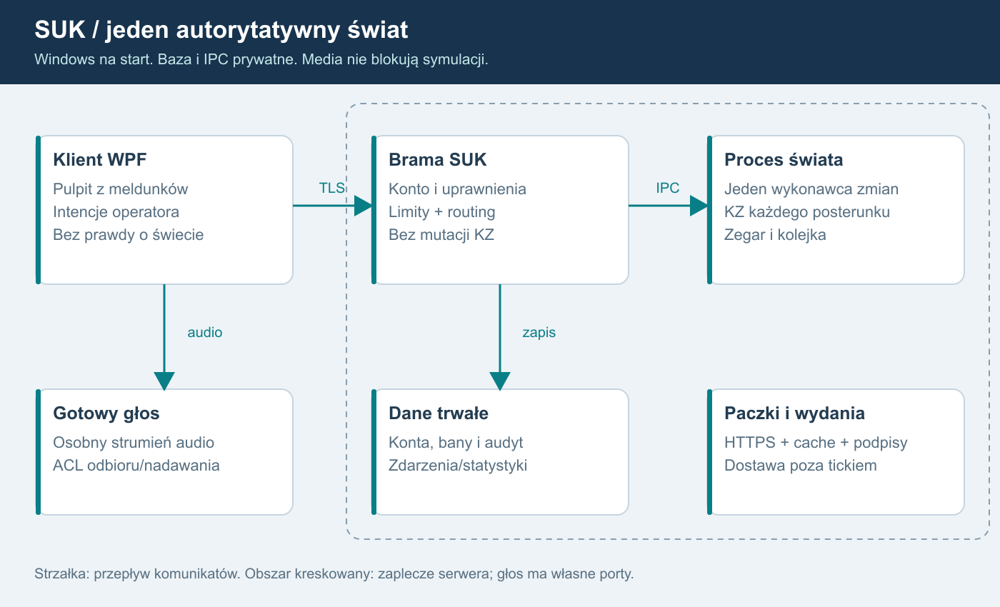
Opis diagramu dla AI
Klient WPF łączy się przez HTTPS/WSS z bramą SUK. Brama sprawdza konto i kieruje zweryfikowane intencje przez lokalny IPC do procesu świata. Świat zawiera zegar, nadrzędną obsługę poleceń, KZ, urządzenia, ruch, rozkład i Otoczenie. Jest jedynym właścicielem stanu. Oddaje niemutowalne meldunki i zdarzenia do zapisu. Głos płynie osobno do serwera mediów, nigdy przez tick. Baza i IPC nie są publiczne. Pobrania wydań są oddzielone od symulacji.
Moduły
| Moduł roboczy | Odpowiedzialność | Granica |
|---|---|---|
| SUK.Client WPF | pulpit i urządzenia łączności | nie ustala stanu świata |
| SUK.Contracts | DTO, wersje, błędy, schematy | bez logiki srk |
| SUK.Core | C#: teren, ruch, rozkład i koordynacja; adapter natywnego KZ | bez HTTP/WPF/bazy; zależności wykonuje Ada |
| SUK.Kz.Native | Ada: Kz_A/Kz_B, grupy, porównanie i domenowy selektor | jedna DLL/C ABI, bez sieci, kont i fizyki |
| SUK.Server | konta, SignalR, przydziały, moderacja | bez bezpośrednich mutacji urządzeń |
| SUK.WorldHost | kolejka, czas, Tick, migawki | nie czeka na sieć |
| SUK.Communications | urządzenia, ACL, tokeny głosu | tekst nie jest zgodą KZ |
| SUK.Persistence | audyt i projekcje statystyk | zapis poza tickiem |
| SUK.Update | dystrybucja i zgodność | nie atestuje klienta |
Nazwy projektów są propozycją; nie przenosić plików jedynie dla nazwy.
Jedna sekwencja zmian
Polecenia człowieka, instruktora i później AI trafiają do ograniczonej kolejki. Jeden wykonawca świata porządkuje je względem ticków, kierując do odrębnego KZ właściwego posterunku. Wątki połączeń nie mutują KZ. Osobne zadania serializują DTO, zapisują i wysyłają.
Zegar wykonania jest monotoniczny; czas symulacji jest oddzielny od UTC audytu. Pierwsza migracja zachowuje kroki rdzenia 0,1 s i dotychczasową kolejność; meldunki początkowo 5 Hz. Akceptowane wcześniej opóźnienie rozkaz-meldunek w planie modułów jest osobnym tematem, a nie zgodą na zmianę parametrów podczas wydzielania hosta.
Nie dzielimy pierwszego połączonego świata na niezależne serwery stacji. Pociąg ma jedno trainId i jednego właściciela również na granicy posterunków. Odcinek dyżurnego jest podziałem praw, nie procesu fizyki.
Granica procesu
Na Windows rekomendowane Named Pipes z ACL kont usług, limitami i epoką świata. Brama nie ma klucza publikowania wydań; świat nie ma haseł/SMTP. Prototyp może użyć adaptera in-process, ale publiczny pilot wymaga sprawdzonej izolacji procesu i limitów zasobów.
Singleplayer
LocalSession używa tego samego SUK.Core i lokalnego cyklu, bez konta i Internetu. Lokalne statystyki są oddzielne od serwerowych. AI obsługuje tylko styczne poza zadeklarowanym obszarem gracza, bez symulowania całego okręgu. W multiplayerze lokalny rdzeń nie jest źródłem wiążących wyników, nawet jeśli EXE zawiera go dla singleplayera.
Gotowe elementy
- ASP.NET Core i SignalR, oficjalny klient .NET, JSON na start. MessagePack dopiero po benchmarku.
- ASP.NET Core Identity i OpenIddict w monolicie: konta oraz OIDC. Nie pisać własnych haseł ani tokenów.
- PostgreSQL jako usługa Windows, jedna instancja, ograniczona pula połączeń. Nie zapisujemy każdego ticku.
- .NET Generic Host/WindowsServices do hostowania usługi.
- Istniejący serwer mediów po prototypie S10.
- Framework aktualizacji, np. Velopack, z oddzielną bramką bezpieczeństwa metadanych.
To rekomendacje, nie instalacja komponentów. Redis, Kubernetes, broker i klaster bazy nie są potrzebne na start. Każdy dodatkowy element wymaga wskazania rzeczywistego wąskiego gardła.
Pakiety obszaru
Manifest pakietu zawiera schemaVersion, topologyVersion, interlockingVersion, displayVersion, timetableVersion, contentHash i pochodzenie. Człowiek zatwierdza dane, przebiegi i zobrazowanie. Serwer weryfikuje odwołania i ładuje autorytatywną wersję, klient tylko potrzebne dane do rysowania. Paczki nie wykonują skryptów. Nazwy miejsc są danymi.
Zmiana paczki wpływającej na logikę wymaga kontrolowanego zakończenia/przeniesienia sesji. Nie podmieniamy zależności w trakcie ticku. Obecny station.json obsługuje adapter tylko do odczytu.
Sterowanie kolejką i prawa w tej samej sekwencji
Przydziały, odebranie praw, logout, kick i sankcje trafiają jako komunikaty sterujące do tej samej sekwencji świata co komendy. Host utrzymuje authorizationVersion i controlEpoch, bez zapytań DB w ticku. Administracja rozróżnia zapis sankcji w bazie od potwierdzonego zastosowania jej we wszystkich właściwych światach. Po granicy zastosowania oczekujące żądanie starej wersji praw nie wykonuje się.
Host ma mierzony budżet liczby i czasu obsługi komend między tickami. Nie opróżnia całej kolejki kosztem zegara. Zapewnia sprawiedliwy udział kont oraz jawny maksymalny wiek przyjętego żądania. Przekroczenie terminu przed wykonaniem daje Rejected/Expired bez skutku. Priorytety awaryjne wymagają ustaleń domenowych; nazwa komendy nie jest podstawą obejścia limitów.
Wiele niezależnych KZ w jednym świecie
USTALONE: jeden moduł zależności dla każdego posterunku. WorldHost jest gospodarzem modułów, a nie wspólnym komputerem zależności całego LCS. Przykład: KZ posterunków P1/P2 zawierają te same wersje dwóch odrębnych implementacji Ada Kz_A oraz Kz_B, ale mają własne definicje, stany, kolejki domenowe, status i usterki. Nie czytają wzajemnie prywatnych przebiegów ani utwierdzeń.
KZ są połączone wyłącznie jawnymi interfejsami komunikatów blokad i zatwierdzonych funkcji między posterunkami. Wspólna warstwa terenu/ruchu nie daje KZ dostępu do pociągów ani skrótu do stanu sąsiada. Każda karta/obiekt sterowany ma jednoznacznego właściciela. Harmonogram świata koordynuje fazy i wspólny czas; nie zmienia ukradkiem zaakceptowanej kolejności rozkaz-meldunek.
Jeden proces dla wielu modułów oszczędza zasoby i zapewnia spójność świata. Logiczna usterka jednego KZ nie wyłącza wszystkich; awaria całego procesu nadal dotyka wszystkie jego moduły. Ewentualna niezależność procesowa KZ to osobny późniejszy projekt, nie obietnica obecnego hosta.
Nie tworzyć pełnego Simulator wraz z Trains/Rozklad dla każdego posterunku: to duplikowałoby pociągi i zajętości. Wydzielić kontekst KZ z istniejących algorytmów oraz wspólny świat fizyczny. To obowiązkowe kryterium S01-S02, a nie funkcja odłożona do AI.
Wspólne zasoby i lokalny stan
Współdzielone definicje są niemutowalne. InterlockingInstance ma prywatny kontekst i lokalne utwierdzenia. Identyfikatory przebiegów, potwierdzeń i zdarzeń zawierają kzId albo są globalnie unikalne. Kontekst operatora przekazujemy jawnie; brak tymczasowej podmiany globalnego CurDesk do wykonania komendy.
Dwa końce blokady mają lokalne stany właściwych KZ i jawny interfejs komunikacji. Wspólny fizyczny stan szlaku i urządzeń odstępowych ma jednego właściciela, bez dwóch kopii mutable BlockState. Zasilanie jest przypisane do zaprojektowanych domen, które mogą obejmować wiele urządzeń lub posterunków; nie zakładamy automatycznie jednej globalnej ani osobnej sieci dla każdej stacji.
Harmonogram dostarcza KZ spójny zestaw statusów danej fazy. Kolejność rejestracji w słowniku nie może ukradkiem zmieniać reakcji. Kiedy komunikat przechodzi między cyklami, określa kontrakt i scenariusz różnicowy. Wielocelowy przebieg/polecenie obejmujące cudzą ochronę boczną wymaga zatwierdzonej granicy i protokołu; nie kierujemy go do KZ tylko według sygnalizatora początkowego.
Odrębne prawa obserwacji i sterowania
ViewGrant i ControlLease mają różne cykle życia. Przekazanie posterunku usuwa sterowanie dotychczasowego dyżurnego, zachowując podgląd LCS. Agregator publikuje meldunki według ViewGrant; pipeline komend wymaga bieżącego ControlLease. Nie opierać obu uprawnień na jednym bool „Controls”.
Korekta po audycie źródeł - wersja 1.3
Dwie grupy każdego logicznego KZ
PostKz = stałe kzId/postId + Group1 + Group2 + Selector + interfejsy. Każda grupa ma własne dynamiczne zależności, timery, historię wejść i diagnostykę. Współdzielić można tylko niemutowalne definicje. Obie rzeczywiście obliczają tę samą uporządkowaną CycleInput; rezerwa nie jest flagą ani pustą instancją.
Model kanałów opisuje rozdział 18, a realizację rozdział 23. Kz_A i Kz_B powstają niezależnie w Ada, w osobnych czatach. Oba działają w każdej grupie 1/2. Wspólna specyfikacja lub dwóch autorów nie są automatycznym dowodem certyfikowanej różnorodności i SIL.
Jeden skutek
OutputPlan obu grup nie zmienia urządzeń, kart, pociągów, książki ani statystyk. AdaGroupRuntime per kzId wskazuje plan wyłącznie aktywnej, zakwalifikowanej grupy. C# OutputGate egzekwuje pochodzenie, epoki, jednokrotność i prawa nowych intencji; karta wykonuje rozkaz wobec jednego świata. Ta sama bramka obejmuje komunikaty wychodzące KZ-KZ. Odrzuca dawne selectionEpoch/groupRunId i powtórzone effectId. ZeroLO, zgoda blokady i wpis statystyki muszą wykonać się raz.
System nadrzędny, parser, Pending/potwierdzenia operatora, książka, PIP i prawa nie są kopiowane do grup. Intencja przyjmowana jest raz, jej niezmienna reprezentacja trafia do obu obliczeń. Przy zatwierdzeniu nowej intencji ponownie sprawdza się aktualne prawa. Autonomiczne dozorowanie wcześniej zatwierdzonego stanu nie zależy od dalszego lease poprzedniego operatora. Przełączenie nie zmienia ControlLease/ViewGrant.
Cykl i trwałość
Fazy: statusy → uporządkowane wejścia → obliczenia grup/kanałów → kontrola kwalifikacji → wybór wyjść → karty/teren → meldunki. Szczegółowe opóźnienia rozkaz-meldunek zachowują zatwierdzony scenariusz bazowy. Train/Trains/Rozklad i fizyczny teren wykonują krok raz. Jeden logiczny strumień KZ trafia do klienta.
Hot failover zmienia selectionEpoch. Restart grupy zmienia groupRunId. Restart logicznego KZ i restore świata mają odrębne epoki. Checkpoint obejmuje oba stany grup/kanałów, selektor, wejścia i zatwierdzone wyjścia oraz jeden świat. Dwie grupy w procesie nie chronią przed crashem Windows. S02A-S02D są obowiązkowe przed S04 i pilotem.
Operator algorytmiczny - ustalone F17
IOperator obsługuje autorski algorytm SUK: automaty stanów, reguły oraz ograniczone planowanie na danych i meldunkach. LLM nie występuje jako operator, planista ani zapasowy tryb decyzyjny. Ten sam moduł działa na serwerze lub lokalnie offline, korzystając z istniejącego Otoczenie/Rozklad i normalnej drogi poleceń. Nie ma osobnego modelu językowego, klucza API ani zewnętrznej inferencji do prowadzenia ruchu. Szczegóły kontraktu i powtarzalności w 07.
Granica Ada-C# i końcowe interfejsy
Domenowa logika KZ, oba programy A/B, ich prywatne stany, porównanie, kwalifikacja i wybór aktywnej grupy należą do Ada. C# WorldHost porządkuje autoryzowane wejścia i wykonuje jedną wybraną paczkę rozkazów wobec kart/terenu. Jego OutputGate egzekwuje prawa, epoki i effectId; nie jest drugim silnikiem zależności ani samodzielnym wyborem grupy.
Jedna SukKz.dll zawiera oba niezależne pakiety i jeden runtime GNAT. Współpraca przez wersjonowane C ABI/LibraryImport/SafeHandle, bez przechodzenia wyjątków Ada przez granicę. Grupy 1/2 zawierają po A+B; łącznie cztery prywatne konteksty. Jeden teren/ruch i jeden pipeline poleceń. Dokładny kontrakt, inicjalizacja i snapshoty: 23.
Wynik losowania grupy zasadniczej jest jawnie nadanym wejściem startowym, zapisywanym przed rozpoczęciem sterowania. Replay korzysta z niego, a nowe uruchomienie świata losuje po odtworzeniu/uzgodnieniu obu grup. Reconnect, zmiana obsady i restart pojedynczej grupy nie uruchamiają losowania.
Panel S18 używa istniejących usług przez prywatny interfejs web. Dyspozytor S19 jest widokiem WPF w istniejącym kliencie, z projekcją okręgu i dyspozycjami domenowymi, bez domyślnego sterowania KZ.
Administracja 1.6
SUK.Admin.exe C#/WPF → prywatny SUK.AdminApi → istniejące konta/sankcje/audyt i kontrolowane kolejki świata. Osobny listener operacyjny wymaga mTLS ORAZ tokenu konta i aktualnych praw. Ograniczony enrollment nie oferuje czynności admina. Klient nie łączy się z bazą, pamięcią świata ani Ada; szczegóły 21.
Istniejące moduły jako punkt migracji - 1.7
Na bazie 5eddb5c istnieją C# Sim/Kz/KomputerZaleznosci, Sim/Pulpit/SystemNadrzedny/Pip i Sim/Urzadzenia z kartami oraz Zasilanie. To szwy do ponownego wykorzystania, bez potrzeby nowej implementacji kart lub parsera. Simulator tworzy nadal jeden KZ całego Station i przez Fasada udostępnia jego mutable słowniki. Oddzielna klasa nie jest odrębnym KZ posterunku.
Docelowa granica obejmuje również istniejącą Komputerownię: prywatne, autoryzowane projekcje diagnostyczne oraz osobną kompetencję instruktora do usterek. Nie transportować starego dowolnego t=serwis/usterka przez nową bramę jako zaufanej komendy. Wykonanie błędu/usterki musi trafić do tej samej uporządkowanej sekwencji praw co inne intencje. Komputerownia nie jest kanałem B, rezerwą ani komparatorem zależności.
Pakiety przyszłych obszarów uwzględniają zaakceptowany PLAN_EDYTOR_ZOBRAZOWANIA: UT tylko do odczytu, ręcznie projektowane .zob.json i stałe identyfikatory obiektów. Obecny symulator nadal czyta station.json. Import UT+zobrazowanie nie powstał i nie jest dowodem zgodności schematów; adapter bieżących danych pozostaje konieczny.
Obowiązkowe logowanie modułowe - 1.8
Każdy moduł ma adapter logów z rozdziału25 i zakres moduleId/worldRunId; dotyczy hosta, KZ/kart, ruchu, sieci, auth, usług, klientów i narzędzi. W Ada diagnostyka jest biernym wynikiem o ograniczonym rozmiarze, który host mapuje na logi; nie ma zapisu do pliku ani wywołania loggera C# w Evaluate. Diagnostyka czterech kontekstów nie tworzy czterech wpisów o jednym zatwierdzonym skutku. Diagnostyka, dziennik domenowy i trwały audyt/commit mają odrębne gwarancje.
04. Protokół i spójność
REKOMENDACJA: SignalR przez HTTPS/WSS dla .NET. Najpierw WebSocket; fallback dopuszczamy po sprawdzeniu zachowania i limitów. SignalR nie zapewnia sam autoryzacji domenowej, trwałości świata ani jednokrotności skutku.
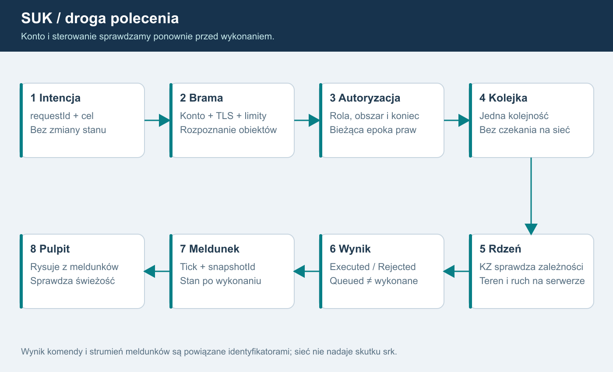
Opis dla AI
Pulpit wysyła intencję. Brama sprawdza uwierzytelnienie, limit, dokładny cel i przydział. Kolejka świata porządkuje polecenia; istniejący KZ sprawdza zależności. Wynik wraca z requestId. Aktualny stan potwierdzają meldunki, nie samo odebranie ramki. Wolny odbiorca nie blokuje ticku.
Wejście do świata
- Bootstrap HTTPS zwraca minimum: protokoły, minimalny build i kanał aktualizacji.
- Logowanie: przeglądarka systemowa, Authorization Code + PKCE, publiczny klient bez sekretu.
- Brama sprawdza podpis, issuer, audience, ważność tokenu, konto, bany i limity.
- Hello wymienia clientVersion, protocolVersion, contentSchema i capabilities.
- Serwer wyznacza worldId, sessionEpoch, contentHash i stanowisko. Niezgodność blokuje wejście.
- Pełna migawka dozwolonego zakresu i potwierdzenie snapshotId poprzedzają komendy.
Przed uwierzytelnieniem brak planu świata i danych osób. Konto/rola nie pochodzą z klientowego User.
Koperta polecenia - szkic
{
"protocolVersion": 1,
"worldId": "world-uuid",
"sessionEpoch": "fresh-random-uuid",
"requestId": "request-uuid",
"controlAreaId": "area-uuid",
"controlEpoch": 7,
"expectedContextVersion": 41,
"expectedKzEpoch": "kz-incarnation-uuid",
"command": {
"kind": "InterlockingCommand",
"targetId": "object-uuid",
"blockEndId": null,
"arguments": {}
}
}
To szkic, nie produkcyjny schemat. accountId, role i deskId przypisuje serwer. Brak API SetSignal, SetTrainPosition, SetOccupancy i „dodaj punkty”.
Istniejący parser tekstowy zostaje adapterem. Najpierw rozpoznaje wszystkie obiekty, nazwy ze spacją i dokładny koniec blokady, potem sprawdza uprawnienia. Cel nie może zmienić się po autoryzacji.
Wyniki i potwierdzenia
Stany: Queued, Executed, Rejected, AwaitingOperatorConfirmation. Queued nie oznacza wykonanego polecenia. Wynik zawiera requestId, tick, kod i correlationId. Teksty po polsku mapują stabilne kody.
Polecenie specjalne ma serwerowe confirmationId związane z kontem, stanowiskiem, celem, treścią, controlEpoch i czasem ważności. Rozłączenie i zmiana praw je unieważniają. Przed wykonaniem z kolejki ponownie sprawdzamy ban i epokę praw. Stare polecenie nie wykonuje się po odebraniu sterowania.
Powtórzenia
Klucz: konto + świat + sessionEpoch + requestId. Propozycja pamięci wyników: co najmniej 10 min, do pomiaru. Ten sam requestId z inną treścią odrzucamy. Po timeout UI pokazuje „wynik nieznany”, pyta o status lub ponawia identyczny requestId.
Restart świata tworzy nową sessionEpoch. Klient nie odgrywa poprzednich poleceń. Nie obiecujemy exactly-once przez awarię bez trwałego dziennika. Niepewny stan wymaga resynchronizacji i nowej świadomej decyzji. S06 wybiera trwałość krytycznych wyników i sprawdza awarię przed/po zapisie.
Migawki i delty
Migawka zawiera worldId, sessionEpoch, serverTick, simulationTime, snapshotId, projectionId, stateVersion i controlEpoch. Każda delta zawiera projectionId, baseVersion oraz stateVersion; klient stosuje ją tylko wtedy, gdy baseVersion równa się wersji jego bieżącego stanu. baseSnapshotId może wskazywać bazę pełnej migawki, ale nie zastępuje ciągłości wersji kolejnych delt. Luka, zmiana zakresu lub epoki wymaga synchronizacji. Wersje dotyczą konkretnej projekcji dozwolonego zakresu.
Nie wolno wybierać „ostatniej delty”, jeśli pomija ona niezastosowane zmiany. Można zastąpić kolejkę pełną najnowszą migawką albo przeliczyć deltę względem potwierdzonej bazy. Alarmy i wyniki komend mają osobną numerowaną kolejkę; nie giną z pominiętą klatką obrazu. Po wyjściu poza bufor następuje jawny resync.
Subskrypcja wynika z serwerowych praw. pageId nie daje dostępu do cudzego obszaru. Podgląd nadzorcy może być rzadszy od własnego pulpitu: propozycja 1-2 Hz wobec 5 Hz, do pomiaru. Obecny Seq na publikację nie jest tickiem świata.
Łącze i reconnect
Heartbeat nie zastępuje świeżości świata. Propozycja: 2 s bez meldunku oznacza brak danych i blokadę komend; powrót po pełnej synchronizacji. Rezerwacja stanowiska po zerwaniu: roboczo 30 s, decyzja D04.
Reconnect ma backoff z losowością, ponowne uwierzytelnienie i odczyt obsady. Konto nie odzyskuje posterunku przejętego prawidłowo przez inną osobę. Ban lub wygaśnięcie sesji kończy także istniejący WebSocket.
Rozłączenie nie resetuje sygnałów, przebiegów ani pociągów. Stan trwa na serwerze. Procedura po braku operatora wymaga odrębnej decyzji merytorycznej, a nie transportowego resetu.
Dokładna granica ponowienia i odzyskania
Rejestr przyjętych/wykonanych requestId należy do autorytatywnego hosta świata. Restart bramy go nie zeruje. Równoległe kopie współdzielą jeden wpis od przyjęcia do kolejki. Serwer przekazuje termin bezpiecznego ponowienia. Po wygaśnięciu pamięci brak wpisu oznacza „wynik nieznany”, nie dowód niewykonania; klient nie ponawia automatycznie starej intencji.
S06 wyznacza wspólny punkt trwałości komendy, wyniku i skutku w odtwarzanym świecie. Executed z poprzedniego przebiegu nie dowodzi przetrwania skutku istniejącego tylko w RAM. Po starszym checkpoint świat publikuje nową epokę i zakres cofnięcia; wyniki dotyczące utraconych skutków są historyczne. Test obejmuje zapis wyniku przed/po utrwaleniu skutku.
Epoka uruchomienia świata jest nowym losowym UUID przy każdym starcie i odtworzeniu, także z backupu. Nie powstaje wyłącznie przez zwiększenie licznika w odtwarzanej bazie. Jest odrębna od logowania i połączenia. controlEpoch/authorizationVersion pozostają wersjami wewnątrz bieżącego uruchomienia.
Limit wieku polecenia wyznacza host na podstawie monotonicznego czasu odbioru; zegar klienta nie może przedłużyć jego ważności. Ponowna walidacja celu i kontekstu nadal obowiązuje przy wykonaniu.
Adresowanie konkretnego KZ
Polecenie po rozpoznaniu targetId jest przypisane przez serwer do postId i kzId z zatwierdzonego rejestru obiektów. Klient może wskazać kontekst, ale nie zmienić właściciela urządzenia. Sprawdzamy lease dla obiektu i właściwego końca blokady oraz status jego KZ. Odcinek zawierający kilka posterunków kieruje komendy do kilku odrębnych modułów.
Meldunki zawierają sourceKzId, postId, kzEpoch danego KZ oraz stan świeżości jego łącza. Agregator LCS składa projekcję z wielu źródeł, zachowując ich pochodzenie. Brak danych KZ_A nie maluje automatycznie całego LCS na brak danych. Równocześnie awaria całego świata/łącza stanowiska unieważnia wszystkie objęte nią projekcje.
Komunikat między KZ jest serwerowym komunikatem modułów z correlationId, identyfikatorami końców i epoką uruchomienia; nie endpointem klienta do podszywania się pod sąsiedni KZ. Nie wprowadzamy uniwersalnego cross-KZ SetState.
Restart logicznego modułu ma nową kzEpoch. Nie odtwarzamy starego KZ do nowszego terenu bez zatwierdzonej procedury uzgodnienia: starsze utwierdzenia mogłyby nie odpowiadać zajętościom. Prototyp zaczyna od spójnego odzyskania całego świata; niezależny restart KZ wymaga osobnych testów, a nie samego wymienienia obiektu w pamięci.
Podgląd po przekazaniu
Rozłączenie prawa sterowania nie rozłącza subskrypcji objętej zachowanym ViewGrant. Meldunek zawiera bieżącego operatora/tryb podglądu oraz wersje praw. X po oddaniu otrzymuje dalsze meldunki, ale każda komenda do oddanego celu i stare potwierdzenie jest odrzucone. Po reconnect serwer odtwarza osobno ViewGrant i ControlLease.
Korekta po audycie źródeł - wersja 1.3
Klient adresuje logiczny kzId/obiekt; nie wybiera grupy 1/2 ani nie przesyła własnych wyników kontroli kanałów. Diagnostyka ma osobny uprawniony kontrakt. Ukryty przycisk nie jest kontrolą dostępu.
Gorące przełączenie utrzymuje logiczny strumień meldunków i prawa operatorów. Wersja oraz stan źródła pozwalają wykryć nieaktualność. Brak danych nie wygląda jak świeży poprawny stan. Wyjścia KZ-KZ także przechodzą jednokrotne zatwierdzenie; rezerwa nie wysyła drugiej zgody blokady. Restore wymaga nowej epoki świata i resynchronizacji, bez replay starych poleceń.
Granica natywna i dyspozycje 1.5
Klient nadal wysyła DTO przez HTTPS/WSS. Nie wysyła wskaźników, natywnych uchwytów, adresów funkcji ani dowolnych danych ABI. Brama waliduje typy i limity, a WorldHost buduje jawne wejścia dla Ada. Nie przyjmujemy kodu Ada ani DLL od użytkownika.
S18 korzysta z wersjonowanych operacji administracyjnych i ich identyfikatorów. S19 dodaje typowane dyspozycje z odrębnymi stanami wydania, odbioru, akceptacji i realizacji. Received nie oznacza wykonania. Żadna dyspozycja lub rola administracyjna nie zastępuje ControlLease, normalnej autoryzacji i KZ w Ada.
Kanał serwisowy istniejącej aplikacji - 1.7
W bieżącym LcsServer deklaracja t=serwis daje dostęp do diagnostyki oraz usterek bez weryfikacji konta; ten handler działa również na serwerze stanowisk. Nowy protokół nie ma ogólnej operacji „prześlij dowolny JSON do starego handlera”. Publiczne wejście gry odrzuca serwisowe/instruktorskie operacje bez skutku.
Prywatne API rozdziela odczyt kart/KZ, sprawdzenie przebiegu i mutacje instruktora; każda ma własne kompetencje, zakres postId/kzId, limity oraz aktualną epokę praw. Ograniczyć również parametry, częstotliwość i rozmiar odpowiedzi diagnostycznych. Deklaracja klienta, port loopback lub pole wersja=1 nie potwierdzają tożsamości, praw ani zgodności wersji. N42/O20 obejmuje utratę uprawnień w otwartej sesji i oczekującej mutacji.
Korelacja z logami - 1.8
Serwer nadaje zaufane identyfikatory oraz wiąże requestId z tożsamością, światem, tickiem i wynikami. Dane z klienta są niezaufanymi polami o limitowanej długości; CR/LF nie tworzy nowego rekordu. Bez kopiowania całych żądań, JWT i nagłówków Authorization. Przyjęcie, odmowa i pojedynczy skutek mają odrębne eventId oraz wspólne correlationId. Trwałość przed Applied nie wynika z samego loggera; patrz25 i S06.
05. Bezpieczeństwo infrastruktury
REKOMENDACJA. Celem jest ograniczenie zaufania i sprawdzone zachowanie po błędzie. Serwerowa symulacja chroni przed fałszowaniem stanu przez klienta, lecz nie wyklucza nadużywania dozwolonych poleceń. Potrzebne są jednocześnie uprawnienia, moderacja i audyt.
Granice zaufania
Internet obejmuje niezaufany klient, także przerobiony EXE. Publiczne są tylko HTTPS/WSS i niezbędne porty wybranego głosu. Baza, Named Pipes, panel operacyjny, porty administracyjne i API zarządzania głosem pozostają prywatne. RDP przez VPN administracyjny, z MFA tam, gdzie użyte środowisko to zapewnia, i ograniczeniem adresów; nie szeroko otwarty 3389.
Brama i świat pracują na osobnych kontach usług bez praw administratora. Klucze aktualizacji pozostają poza hostem publicznym. Lokalne ACL ograniczają pliki konfiguracji i IPC. Oddzielenie procesów nie chroni przed pełnym przejęciem Windows.
Model zagrożeń
| Zagrożenie | Kontrola | Dowód odbioru |
|---|---|---|
| Podszycie pod rolę | OIDC i role wyznaczone przez serwer | klientowy User/Role ignorowany |
| Sterowanie obcym obszarem/końcem blokady | autoryzacja rozpoznanego celu i controlEpoch | test każdego typu komendy i obu końców |
| Replay/duplikat | requestId, epoka, pamięć wyników | 1000 kopii daje jeden skutek |
| Podsłuch/MITM | TLS 1.2/1.3 z prawidłową walidacją | zły certyfikat nie łączy |
| Zalew połączeń i komend | limity per konto/IP/świat i kolejki | świat nadal wykonuje tick |
| Wolny odbiorca | wysyłka poza tickiem, resync/rozłączenie | brak narastania pamięci |
| Fałszywe zgłoszenie wersji | zgodność i walidacja serwera | zmieniony klient nie ustawia stanu |
| Bezpośredni klient głosowy | ACL mediów i krótkie przydziały | próba wejścia do cudzego kanału odrzucona |
| Kradzież konta moderatora | MFA, rozdział ról, audyt | krytyczne akcje mają autora i ślad |
| Podmiana aktualizacji | podpisany łańcuch wydania | zły pakiet/metadane odrzucone |
| Niebezpieczna paczka danych | schemat, limit, bez kodu, sandbox rozpakowania | traversal/ZIP bomb odrzucone |
| Fałszowanie punktów | zdarzenia wyłącznie z rdzenia | brak endpointu dodawania wyniku |
To własny model SUK, zgodny z zasadą autoryzacji każdej akcji i limitowania WebSocket opisaną w OWASP.
Limity początkowe do sprawdzenia
| Granica | Propozycja S04/S13 |
|---|---|
| Polecenie wejściowe | 16 KiB, JSON max depth 16, jawny schemat |
| Tekst urządzenia | 2000 znaków, bez HTML/załączników |
| Handshake | 10 s, limit nieuwierzytelnionych połączeń |
| Komendy | 10/s na konto, burst 20; oddzielne reguły potwierdzeń |
| Wiadomości tekstowe | 2/s, burst 5; osobno dzwonienie i PTT |
| Kolejka komend konta | 64; nadmiar jawnie odrzucony |
| Kolejka świata | 4096; telemetria długości i wieku |
| Bufor meldunków | limit bajtów per klient, np. 1 MiB; resync po przepełnieniu |
| Połączenia | per konto/świat; IP jako sygnał pomocniczy ze względu na wspólny NAT |
To nie są wartości udowodnione ani wszystkie ustawienia SignalR. W S04 osobno konfigurujemy MaximumReceiveMessageSize, bufory transportu, limity reverse proxy, request body i rozmiary odpowiedzi. Duże zasoby pobiera się przez kontrolowany HTTPS, bez podnoszenia wszystkich limitów.
Rate limiting nie może arbitralnie usuwać już przyjętego istotnego zdarzenia. Polecenie przyjęte do wykonania otrzymuje wynik albo jawny stan niepewności po awarii. Przy zalewie zachować możliwość obsługi uprawnionego operatora; priorytety komend awaryjnych wymagają uzgodnienia domenowego.
Logowanie i sesje
Logowanie desktop: RFC 8252, PKCE i przeglądarka systemowa; Identity + OpenIddict. Tokenów nie utrwalamy w zwykłym JSON, logach ani publikowanych adresach. Klient .NET używa nagłówka Authorization. Jeżeli wybrane SDK przeglądarkowe wymaga krótkotrwałego tokenu w query WSS, S10 weryfikuje redakcję we wszystkich logach/proxy oraz brak utrwalenia w historii i telemetrii. WPF używa chronionego magazynu Windows. Tokeny odświeżania rotują, zmiana hasła/ban unieważnia sesje zgodnie z polityką.
Sprawdzenie praw następuje przy każdej akcji i przed jej wykonaniem. Principal SignalR nie jest bieżącą bazą przydziałów. Długie połączenia muszą zostać zamknięte po unieważnieniu. W interfejsie webowym stosować ochronę CSRF i jawną listę Origin; desktopowy Origin nie stanowi dowodu tożsamości.
Konta administracyjne mają osobne role operacyjne i MFA. Reset hasła jest jednorazowy, z czasem ważności i limitem prób. Odpowiedzi nie ujawniają, czy dany e-mail istnieje. CAPTCHA dodawać dopiero przy faktycznej potrzebie ochrony publicznej rejestracji.
Utrzymanie i awarie
Windows: aktualizacje systemu i runtime w oknie serwisowym, firewall deny-by-default, automatyczne odnawianie certyfikatu z alarmem, ograniczone konta, kontrolowane zależności i skan paczek. DDoS objętościowy wymaga ochrony dostawcy; same limity aplikacji nie wystarczą.
Brak bazy blokuje nowe przydziały i akcje wymagające trwałego audytu. Bieżąca symulacja może kontynuować tylko według zatwierdzonej polityki z ograniczonym buforem zdarzeń; przepełnienie prowadzi do kontrolowanej pauzy świata. Głos i statystyki nie mogą zawieszać ticku. Awaria zapisu jest alarmem, nie cichą utratą.
Przed publiczną betą: testy negatywne, przegląd zależności i niezależny przegląd bezpieczeństwa adekwatny do zakresu. Żadna znana krytyczna luka w ścieżce publicznej bez usunięcia albo jawnego wyłączenia danej funkcji. Nie obniżać kontroli, by „zaliczyć” etap.
Izolacja komputerów zależności
Rejestr obiektów mapuje każdy cel do dokładnego posterunku/KZ. Nazwa obrazu i deklarowany kzId nie zwiększają uprawnień. API sterowania sąsiednią blokadą nie daje dostępu do prywatnych słowników KZ. Testowanie obejmuje komendy na obcy moduł, podrobiony komunikat KZ-KZ i kontrolowane odcięcie jednego modułu.
Limity per moduł zapobiegają zagłodzeniu innych KZ, ale jedno wspólne wykonanie świata nadal ma budżet. Nie uznajemy izolacji w obiektach C# za sandbox bezpieczeństwa dla obcego kodu; pakiety posterunków nie zawierają wykonywalnych wtyczek.
Korekta po audycie źródeł - wersja 1.3
Nie tworzyć publicznego portu/tokenu na każdą grupę. Przełączenie, wstrzykiwanie usterek i diagnostyka należą do ograniczonego interfejsu serwera/instruktora. Zwykły klient nie narzuca aktywnej grupy, wejść rezerwy ani wyniku kontroli. Audyt logicznego skutku i diagnostyka grup mają odrębne identyfikatory.
Selektor odcina stare plany przez selectionEpoch/groupRunId/effectId. Podpisany pakiet nie nadaje prawa do obiektu. Rebuild ma limity CPU, pamięci i historii. Symulacja nie jest certyfikowanym systemem srk ani deklaracją SIL.
Konkretne środki i interfejsy 1.5
Transport: HTTPS/WSS przez sprawdzony stos .NET/SChannel/Kestrel, prawidłowa walidacja certyfikatu i klucz prywatny serwera w chronionym magazynie. TLS 1.3 preferowany, ewentualny TLS 1.2 według potwierdzonej macierzy Windows/klientów. Nie budujemy własnego protokołu RSA ani nie ukrywamy wspólnego sekretu w EXE. Szyfrowanie chroni transmisję; poprawnie zaszyfrowana lub podpisana niedozwolona komenda nadal jest odrzucana przez prawa i KZ.
SukKz.dll jest zaufanym artefaktem wydania z weryfikowanym hashem; ładowanie wyłącznie z chronionego katalogu aplikacji, bez ścieżki podanej przez klienta. Interop kontroluje rozmiary/liczby/wskaźniki, czas życia uchwytów, kody błędów i zgodność ABI. Błąd pamięci natywnej może zakończyć cały proces świata; nie nazywać tego lokalną usterką logiczną jednego posterunku. Brama publiczna pozostaje osobnym procesem.
Pełny S18 to osobny SUK.Admin WPF: prywatne API VPN/mTLS, token właściwego konta związany z certyfikatem i bieżące kompetencje. Indywidualny klucz urządzenia, zatwierdzany enrollment po MFA i revoke: rozdział 21. Cookies/CSRF pozostają przy stronach logowania OIDC. Bez konsoli SQL/powłoki. Dyspozytor S19 ma własną rolę i zakres obserwacji; administrator nie dziedziczy jej automatycznie i odwrotnie. Szczegóły 20-23.
Nowa powierzchnia serwisowa - stan 1.7
Potwierdzone statycznie: Net/LcsNet.cs:137-157 pozwala zadeklarować tryb serwisowy, pobierać diagnostykę i przekazać usterkę do Instruktor.ApplyFault bez logowania/roli. Ta sama klasa obsługuje domyślne publiczne wiązanie IPAddress.Any (:63-68) i stanowiska uruchamiane w MainWindow.xaml.cs:292. Oddzielny lokalny port 47121 nie zamyka tej drogi na porcie stanowisk 47120. Nie wykonano próby sieciowej ani exploitu.
Przed publicznym pilotem trzeba usunąć lub zabezpieczyć WSZYSTKIE stare wejścia serwisowe: publiczny listener odmawia, prywatny wymaga konta/klucza oraz kompetencji. Odczyt diagnostyki nie upoważnia do usterek; administrator nie otrzymuje automatycznie praw instruktora lub sterowania KZ. N42/O20 sprawdza bezpośrednie żądanie i próbę obejścia przez starszy protokół, cofnięcie praw, idempotencję oraz log bez sekretów. Zatwierdzony lokalny klucz SUK.Admin i ochrona nowego API nie zabezpieczają automatycznie dawnego LcsServer.
Logi nie są kanałem bocznym - 1.8
F24 wymaga redakcji przed kolejką/sinkiem: bez haseł, JWT, cookie, prywatnych kluczy, kodów rejestracji i pełnych treści rozmów. Pola tekstowe mają typy/limity i kodowanie JSONL przeciw wstrzyknięciu wierszy. ACL rozdziela dostęp do diagnostyki i audytu; moderator nie otrzymuje automatycznie pełnych logów hosta. Retencja i eksport obejmują ochronę danych. Zapełnienie dysku i kolejki jest testowanym stanem, a nie cichym catch. Szczegóły25, N43/N44.
06. LCS, odcinki i stanowiska
REKOMENDACJA modelu uprawnień; nie jest definicją procedur srk.
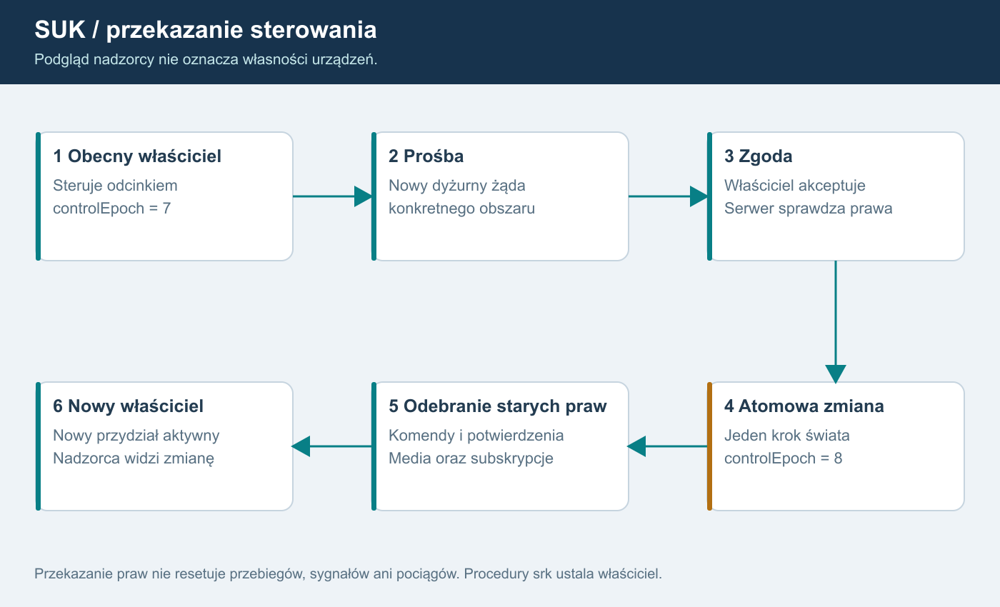
Opis dla AI
Nadzorca obserwuje cały LCS. Każdy odcinek ma jednego właściciela sterowania i własną epokę. Prośba, zgoda i atomowe przekazanie zmieniają właściciela; serwer unieważnia poprzedni przydział, oczekujące potwierdzenia i odpowiednie uprawnienia łączności. Podgląd nie daje prawa wydawania poleceń. Pomocniczy otrzymuje wyraźnie ograniczone czynności.
Hierarchia
Świat zawiera obszary LCS i posterunki. Odcinek jest konfigurowalną grupą posterunków albo zatwierdzonym zakresem urządzeń. Stanowisko to aktywna sesja operatora, konto jest trwałą tożsamością. Jedno nie jest synonimem drugiego.
Najprostszy pierwszy wariant: odcinek jako grupa całych posterunków. Podział wnętrza posterunku wymaga ręcznie zaprojektowanych granic, wspólnych urządzeń, reguł konfliktu i procedur. To decyzja D01; plan nie ogranicza funkcji docelowej, ale oddziela jej bezpieczny pierwszy zakres.
Nie utożsamiać sieciowej własności obszaru z blokadą stacyjną Dn/On, Dz/Oz itd. Ta ostatnia jest osobną funkcją domenową z wcześniejszego planu.
Macierz ról - propozycja
| Rola | Widoczność | Sterowanie | Administracja kont |
|---|---|---|---|
| Obserwator | przydzielony zakres | brak | brak |
| Dyżurny odcinkowy | własny i dozwolony podgląd | posiadany odcinek | brak |
| Dyżurny pomocniczy | przydzielony zakres | tylko zatwierdzone delegowane czynności | brak |
| Nadzorca LCS | podgląd całego LCS | prośba o przejęcie; przymus osobną decyzją | brak |
| Instruktor | scenariusz i stan dydaktyczny | jawne usterki/tempo zgodnie z rolą | brak domyślnie |
| Moderator | minimum potrzebne do interwencji | kick/mute/blokady wg polityki | bez praw operacyjnych hosta |
| Administrator usługi | audyt i konfiguracja | uprawnienia nadawane osobno | konta i role |
Każdy wiersz to zestaw uprawnień, nie sztywny pojedynczy enum. Konto może mieć kilka ról, ale serwer liczy ich zakres. Administrator nie dostaje automatycznie możliwości omijania KZ. Moderator nie otrzymuje automatycznie prawa podsłuchiwania rozmów.
Przydział sterowania
ControlLease zawiera leaseId, accountId, deskId, worldId, areaId, controlEpoch, issuedAt i status. Odcinek ma jednego właściciela; pokrywające się delegacje sterujące tym samym urządzeniem są odrzucane. Podgląd wielu osób jest dozwolony.
Przekazanie z przygotowaniem poza tickiem i atomową zmianą praw:
- Sprawdzenie uprawnienia do żądania i bieżącego właściciela.
- Zgoda dotychczasowego operatora albo zatwierdzony tryb interwencji.
- Przygotowanie trwałego audytu i odcięcia mediów poza tickiem; potem atomowa zmiana właściciela i controlEpoch.
- Unieważnienie starych komend i potwierdzeń przed wykonaniem.
- Nowe projekcje i uprawnienia łączności.
- Powiadomienie obu stanowisk i nadzorcy.
Przeniesienie praw nie zmienia nastawionych przebiegów i fizycznego stanu terenu. Jeśli urządzenia komunikacyjne wymagają odebrania dostępu, operacja kończy się dopiero po potwierdzeniu odcięcia lub odłączeniu starej sesji mediów.
Pełny katalog komend
Dla każdej komendy: rozpoznany cel, zakres, rola, posiadany lease, wymagana procedura potwierdzenia i wpis audytu. Uwzględnić KW, NN/ONN, AGR, STW, alarmy, instruktor, tempo i działania na szlaku.
Szlak ma dwa odrębnie autoryzowane końce. Posiadanie jednego nie uprawnia do wskazania drugiego przez etykietę. Brak kodu posterunku i nieznany obiekt oznaczają odmowę, chyba że konkretne polecenie ma jawnie zdefiniowany globalny zakres.
Utrata operatora
Transport odróżnia rozłączenie, logout, kick i ban. Rezerwacja przy reconnect jest techniczna; automatyczne przejście na nadzorcę/AI jest decyzją domenową D04. Nie zamieniamy utraty łącza w automatyczne „wszystko Stój”. Serwer nie resetuje pociągów ani blokad.
Ban posterunku oznacza brak możliwości uzyskania obejmującego go przydziału. Jeżeli odcinek zawiera zablokowany posterunek, trzeba odmówić takiego odcinka albo wcześniej jawnie go podzielić; nie pomijać blokady przez większy zakres.
Pomocniczy nie może działać równolegle na tym samym urządzeniu bez ustalonego modelu odpowiedzialności. Dokładny katalog delegacji i zasady komend specjalnych to D02. Zachowanie Wbl/Pzk po rozdzieleniu końców to D03, do decyzji właściciela na podstawie Ie-20 i materiałów.
Asynchroniczne przygotowanie
Atomowość dotyczy właściciela i epoki wewnątrz świata. Cała operacja ma Preparing/Committed/Failed. Nie czekamy w ticku na DB ani serwer głosu. Nowe prawa wymagające potwierdzonego odebrania poprzednich uprawnień mediów nie są aktywne przed końcem przygotowania. Brak odpowiedzi nie przywraca automatycznie starego lease. S06 ustala stan po każdym punkcie awarii i timeout. Zapis sankcji/przekazania oraz potwierdzenie ich zastosowania są osobnymi wynikami.
Odcinek i KZ to różne podziały
Każdy posterunek ma własny moduł zależności niezależnie od tego, kto nim steruje. Połączenie kilku posterunków w jeden odcinek ani przejęcie całego LCS nie scala ich KZ. Pomocniczy może mieć zatwierdzony podzakres jednego posterunku, lecz nie tworzy przez to nowego KZ. Podział danych zależności i granic urządzeń jest projektowany przez człowieka. Interwencja i komenda globalna wskazuje jawny zbiór KZ; nie otrzymuje domyślnie całego świata.
Ustalenie właściciela F15 - bez ponownego pytania
Po oddaniu kontroli dyżurny LCS ma nadal podgląd posterunku, ale nie ma sterowania. ViewGrant pozostaje, ControlLease przechodzi na nowe stanowisko. Podgląd obejmuje obserwację skutków działań nowego dyżurnego. Nie usuwać wszystkich subskrypcji wraz z lease. Rola nadzorcza nie pozwala mimo to wydać komendy; potrzebne prawidłowe przejęcie. Wyjątkiem jest osobna sankcja odbierająca dostęp, nie zwykłe przekazanie.
Asynchroniczny Preparing nie jest jeszcze przekazaniem. Właściwa granica utraty/nabycia prawa to Commit w świecie. Jeśli operacja zawiedzie przed odebraniem prawa, dotychczasowe prawo nie wymaga „przywrócenia”; jeżeli zostało już odebrane, nie odtwarzamy go samoczynnie po błędzie. S06 ma testować oba przypadki bez blokowania ticku.
Korekta po audycie źródeł - wersja 1.3
Prawa dotyczą posterunku/obszaru, nigdy chwilowo aktywnej grupy. Przełączenie grupy nie odnawia delegacji pomocniczego, nie przywraca utraconego sterowania i nie omija zakazu posterunku. Oddający LCS nadal ma aktualny podgląd po przełączeniu, ale jego komendy i potwierdzenia są odrzucane. N33 łączy te próby z N24.
Końcowy dyspozytor i administracja
Administrator, dyspozytor ruchowy i dyżurny LCS są odrębnymi rolami. S18 zarządza kontami, sankcjami i utrzymaniem według kompetencji. S19 realizuje zatwierdzony przez właściciela nadzór i koordynację okręgu. Podgląd i wydawanie dyspozycji nie dają ControlLease ani prawa przełączania grup KZ. Szczegóły 21/22; po zwykłym oddaniu posterunku F15 nadal obowiązuje.
Uwzględnienie systemu nadrzędnego - 1.7
Stanowiska i posterunek→stanowisko są już w Sim/Pulpit/SystemNadrzedny.cs, a Sim/Desk.cs stanowi fasadę. Wykorzystać to zachowanie po rozdzieleniu globalnego User/Page/Pending/CurDesk i dodaniu właściwych ViewGrant/ControlLease. Obrazy nowego edytora mogą pokazywać ten sam obiekt UT na dwóch obrazach; nie daje to dodatkowego prawa sterowania. Prawa wynikają z właściciela posterunku/obiektu, nie z aktualnej zakładki pulpitu.
07. Łączność przez urządzenia i późniejsze AI
Ustalenie właściciela: AI ruchowe jest algorytmem, bez LLM
W całym planie AI prowadzące ruch oznacza autorski algorytm SUK, który stworzymy na podstawie danych infrastruktury, rozkładu jazdy, parametrów pociągów, bieżących meldunków i zatwierdzonych zasad prowadzenia ruchu. Realizacja: automaty stanów, reguły decyzyjne i planista konfliktów z ograniczonym horyzontem. Model LLM nie prowadzi ruchu, nie wybiera decyzji i nie stanowi trybu awaryjnego. To ustalenie obejmuje multiplayer oraz singleplayer.
Algorytm działa na autorytatywnym serwerze albo lokalnie offline w singleplayerze. Nie wymaga usługi modeli językowych, klucza API ani opłat za tokeny. Parametry i reguły są jawne, wersjonowane i sprawdzane scenariuszami. Dla tych samych wejść, czasu symulacji i konfiguracji uzyskujemy odtwarzalny wynik.
AI w zwrocie „instrukcja dla AI” oznacza narzędzie pomagające programiście. Nie określa technologii automatycznego dyżurnego działającego w SUK.
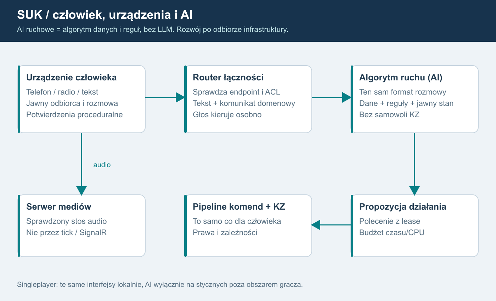
Opis dla AI
Urządzenie człowieka tworzy rozmowę/komunikat domenowy. Router sprawdza urządzenie, połączenie i uprawnionych odbiorców. Tekst trafia do innego urządzenia lub adaptera AI. Głos to osobny strumień do serwera mediów. AI proponuje odpowiedź i ewentualną komendę do normalnego pipeline; nigdy nie zmienia stanu KZ. W singleplayerze te same interfejsy pracują lokalnie.
Wzorzec funkcjonalny
Dokumentacja ISDR, wersja 2024.09.30, rozdział 2.4, s. 53-58, jest inspiracją dla centralek, telefonicznej łączności ruchowej i parametryzowanych rozmów. Nie traktujemy jej jako opisu protokołu, kodu ani licencji na kopiowanie grafiki. Nie odtwarzamy urządzeń z pamięci; pierwsze urządzenie i zakres procedur wybiera właściciel (D05).
Model łączności
CommunicationEndpoint: endpointId, typ urządzenia, posterunek/obszar, linia lub grupa radiowa, dozwolona rola i odbiorcy. Konfigurację połączeń przygotowuje człowiek. Id urządzenia nie jest identyfikatorem konta.
Połączenie telefoniczne: Idle, Calling, Ringing, Connected, Busy, Ended/Failed. Radiotelefon: nasłuch, PTT, nadawanie oraz zajętość kanału. Kolizje nadawania, priorytety i podsłuch instruktora wymagają decyzji o odwzorowywanym urządzeniu. Interfejs to urządzenie, nie jedna globalna lista czatu.
Wiadomość zawiera messageId, conversationId, endpointFrom/To, typ, trainId/number, track/blockEndId, parametry, simulationTime, createdUtc, correlationId i status. Serwer nadaje tożsamość. Katalog telefonogramów i wymaganych parametrów wynika ze źródeł i decyzji właściciela, nie z generatora tekstu.
Statusy Delivered, Read i AcceptedOperationally mają różne znaczenie. Odczytanie tekstu i usłyszenie głosu nie są automatycznym potwierdzeniem zgody ruchowej. Dowolna wiadomość nie może uruchomić semafora.
Tekst
Pierwszy kanał: tekst i ustrukturyzowane formularze przez te same urządzenia. Walidacja odbiorców, limity, kolejność, potwierdzenie i antyspam po stronie serwera. Renderowanie jako zwykły tekst; bez załączników w pilocie. Utrata prawa do konkretnego urządzenia odcina jego przyszłe wiadomości. Samo oddanie sterowania zachowuje podgląd i nie odbiera automatycznie odrębnych praw łączności.
Rejestrator srk, prywatna rozmowa i audyt moderacji są oddzielnymi strumieniami. Obecny Telefon w rejestratorze jest wspólny; nie spełnia prywatności.
Głos: nie budujemy kodeka ani własnego stosu transmisji
S10 porównuje dwa istniejące rozwiązania na Windows:
| Kandydat | Potwierdzone | Bramka prototypu |
|---|---|---|
| Mumble Server | oficjalna wersja Windows; API Ice | integracja WPF/audio i wielu urządzeń, ACL |
| LiveKit | oficjalne binarki Windows, WebRTC/SFU | adapter C++ lub JS/WebView2, operacje Windows i fallback TURN |
Rekomendacja: zacząć od ograniczonego prototypu Mumble; przejść do LiveKit, jeśli spełnienie urządzeń wymagałoby utrzymywania rozległego własnego klienta. Ice administruje Mumble i nie jest SDK audio. Mumble ma kanał macierzysty, dodatkowy nasłuch i whisper; VoiceTarget 1-30 nie oznacza limitu posterunków.
LiveKit nie jest Linux-only. Oficjalne wydanie 1.13.10 zawiera Windows; produkcyjne zachowanie jako usługi nie zostało tu przetestowane. Kod tej wersji wskazuje brak capacity management na Windows. Istnieją SDK C++/JS, ale nie potwierdzono gotowego natywnego odpowiednika dla WPF/.NET.
S10 ma wykazać jednoczesny nasłuch radio + połączenie telefoniczne, PTT, brak podsłuchu obcych obszarów, odcięcie po banie, reconnect, pracę za NAT i ograniczonym firewallem, CPU/RAM oraz opóźnienie. Zewnętrzne okno komunikatora nie jest docelowym ukończeniem wymagania urządzeń w grze. Licencje klienta, bibliotek i dystrybucji sprawdzamy przed wyborem.
S11 integruje adapter audio, wybór mikrofonu/głośnika, PTT i automatyczne odnawianie uprawnień mediów. Krótkie tokeny nie wystarczają do natychmiastowego bana: serwer musi usunąć istniejącego uczestnika i odebrać publikację/subskrypcję. Obcy klient głosowy nie może ominąć ACL przez zgadnięcie kanału.
W przypadku WebRTC wymagane testy UDP oraz TURN/TLS. Wymiana metadanych przez HTTPS nie oznacza, że każdy serwerowy strumień głosu ma szyfrowanie end-to-end. Nie deklarujemy E2EE bez wdrożenia i testu. Nagrywanie głosu domyślnie wyłączone; polityka retencji i dostęp moderatorów to D07.
Kontrakty algorytmu teraz, decyzje ruchowe później
Teraz definiujemy IOperator, ICommunicationEndpoint i adapter poleceń jako kontrakty. Nie dodajemy planisty krzyżowań przed S13.
S14 obejmuje testowy adapter regułowy i ustrukturyzowane rozmowy. Zachowuje możliwości Otoczenie, a jego obecna reguła odmowy przy pociągu w ciągu 60 s nie staje się wzorcem normatywnym.
S15 rozdziela uproszczonego sąsiada poza światem od pełnego nieobsadzonego posterunku wewnątrz świata. W multiplayerze pełne posterunki mają normalny stan serwerowy; AI otrzymuje lease. Człowiek i AI nigdy nie są jednocześnie właścicielem urządzenia. Zmiana obsady odbywa się na granicy ticku i przekazuje stan rozmów/uzgodnień.
Singleplayer symuluje tylko wybrany obszar i styczne. Uproszczony sąsiad nie potrzebuje pełnej topologii całego kraju. Multiplayer może używać pełnego operatora AI tam, gdzie posterunek należy do świata.
S16 dopiero wprowadza krzyżowania i wyprzedzania. Planista proponuje działania z horyzontem i budżetem CPU, uwzględnia rozkład i infrastrukturę, a KZ nadal rozstrzyga wykonalność. Reguły i miary jakości zatwierdza właściciel. Rezerwacje planisty nie są utwierdzeniem przebiegu.
LLM jest wykluczony z operatora i planisty ruchu. Decyzje oraz odpowiedzi proceduralne tworzy algorytm z reguł, automatów stanów i danych. Komunikaty człowiek-algorytm mają zatwierdzony katalog typów, parametrów i szablonów tekstu; nie zakładamy interpretowania dowolnej rozmowy przez model językowy.
STT (rozpoznawanie mowy) i TTS (synteza mowy) to ewentualne osobne funkcje audio. Nie są planistą ruchu ani obejściem zakazu LLM. Głos między graczami działa niezależnie od nich. Jeżeli później powstanie obsługa głosu człowiek-algorytm, rozpoznanie musi zostać sprowadzone do jawnego typu/parametrów, zwalidowane i potwierdzone według procedury; sama rozpoznana mowa nie uruchamia komendy. Katalog i sposób obsługi wymagają D05.
Uwierzytelnienie mediów i ponowne wejście po banie
S10 sprawdza powiązanie tożsamości mediów z accountId SUK, odmowę anonimowego wejścia oraz próbę obejścia przez inny nick/certyfikat. W Mumble uwzględnia rejestrowaną tożsamość/ACL i synchroniczny autentykator Ice: krótki timeout, lokalne ograniczone dane przydziału, bez powolnego HTTP/DB i bez administracyjnych wywołań zwrotnych Ice z callbacku.
W LiveKit self-hosted usunięcie uczestnika lub aktualizacja praw nie unieważnia wcześniej wydanego JWT. S10/S11 musi sprawdzić wejście ze starym tokenem po banie i przekazaniu. Krótki TTL sam nie spełnia natychmiastowego odcięcia. Wybrana integracja musi blokować także ponowne zestawienie mediów z odebranymi prawami; jeżeli nie potrafi, nie spełnia bramki wyboru głosu. Rozwiązanie nie może polegać wyłącznie na Webhook po wpuszczeniu użytkownika do chronionej rozmowy.
Każdy pełny posterunek wewnątrz świata zachowuje swój KZ także przy braku gracza lub przy obsadzie AI. Zmiana operatora zmienia prawa, nie komputer zależności i nie jego stan. Uproszczony sąsiad poza granicą singleplayera ma jawny model graniczny; nie pozorujemy nim pełnego posterunku należącego do świata.
Korekta po audycie źródeł - wersja 1.3
Dwie grupy nie tworzą dwóch operatorów AI, telefonów ani rozmów. Jeden endpoint obsady i system nadrzędny przyjmują intencję raz; oba zestawy ją obliczają, a wynik/rozmowa/potwierdzenie publikowane są raz. Pełny KZ obsadzony AI zachowuje dwie grupy.
Singleplayer używa identycznego wykonawcy pełnych KZ wybranego obszaru. AI tylko na stycznych poza nim; nie uruchamiać pełnej sieci kraju. Nowe planowanie krzyżowań/wyprzedzań nadal dopiero po S13.
Dane, wybór działania i wyjaśnienie decyzji
Algorytm korzysta z ręcznie zatwierdzonych definicji układu i przebiegów, rozkładu oraz danych pociągów, a stan bieżący pobiera z meldunków i informacji dozwolonych jego roli. Nie odczytuje prywatnych utwierdzeń sąsiedniego KZ i nie projektuje sam zależności. Rozszerzamy istniejące Otoczenie, Rozklad i kontrakty poleceń, zamiast tworzyć drugi silnik świata.
Przebieg decyzji: odczyt danych i stanu → rozpoznanie potrzeby przejazdu/konfliktu → wyliczenie ograniczonego zbioru dopuszczalnych wariantów → ocena według zatwierdzonych reguł → uzgodnienie proceduralne → wysłanie zwykłego autoryzowanego polecenia → sprawdzenie wyniku i ponowne planowanie. Wyprzedzanie i krzyżowanie dochodzą w S16 po odbiorze infrastruktury. Dokładne priorytety i miary jakości to D13, a nie zasady wymyślone przez generator tekstu.
Dziennik decyzji zapisuje wersję algorytmu/reguł, identyfikatory wejść, rozważane warianty, kod przyczyny wyboru lub odmowy i wynik polecenia. Stabilny sposób rozstrzygania remisów umożliwia odtworzenie próby. Przekroczenie budżetu CPU, niepełne dane lub brak wariantu daje zdefiniowany wynik domenowy; nie uruchamia zastępczego LLM i nie omija KZ.
Rozmowy algorytmu powstają z parametrów i szablonów. Swobodny czat ludzi pozostaje osobną treścią, która sama nie steruje algorytmem, urządzeniami ani zależnościami.
Odtwarzalność a budżet wykonania
Budżet decyzyjny ma deterministyczny limit pracy, np. maksymalną liczbę ocenionych wariantów lub rozwinięć planu, zapisany w wersjonowanej konfiguracji. Dla tych samych danych i tego limitu algorytm rozpatruje warianty w tej samej kolejności. Nie wybiera innego wariantu tylko dlatego, że szybszy komputer zdążył sprawdzić więcej opcji.
Limit czasu CPU jest osobnym zabezpieczeniem przed przeciążeniem. Jego przekroczenie przerywa niezatwierdzony krok, daje jawny wynik zgodny z zatwierdzonym profilem i zapisuje zdarzenie przerwania. Nie publikuje częściowo wybranego planu. Przy odtwarzaniu uwzględnia się również zapisane zdarzenia przerwania; nie obiecuje się identycznego momentu wystąpienia przeciążenia na różnych komputerach.
Wykonawca dyspozycji i języki 1.5
Algorytm ruchu F17 pozostaje w C# jako moduł danych/reguł; KZ jest w Ada i sprawdza zależności. Nie utożsamiać automatycznego dyżurnego z silnikiem zależnościowym. Późniejszy dyspozytor S19 wysyła typowane dyspozycje do człowieka lub algorytmu; realizacja przechodzi normalne prawa i KZ. Parametry nie są dowolnym kodem ani zmianą reguł na żywo.
08. Konta, administracja i statystyki
Konto
REKOMENDACJA: Identity + OpenIddict, PostgreSQL na Windows. Rejestracja, potwierdzenie kontaktu, login, reset hasła, rotacja sesji, zmiana nazwy i usunięcie/dezaktywacja konta. E-mail nie musi być publicznym nickiem. Singleplayer nie wymaga konta.
Oddzielić accountId, displayName, deskId i rolę w konkretnej sesji. Role operatora nie dają uprawnień administracyjnych. Przy rejestracji i odzyskiwaniu kont limity oraz brak ujawniania istnienia adresu. Własny algorytm haseł i własny protokół logowania są poza planem.
Działania administracyjne
| Działanie | Zakres i skutek |
|---|---|
| Kick ze stanowiska | unieważnia lease; świat nie jest resetowany |
| Blokada posterunku/obszaru | zabrania nowego i odbiera istniejący zakres |
| Zakaz sterowania | pozwala ewentualnie obserwować zgodnie z polityką |
| Mute tekst/głos | osobny typ i czas; egzekwowanie także w mediach |
| Ban konta | zamyka wszystkie sesje i blokuje wejście |
| Ban świata | ogranicza wskazany świat, jeśli polityka to przewiduje |
| Odwołanie sankcji | nowy wpis audytu, nie usunięcie starego |
Sankcja: sanctionId, konto, typ, zakres, start/end UTC, powód, autor, evidenceRef i wersja. Idempotentne ponowienie. Limity kompetencji moderatora, np. długość bana, ustala właściciel (D06). IP nie jest tożsamością; nie stosować wyłącznego bana IP do osób za wspólnym NAT.
Zmiana praw podnosi authorizationVersion/controlEpoch i rozłącza odpowiednie sesje. Sprawdzamy stan przed wykonaniem kolejki, podczas reconnect i wydawania tokenu głosu. Ukryty przycisk nie jest kontrolą dostępu.
Model danych - zarys
Accounts/Identity, Sessions, Worlds, ContentPackages, AreaDefinitions, ControlLeases, Sanctions, AuditEntries, DomainEvents, CommunicationSessions, StatProjections i Outbox. To zarys tabel/odpowiedzialności, nie gotowa migracja SQL.
Trwałe konto oddzielamy od efemerycznego stanu każdego odcinka i ticku. Brak transakcji DB dla każdego kroku fizyki. Konfiguracja i sankcje są trwałe; migawki świata mają osobny zapis i wersję silnika.
Statystyki serwerowe
Obecne liczniki Score są punktem odniesienia, nie gotowym rankingiem. Zdarzenie ma eventId, worldId, sessionEpoch, tick, typ, actorAccountId, deskId, controlLeaseId/epoch, trainId i schemat danych. Serwer wyznacza autora. Klient tylko odczytuje.
Zapis zdarzeń z kontrolą kolejności i ograniczonym buforem; worker utrwala je asynchronicznie. Dopiero utrwalone zdarzenia z unikalnym eventId budują projekcje statystyk. Outbox służy dalszemu przetwarzaniu po utrwaleniu; sam nie zapewnia atomowości pomiędzy pamięcią rdzenia a DB. Trwałość krytycznych komend i odtwarzanie wymagają decyzji S06.
Przetworzenie zdarzenia drugi raz nie nalicza wyniku drugi raz. ProjectionVersion umożliwia przeliczenie według tej samej reguły. Wyniki local/offline nie trafiają do rankingu serwerowego.
Proponowane miary na początek: czas obsady, liczba obsłużonych pociągów wg jawnej definicji, wykonane polecenia, zdarzenia/usterki szkoleniowe. Punktację błędów i odpowiedzialność przy zmianie dyżurnego ustala właściciel (D08). Sama różnica czasu przyjazdu nie dowodzi winy dyżurnego.
Dane i audyt
Osobno: dziennik srk, historia rozmów, audyt kont/moderacji i log techniczny. Dostęp według potrzeby; żadnych tokenów, haseł ani pełnych ramek w logach. Domyślnie bez nagrania głosu. Okresy retencji, eksport/usunięcie danych i regulamin wymagają D07 przed publicznym udostępnieniem. Ten dokument nie ustala zgodności prawnej.
Kopie zapasowe szyfrowane, poza hostem gry, z testem odtworzenia. Audyt append-only na poziomie aplikacji nie oznacza kryptograficznej odporności administratora hosta. Krytyczny audyt warto wysyłać do oddzielnego magazynu.
Zastosowanie sankcji w świecie
Trwały zapis sankcji poprzedza jej dystrybucję, ale odpowiedź administracyjna rozróżnia Saved i Applied. Komunikat sterujący podnosi wersję praw w sekwencji hosta, nie przez zapytanie DB z ticku. Test obejmuje ban równoczesny z wykonywaniem kolejki oraz niedostępny proces świata. Niedostępny świat nie może po odzyskaniu przyjmować komend przed synchronizacją bieżących sankcji.
Zdarzenia i audyt obejmują sourceKzId/postId oraz epokę modułu. Wspólny ranking nie wymaga scalania KZ. Sam restart jednego modułu nie może przypisać cudzych zdarzeń do innego posterunku.
Korekta po audycie źródeł - wersja 1.3
Statystyki i książka wynikają z logicznego zatwierdzonego effectId, nie z osobnych wyników Group1/Group2. Diagnostyka nie nalicza drugiego przejazdu ani punktów. Hot failover utrzymuje sankcje/przydziały; restore nie wskrzesza historycznych praw. Odbiór N29/N33.
Pełny panel na końcu
S08 dostarcza obowiązkowe minimalne narzędzia moderacji i audytu przed pilotem. Pełny control panel S18 powstaje po S16/S17 i używa tych samych kont, sankcji, ról, zdarzeń oraz rozróżnienia Saved/Applied. Nie powstaje druga baza kont. Rola dyspozytora S19 jest osobna i nie daje praw moderacyjnych ani sterowania urządzeniami.
Dostęp administracji 1.6
Pełny interfejs SUK.Admin WPF powstaje w S18. S08 zapewnia wcześniej minimalne prywatne narzędzie nad tym samym API, z kluczem administratora/urządzenia i istniejącą bazą kont. Enrollment, konto ORAZ klucz, rotacja i revoke: rozdział 21/N41/O19. Minimum N41A poprzedza pilot, bez zależności od pełnego GUI.
Diagnostyka i instruktor - 1.7
Istniejąca Komputerownia ma widoki kart/KZ i polecenia usterek. Użyć jej projektów widoków/projekcji, ale przydzielić osobno odczyt diagnostyki i mutacje instruktora. Nie utożsamiać aplikacji Komputerownia z nowym SUK.Admin ani z rolą dyżurnego. Stare pole t=serwis nie jest rolą potwierdzoną przez serwer; N42/O20 należy do minimalnej bezpiecznej administracji przed S13.
09. Wersje i aktualizacje
Dwie różne potrzeby
Serwer kontroluje zgodność klienta i danych. Updater pomaga użytkownikowi pobrać oraz bezpiecznie zastosować wydanie. Numer wersji lub hash zgłoszony przez EXE nie dowodzi, że klient nie został zmodyfikowany. Autorytet serwera pozostaje wymagany.
Na datę planu .NET 8 ma wsparcie do 10.11.2026; .NET 10 LTS do 14.11.2028 według polityki Microsoft. Rekomendowana migracja klienta i hosta do .NET 10 w S01, z testem zgodności. Nie publikować nowej infrastruktury na runtime bez wsparcia.
Macierz zgodności
Oddzielne pola: clientVersion/buildId, protocolVersion, engineVersion, contentSchemaVersion, contentHash i releaseChannel. Świat przypina wersję silnika i treści. Klient otrzymuje minimalną obsługiwaną wersję i czytelny komunikat. Niezgodnego protokołu nie próbujemy „naprawić” przez pomijanie pól.
Przy zmianie niekompatybilnej nowe sesje trafiają na nową wersję; stare są kontrolowanie kończone w oknie utrzymania. Żadnej cichej podmiany logiki w aktywnym świecie. Starsze wydanie może zachować offline singleplayer, o ile użytkownik zna ryzyko i jego dane są zgodne; publiczna brama odmawia nieobsługiwanej wersji.
Framework i łańcuch zaufania
Velopack jest kandydatem do pakowania, kanałów i instalacji Windows. Podpisywanie Velopack nie jest samo dowodem ochrony wszystkich metadanych feedu. Nie zakładamy gotowego połączenia Velopack + TUF dla .NET: S12 musi potwierdzić utrzymywaną integrację lub wybrać inny gotowy mechanizm.
Wymagania odbioru:
- Podpis aplikacji i instalatora oraz weryfikacja wydawcy.
- Uwierzytelnione metadane wiążą wersję, kanał, długość, SHA-256 i czas ważności.
- Kotwica zaufania jest dostarczona z zaufanym instalatorem, nie pobrana z tego samego niezaufanego feedu.
- Ochrona przed rollback/freeze, rotacja i unieważnienie klucza.
- Klucz publikujący poza publicznym hostem, z minimalnym dostępem procesu wydania.
- Brak uruchomienia paczki przed pełnym sprawdzeniem.
TUF jest istniejącym modelem ochrony aktualizacji. Użyć utrzymywanego rozwiązania, nie pisać „uproszczonego TUF”. Jeśli wybrany framework nie spełnia bramki, nie zaliczać S12 na podstawie samego HTTPS.
Obieg wydania
Budowanie w kontrolowanym środowisku, testy, spis zależności/SBOM, podpis, publikacja niezmiennych artefaktów, a dopiero potem podpisanych metadanych kanału. Canary dla testerów i kontrolowane zwiększanie odbiorców. Pakiety danych obszaru mają własny manifest i schemaVersion.
Klient sprawdza dostępność na starcie z cache i odstępem, pobiera w tle z limitem pasma, weryfikuje i proponuje zastosowanie po zakończeniu służby. Nie restartuje sam podczas obsługi posterunku. Aktualizacja bezpieczeństwa może blokować nowe wejście do świata zgodnie z komunikatem serwera.
Dane użytkownika, układy i konfiguracja pozostają poza wymienianymi plikami programu. Własnych plików station.json nie nadpisuje instalator. Migracje zapisów robią kopię i znają zgodność wstecz.
Odporność na błąd
Testujemy przerwany download, brak miejsca, utratę prądu, uszkodzoną deltę, plik z błędnym podpisem, stare metadane, zły kanał i zmianę klucza. Delta ma fallback do pełnego zweryfikowanego pakietu. Stan instalacji musi być możliwy do naprawy bez utraty projektów.
Odzyskanie po wadliwym wydaniu rekomendujemy jako nowe podpisane wydanie z wcześniejszym sprawdzonym kodem, z wyższą wersją i zgodnym formatem danych. Dowolny downgrade podważa ochronę przed cofnięciem. Awaryjna wymiana klucza ma oddzielną udokumentowaną procedurę.
Dodatkowy test bezpieczeństwa: wygasłe metadane oraz cofnięcie zegara po wcześniejszej poprawnej aktualizacji. Implementacja korzysta z istniejącej ochrony zaufanego czasu/wersji zgodnej z wybranym frameworkiem, zamiast ufać bezwarunkowo bieżącej dacie systemowej.
Korekta po audycie źródeł - wersja 1.3
Obie grupy mają zgodny zestaw wersji algorytmów, danych, schematów i kontraktów. Inny hash blokuje Ready. Nie deklarować niezależnego rolling update grup jako potwierdzonej funkcji EBILock. Aktualizacja przechodzi kontrolowany cykl zgodności/odtworzenia; odbiór synchronizacji i przełączenia powtarza się także offline.
Artefakty Ada
Manifest wydania i zgodności obejmuje SukKz.dll, runtime/toolchain GNAT, wersję ABI, implementacje A/B, konfigurację reguł i schemat danych. Klientowy oraz serwerowy host lokalny używają tego samego zatwierdzonego zestawu. Nie podmieniamy DLL w trakcie cyklu ani nie pobieramy natywnego kodu z paczki posterunku. Restart i losowanie nowej grupy wymagają zwykłej procedury uzgodnienia/odtworzenia świata.
SUK.Admin 1.6
Osobny podpisany pakiet/kanał wydania i zgodność z Admin API. Brak wspólnych prywatnych kluczy w dystrybucji; instalator i logi nie eksportują klucza. Inny komputer wymaga nowego enrollmentu. Podpis pakietu nie zastępuje tożsamości admina.
Dane i dodatkowe aplikacje obecne w bazie - 1.7
Macierz zgodności obejmuje również istniejącą Komputerownię i tabelę Data/sygnaly_ie1.json. Pole wersja=1 starego serwisu nie zastępuje handshake'u i kontroli dopuszczonego protokołu. Przyszłe UT/.zob.json mają zatwierdzony plan, lecz adapter do station.json i schemat pakietów gry wymagają dopiero odbioru. Nie deklarować aktualizacji/konwersji danych, której nie zaimplementowano.
10. Zasoby i wzrost skali
DO POMIARU. Liczba graczy nie wyznacza sama rozmiaru serwera. Ważne są liczba obiektów i pociągów, aktywne rozmowy, zakresy obserwacji, częstotliwość zmian i wymagany zapas CPU.
Pierwsze środowisko prób
Windows, 4 vCPU, 8 GiB RAM, SSD to proponowany punkt startu pomiarów, nie potwierdzenie wystarczalności ani minimalne wymaganie produkcyjne. Osobno mierzymy system, bramę, PostgreSQL, świat i głos. Uwzględnić licencję Windows, backup, transfer i monitoring. Nie podajemy niezweryfikowanej ceny hostingu.
Limit publicznej obsady wynika z testu. Plan startuje od 20-40 graczy; badanie 80 klientów sprawdza zapas i punkt degradacji, nie oznacza obietnicy obsługi 80.
Oszczędzanie po stronie serwera
- Jedna symulacja świata niezależna od liczby pulpitów.
- Wspólne niemutowalne projekcje, z filtrowaniem według uprawnień; nie kopiować pełnego świata dla każdej klatki klienta.
- Najpierw pomiar pełnych migawek, potem subskrypcje i delty. Stałe zasoby oddzielnie przez HTTPS z cache/hash.
- Ograniczone kolejki i bufory; wolny klient odłączany lub resynchronizowany.
- Grupowanie zapisu zdarzeń, indeksy pod realne zapytania, projekcje statystyk poza tickiem.
- Głos wysyłany do rzeczywistych odbiorców urządzenia, nie globalnie.
- Ograniczony horyzont i budżet CPU algorytmu ruchu; LLM wykluczony z podejmowania decyzji.
- Brak uruchamiania podkładów ortofoto/edytora na serwerze gry.
Nie obniżamy dokładności sprawdzania zależności dla wydajności. Jeśli tick jest zbyt drogi, profilujemy algorytm i strukturę danych albo ograniczamy przyjęty rozmiar świata. Nie pomijamy konfliktów i nie przenosimy wiążącej fizyki do klienta.
Oszczędzanie klienta
Klient rysuje potrzebny pulpit z meldunków. Układ i zasoby cache według contentHash; limit pamięci i dysku. Meldunki trafiają do bufora modelu widoku; WPF nie przebudowuje wszystkich kontrolek 5 razy/s. Aktualizować zmienione elementy, mierzyć koszt layout/render i dispatcher. Ukryty podgląd ma rzadsze odświeżanie.
Animacje i przesuwanie prezentacyjne mogą działać płynniej od 5 Hz, ale nie udają aktualnego stanu po przekroczeniu ważności meldunku. Multiplayer nie uruchamia lokalnie drugiej pełnej symulacji dla przewidywania wyniku poleceń. Editorowy cache ortofoto 900 MB nie staje się budżetem klienta gry.
WebView2 dla głosu, jeżeli wybrany, wymaga pomiaru osobnego procesu pamięci/CPU, blokady nawigacji do obcych adresów i wąskiego mostka JS. Wybór wygodnego SDK nie może ukrywać kosztu na słabszym komputerze.
Model transferu
egress_stanu = odbiorcy × średni rozmiar wiadomości × częstotliwość. DO POMIARU: wszystkie rozmiary poniżej są założeniami rachunkowymi, bez narzutu TCP/TLS.
| Scenariusz dla 40 osób i 5 Hz | Egress | Na godzinę |
|---|---|---|
| Pełna ramka 50 KiB | 81,92 Mbit/s | 36,864 GB |
| Delta 2 KiB | 3,277 Mbit/s | 1,475 GB |
| Delta 5 KiB | 8,192 Mbit/s | 3,686 GB |
Głos: przy założeniu 40 kbit/s strumienia z narzutem, 8 nadających i średnio 3 odbiorcach: 0,96 Mbit/s egress, około 0,432 GB/h. Rozmowa wszystkich ze wszystkimi ma inny koszt. Rezerwa transferu obejmuje także pobrania aktualizacji i paczek.
Proponowane cele odbioru
| Metryka | Cel do uzgodnienia i sprawdzenia |
|---|---|
| Zwykła obsada | 40 klientów, pełny planowany ruch, 8 h |
| Zapas | 80 klientów, pomiar punktu degradacji |
| Tick pracy | p99 < 50 ms przy kroku 100 ms |
| Zaległość świata | nie narasta; alarm i kontrolowana degradacja |
| Wynik komendy | p95 ≤ 300 ms przy RTT 80 ms; raport p99 |
| Aktualność pulpitu | p95 ≤ 500 ms w warunkach testu |
| CPU całego hosta | średnio < 70% przy 40 klientach, ze sprawdzonym zapasem |
| RAM | < 75% hosta, bez trwałego wzrostu po rozgrzaniu |
| Głos | cel p95 ≤ 250 ms, mierzony end-to-end |
| Klient WPF | brak długich blokad UI; ustalić budżet na wskazanym PC referencyjnym |
Obciążenie ma zawierać prawdziwe liczenie rdzenia i realistyczne zmiany. 40 bezczynnych połączeń to nie test 40 dyżurnych. Zakres pociągów/obiektów zapisujemy w metadanych wyniku.
Wzrost
Najpierw optymalizacja i mocniejszy host. Później osobne procesy niezależnych światów rozdzielone pomiędzy hosty Windows. Brama zna właściciela świata, sesje i budżety. KZ jednego świata nadal ma jednego wykonawcę.
Dopiero dowiedziony limit jednego dużego połączonego świata uzasadnia plan podziału geograficznego. Wymaga on osobnego protokołu przekazania pociągu, blokady i obsługi partycji. To nie jest automatyczny efekt dołożenia Redis. SignalR backplane nie utrwala świata, a utrata połączenia z nim może zgubić wiadomości.
S17 skaluje niezależne światy i dokumentuje limit pojedynczego okręgu. Nie obiecuje bezkosztowego rozproszenia Koluszek i Widzewa na dwa serwery.
Budżet wielu KZ
Koszt świata rośnie także z liczbą niezależnych modułów KZ. Benchmark podaje liczbę posterunków/KZ, obiektów każdego z nich i intensywność komunikatów blokady. Kod bibliotek jest wspólny, lecz stan zależności jest prywatny. Kolejne KZ nie wymagają od razu kolejnych usług Windows. Nie zmniejszamy realizmu przez scalenie wszystkich zależności dla oszczędności CPU.
Benchmark uwzględnia równoczesny podgląd LCS przez dyżurnego po oddaniu oraz aktywne sterowanie odcinkowego. Oszczędność subskrypcji nie może usuwać wymaganego podglądu F15.
Korekta po audycie źródeł - wersja 1.3
Budżet obejmuje od początku obie obliczające grupy każdego KZ oraz kanały. Referencyjny profil rozdziału 18 to cztery konteksty obliczeń na pełny KZ, ale jeden teren/ruch/parser. To nie twierdzenie o czterokrotnym koszcie całego serwera. Cele ticku nadal wymagają pomiaru na tym profilu.
Współdzielić niemutowalne tablice; zachować prywatne stany. Bez osobnego wątku, procesu, bazy i połączenia klienta na grupę. Ograniczyć log wejść, snapshoty i tempo rebuild. Zbyt stara rezerwa jest OutOfSync zamiast powiększania historii bez limitu. W normalnej pracy stale liczy, nie budzi się dopiero po awarii.
S13: pełny pakiet obszaru i wszystkie grupy, 40 klientów/8 h, 80 w oddzielnej próbie zapasu, failover i rebuild podczas obciążenia. Mierzyć osobno kanały, selektor, karty, teren/ruch, delty, log i pamięć. PC gracza: te same pełne KZ obszaru i tylko styczne AI. Nie redukować dwóch grup kosztem F16 bez nowego ustalenia właściciela.
Koszt algorytmicznego dyżurnego
F17 nie wymaga infrastruktury inferencji LLM, modeli językowych, GPU do takich modeli ani opłat za tokeny. Mierzymy zwykły koszt algorytmu: liczbę wariantów, czas planowania, pamięć stanu i ponowne obliczenia po zmianie meldunków. Priorytety i horyzont wynikają z zatwierdzonego profilu; ich skrócenie nie może omijać procedur ani zależności. Brak wyniku daje jawny stan algorytmu i ograniczone ponowienie, bez odwołania do LLM.
Odtwarzalność planowania opiera się na wersjonowanym limicie wariantów/operacji i stałej kolejności ich oceny. Limit CPU jest osobnym zabezpieczeniem: jawnie przerywa krok bez częściowego skutku i zapisuje zdarzenie do odtworzenia; szczegóły w 07.
Koszt docelowego stosu
Mierzymy obie niezależne implementacje Ada w każdej grupie: A/B×grupa 1/2, przy jednym terenie/ruchu. Koszt przekraczania C ABI ograniczamy wsadowymi wejściami/wyjściami, bez P/Invoke per obiekt i bez JSON w gorącej granicy natywnej. Liczba kontekstów nie jest mnożnikiem kosztu całego świata.
S18 ma stronicowane projekcje poza tickiem i ograniczone eksporty. S19 korzysta z ograniczonego okna czasu/danych grafiku, buforuje geometrię i delty. Sam podgląd dyspozytora nie uruchamia drugiej fizyki lub kopii KZ. Początkowy budżet hosta pozostaje do pomiaru również z natywną pamięcią Ada.
Budżet istniejącej diagnostyki - 1.7
Komputerownia dodaje żądania kart/KZ/sprawdzenia przebiegu i usterek do starego LcsServer. Nowy host uwzględnia także te operacje w limitach i pomiarach: częstotliwość, rozmiar projekcji, uczciwa kolejka, aktualność oraz odrębny budżet użytkownika serwisowego. Nie wykonywać kosztownego serializowania pełnej diagnostyki na wątku ticku dla każdego odbiorcy. Wzrost liczby narzędzi nie oznacza potrzeby osobnej kopii świata ani KZ.
Budżet logowania - 1.8
Kolejki ograniczamy jednocześnie liczbą i bajtami, również diagnostykę każdej repliki Ada. Dla ruchliwych zdarzeń stosujemy poziomy, agregację i jawną liczbę odrzuconych rekordów. Pomiary obejmują cztery konteksty na KZ, wolny dysk, pełną kolejkę i wiele klientów; nie logujemy pełnego stanu co tick. Proponowane profile rozdziału25 są do pomiaru, nie obietnicą. Trwały audyt/commit nie używa polityki drop diagnostyki.
11. Testy i eksploatacja Windows
Co sprawdzono w tej pracy
Przeczytano zasady i kod, wykonano trzy analizy subagentów, zweryfikowano źródła zewnętrzne i wygenerowano dokumentację. Brak zmian kodu, buildów, testów symulacji, uruchomienia serwera, instalowania usług i testów dwóch komputerów. Nie ma nowego EXE. Weryfikacja PDF/HTML dotyczy dokumentów.
Regresja podczas przyszłej implementacji
Przed zmianą zachowania S00 utrwala aktualny wynik na kopii Testy/station_test.json. Oczekiwanie wg aktualnej dokumentacji: WYNIK: nastawione 25 z 26; kontrola zależności 4 z 4. Brak 2A wynika z zajętego odstępu i jest opisanym odrzuceniem; nie zmieniać logiki, żeby uzyskać 26/26.
Stare --edtest, --editshot fuzz 300 7 i dfuzz 300 7 są historyczne. Aktualny test to EdytorUT.exe --test wynik.txt zrzut.png, błędów: 0. Bieżące AGENTS i CLAUDE są już zgodne co do EdytorUT --test; historyczny akapit PODZIAL_MODULOW §4 nie przywraca usuniętych trybów. S00 sprawdza bieżące polecenia. Nie zaliczać nieistniejącego polecenia ani odtwarzać starego edytora.
Przyszłe kroki:
- Sprawdź, że symulator/edytor jest zamknięty; nie zabijaj użytkownikowi procesu bez uzgodnienia.
- Buduj testowo do osobnego katalogu, przy równoległych procesach różne katalogi.
- Uruchom selftest na Testy/station_test.json, scenariusze usterki/zima/manewry/ic_05/ic_15/ic_18 oraz test nowego edytora; gdy dotyczy także Komputerownia --test w warunkach opisanych w README.
- Przy czystych przenosinach porównaj znormalizowany dziennik i skutki scenariuszy, nie tylko końcową liczbę.
- Przy zmianach UI/meldunków wykonaj zrzut pulpitu i zweryfikuj brak danych.
- Zbuduj Release do zwykłego katalogu uruchamiania: dotnet build -c Release w app/LcsWidzew i, gdy dotyczy, w app/Lcs.EdytorUT, app/Lcs.Komputerownia oraz app/Lcs.Przechylka.
- Aktualizuj ROZWOJ/plan UT dopiero gdy osobne zlecenie implementacji obejmuje zmiany repo.
Wynik sprzed zmiany jest dowodem odniesienia, nie pretekstem do utrwalenia ujawnionej luki. Poprawka bezpieczeństwa może świadomie zmienić odrzucanie komend; opisać różnicę i zatwierdzony oczekiwany wynik.
Macierz testów nowej infrastruktury
| ID | Próba | Oczekiwany wynik |
|---|---|---|
| N01 | dwa PC i kilka ról na jednym świecie | identyczny stan wspólnych obiektów |
| N02 | zmieniony klient wysyła pozycję/sygnał | brak takiego API, odmowa |
| N03 | cudzy posterunek i przeciwny koniec blokady | odmowa bez zmiany stanu |
| N04 | STW/NN/KW i inne globalne ścieżki | zgodnie z jawną macierzą, bez obejść |
| N05 | komenda w kolejce podczas przekazania/bana | stara epoka nie wykonuje się |
| N06 | 1000 powtórzeń requestId i zmieniony payload | jeden skutek; konflikt treści odrzucony |
| N07 | zerwanie przed/po wyniku i przed potwierdzeniem | wynik rozpoznany lub jawnie nieznany, bez replay |
| N08 | luka delty, nowy zakres i nowa epoka | pełny resync, brak starego sterowania |
| N09 | wolny klient, zalew, duża/zła ramka | limity, świat kontynuuje, pamięć ograniczona |
| N10 | brak ticku przy żywym łączu | pulpit bez danych, brak komend |
| N11 | token wygasa/ban na otwartym połączeniu | odebranie sterowania i mediów |
| N12 | cudzy odbiorca i obcy klient głosowy | brak podsłuchu i nadawania |
| N13 | uszkodzona aktualizacja, feed, zły klucz | brak uruchomienia niezweryfikowanej wersji |
| N14 | restart/awaria procesu/bazy/dysku | nowa epoka, jawna polityka odzyskania |
| N15 | powtórzone zdarzenia statystyk | brak podwójnego naliczania |
| N16 | 40 klientów 8 h i próba 80 | cele z rozdziału 10 i raport surowych metryk |
| N17 | offline singleplayer | ten sam rdzeń, bez logowania, tylko styczne AI |
Testy sieci obejmują RTT 80 ms jako profil podstawowy oraz 200 ms, jitter, utratę pakietów, zerwanie, NAT i restrykcyjny firewall jako próby degradacji. TCP maskuje część strat przez retransmisję; nie opisujemy samego procentu strat jako opóźnienia aplikacji.
Usługi i utrzymanie
Osobne konta/ACL: SUK.Server, SUK.WorldHost, PostgreSQL i serwer głosu. Uruchomienie bez interaktywnego logowania, kontrola praw kont, katalogi danych poza binariami, rotacja logów i limit dysku. Restart z backoff, bez pętli crash co sekundę. Osobne statusy liveness, readiness i świeżość świata.
Metryki: czas Tick i zaległość, kolejki, liczba klientów, egress, resync, błędy autoryzacji, czasy DB, retencja, głos, ważność certyfikatów i wolne miejsce. Log zawiera correlationId, identyfikatory świata/epoki/żądania, bez sekretów. Alarmy trafiają do operatora usługi; brak cichego przekraczania limitów.
HTTPS na 443; porty głosu tylko według wybranej konfiguracji. Przy WebRTC porty UDP/TURN mogą być inne. Zajęcie 443 przez kilka usług wymaga jawnej konfiguracji routingu i certyfikatów, nie wyłączenia szyfrowania. Administracyjne API mediów wyłącznie lokalnie/prywatnie.
Kopie i odzyskanie
Zakres: baza kont i sankcji, konfiguracje, zatwierdzone pakiety, zapisy świata, klucze/sekrety według oddzielnej polityki. Kopia zaszyfrowana i poza hostem. Proponowane cele pilota: RPO danych trwałych ≤ 15 min, RTO ≤ 60 min, do uzgodnienia i testu. Odtwarzanie świata wymaga własnej strategii dziennika/migawki; te cele nie obiecują zachowania ostatniego ticku.
Test odtwarzania na czystym środowisku obejmuje też najnowsze bany. Host po restarcie nie ufa starym lease i tworzy nową epokę. Wznowienie ruchu po odtworzeniu wymaga weryfikacji stanu i zatwierdzonej procedury, nie automatycznego odegrania żądań z klienta.
Bramka publicznego pilota S13
Zaliczone S00-S12, zamknięte decyzje blokujące, test dwóch PC, testy N01-N16, 40 klientów/8 h, odzyskanie backupu, rotacja certyfikatu, przegląd bezpieczeństwa, instrukcja moderatora i powrotu po awarii. Zakres posterunków musi działać bez nowego AI albo być jawnie ograniczony; nie pozorować ruchu na nieobsadzonym pełnym posterunku uproszczonym Otoczenie.
Uzupełnienia negatywne po przeglądzie
N06 obejmuje równoległe duplikaty, restart samej bramy i próbę ponowienia po wygaśnięciu cache. N05/N11 obejmują granicę Applied sankcji i kolejkę hosta. N12 obejmuje ponowne użycie starego JWT mediów oraz zmianę nicku/certyfikatu. N13 obejmuje wygasłe metadane i cofnięty zegar. N14 odróżnia trwały zapis wyniku od trwałego skutku w odtworzonym świecie; świeża epoka nie może powtórzyć UUID z backupu.
N18-N23. Własny KZ każdego posterunku
N18: w świecie A/B istnieją dwa odrębne konteksty KZ z własnymi danymi i stanem, a wspólny pociąg nie jest sklonowany. N19: komenda obcego KZ i podrobiony komunikat sąsiada są odrzucone, bez zmiany stanu. N20: zatwierdzona usterka albo utrata łącza jednego KZ zachowuje pozostałe moduły i lokalizuje brak danych. N21: sąsiednia blokada działa przez jawne komunikaty między dwoma KZ; nie korzysta z prywatnych słowników sąsiada. N22: spójny checkpoint zawiera wszystkie KZ, komunikaty oczekujące, teren, ruch, obsadę i zgodne wersje; nie odtwarza mieszanki ticków. N23: zmiana obsady/człowiek-AI/LCS nie scala ani nie resetuje KZ. Singleplayer używa tego samego modelu modułów w lokalnym świecie.
Bramka S13 obejmuje N18-N23 oraz rozdział 16; wcześniejsza macierz N01-N16 pozostaje obowiązkowa. Realistyczne skutki odcięcia KZ i blokad wymagają zatwierdzonego scenariusza źródłowego. Logiczna izolacja usterek nie oznacza przetrwania crash całego procesu.
N24: dyżurny LCS po oddaniu A nadal widzi aktualny A i działania Y, nie może sterować A ani starym confirmationId, zachowuje własne B. Reconnect odtwarza podgląd bez odzyskania sterowania. Próbować także parsera tekstowego, zmienionego klienta i globalnej komendy obejmującej A. Szczegółowy projekt próby w rozdziale 17, jeszcze nieprzeprowadzony. Bramka S13 obejmuje N24.
Korekta po audycie źródeł - wersja 1.3
Obowiązkowe próby dwóch grup - jeszcze niewykonane
| ID | Próba | Wymagany dowód |
|---|---|---|
| N25 | Wiele KZ i obie grupy normalnie pracują | Prywatne stany, ten sam strumień wejść, aktualny watermark i wykonane obliczenia rezerwy; teren/ruch raz |
| N26 | Awaria/niezgodność kanałów grupy aktywnej przy gotowej rezerwie | Jedno przełączenie, zachowane utwierdzenia, zmiana selectionEpoch, brak drugiego skutku |
| N27 | Awaria tylko rezerwy | Sprawna aktywna grupa pracuje, alarm degradacji, brak fałszywego Ready |
| N28 | Obie grupy uszkodzone lub rezerwa niegotowa | Brak kwalifikowanego nowego wyjścia, reakcje z D17; bez wymyślonego resetu LCS |
| N29 | Stary plan i powtórzenie ZeroLO/rozkazu/komunikatu blokady | Stara epoka i duplikat odrzucone; jeden skutek/wynik/wpis; wspólna decyzja logiczna nie myli odrzuconej repliki z odrzuconą komendą |
| N30 | Restart, luka historii, inny hash lub zatrzymane obliczenia | Jawny stan synchronizacji, snapshot+log bez zapisu do terenu, Ready po dowodzie zgodności |
| N31 | Checkpoint podczas jazdy i przełączania | Obie grupy/kanały/selektor i jeden świat spójne; nowa epoka po restore; brak replay |
| N32 | Jedna/dwie przerwy pętli i awaria koncentratora | Osiągalność zgodna z ręczną topologią, alternatywna droga, lokalna diagnostyka |
| N33 | Przekazanie LCS, ban i potwierdzenie przy przełączeniu | Przy oddaniu podgląd zachowany, przy banie konta dostęp zamknięty; stare sterowanie odrzucone, prawa przy skutku, bez pozornych utwierdzeń |
| N34 | Pełne grupy i rebuild przy 40/80 klientach oraz offline | Czasy faz, CPU/RAM, p99, ograniczony log i brak podwójnego ruchu |
S13 wymaga N18-N34 oraz wcześniejszych właściwych testów, w tym N24. Sama udana sieć nie zalicza grup. Awaria grupy, kanałów, synchronizacji, pulpit-KZ, pętli i procesu ma odrębną diagnostykę. Czasy przełączenia są mierzone; nie wpisywać bez źródła ani 90 sekund, ani zerowej przerwy.
N35. Algorytm ruchu bez LLM - odbiór S14-S16
Sprawdzić zbudowany moduł operatora, konfigurację i ścieżkę wywołań: nie zawierają wykonawcy LLM, klienta API modelu, klucza ani mechanizmu odwołania do modelu przy błędzie. Nie wystarczy deklaracja „nie użyliśmy modelu w jednej próbie”.
Odtworzyć te same dane, meldunki, czas symulacji, wersję reguł i deterministyczny limit wariantów/operacji: decyzje, przyczyny oraz komunikaty proceduralne są zgodne. S14 sprawdza regułowe rozmowy i odmowy, S15 tę samą logikę lokalnie offline i w hoście serwera, S16 zatwierdzone przypadki krzyżowania/wyprzedzania. Na serwerze odciąć ewentualne zewnętrzne usługi modeli, zachowując sieć gry; w singleplayerze wyłączyć sieć. W obu przypadkach algorytm działa.
Zasymulować niepełne dane i wyczerpanie budżetu: jawny wynik domenowy, brak LLM i brak obejścia KZ. Próba dotyczy rozwoju algorytmu po S13; nie jest nowym wymaganiem wdrożenia pełnego AI przed pilotem infrastruktury. Dowody: przegląd zależności/konfiguracji, log wejść i przyczyn, porównanie powtórzeń oraz profil CPU. Nie uruchamiano jej podczas tej korekty dokumentacji.
Próba limitów N35 rozróżnia limit liczby wariantów od awaryjnego limitu CPU. Ten drugi daje zapisane zdarzenie przerwania, bez częściowego planu; replay uwzględnia to zdarzenie. Sam jednakowy timeout zegarowy na różnych komputerach nie jest dowodem odtwarzalności.
Nowe próby 1.5 - projekty, bez wykonania
| ID | Zakres i odbiór |
|---|---|
| N36 | Granica Ada-C#: wersja ABI/układ pól/limity/liczby/uchwyty, inicjalizacja i shutdown, brakująca DLL, BufferTooSmall bez powtórnego Evaluate, własność pamięci, wyjątki i brak narastających wycieków. Awaria natywna odróżniona od logicznej usterki KZ. |
| N37 | Dwa niezależne warianty A/B: wspólny hash specyfikacji, odrębne źródła/czaty, brak wspólnego silnika reguł, golden/differential przeciw specyfikacji i zaakceptowanej referencji C#. Porównać przyjęcia/odmowy, timery, utwierdzenia/zwolnienia, rozkazy i istotne zdarzenia; bez głosowania większością lub maskowania różnic. |
| N38 | S18 WPF/Admin API: konto ORAZ klucz i zakres każdej akcji, stronicowanie/limity eksportów, audyt ról/sankcji, Saved/Applied per świat, idempotencja, odebranie sesji i mediów, brak konsoli i domyślnego ControlLease. |
| N39 | S19 dyspozytor: projekcje i świeżość/ograniczony grafik, częściowy obszar, cykl dyspozycji do człowieka/algorytmu, Received nie realizuje, odmowa/anulowanie/reconnect, role admin/dyspozytor bez dziedziczenia. |
| N40 | Start świata: deterministycznie wstrzyknięte wybory 1 i 2 w testach, produkcyjne losowanie per KZ po obu Ready, zapis StartupSelection przed sterowaniem, replay bez nowego RNG. Nowy worldRun po restore losuje po uzgodnieniu; restart jednej grupy/reconnect/przekazanie nie zmieniają wyboru. Brak Ready testuje odrębną politykę degradacji. |
S02A1-A4 odbierają N36/N37, S02C odbiera N40, S13 wymaga N36/N37/N40 przed publicznym pilotem. N35 pozostaje po S13 w algorytmie ruchu. N38/N39 należą do końcowych S18/S19; nie dodawać zależności od finału do wcześniejszego pilota.
Powtarzalność obu wyjść testuje się także przy mieszanym wzorze grup zasadniczych między posterunkami. Losowość jest zapisywanym wejściem, a nie przyczyną ukrytej różnicy replay. Dwa niezależne programy nie gwarantują odporności na wspólny błąd specyfikacji; niezgodność obu grup nie daje prawa wyboru dowolnego kanału.
Uściślenia nowych prób
N33 obejmuje oddanie/ban podczas przekładania urządzeń i zwalniania przebiegu: nowe komendy dawnego operatora są odrzucane, a autonomiczne dozorowanie wcześniej zatwierdzonego KZ działa dalej. Nie mylić zatwierdzenia intencji z fizycznym meldunkiem wykonania.
N37 porównuje kanoniczne wyniki domenowe A/B, dopuszczając różne reprezentacje prywatne; nie wymaga identycznego surowego hasha snapshotów obu programów. N40 przed wyborem sprawdza Ready+Unassigned obu grup i zablokowane wyjścia, a po zapisanym wyborze nadanie ról przez Ada oraz dopuszczenie jednego źródła przez host.
Zgodność ABI i schematów snapshotu A/B/koordynatora weryfikuje się przed restore. Niedopasowanie nie może częściowo nadpisać już aktywnego świata.
N41. Klucz administratora - projekt 1.6
N41A S03/S08, przed S13: dwa konta/urządzenia, lokalny klucz Windows, kontrolowany enrollment i rzeczywiste mTLS/token binding w przypiętej wersji. Odrzuć: sam token, sam certyfikat, token gry/zły audience, cert A+token B, brak zaproszenia/MFA/zgody, replay/równoczesne zużycie zaproszenia i podmianę klucza. Revoke podczas otwartej sesji i oczekującej operacji, niedostępny wiarygodny status, brak wejścia przez publiczną bramę. Jedna rzeczywista sankcja Saved/Applied. Pełne GUI nie jest potrzebne.
N41B S18: WPF, rotacja/wygaśnięcie, utrata/reset TPM, odzyskanie po utracie wszystkich kluczy, podszyty nagłówek proxy i rotacja wystawcy. Osobno atestacja, jeśli wymagana. Brak wsparcia biblioteki nie pozwala zaliczyć próby przez wyłączenie bindingu/TLS. Mierzyć czas odcięcia i koszt walidacji. Testów tych nie wykonano.
Nowa baza regresji aplikacji - 1.7
S00 ma dopiero uruchomić nowy pomiar na bazie 5eddb5c, używając bieżących danych i zachowując pełny dziennik. Dokumenty repo deklarują: nastawione 25/26 i zależności 4/4, ochrona boczna 4/4, karty zwrotnic 8/8, sygnały 9/9, zasilanie 8/8, wykrywanie celowych naruszeń 2/2, kontrola KZ bez naruszeń oraz PIP 1526/1526 dla opisanej próby. Kod ma te kontrole; nie uruchomiono ich w tym audycie. Liczby PIP zależą od przypadku i czasu; tolerancje dla innych rozkładów muszą być jawne, bez sztucznego wymuszania wyniku.
Nie wymagać identycznego dziennika z oryginalnego 4869fc sprzed kart: PODZIAL_MODULOW §8-15 opisuje celowe zmiany. Czyste późniejsze przenosiny porównujemy z NOWĄ zamrożoną bazą i listą zaakceptowanych różnic. Komputerownia --test wymaga działającej symulacji z aktywnym przebiegiem; jej test podglądu nie dowodzi zabezpieczenia protokołu ani poprawności wszystkich zależności srk. Nie wykonano tutaj także testu dwóch PC, rzeczywistej myszy ani drukarki.
N42. Stara ścieżka serwisowa i prywatne API - projekt odbioru
Przed S13: nieautoryzowane serwis/karty/kz/kzprzebieg/usterka na publicznym wejściu i przez zgodność ze starym protokołem są odrzucone bez skutku. Odczyt prywatnej diagnostyki wymaga właściwego konta/klucza i zakresu; osoba z prawem podglądu nie wprowadza usterki. Rola instruktora ma osobną kompetencję, zakres i audyt. Cofnięcie konta/klucza/roli przy otwartym kanale i w kolejce odcina nowe skutki. requestId zapobiega powtórnej usterce, a limity diagnostyki nie zatrzymują ticku. Nie istnieje publiczne „awaryjne” obejście starego LcsServer. O20 określa scenariusz; N42 jest wymaganiem przyszłych S04/S08/S13, nie wynikiem wykonanego testu.
Obowiązkowe próby 1.8 - jeszcze niewykonane
| ID | Próba | Dowód odbioru |
|---|---|---|
| N43 | Każdy nowy moduł emituje poprawny rekord, błędne pole, sekret, wielowierszowy tekst; kolejka i rotacja pod obciążeniem | Jawny moduleId, schemat, korelacja, brak sekretów i wstrzyknięć, limity bajtów/liczby, licznik drop i brak blokady ticku |
| N44 | Wolny/pełny/niedostępny dysk, crash pomiędzy przyjęciem, commit i Applied; diagnostyka czterech kontekstów | Rozdzielone gwarancje25/S06, brak cichej utraty audytu, brak Applied przed właściwą trwałością, jeden skutek i brak resetu utwierdzeń wskutek błędu loggera |
| N45 | Nowy pusty czat otrzymuje jeden prompt i wskazany pakiet | Znajduje wejścia, kontrakty, źródła i kryteria bez historii rozmowy; respektuje zależności, nie zalicza planned jako done; wyjściowy raport wystarcza następnemu |
| N46 | Prompt A/B, zmieniony hash, brakujące źródło i przypadkowe udostępnienie obcego kodu | Start blokowany w danym zakresie, zgłoszenie integratorowi, brak tłumaczenia starego C# lub kopiowania drugiego wariantu; zachowane dwa izolowane łańcuchy |
N43 jest kryterium każdego modułu od S01; N44 dojrzewa z trwałą ścieżką S06 i obowiązuje przed pilotem S13. N45/N46 są próbami organizacji wykonania, a nie wynikami funkcjonalnych testów SUK. W tym zleceniu sprawdzamy ich kompletność w dokumentacji; właściwe wykonanie wymaga przyszłej implementacji i raportów.
12. Etapy i praca osobnymi czatami
Wszystkie 28 etapów jest ZAPLANOWANYCH. Karty są pakietami kontekstu do przyszłych osobnych zleceń; nie są zgodą na implementację/Git.
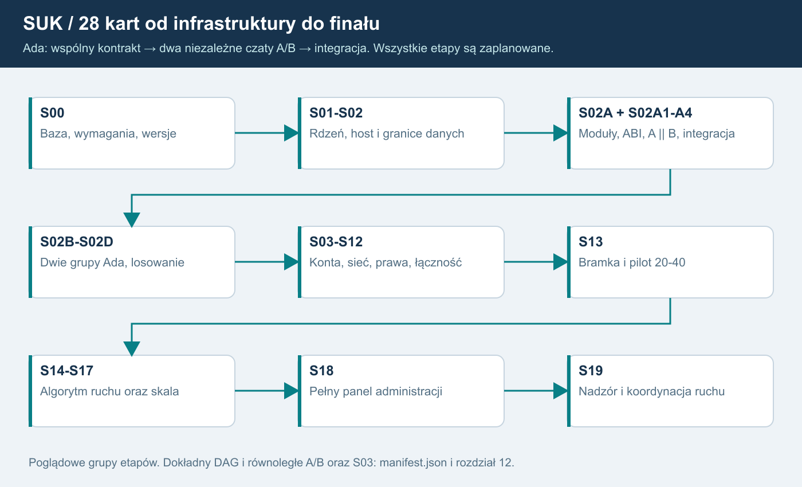
Opis dla AI
S00 ustala bazę i konkretne technologie. S01-S02 wydzielają rdzeń/host, S02A granice kart i terenu. S02A1 przygotowuje zamrożoną specyfikację/ABI. S02A2 pisze A i S02A3 pisze B w dwóch osobnych czatach, niezależnie; obie karty zależą tylko od S02A1. S02A4 integruje oba warianty. S02B tworzy dwie grupy Ada z A/B w każdej, S02C przełącza i losuje startową rolę, S02D transmisja/diagnostyka. S03 konta może powstawać równolegle po zależnościach.
S04-S12 prowadzą przez bezpieczną sieć, role, moderację, łączność i aktualizacje do S13. Po S13 rozwijamy algorytm F17 w S14-S16 i skalę S17. Na końcu S18 pełny panel administracyjny po S16/S17, a ostatni S19 tryb dyspozytora. Minimalne S08 nie jest odroczone.
Mapa zależności
| Etap | Wynik | Zależności |
|---|---|---|
| S00 | Pomiar odniesienia i kontrakty | brak |
| S01 | Wydzielony rdzeń i wspierany runtime | S00 |
| S02 | Host świata Windows i singleplayer | S01 |
| S02A | Odbiór istniejących modułów i domknięcie granic | S02 |
| S02A1 | Ada: wspólna specyfikacja, toolchain i ABI | S02A |
| S02A2 | Ada: niezależna implementacja Kz_A | S02A1 |
| S02A3 | Ada: niezależna implementacja Kz_B | S02A1 |
| S02A4 | Ada: integracja, porównanie i migracja | S02A2, S02A3 |
| S02B | Dwie obliczające grupy każdego KZ | S02A4 |
| S02C | Synchronizacja, selektor i przełączenie | S02B |
| S02D | Transmisja i diagnostyka profilu EBILock | S02C |
| S03 | Konta i tożsamość | S00, S01 |
| S04 | Bezpieczna sesja i pełne migawki | S02D, S03 |
| S05 | Obszary, role i delegacja LCS | S04 |
| S06 | Przekazanie, reconnect i odtwarzanie | S05 |
| S07 | Subskrypcje, delty i bufory | S06 |
| S08 | Moderacja, audyt i statystyki | S05, S06 |
| S09 | Urządzenia łączności i tekst | S05, S08 |
| S10 | Prototyp wyboru głosu Windows | S03, S09 |
| S11 | Głos w urządzeniach i kontrola mediów | S10, S06 |
| S12 | Aktualizacje i zgodność wydań | S04, S03 |
| S13 | Bramka infrastruktury i pilot 20-40 | S07, S08, S09, S11, S12 |
| S14 | Kontrakt AI i regułowy sąsiad | S13 |
| S15 | Obsada AI i styczne singleplayera | S14, S06 |
| S16 | Krzyżowania i wyprzedzania | S15 |
| S17 | Wiele światów i wzrost skali | S13 |
| S18 | Pełny panel administracyjny | S16, S17 |
| S19 | Tryb dyspozytora: nadzór i koordynacja | S18 |
Numery pozostają stabilne. S02A1-S02A4 to osobne karty; A/B mogą powstawać niezależnie bez wspólnej historii implementacji. Nie wczytuj kodu drugiego wariantu do czatu autora. Integrator ma do niego dostęp po zamrożeniu obu źródeł i raportów.
Mały wynik i przekazanie
OdczytajAI_START, wybraną kartę, minimalne źródła i faktyczny stan zależności. Podziel duże karty na małe podkroki. Zakończ dowodami iSZABLON_PRZEKAZANIA. Status nie zmienia się na ukończony bez odbioru. Dalsze prace wymagają osobnego zlecenia właściciela.
Kamienie milowe
M1 po S02: baza hosta. M1a po S02A4: obie niezależne implementacje Ada i kontrolowana migracja. M1b po S02D: dwie grupy, porównanie, losowanie i pojedyncze wyjście. M2 po S06: bezpieczna sesja/prawa/odzyskanie. M4 po S13: odebrana infrastruktura z N36/N37/N40 oraz wcześniejszymi właściwymi próbami. M5 po S16/S17: algorytm ruchu bez LLM i odebrany zakres skali. M6 po S18: pełny panel administracji. M7 po S19: końcowy nadzór i koordynacja dyspozytora.
Nie podajemy dat bez pomiaru pracochłonności. Ada, dwa niezależne czaty, losowanie oraz oba końcowe interfejsy są ustalone; do rozstrzygnięcia pozostają parametry/procedury z rejestru decyzji.
Co zmienia baza 1.7
Kroki aplikacji 5/6/6a/7/9/10 są obecne w C#; nie są automatycznie zaliczonymi kartami Sxx multiplayera. S02A zachowuje istniejące moduły i odbiera brakujące kontrakty, prywatne stany, bierne plany skutków i projekcję ruchu. Krok 8 pozostaje odłożony. S00 najpierw zapisuje rzeczywisty wynik odniesienia nowej wersji. S04/S08/S13 wymagają także N42/O20 dla starego wejścia serwisowego. DAG i liczba 28 kart pozostają bez zmian.
Jednostka wykonania od wersji 1.8
28 kart pozostaje mapą etapów nadrzędnych. Wykonuje się jedno małe zadanie z manifest.jobs i katalogu czaty/ na osobny czat. Rozdział26 pokazuje całą kolejność i wejścia; gotowy tekst startowy znajduje się w prompty_czatow/ID.md. Przy KZ obowiązuje dodatkowo27/prompty_kz. Sam status wszystkich zadań planned nie jest zgodą na implementację ani potwierdzeniem gotowości zależności. Każdy nowy moduł ma obowiązkowe logi25, a raport odnotowuje build/test/Git/wdrożenie osobno.
13. Decyzje i ryzyka
Ustalenia już rozstrzygnięte
Nazwa SUK; dokumentacja poza Git; żadnych zmian kodu w tej pracy; serwer Windows; start 20-40 graczy; Koluszki/Łódź Widzew/styczne jako dane; autorytet serwera dla ruchu i srk; singleplayer lokalny z AI stycznych; najpierw infrastruktura, nowe AI potem.
Nie pytamy ponownie o zatwierdzone w PODZIAL_MODULOW.md §7 rozprucie/brak kontroli, brak modelu włókien rezerwowych, oznaczanie utraty kontroli, odłożenie manewrów i akceptację opóźnienia cyklu.
Rejestr decyzji
| ID | Do decyzji | Propozycja wyjściowa | Blokuje |
|---|---|---|---|
| D01 | granica odcinka LCS | najpierw grupy całych posterunków; wnętrze osobno | S05 |
| D02 | dokładne prawa pomocniczego/nadzorcy | podgląd i jawna delegacja, bez domyślnego przymusu | S05 |
| D03 | Wbl/Pzk po rozdzieleniu końców Internal | ustalić wg źródeł i scenariuszy, bez zgadywania | S05/S13 |
| D04 | utrata obsady i odzyskanie sterowania | rezerwacja 30 s jako hipoteza, potem jawna procedura | S06 |
| D05 | pierwsze urządzenia i telefonogramy | jeden uzgodniony telefon + radio; katalog od właściciela | S09 |
| D06 | kompetencje moderatorów i odwołania | osobne kick/mute/ban/zakaz obszaru | S08 |
| D07 | dane, retencja, nagrania, prywatność | brak nagrań głosu domyślnie, minimalizacja | S08/S13 |
| D08 | statystyki i odpowiedzialność przy przekazaniu | zdarzenia serwera, bez nieuzgodnionego rankingu | S08 |
| D09 | środowisko, TLS, backup i PC referencyjny | Windows 4 vCPU/8 GiB jako próba, nie wymóg końcowy | S00/S13 |
| D10 | dostawca audio i licencje | Mumble prototyp; LiveKit alternatywa | S10 |
| D11 | framework i pełne zaufanie aktualizacji | Velopack kandydat, utrzymywane zabezpieczenie metadanych | S12 |
| D12 | zakres pełnych posterunków AI | odróżnić świat serwera od stycznych uproszczonych | S14/S15 |
| D13 | zasady decyzji krzyżowania/wyprzedzania | reguły właściciela, zatwierdzone scenariusze | S16 |
| D14 | trwałość komend i zapisu świata | jasno określone okno utraty, nowa epoka po awarii | S06/S13 |
Te decyzje nie są potrzebne do ukończenia niniejszej dokumentacji. Karta etapu ma wskazać tylko pytania blokujące jego wykonanie; nie zadawać wszystkich przy każdym nowym czacie.
Rejestr ryzyk
| Ryzyko | Znaczenie | Ograniczenie |
|---|---|---|
| Silnik powiązany z WPF | host trudno wydzielić bez regresji | neutralne DTO, scenariusze i dzienniki S01-S02 |
| Błędna autoryzacja końca blokady | ingerencja w cudzy obszar | test hipotezy i katalog komend |
| Procedura srk wymyślona przy okazji sieci | niezgodne zachowanie dydaktyczne | decyzje właściciela i źródła, osobne zmiany |
| Zbyt ciężki audio adapter | koszt klienta lub własny fork | prototyp porównawczy i licencje |
| Updater chroni tylko plik, nie feed | podmiana/cofnięcie wydania | pełna bramka S12 |
| Wspólne CPU sieci/głosu/świata | wzajemne zakłócenia | izolacja, limity, test 40/80 |
| Rozproszony świat za wcześnie | duża złożoność spójności | najpierw jeden writer; skalować niezależne światy |
| Cicha utrata logów i statystyk | fałszywe wyniki i brak audytu | trwałość, deduplikacja, tryb awarii |
| AI ruchowe błędnie interpretowane jako LLM | niezgodny kierunek projektu, koszt i utrata offline | F17: autorski algorytm danych/reguł; LLM wykluczony z operatora i planisty |
| Za mały zakres świata w pilocie | brak drożności bez obsady | ograniczony scenariusz albo pełna obsada; AI dopiero później |
Granice pewności
To projekt na podstawie odczytu kodu, nie pomiar obecnego serwera. Nie potwierdzono produkcyjnej integracji WPF z Mumble/LiveKit, kombinacji aktualizatora z pełnym modelem TUF, wydajności hosta 4 vCPU ani gotowości nowych pakietów Koluszek. Każda taka rzecz ma własny etap, wynik i dowód zamiast założenia „zadziała”.
Uzupełnienie właściciela: odrębne KZ
USTALONE: każdy posterunek ma własny moduł zależności. Nie jest już otwartą opcją wspólny KZ dla całego LCS. Jeden wspólny proces to rekomendacja wykonawcza, a nie scalenie modułów.
D15: zatwierdzić mapę własności urządzeń, granice modułów i przypadki przebiegów/funkcji obejmujących granicę posterunków. Każdy posterunek ma jeden własny kontekst KZ; dane i procedury graniczne ustala człowiek. Blokuje odpowiedni podkrok S01/S02 i odbiór S13. Nie generować automatycznie tablic zależności przy podziale istniejącego pakietu.
Ryzyko migracji: pozostawienie globalnych mutable słowników może pozornie wyodrębnić klasy, zachowując jeden KZ. Odbiór wymaga testu prywatności stanów i braku bezpośredniego odczytu sąsiada. Spójna migawka obejmuje wiele KZ oraz wspólny ruch i komunikaty w drodze.
USTALONE F15: po oddaniu kontroli podgląd pozostaje, sterowanie znika. D02 nie otwiera ponownie tej zasady. Podgląd nadzorcy nie daje prawa wydania komendy; przejęcie wymaga osobnego procesu. Poradnik sprawdzono na s. 122 i 142-146, rozróżniając dosłowną treść od wymagania właściciela - rejestr w rozdziale 17.
Korekta po audycie źródeł - wersja 1.3
D16. Szczegóły synchronizacji i przełączenia
Dwie grupy są już rozstrzygnięte. Przed S02B/S02C zatwierdzić profil diagnostyki, opóźnienia, Ready, powrót po naprawie i ręczną ingerencję. Snapshot+log/selectionEpoch to projekt SUK, nie odtworzony protokół producenta. Propozycja: naprawiona grupa wraca jako rezerwa, bez automatycznego powrotu na aktywną tylko z racji numeru.
D17. Transmisja i reakcje obiektów
Przed próbą braku obu grup w S02C zatwierdzić odpowiedni profil reakcji obiektów. Przed S02D zatwierdzić ręczną mapę pętla-koncentrator-sterownik-karta-obiekt oraz reakcje na utratę obu dróg/statusu/obu grup. Nie projektować jej automatycznie ani przyjmować rosyjskich limitów jako polskiej specyfikacji. Brak rozstrzygnięcia blokuje właściwy scenariusz i publiczny odbiór, nie uzasadnia wymyślenia reakcji.
Największe ujawnione ryzyko: podwójny fizyczny skutek starego kodu po uruchomieniu grup. Dlatego S02A poprzedza S02B. Dalsze ryzyka: pomylenie MOR-3 z EBILock, grup z kanałami lub serwerami EBISCREEN. Wspólny proces/kod nie zapewnia odporności na crash Windows ani wspólny błąd algorytmu.
Rozstrzygnięte F17; zakres D12/D13
Technologia AI ruchowego jest ustalona: autorski algorytm danych, automatów stanów i reguł, bez LLM. D12 określa granice sąsiada i obsady, D13 reguły decyzji/miary jakości, D05 katalog rozmów. Nie są to otwarte pytania o użycie modelu językowego. Nie wprowadzać go później jako opcjonalnego operatora lub trybu awaryjnego w ramach tego planu.
D18-D20: szczegóły nowych etapów
D18: macierz kompetencji panelu, zatwierdzone operacje utrzymaniowe, retencja/eksport i wymagania ponownego uwierzytelnienia. Pełny panel jest ustalony, a S08 nie może stracić podstawowej moderacji. D19: katalog dyspozycji, parametry, odbiór/akceptacja/realizacja/anulowanie, kryteria ukończenia oraz zakres działania algorytmu F17. Tryb oznacza nadzór i koordynację, bez automatycznego ControlLease. D20: zamrożona neutralna specyfikacja, jednostki/limity/formaty ABI, wersje GNAT/gprbuild i dystrybucja DLL, procedura review po zamrożeniu A/B. Ada i dwa osobne zlecenia nie są już otwartym pytaniem.
F22 jest ustalone. Polityka startu przy braku dwóch gotowych grup pozostaje D16. Nie losujemy wadliwego zestawu dla spełnienia pozornej losowości i nie nadajemy praw klientowi wynikiem losowania.
D18 - dostęp administracji 1.6
ZATWIERDZONE przez właściciela 17.10.2026: osobna aplikacja i indywidualny klucz generowany lokalnie na komputerze administratora, preferencyjnie niewyeksportowalny CNG/TPM. Serwer rejestruje publiczny klucz i wydaje certyfikat. Miejsce generowania jest rozstrzygnięte; wcześniejsze serwerowe wydawanie klucza prywatnego zastąpiono tym ustaleniem. D18 określa profil TPM/atestacji, zaproszenia/zgody, pierwszego właściciela, utratę wszystkich urządzeń, rotację i ochronę wystawcy. Samo hasło nie rejestruje niezatwierdzonego klucza ani nie odzyskuje pełnego dostępu.
Aktualne źródła i bramki - 1.7
Nie otwierać ponownie decyzji o własnych KZ, Ada, niezależnych A/B, dwóch grupach, losowaniu startu, ViewGrant bez ControlLease, AI bez LLM i lokalnym kluczu administracji. Wykonane w źródłach kroki kart/zasilania/PIP/fasady są nową bazą, a nie powodem ponownej implementacji.
Nowe bramki: odcięcie starej nieautoryzowanej ścieżki serwisowej przed publicznym pilotem (N42); pozyskanie i weryfikacja wskazanego PDF Ie-1 przed normatywnym odbiorem/modyfikacją jego reguł; rozstrzygnięcie istniejących pytań ≤100 km/h i sygnalizatorów bez kart na podstawie źródeł i właściciela. Plan edytora zobrazowania jest zaakceptowany, wykonanie Z0-Z6 i konwersja UT+obraz do symulatora nadal przyszłe.
14. Źródła i ślad analizy
Stan dokumentacji: 17.10.2026. Bieżący odczyt kodu odnosi się do HEAD 5eddb5c5d58eccd5af6467f7ca2373a2daed6568 (plan 1.8). Oryginalna baza 4869fc i pośrednia 2120ab0 pozostają w historycznych rejestrach. Nie wykonywano fetch, pull, commit, push ani modyfikacji indeksu. Źródła zewnętrzne weryfikowano w oficjalnych dokumentacjach; należy odświeżyć je przy implementacji.
Źródła lokalne
Repozytorium: D:\Projects\SUK. Rejestr plików z SHA-256 znajduje się w ZRODLA_LOKALNE.json. Dowody linii są w rozdziale 02.
AGENTS.md i CLAUDE.md: zasady pracy. ROZWOJ.md: kierunek i stan. README.md: obsługa. PLAN_EDYTOR_UT.md: nowy UT i późniejsze przekazywanie danych. PODZIAL_MODULOW.md: zaakceptowany podział silnika oraz odpowiedzi właściciela w §7.
Zrodla/KOMPUTERY_notatki.md: struktura LCS, zależności i blokady. Zrodla/EBILock_komputerownia.md: warstwy i oznaczenia pewności; nie wszystkie propozycje są potwierdzonym opisem urządzeń.
Ie-20, Ie-104 i Ig-10 pozostają normatywnymi materiałami domenowymi w repo. Nie przeprowadzono w tej pracy audytu każdej procedury w pełnej treści PDF. Ten plan nie wprowadza nowych reguł srk. Przed taką zmianą trzeba przeczytać właściwe fragmenty i uzgodnić interpretację z właścicielem; dla telefonogramów sprawdzić także właściwe źródła Ir-1, których katalog repo nie zawiera jako osobnego pliku.
Źródła zewnętrzne
| ID | Oficjalne źródło | Wykorzystanie |
|---|---|---|
| E01 | Microsoft: wsparcie .NET | koniec .NET 8 i okres .NET 10 |
| E02 | Windows Service | hostowanie Windows |
| E03 | Konfiguracja SignalR | limity, bufory, reconnect |
| E04 | Skalowanie SignalR | backplane dopiero przy potrzebie |
| E05 | Redis backplane | ograniczenia trwałości |
| E06 | Autoryzacja SignalR | sesje i prawa długich połączeń |
| E07 | OpenIddict, integracja OS | logowanie desktop/WPF |
| E08 | RFC 8252 | zewnętrzna przeglądarka i klient publiczny |
| E09 | RFC 9700 | aktualne praktyki OAuth |
| E10 | OWASP WebSocket | autoryzacja, limity, monitorowanie |
| E11 | Mumble Windows | gotowy serwer Windows |
| E12 | Mumble Server scripting | API administracyjne Ice |
| E13 | Mumble.proto | kanały, nasłuch, VoiceTarget |
| E14 | Wydanie LiveKit 1.13.10 | oficjalne binarki Windows |
| E15 | Kod LiveKit na Windows | ograniczenie capacity management |
| E16 | SDK C++ LiveKit | kandydat adaptera Windows |
| E17 | SDK JS LiveKit | alternatywa WebView2 |
| E18 | Porty LiveKit | firewall, UDP, TURN |
| E19 | Podpisy Velopack | podpis aplikacji/instalatora |
| E20 | Dystrybucja Velopack | kanały i feed |
| E21 | Konkretne wersje Velopack | polityka downgrade |
| E22 | TUF | model ochrony metadanych |
| E23 | ISDR dokumentacja | inspiracja funkcjonalna, §2.4 s. 53-58 |
| E24 | ISDR strona oficjalna | konfiguracje wielu stanowisk/LCS |
Nie kopiowano kodu ani grafik ISDR. Schematy w tym pakiecie są własnymi diagramami architektury SUK, nie zobrazowaniem pulpitu. Konkretne wersje bibliotek należy dobrać i przypiąć w S00/S10/S12, sprawdzając stan wsparcia i licencje.
Subagenci
architektura_i_siec: ILcsSession, transport, host, role, testy. zrodla_i_ruch: Otoczenie, blokady, źródła domenowe i ISDR, granice AI. technologie_i_bezpieczenstwo: pierwotne źródła .NET, SignalR, głosu, OIDC i aktualizacji. Analizy były do odczytu, bez uruchamiania symulatora i zmian repo. Ostateczne rekomendacje zebrano i uporządkowano w tym pakiecie.
Źródła uzupełnień bezpieczeństwa głosu
E25: LiveKit - tokeny i brak odwołania JWT self-hosted. E26: MumbleServer.ice - ServerAuthenticator i ACL. E27: LiveKit JS SignalClient - obsługa sygnalizacji.
Bezpośrednia weryfikacja poradnika dla inspektorów
Lokalny Poradnik TOM I ma 728 stron. Odczyt tekstu i weryfikacja odpowiednich stron: §1.5.8 s. 121-122 tabela 21; §1.5.8.1 s. 142-146 tabela 23/25 i rys. 77; definicje s. 434. Numery PDF i drukowane w tych miejscach są jednakowe. Podgląd po oddaniu jest wymaganiem właściciela; poradnik opisuje oddzielnie informacje i nastawianie, bez dosłownej obietnicy tej konkretnej polityki kont SUK. Szczegóły i granice interpretacji są w rozdziale 17.
Korekta po audycie źródeł - wersja 1.3
Ponownie odczytano lokalne źródła programu. Poradnik tom I s. 123-126 §1.5.8: EBILock; s. 126: dwa zestawy, rezerwa, kanały i pętle. S. 140: MOR-3 2z2. S. 147 rys. 46: serwery EBISCREEN oddzielne od KZ. Ie-20 s. 9 §6/s.12 § 7 ust. 12; Ie-104 s. 5 § 3 ust. 3/s. 6 § 4 ust. 5. Szczegóły dowodów i konfliktów w rozdziale 19.
KOMPUTERY.pdf to wyciąg tego samego poradnika (strona pliku 7=druk 126,21=140), nie niezależne potwierdzenie. EBILock_komputerownia.md rozróżnia pewność; wtórne czasy restartu/powrotu i szczegóły kart nie stają się automatycznie wymaganiami. Pełnej DTR nie dostarczono ani nie zweryfikowano. Nie deklarujemy zgodności z nieodczytanym źródłem.
Plików źródeł, ROZWOJ i PODZIAL_MODULOW nie zmieniano. ZRODLA_LOKALNE.json pozwala porównać hashe z bazą. Sprzeczności opisano jawnie poza Git.
Dodatkowa kontrola aktualnego repozytorium
Bieżące porównanie: 2120ab0 → 5eddb5c, 25 commitów, 123 zmienione ścieżki. Zmiany obejmują już KZ, karty, zasilanie, system nadrzędny, PIP, Komputerownię i edytor UT. Nie obowiązuje wcześniejsza ocena, że delta dotyczy tylko siatki/kalkulatora. Aktualny rejestr ZRODLA_KONTROLA_1_7.json zachowuje hashe wejść, historię różnic, HEAD i początkowy stan roboczy; nie nadpisuje oryginalnych rejestrów.
Źródła techniczne uzupełnienia 1.5
Rozdział 20 odsyła do oficjalnych dokumentacji .NET/C# 14/WPF/SignalR/EF/OpenIddict/PostgreSQL 18/Npgsql oraz narzędzi telemetrii, głosu i aktualizacji. Rozdział 23 odsyła do GNAT/GPRbuild/Alire, interfejsu Ada-C i zaleceń Microsoft dla LibraryImport/SafeHandle oraz RNG. Wersje główne są celem planu; konkretne poprawki i zgodność blokuje przyszły etap. Nie deklarujemy wykonania toolchainu ani buildu.
Dostęp administracji 1.6 - weryfikacja 17.10.2026
- ASP.NET Core - certyfikaty i proxy, schematy autoryzacji.
- Windows CNG, atestacja TPM.
- OpenIddict mTLS/token binding, unieważnianie tokenów.
- RFC 8705, RFC 8252. Źródła opisują możliwości narzędzi, nie bezpieczeństwo implementacji SUK. Dokładna wersja i TPM wymagają prototypu.
Źródła aplikacji do porównania 1.7
Bieżące AGENTS/CLAUDE, ROZWOJ, README, PODZIAL_MODULOW, PLAN_EDYTOR_UT, nowy HISTORIA_EDYTOR_UT i zaakceptowany PLAN_EDYTOR_ZOBRAZOWANIA oraz źródła C#/WPF i sygnaly_ie1.json są objęte rejestrem porównania. Rejestr śledzi także nieśledzony PDF zastany w repo, aby potwierdzić jego zachowanie bez zmian.
Dokumenty repo wskazują Zrodla/Ie-1_obowiazuje_od_2026-01-17__uz_1041_25__WCAG.pdf, ale pliku nie znaleziono w bieżącym checkout. Potwierdzono istnienie kodu i tabeli Data/sygnaly_ie1.json, nie audyt brakującego PDF. Źródło normatywne trzeba pozyskać i sprawdzić przed zamrożeniem właściwych reguł w S02A1. Pozostałe wcześniejsze źródła EBILock zachowują opisany zakres pewności. Nie wyszukiwano ani nie pobierano nowej wersji źródeł z Internetu w tym porównaniu.
Baza pracy i dostarczenie 1.8
Bieżący odczyt wykonano w C:\Users\JohnE.codex\worktrees\3315\SUK na niezmienionym HEAD5eddb5c. Rejestr ZRODLA_KONTROLA_1_8.json obejmuje hashe141 źródeł i zastany stan roboczy. Analiza kodu1.7 pozostaje aktualna dla tego HEAD; nowe wymagania dotyczą planu pracy, promptów i logów, nie wykonanej implementacji. Właściciel wskazał D:\Projects\SUK jako końcowy katalog. Kopia zastanego PDF trafiła do archiwum/v1.7/PDF_zastany_w_D_Projects_SUK.pdf przed zastąpieniem. Kanoniczne materiały i archiwum pozostają poza repo; dopuszczona kopia dokumentacji w repo nie oznacza git add/commit/push. Nie zmieniono śledzonych plików aplikacji ani station.json.
15. Scenariusze odbioru multiplayera SUK
Status wszystkich scenariuszy: PROJEKT PRZYSZŁEGO TESTU - NIE PRZEPROWADZONO. Dokument nie potwierdza gotowości kodu ani infrastruktury. Uzupełnia protokół, role, łączność i AI oraz testy.
Wspólne przygotowanie i odczyt przez AI
Świat testowy: worldId = 8af2ae67-9d5e-4fd2-a7f6-a94639384021; posterunki A/B, bez nazw rzeczywistych. Pakiet, zależności i zobrazowanie zatwierdza człowiek. Testy wykorzystują kopię danych. Przed próbą zapisuje się wersję programu, contentHash, sessionEpoch, konfigurację praw i rozstrzygnięte decyzje D01-D14 z rejestru.
Dla AI: każdy scenariusz określa zdarzenia wejściowe, obserwowalne wyniki i materiał dowodowy. Nie uzupełniaj brakującej procedury kolejowej własnym domysłem. Bez wymaganej decyzji oznacz test „niedopuszczony do wykonania”. Wynik techniczny i zgodność srk oceniaj osobno. Dowody zawierają serverTick, correlationId oraz właściwe requestId/messageId; bez tokenów i haseł. Same zrzuty nie dowodzą pojedynczego skutku serwerowego.
O01. Jeden pociąg na granicy A/B - S02/S04/S07
Wejście: dwa komputery, odcinkowi A i B, zatwierdzony szlak łączący, jeden pociąg o stałym trainId; dozwolony podgląd granicy.
Czynności: gracze prowadzą ruch według zatwierdzonego scenariusza. Pociąg przechodzi przez granicę; przez część próby czoło jest w B, koniec w A. Serwer publikuje meldunki. Jeden klient chwilowo spowalnia odbiór.
Wynik: jeden pociąg i jeden właściciel jego stanu; poprawna zajętość pod całym składem. Granica obszaru praw nie tworzy ani nie usuwa taboru. Po synchronizacji oba pulpity pokazują zgodne wersje wspólnych obiektów; wolny klient nie zatrzymuje świata.
Dowód: zapis osi czasu pociągu i odcinków, meldunki z tickami, zrzuty obu pulpitów.
Decyzja srk: przygotowanie przejazdu, oczekiwane zajętości i zwalnianie ustala właściciel.
O02. Oddzielna autoryzacja końców blokady - S05
Wejście: A i B mają różnych operatorów i lease; dokładne blockEndId; zamknięta D03 dla wariantu Internal.
Czynności: operator A wysyła dozwoloną komendę na swój koniec. Następnie próbuje wskazać koniec B przez ID, etykietę i kontekst obrazu. B wykonuje własną czynność. Serwer sprawdza rozpoznany cel przed kolejką i przed wykonaniem.
Wynik: cudzy koniec odrzucony bez skutku; pageId nie zwiększa praw. Poprawna sekwencja obu operatorów daje wynik zgodny z ustalonym modelem blokady, bez automatycznego założenia wspólnego dyżurnego.
Dowód: koperty, odmowy, audyt celu i porównanie stanu przed/po.
Decyzja srk: kolejność i skutek Wbl/Pzk po rozdzieleniu końców określa D03; dokument ich nie ustanawia.
O03. Odcinkowy, pomocniczy i nadzorca - S05
Wejście: zatwierdzone D01/D02; odcinkowy posiada A, pomocniczy ma wskazaną delegację, nadzorca podgląd A/B.
Czynności: każda osoba wykonuje dozwoloną czynność i próbę poza zakresem. Pomocniczy próbuje rozszerzyć delegację. Nadzorca próbuje sterować samym uprawnieniem podglądu. Administrator kont wykonuje analogiczną próbę bez roli operacyjnej.
Wynik: serwer respektuje macierz; podgląd i administracja kont nie dają sterowania. Nie powstają sprzeczne delegacje do tego samego urządzenia. Zatwierdzona pomoc pozostaje możliwa.
Dowód: wersja macierzy, lease, decyzje autoryzacji, zrzut podglądu nadzorcy.
Decyzja srk: katalog pomocy, odpowiedzialność i ewentualne przymusowe przejęcie wymagają D02.
O04. Przekazanie podczas potwierdzania - S05/S06
Wejście: A ma właściciela X; Y może zażądać przekazania. Wybrane polecenie specjalne wymaga zatwierdzonego potwierdzenia.
Czynności: X inicjuje polecenie. Y żąda obszaru, X wyraża zgodę. Po atomowym przekazaniu X wysyła stare confirmationId i opóźnione żądanie. Y próbuje potwierdzić identyfikator X.
Wynik: controlEpoch rośnie; oba stare potwierdzenia i polecenia tracą uprawnienie. Nie wykonuje się ukryty skutek po zmianie obsady. Y może rozpocząć nową świadomą czynność zgodnie z bieżącym stanem. Przekazanie nie resetuje terenu.
Dowód: kolejność ticków, audit transferu, wyniki requestId i confirmationId, stan urządzenia.
Decyzja srk: wybór polecenia i dopuszczalny moment przekazania zatwierdza właściciel.
O05. Utrata łącza i powrót operatora - S06/S07
Wejście: zatwierdzona D04; znane progi świeżości, rezerwacji i odzyskania. W świecie trwa ruch.
Czynności: zerwać łącze X, osobno zatrzymać dopływ meldunków przy żywym połączeniu. Wykonać wariant powrotu przed końcem rezerwacji oraz po prawidłowym przydziale Y. Spróbować odtworzyć stare żądania.
Wynik: nieaktualny pulpit pokazuje brak danych i blokuje komendy. Serwer kontynuuje świat bez transportowego resetu. Powrót wymaga synchronizacji; X nie odzyskuje obszaru Y. Brak podwójnej obsady i automatycznego replay.
Dowód: ślad sieci, świeżość ticków, epoki, historia przydziałów i stan przed/po.
Decyzja srk: działania po utracie obsady i przejęcie przez AI/nadzorcę wynikają wyłącznie z D04.
O06. Niepewny wynik i ponowienie - S04/S06
Wejście: jedna dozwolona komenda, utrwalony stan początkowy, polityka trwałości D14.
Czynności: zerwać odpowiedź po przyjęciu żądania; ponowić identyczny requestId, następnie ten sam ID z inną treścią. Oddzielnie wymusić restart przed i po zapisie wyniku.
Wynik: w tej samej epoce identyczne ponowienie nie daje drugiego skutku; zmieniona treść jest odrzucona. Po restarcie obowiązuje nowa epoka i jawna resynchronizacja. UI rozróżnia Queued, Executed i wynik nieznany; nie ogłasza sukcesu po samym odebraniu ramki.
Dowód: liczba skutków w stanie, dziennik wyników, granice restartu i obraz UI.
Decyzja srk: wybór komendy testowej; polityka trwałości jest decyzją techniczną D14.
O07. Człowiek rozmawia z AI - S14/S15
Wejście: zatwierdzony katalog D05 i zakres D12; człowiek na A, regułowy operator AI na B, skonfigurowane urządzenia.
Czynności: człowiek zestawia połączenie i nadaje dopuszczony komunikat z parametrami. AI odbiera, sprawdza kontekst i odpowiada. Powtórzyć z brakującym parametrem, niewłaściwym odbiorcą i obcym endpointId. Ewentualna czynność AI przechodzi zwykłą kolejkę komend.
Wynik: prawidłowa wymiana jest skorelowana; niepełna nie staje się zgodą. AI nie mutuje KZ, a obcy odbiorca nie otrzymuje rozmowy. Opóźnienie AI nie blokuje ticku.
Dowód: komunikaty domenowe, statusy rozmowy, odmowy ACL, wynik KZ i czasy.
Decyzja srk: treść, wymagane potwierdzenia i skutki uzgodnienia pochodzą z zatwierdzonego katalogu.
O08. Delivered nie oznacza zgody ruchowej - S09/S11/S14
Wejście: rozmowa A/B, uzgodnione znaczenia Delivered, Read i AcceptedOperationally oraz warunki czynności.
Czynności: doręczyć tekst, pozostawić nieodczytany; potem odczytać bez akceptacji. Nadać zwykły tekst sugerujący zgodę. Przy głosie odtworzyć wypowiedź bez świadomego potwierdzenia; odłączyć odbiorcę przed akceptacją.
Wynik: transportowe dostarczenie, odczyt i rozpoznana mowa nie tworzą uzgodnienia. Dowolny tekst nie otwiera semafora. Prawidłowa akceptacja jest odrębnym zdarzeniem domenowym; późniejsza komenda nadal podlega KZ.
Dowód: oś statusów messageId, brak nieuprawnionych zmian świata, nagranie UI; bez nagrywania głosu bez odrębnej polityki.
Decyzja srk: kto i jak potwierdza konkretny komunikat określa D05.
O09. Singleplayer offline i tylko styczne - S02/S15
Wejście: lokalny pakiet A ze zdefiniowanymi stycznymi, brak konta, sieć wyłączona; ten sam build rdzenia co host.
Czynności: uruchomić lokalnie zatwierdzony scenariusz, wymienić komunikat z sąsiadem i przeprowadzić pociąg. Sprawdzić listę utworzonych obszarów i procesów. Porównać kontrolowany przebieg z tym samym scenariuszem rdzenia na hoście.
Wynik: gra działa bez Internetu i chmury; symuluje zadeklarowany obszar oraz uproszczone styczne, bez rozszerzania świata. Zgodne wejścia dają oczekiwane wyniki wspólnego rdzenia. Lokalne osiągnięcia nie trafiają jako zaufane statystyki konta.
Dowód: wersje, dzienniki scenariuszy, zakres obszaru i brak wymaganych połączeń.
Decyzja srk: dopuszczalne uproszczenia sąsiada i oczekiwane wyprawienia zatwierdza właściciel.
O10. Przyszłe krzyżowanie i wyprzedzanie AI - S16
Wejście: dopiero po S15; zamknięta D13, zatwierdzone warianty infrastruktury, rozkładu, opóźnień i miar jakości.
Czynności: w wariancie pierwszym podać konflikt pociągów przeciwnych, w drugim potrzebę wyprzedzenia. Zmienić dostępność toru po propozycji planisty. Równolegle człowiek przejmuje obszar zgodnie z procedurą.
Wynik: AI proponuje uzasadniony plan w budżecie CPU; aktualizuje go po zmianie warunków. Rezerwacja planisty nie utwierdza przebiegu. KZ odrzuca niewykonalne polecenie. Po utracie lease AI nie steruje dalej; nie współdzieli urządzenia z człowiekiem.
Dowód: wejścia planisty, uzasadnienie, czas obliczeń, komendy, odrzucenia KZ i historia lease.
Decyzja srk: miejsce, kolejność, priorytety i miary poprawności ustala D13. Do tego czasu scenariusz pozostaje niewykonywany i nie blokuje wcześniejszej infrastruktury.
Uzupełnienie audytu 1.3 - scenariusze grup
O11. Uszkodzenie aktywnej grupy podczas przebiegu
Warunki: pełny KZ, obie grupy liczą, potwierdzona ReadyReserve, utwierdzony przebieg i jeden pociąg. Zapisz inputSeq, selectionEpoch, effectId i prawa. Wstrzyknij niezgodność kanałów aktywnej grupy na określonej granicy. Oczekuj jednego przełączenia, zachowania utwierdzeń i świata oraz braku drugiego skutku. Powtórz bez gotowej rezerwy, według zatwierdzonego D17. Dowody: log faz, diagnostyka, delta świata i czasy; N25/N26/N28.
O12. Stary plan, ZeroLO i rebuild
Warunki: zatwierdzona próba nieidempotentnego ZeroLO na kopii danych testowych. Zatrzymaj plan starej grupy, przełącz, zatwierdź skutek nową, dostarcz opóźniony i powielony plan. Odtwórz dawną grupę ze snapshotu/logu zawierającego ten skutek. Oczekuj jednego rozkazu, wyniku i wpisu; odtwarzanie bez zapisu do terenu. Warianty: luka logu, inny hash i zatrzymane obliczenia. Odbierz prawa między obliczeniem a zatwierdzeniem, przekaż Rejected do obu grup i przełącz: brak skutku oraz pozornego utwierdzenia; odrzucona kopia rezerwy nie odrzuca wykonanej logicznej komendy. Dowód: liczniki przyjęć/odrzuceń, watermark i brak Ready przed zgodnością; N29/N30.
O13. Przekazanie LCS, ban i restore
A oddaje posterunek B, zachowując ViewGrant. W kolejce jest polecenie/potwierdzenie A sprzed przekazania. Przełącz grupę. Przy zwykłym przekazaniu oczekuj aktualnego podglądu A, odmowy jego sterowania, właściwych praw B i jednej statystyki. Osobny wariant zakazu sterowania danym posterunkiem zachowuje podgląd tylko według zatwierdzonej polityki sankcji. Wariant bana konta zamyka sesję i odcina dostęp; F15 nie daje wyjątku od bana. Checkpoint/restore podczas jazdy przez granicę KZ: nowe epoki, jeden pociąg, brak odtworzonych starych praw/skutków. Dowód: audyt praw/efektów, obie grupy i meldunki obu klientów; N24/N31/N33.
O14. Pętla, diagnostyka i zasoby
Ręcznie zatwierdzona testowa pętla z dwoma kierunkami, koncentratorami i kartami. Przerwij jedną drogę, następnie drugi odcinek izolujący wybrane obiekty. Oczekuj osiągalności według danych, lokalnej utraty łączności i diagnostyki bez resetu LCS. Przełącz i odbuduj grupę podczas pełnego obciążenia; pełne zestawy stale liczą. Próba docelowa 40 klientów/8 h, osobna próba zapasu 80 i offline. Dowód: topologia, osiągalność, CPU/RAM/p99 faz i ograniczony log; N32/N34. Nierozstrzygnięte reakcje obiektów blokują zatwierdzenie scenariusza.
O15. Odtwarzalny algorytm bez modelu językowego
Warunki: osobne zlecenie i ukończona infrastruktura S13; jawny pakiet danych, rozkład, wersja reguł i meldunki testowe. Nie używać station.json właściciela. Sprawdzić zależności i konfigurację modułu: brak wykonawcy/API LLM oraz zapasowego odwołania do modelu.
W S14 powtórzyć rozmowę proceduralną z tymi samymi parametrami, w S15 ten sam przypadek obsady na serwerze i offline, a w S16 zatwierdzony konflikt krzyżowania/wyprzedzania. Zamknąć dostęp do zewnętrznych modeli, pozostawiając multiplayerową sieć gry. Oczekiwane: te same decyzje/przyczyny przy tych samych wejściach, odpowiedzi z katalogu/szablonów i komendy wyłącznie przez prawa/KZ.
Warianty: brak danych, niedostępny wariant przejazdu i limit czasu CPU. Oczekiwany jawny wynik z zatwierdzonego profilu; brak „ratowania” decyzji LLM i brak ominięcia zależności. Materiał dowodowy: wersje, log decyzji/wejść, porównanie powtórzeń i obserwacja wywołań sieciowych. Odbiór N35; funkcje pozostają zaplanowane.
O16. Ada, niezależne programy i losowany start
Warunki: zamrożony kontrakt S02A1, dwa osobne raporty i źródła A/B, ręcznie zatwierdzone kopie testowe. Najpierw N36 granice ABI, potem oba warianty i referencja na tych samych wejściach. Każdą rozbieżność uzasadnić specyfikacją; znany błąd starego C# nie staje się normą. Odbiór po zamrożeniu obu wariantów i brak produkcyjnego fallbacku C#.
Po S02B/C uruchomić oba A/B w obu grupach. Wymusić testowo wybór 1 i 2, a następnie sprawdzić rzeczywiste losowanie i zapis StartupSelection per KZ. Odtworzyć dziennik: te same role i decyzje bez ponownego RNG. Osobno nowy worldRun po restore, tylko jedna gotowa grupa, reconnect i oddanie obsady. Warianty N25-N34 zachowują jeden fizyczny skutek, utwierdzenia i kontrolę kanałów. Dowody: hashe/specyfikacje/raporty niezależnego autorstwa, porównanie wyników, log wyboru i skutków, użycie pamięci. N36/N37/N40.
O17. Końcowy panel administracyjny
Warunki: S16/S17 ukończone oraz istniejące konta/moderacja S08. Uruchomić osobny WPF z ograniczoną rolą, spróbować obcej akcji oraz żądania bez wymaganego certyfikatu/tokena i nadać/odebrać rolę podczas sesji. Na kilku światach wydać tę samą sankcję dwukrotnie, odłączyć jeden świat i media. Oczekiwać odmów, jednej logicznej sankcji i osobnych Saved/Applied bez pozornego globalnego sukcesu. Niedostępny świat po powrocie synchronizuje sankcje przed komendami. Zwykły admin nie steruje KZ. Stronicowanie/eksport nie blokuje ticku. Dowód: audit, aktualne sesje/ACL, log usług i metryki projekcji; N38.
O18. Końcowy dyspozytor
Warunki: S18 ukończony, zatwierdzony D19 i role rozłączne. Dyspozytor ogląda zakres okręgu/grafik i wydaje typowaną dyspozycję do człowieka oraz F17. Wstrzymać odbiorcę w Received: brak akceptacji i skutku KZ. Przetestować odmowę, zaakceptowaną realizację, zmianę warunków, anulowanie i reconnect. Dyspozytor bez ControlLease nie nastawia urządzeń ani nie przełącza grup; algorytm działa bez LLM przez zwykłe prawa/KZ. Nieaktualne dane są oznaczone i blokują czynności wymagające świeżego kontekstu. Dowód: zrzuty zakresu/grafiku i stanów, log dyspozycji/praw/efektów; N39.
O19. Rejestracja i utrata klucza admina
Warunek: profil D18 i dwa konta/urządzenia. Samo testowo przejęte hasło przed enrollmentem nie daje dostępu bez zaproszenia/MFA i zatwierdzenia klucza. Powtórz/równocześnie zużyj zaproszenie, podmień klucz. Po poprawnej rejestracji sprawdź rzeczywisty token binding, pojedyncze dowody oraz parę cert A+konto B. Cofnij klucz/rolę/token przy otwartej sesji i oczekującej sankcji. Oczekuj odmów, mierzonego odcięcia i jednej sankcji Saved/Applied. Utrata TPM wymaga revoke i nowego enrollmentu, nie obejścia hasłem/eksportu starego klucza. Dowód: audyt userId/keyId/sessionId/requestId bez sekretów. N41A przed pilotem, N41B pełne S18. To scenariusz, nie wynik wykonania.
O20. Zamknięcie starego wejścia Komputerowni
Warunki: nowa brama i minimalne prywatne narzędzie moderacji/instruktora. Z zewnątrz, bez konta, zgłosić tryb serwisowy i żądania diagnostyki/usterki, również przez zgodność ze starym protokołem. Oczekiwać odmowy bez danych chronionych i bez zmiany urządzeń. Konto tylko do podglądu próbuje mutacji - odmowa; instruktor działa tylko w swoim zakresie. Cofnąć klucz/rolę przy otwartym kanale i oczekującej usterce; ponowić requestId oraz przeciążyć żądaniami diagnostyki. Oczekiwać jednego autoryzowanego skutku, skutecznego revoke i zachowanego postępu ticku. Dowód: konfiguracja listenerów, decyzje praw, kontrolowany stan i metryki, bez sekretów. N42 przed S13. To projekt próby, nie opis wykonanego ataku.
O21. Logi każdego modułu i awarie zapisu
Warunki: adaptery F24 dla wszystkich modułów zakresu. Wygenerować normalny błąd, odmowę i zdarzenie cyklu oraz nadmiar diagnostyki. Wprowadzić testowy sekret, CR/LF, rekord ponad limit, wolny/pełny dysk i crash. Porównać liczniki/JSONL, retencję i korelację; bez sekretów oraz bez nieograniczonej pamięci i blokady ticku. Oddzielnie sprawdzić krytyczny audyt i commit przed Applied według S06. Cztery konteksty KZ mają odrębną diagnostykę i jeden audyt logicznego skutku. Offline działa z lokalnym adapterem. Dowód: zredagowane logi, metryki, test odzyskania; N43/N44. To projekt, nie wynik.
O22. Przekazanie jednego zadania nowemu czatowi
Warunki: ukończone i udokumentowane zależności wybranego jobId. Nowy czat dostaje wyłącznie prompty_czatow/jobId.md, odpowiednią kartę i wskazane wejścia. Musi wskazać wersję/hash specyfikacji, lokalny zakres, testy i wyjście bez odtwarzania całej rozmowy. Brak raportu lub niezakończona zależność blokuje realizację, a nie skłania do zgadywania. Raport nowego zadania pozwala rozpocząć następne. Dowód: kontrola pakietu i raportów; N45.
O23. Dwa niezależne łańcuchy autorów KZ
Warunki: zatwierdzony i zamrożony neutralny pakiet S02A1. W osobnych środowiskach udostępnić A i B wyłącznie ich własną historię, neutralną specyfikację, ABI i przypadki. Oba używają tego samego hasha; brakująca reguła lub źródło wraca do integratora. W próbie negatywnej ujawnić obcy kod albo zmienić hash: zatrzymanie danego zakresu i udokumentowane odtworzenie czystego pakietu. Po zakończeniu zamrozić oba warianty, dopiero integrator S02A4 widzi oba i porównuje. Dowód: manifesty wejść, dostępu i wyników oraz raporty; N46. To nie dowód SIL ani test już wykonany.
16. Własny moduł zależności każdego posterunku
WYMAGANIE WŁAŚCICIELA: każdy posterunek ma własny moduł komputera zależności (KZ), z naciskiem na maksymalny realizm. Jest to ustalenie kierunku SUK. Poniższy sposób realizacji stanowi rekomendację techniczną; nie jest opisem już zaimplementowanej funkcji ani potwierdzeniem procedur srk.
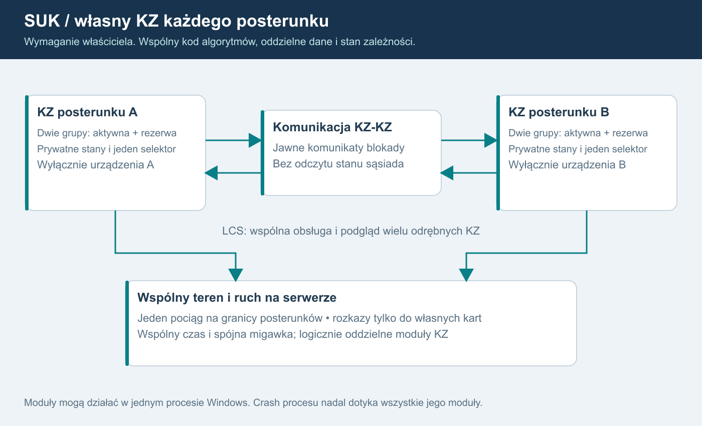
Opis grafiki i kontraktu dla AI
W jednym świecie działają odrębne KZ posterunków A i B. Nad nimi system nadrzędny LCS agreguje zobrazowanie oraz kieruje autoryzowane polecenia do właściwego KZ. Między KZ biegną wyłącznie jawne komunikaty zatwierdzonych interfejsów. Pod nimi wspólna warstwa urządzeń i ruchu utrzymuje fizyczny stan świata. Pociąg przecina granicę bez kopiowania; oba KZ otrzymują właściwe meldunki urządzeń. LCS nie odczytuje prywatnych struktur KZ w celu samodzielnego liczenia zależności.
Dla AI wdrażającego: odrębność jest granicą danych, odpowiedzialności i interfejsu. Nie oznacza wymagania osobnej maszyny, bazy, procesu czy wątku dla każdego posterunku. Nie kopiuj dzisiejszego Simulator wraz z Trains i Rozklad dla każdej stacji. Migracja rozdziela istniejącą logikę według odpowiedzialności, zachowując wspólny świat i zatwierdzone zachowanie.
Co należy do konkretnego KZ
Każdy moduł ma stałe postId i kzId oraz własne wersjonowane definicje: obsługiwane obiekty, tablicę zależności, przebiegi, ochronę i interfejsy graniczne. Definicje zatwierdza człowiek. Automat może kontrolować odwołania i proponować uzupełnienia; nie projektuje sam zależności.
Lokalny stan obejmuje między innymi przebiegi, utwierdzenia, lokalne liczniki czasu, oczekujące rozkazy, otrzymane statusy urządzeń, lokalny stan końców blokad oraz usterki i stan łączności modułu. Numery i położenia pociągów nie stają się źródłem wiedzy KZ zamiast urządzeń. Wspólny rejestrator może odbierać zdarzenia z wielu KZ, zachowując identyfikator źródła.
Polecenie zawiera jednoznaczny cel KZ i obiektu albo końca blokady. Brama sprawdza konto; system nadrzędny rozpoznaje cel i jego właściciela KZ, następnie sprawdza lease oraz epoki, a właściwy KZ sprawdza zależności. Deklarowany przez klienta kzId nie zmienia serwerowej mapy własności. Żaden KZ nie wykonuje komendy dla obiektu sąsiada. Ponowienia, potwierdzenia i wyniki pozostają skorelowane z modułem i wersją praw; nie wystarcza nazwa urządzenia bez kontekstu posterunku.
LCS i podział pracy
Jeden pulpit może przedstawiać kilka KZ, a jeden dyżurny sterować wieloma posterunkami. Po podziale LCS odcinkowi otrzymują różne zakresy; pomocniczy działa zgodnie z zatwierdzoną delegacją, nadzorca obserwuje dozwolone projekcje. Zmiana obsady nie scala ani nie dzieli modułów zależności i nie zeruje ich stanu.
Wspólny obraz pulpitu nie nadaje prawa do wszystkich urządzeń widocznych na obrazie. Również oznaczenie szlaku jako wewnętrznego w LCS nie oznacza jednego KZ ani domyślnej zgody drugiego końca. Dotychczasowy skrót Internal wymaga sprawdzenia względem decyzji D03. Blokada stacyjna pozostaje osobną funkcją domenową.
KZ-KZ: jawna wymiana zamiast wspólnej pamięci
Rekomendowany adapter łącza przekazuje wersjonowane komunikaty z nadawcą, odbiorcą, identyfikatorem interfejsu, numerem sekwencji i czasem symulacji. Katalog stanów, potwierdzeń, timeoutów i reakcji ustala się dla zatwierdzonego typu blokady. Nie zastępujemy rzeczywistej logiki ogólnym komunikatem „sąsiad pozwala na wszystko”.
KZ A nie czyta Routes, utwierdzeń, kolejki poleceń ani prywatnej tablicy KZ B. Otrzymuje wyłącznie przewidziany kontraktem meldunek. Rozmowy i uzgodnienia ruchowe operatorów mają osobny model łączności; tylko jawnie zdefiniowany skutek procedury może trafić do właściwego interfejsu. Sam Delivered, tekst lub głos nie zmienia zależności.
Można symulować przerwę łącza KZ-KZ, pulpit-KZ albo KZ-sterownik osobno. Nie są tym samym zdarzeniem. Nieznany status nie może zostać potraktowany jak pozytywne potwierdzenie. Dokładne wskazania i reakcje urządzeń wymagają zatwierdzonej dokumentacji oraz decyzji właściciela.
Jeden teren, jeden ruch, spójny zapis
Wspólna warstwa terenu przechowuje urządzenia z jednoznacznym właścicielem sterowania i zadeklarowanymi odbiorcami meldunków. Wspólny silnik ruchu prowadzi każdy skład raz. Na granicy A/B czoło i koniec mogą zajmować różne obszary, lecz trainId, długość i historia ruchu pozostają jedne. Każdy KZ zna potrzebną zajętość z właściwego interfejsu urządzeń.
Koordynator świata porządkuje wykonanie modułów i komunikatów względem ticków. Kolejność oraz opóźnienia zapisuje kontrakt; nie należy zmieniać ich przy okazji wydzielania klas. Checkpoint obejmuje zgodną granicę ticku dla wszystkich KZ, urządzeń, ruchu, zegara i komunikatów w drodze. Niezależne zapisy wykonane w przypadkowych chwilach nie tworzą spójnego świata. Zapis na dysku pozostaje poza gorącą ścieżką ticku.
Koszt i tryb lokalny
Dla początkowych 20-40 graczy rekomendujemy odrębne moduły w jednym procesie świata z ograniczonymi kolejkami i wspólnym zegarem; skalę trzeba zmierzyć. Usterka symulowana jednego KZ nie wymaga resetu pozostałych. Awaria całego procesu może jednak zatrzymać wszystkie moduły: niezależność logiczna nie jest odpornością na taki crash. Oddzielne procesy i odzyskiwanie to późniejszy etap uzasadniony pomiarami.
Singleplayer używa tego samego modelu: KZ posterunków wybranego obszaru, wspólny lokalny teren i ruch oraz uproszczone styczne AI poza granicą. Nie wymaga symulowania pełnych KZ całego kraju. AI nie zastępuje KZ i wydaje polecenia przez normalny interfejs.
Kryteria przyszłego odbioru - jeszcze nie wykonano
| Próba | Oczekiwany dowód |
|---|---|
| Komenda z prawami A wskazuje obiekt lub koniec blokady B | Odmowa, rozpoznany cel w audycie, brak zmiany B |
| Usterka jednego KZ lub jego łącza | Lokalna reakcja zgodna ze scenariuszem; brak globalnego resetu; dopuszczalne skutki na styku udokumentowane |
| Blokada pomiędzy dwoma KZ | Zatwierdzona sekwencja komunikatów i zgodne lokalne stany, bez odczytu prywatnych struktur sąsiada |
| Checkpoint kilku KZ podczas przejazdu granicy | Po odtworzeniu jeden pociąg, zgodne zajętości, utwierdzenia, zegar i wiadomości; nowa epoka sesji |
Podstawa lokalna: ROZWOJ.md §4/ §5, PODZIAL_MODULOW.md §3, KOMPUTERY_notatki.md oraz EBILock_komputerownia.md §1/ §2/ §4. Opracowanie EBILock rozróżnia PEWNE, WTÓRNE i DOMYSŁ; nie zamieniamy domysłów w wymagania. Dwie grupy z gorącą rezerwą są obowiązkowym F16, opisanym w rozdziale 18. Nierozstrzygnięte pozostają szczegółowe parametry i reakcje, nie istnienie rezerwy. Dokument jest planem, bez zmian repozytorium i bez wyników uruchomienia.
Korekta po audycie źródeł - wersja 1.3
Każdy logiczny KZ mieści Group1 i Group2: prywatne stany, rzeczywiste obliczenia obu grup i jeden selektor. Odrębność zachowuje się względem drugiego posterunku oraz pomiędzy grupami. Wspólny teren/ruch nie jest kopiowany. S02A-S02D i N25-N34 są obowiązkowe przed pilotem.
Implementacja 1.5
Każdy logiczny KZ jest wykonywany przez natywny rdzeń Ada. Wewnątrz grup 1/2 działają niezależnie napisane Kz_A/Kz_B; cztery prywatne stany, jedna warstwa fizyczna. Kod jest wielokrotnego użycia dla dowolnego posterunku, a nazwy pozostają danymi. Losowanie roli przy starcie nie zmienia własności obiektów, praw i odrębności innych KZ.
Rzeczywisty punkt startu po refaktorze - 1.7
KomputerZaleznosci jest już osobną klasą C# w Sim/Kz, ale Simulator.cs:43 tworzy jedną instancję dla całego Station. Wszystkie słowniki są nadal wspólne, a Fasada.cs:14-21 zwraca je innym modułom. Wymaganie per posterunek pozostaje niewykonane.
Oprócz stanów lokalnych końców blokad trzeba zinwentaryzować odczyty sygnału następnego semafora i ochrony przez wspólne Sigs/Routes. Zastąpi je zatwierdzony kontrakt między właściwymi KZ, bez duplikowania terenu. Ruch otrzyma przejściową zatwierdzoną projekcję istniejącego zachowania, nie referencje do przyszłych czterech kontekstów Ada. Nie zaliczać odłożonego kroku 8 przez samą zmianę nazw klas.
17. Oddanie sterowania z zachowaniem podglądu
USTALONE przez właściciela: dyżurny LCS po oddaniu kontroli nad posterunkiem zachowuje podgląd tego posterunku, ale nie może nim sterować. To wymaganie SUK, nie opcja do ponownego rozstrzygania.
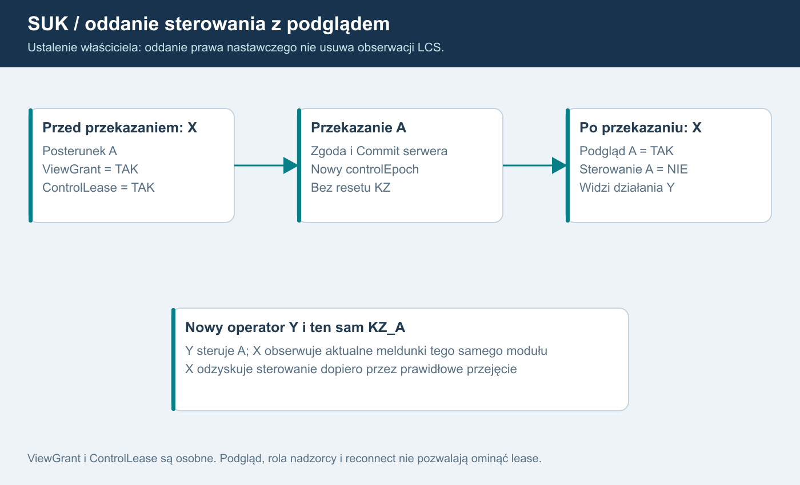
Opis diagramu dla AI
Przed przekazaniem X ma ViewGrant i ControlLease dla posterunku A. Po zatwierdzonym przekazaniu Y posiada ControlLease, a X zachowuje ViewGrant. Obaj widzą meldunki tego samego KZ_A, tylko Y może wysyłać do niego polecenia sterujące. Przejęcie posterunku przez Y nie resetuje KZ, pociągów ani przebiegów. Oddanie A nie zmienia praw X do innych posterunków.
Weryfikacja w poradniku
Odczytano lokalny plik Zrodla/Poradnik_dla_inspektorow_TOM_I_Automatyka_sterowania_ruchem_kolejowym_i_prowadzenie_ruchu_kolejowego (1).pdf. Dokument liczy 728 stron. W sprawdzonych miejscach numer strony PDF zgadza się z numerem drukowanym.
| Strona i miejsce | Co wynika z materiału | Granica interpretacji |
|---|---|---|
| 121-122, §1.5.8, tabela 21 pkt 1/2/5 | zbieranie informacji i przekazywanie poleceń to odrębne funkcje; przewidziane przejście na nastawianie miejscowe stacji lub grup obiektów | nie podano tu pełnej procedury przekazania kont użytkowników SUK |
| 142, §1.5.8.1, tabela 23 | rozdzielenie warstwy pulpitu, zależności i urządzeń terenowych | wspólny obraz nie oznacza wspólnych praw do wszystkich KZ |
| 144-146, §1.5.8.1, tabela 25 i rys. 77 | polecenia na posterunku wybranym do sterowania; osobno odbiór meldunków i obrazy całego okręgu | wspiera rozdział obserwacji od nastawiania |
| 434, opis nastawni | definicje nastawni zdalnego sterowania i miejscowej | definicja nie rozstrzyga szczegółowej procedury oddania |
Nie znaleziono literalnego zapisu, że po oddaniu sterowania stanowisko zawsze zachowuje podgląd. Nie przypisujemy poradnikowi zdania, którego nie zawiera. Wymóg trwałego podglądu po przekazaniu pochodzi bezpośrednio od właściciela; jest zgodny z projektowym rozdzieleniem funkcji informacji i poleceń.
Przerwa Internetu klienta gry, symulowana utrata łącza pulpit-KZ oraz rzeczywista transmisja nastawnia zdalna-miejscowa to różne zdarzenia. Tabela 21 pkt 4 opisuje konkretną przerwę transmisji warstw rzeczywistych urządzeń; nie stosujemy jej automatycznie do zerwania połączenia użytkownika z serwerem gry.
Kontrakt uprawnień
ViewGrant wskazuje dozwolony zakres obserwacji. ControlLease wskazuje bieżące prawo wykonywania poleceń. Odcinek może obejmować wiele odrębnych KZ; grant widoczności nie nadaje żadnego prawa nastawczego.
Zwykłe oddanie/przekazanie:
- Przygotowanie operacji i zgoda zgodnie z zatwierdzonym modelem.
- Commit w sekwencji świata zmienia właściciela i controlEpoch.
- X traci ControlLease do oddawanego zakresu; stare komendy i confirmationId zostają unieważnione.
- ViewGrant X nie jest usuwany. Meldunki pozostają aktualne i pokazują czynności nowego operatora.
- Y otrzymuje prawo sterowania dopiero po zakończonym przydziale i synchronizacji.
- X może ponownie sterować dopiero po prawidłowym przejęciu, nie przez samą rolę nadzorcy.
Sankcja konta, kick lub osobne odebranie prawa obserwacji są innym zdarzeniem. Zwykłe oddanie sterowania samo w sobie nie jest banem i nie wyłącza podglądu. Uprawnienia do urządzeń łączności rozpatruje się osobno; nie odbieramy ich wszystkich automatycznie tylko dlatego, że wygasło sterowanie.
Zachowanie pulpitu i serwera
Pulpit pokazuje czytelnie „Podgląd - steruje [stanowisko]” dla tego zakresu, bez zmiany symboliki srk. Działania sterujące w menu i skróty są nieaktywne. Przeglądanie obrazów i dozwolonych dzienników nadal działa. Dokładny wygląd wymaga zrzutu do oceny przy implementacji.
Serwer odrzuca także komendę ręcznie wysłaną z przerobionego klienta. Dotyczy to pulpitu, tekstowego parsera, potwierdzeń specjalnych oraz operacji globalnych obejmujących cudzy posterunek. Nadzór i podgląd nie są obejściem. Polecenie obejmujące kilka KZ wymaga praw do wszystkich jego celów albo jawnie zatwierdzonej odrębnej operacji; brak cichego rozesłania do całego LCS.
Wyświetlenie brak danych jednego KZ wynika z rzeczywistej świeżości jego źródła, nie z oddania praw. Nie mylić „nie steruję” z „nie mam meldunków”.
Test N24 - przyszły, nieprzeprowadzony
Wejście: X steruje A i B, Y może przejąć A, X ma podgląd całego LCS. Czynności: X oddaje A; Y wykonuje dozwolone polecenie; X obserwuje jego skutek, próbuje polecenia i starego confirmationId na A, a następnie dozwolonej czynności na B. Oczekiwanie: X widzi aktualne A, ale nie steruje A; stare żądania odrzucone. Y steruje A, X nadal steruje B. KZ_A i ruch nie są resetowane. Po reconnect przydziały pozostają rozdzielone; sam powrót X nie odbiera A od Y. Dowód: ViewGrant, ControlLease/controlEpoch, audyt, wyniki żądań i meldunki tego samego KZ_A dla obu stanowisk. Dodatkowa próba: globalna komenda X obejmująca A zostaje odrzucona zgodnie z katalogiem celów; nie obchodzi oddania. Pokrycie: F15, S05/S06/S07/S13.
Korekta po audycie źródeł - wersja 1.3
Zmiana grupy zachowuje aktualne ViewGrant/ControlLease. Oddający nadal obserwuje, nowy operator steruje. Stare potwierdzenie sprzed przekazania nie wykonuje się dzięki przełączeniu grupy. N33 łączy te przypadki z N24.
18. EBILock: dwie grupy każdego komputera zależności
USTALONE: każdy posterunek ma własny logiczny KZ, a każdy pełny KZ ma dwie wykonujące obliczenia grupy. Jedna pełni rolę zasadniczej/aktywnej, druga gorącej rezerwy. W multiplayerze wszystko liczy autorytatywny serwer Windows; ten sam rdzeń działa lokalnie w singleplayerze.
Potwierdzenie źródłowe
Poradnik dla inspektorów, tom I, s. 126, §1.5.8 podaje dwa zestawy o identycznej strukturze sprzętowej, zasadniczy i gorącą rezerwę. Osobno opisuje przetwarzanie dwukanałowe przez dwa programy różnych zespołów, kontrolę zgodności w KZ i sterownikach obiektowych oraz przejęcie funkcji przez rezerwę przy niezgodności.
Grupy 1/2 to nazwy stałych tożsamości przyjęte w SUK; role mogą się zamieniać. W źródle występuje nazwa EBILock i określenie zestawy. Wskazane przez właściciela „EBILOG” odnosi się w tym planie do tego opisu.
Dwie grupy nie głosują 2z2 nad każdym rozkazem. Opis MOR-3 na s. 140 jest inną architekturą. Zestawy KZ nie są zapasowymi serwerami pulpitu EBISCREEN ani VPS. Źródło nie podaje pełnego protokołu synchronizacji, dokładnego czasu przełączenia, restartu i automatycznego powrotu. Informacji wtórnych nie zamieniamy w gwarancje.
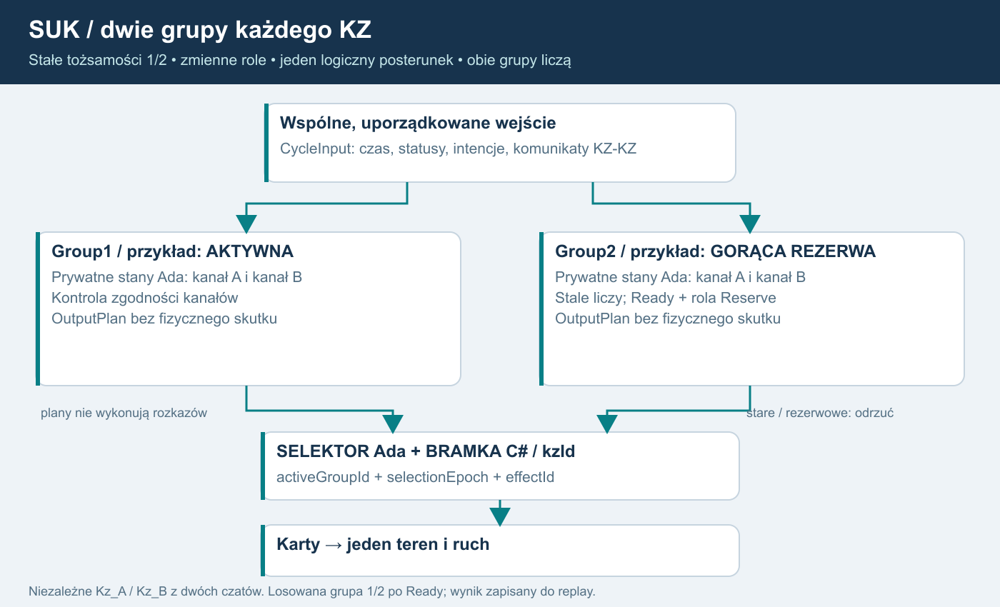
Opis diagramu dla AI
System nadrzędny przyjmuje jedną autoryzowaną intencję. Rejestr wejść rozprowadza identyczne uporządkowane CycleInput do Group1 i Group2. Obie mają prywatny stan i model kanałów, obie stale liczą. Selektor przepuszcza OutputPlan wyłącznie aktywnej, zakwalifikowanej grupy. Karty, teren i pociągi występują raz. Statusy urządzeń wracają do kolejnej fazy wejść obu grup.
Kanał jest wewnętrzną drogą obliczeń/kontroli grupy. Grupa jest zestawem mogącym przejąć funkcje. WorldHost to proces wykonujący wiele KZ, nie trzecia grupa i nie sprzętowy klaster HA.
Docelowy profil dwóch niezależnych programów
REKOMENDACJA SUK: dwa prywatne konteksty kanałów w każdej grupie, porównanie wyników w grupie i jawna kwalifikacja jej stanu. Łącznie cztery konteksty obliczeń na pełny KZ, ale jedna fizyka i teren. Profil pozwala oddzielnie symulować niezgodność kanałów i awarię zestawu. Nie zastępować rezerwy samą kopią widocznego stanu pulpitu.
USTALONE 1.5: domenową logikę KZ implementujemy w Ada jako dwa niezależne programy Kz_A i Kz_B, każdy w osobnym czacie. W każdej grupie 1/2 wykonują się oba A/B z prywatnymi stanami. Wspólne kontrakty i dane nie oznaczają wspólnego kodu algorytmów. Zachowujemy ustalone reguły/dane i infrastrukturę aplikacji. Niezależność autorstwa, przegląd i testy trzeba udokumentować; samo rozdzielenie czatów i język Ada nie dowodzą certyfikacji SIL lub braku wspólnych błędów.
Porównanie kanałów w grupie, zgodność rezerwy z uporządkowanym strumieniem i wybór źródła wyjścia są trzema różnymi operacjami. Sam zgodny hash grup nie jest dowodem bezpieczeństwa.
Identyfikatory i dane
| Element | Znaczenie |
|---|---|
| postId, kzId | Stała tożsamość posterunku i logicznego komputera |
| groupId = 1/2 | Stała tożsamość grupy, niezależna od aktualnej roli |
| groupRunId | Nowy po restarcie grupy; odcina stare obliczone plany |
| inputSeq, cycleId, lastEvaluatedTick | Porządek i świeżość faktycznie przetworzonych wejść |
| algorithmVersion, dataHash, schemaVersion | Zgodność algorytmów, definicji i kontraktów |
| activeGroupId, selectionEpoch | Jedno źródło wyjść; epoka zmienia się przy przekazaniu tej funkcji |
| effectId, committedCycle, outputWatermark | Jednokrotnie zatwierdzone logiczne skutki i granica wykonania |
| worldRunId/sessionEpoch, kzEpoch | Odrębne generacje świata i logicznego KZ; nie zastępuje ich selectionEpoch |
| health, syncState, channelStatus | Jawna diagnostyka; brak informacji nie oznacza stanu poprawnego |
CycleInput zawiera czas symulacji, statusy kart/obiektów, komunikaty graniczne i znormalizowane polecenia przyjęte raz. Nie daje referencji do mutowania świata. Każda grupa i kanał mają prywatne dynamiczne zależności, timery i utwierdzenia. Zatwierdzone przez człowieka definicje mogą być wspólne tylko do odczytu.
Jedna bramka skutków
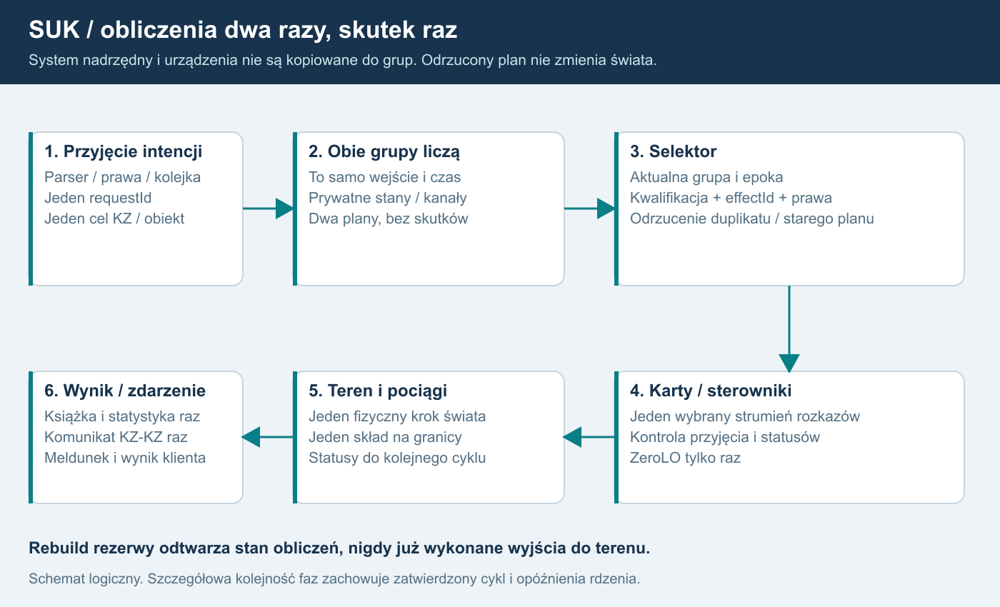
Dla AI: parser i wstępna autoryzacja występują raz. Równoważne wejście trafia do obu grup. Wyniki obliczeń nie zmieniają świata. AdaGroupRuntime sprawdza kwalifikację i wskazuje jeden plan domenowy. C# OutputGate sprawdza pochodzenie, epoki, kolejność, effectId i bieżące prawa dla nowych intencji; może odmówić, ale nie wybiera sam innej grupy. Jeden logiczny plan trafia do kart; wyniki rezerwy, stare plany i duplikaty nie wykonują skutków.
Książka, statystyka, wynik klienta i komunikat wychodzący KZ-KZ powstają z zatwierdzonego wyniku raz. Meldunek opisuje jeden świat. Szczególnie ZeroLO nie może opierać się na założeniu, że ponowne wykonanie jest nieszkodliwe. Ten sam zamierzony skutek ma wspólne effectId pomiędzy grupami, z osobną informacją diagnostyczną o pochodzeniu. Rebuild przelicza historię wewnętrzną, nie odgrywa już wykonanych rozkazów.
Zapisy dzisiejszego KZ bezpośrednio do urządzeń, ruchu i zasilania trzeba odseparować przed uruchomieniem pary. S02A realizuje zaakceptowane granice kart/Power z PODZIAL_MODULOW. System nadrzędny i stan potwierdzeń operatora są pojedyncze, poza grupami. Nie tworzyć czterech parserów, PIP i pociągów.
Stan proponowany i zatwierdzony - projekt SUK
Przejścia wynikające z komendy mają stan proponowany i stan zatwierdzony. Obliczenie planu nie oznacza wykonania polecenia. Decyzja Committed/Rejected dla logicznej komendy jest kolejnym uporządkowanym wejściem znanym wszystkim grupom i kanałom. Rebuild otrzymuje również te decyzje, a nie same pierwotne intencje.
Odrzucona logiczna komenda nie zostawia przebiegu, utwierdzenia ani potwierdzenia przedstawianego jako wykonane. Niezależne przejścia od statusów urządzeń i upływu czasu nadal mają własny porządek; odrzucenie komendy nie cofa fizycznych zdarzeń świata.
Odrzucenie kopii OutputPlan rezerwy lub starej epoki nie jest samo w sobie odrzuceniem logicznej komendy: po jednym zatwierdzonym skutku wszystkie grupy dostają tę samą decyzję Committed. Odrzucenie z powodu utraty praw daje wspólne Rejected dla tej próby. To rozróżnienie zapobiega rozjechaniu aktywnej grupy i rezerwy.
Próba odbioru: oblicz plan, odbierz prawa przed skutkiem, odrzuć logiczną komendę, przełącz grupę. Nie może powstać fizyczny skutek, pozorne utwierdzenie ani ponowne wykonanie. Jest to projekt techniczny SUK, nie cytat z DTR.
Synchronizacja i przełączenie - projekt SUK
Cykl życia (Starting/Synchronizing/Running/Faulted/OutOfSync), kwalifikacja (NotReady/Ready) i rola (Unassigned/Active/Reserve) są osobnymi polami. ReadyReserve jest skrótem prezentacji Ready+Reserve, nie warunkiem wstępnym przydzielenia roli. Po starcie/naprawie grupa dostaje spójny snapshot oraz uporządkowane wejścia do aktualnej granicy. Ma osobny stan, bez współdzielonych mutowalnych referencji do aktywnej grupy. W normalnej pracy przetwarza kolejne wejścia samodzielnie.
Kwalifikacja Ready wymaga zgodnych wersji, przetworzonego strumienia, poprawnej kontroli kanałów i zgodności w uzgodnionym punkcie kontrolnym. Zatrzymana, nieaktualna i niedopasowana grupa nie dostaje Ready. Jeśli historia przekracza limit, potrzebna jest nowa baza synchronizacji zamiast nieograniczonego logu.
Przy uszkodzeniu/niezgodności grupy aktywnej i gotowej rezerwie selektor na jawnej granicy faz odbiera dawną władzę wyjściową, zmienia selectionEpoch i wybiera rezerwę. Przed i po granicy wolno istnieć najwyżej jednemu źródłu skutków. Przebiegi, utwierdzenia, urządzenia i ruch nie resetują się z samego faktu zmiany grupy. Czas i zachowanie przejściowe są mierzone i opisane w scenariuszu; nie zakładać zerowej przerwy.
Awaria rezerwy daje pracę zdegradowaną przy sprawnej aktywnej grupie oraz alarm. Brak sprawnej gotowej grupy oznacza brak kwalifikowanego nowego wyjścia. Dokładne zachowanie kart/ostatnich stanów/wskazań wynika z zatwierdzonego D17. Nie wymyślać globalnego „wszystko na czerwono” ani bezterminowego utrzymania zezwolenia.
Nie potwierdzono automatycznego powrotu na grupę 1. Propozycja: naprawiona grupa wraca przez synchronizację do rezerwy; wybór aktywnej wynika z zatwierdzonej polityki D16, nie numeru.
Restart i trwałość
Hot failover nie jest restartem świata, zmianą obsady ani odtworzeniem backupu. Nie zmienia ControlLease/ViewGrant, sankcji ani identyfikatorów żądań. Restart jednej grupy nadaje nowy groupRunId. Zimny restart KZ/świata nadaje właściwe epoki i wymaga resynchronizacji/praw według S06.
Checkpoint ma jeden punkt logiczny: stany obu grup/kanałów, role, synchronizacja, wejścia, selektor, zatwierdzone wyjścia i komunikaty w drodze oraz jeden teren/ruch/zegar. Po restore dawne wyjścia i pakiety są odrzucane. Zapis poza tickiem nie może udawać potwierdzonej trwałości przy błędzie dysku.
Sterowniki i transmisja
Źródło potwierdza kontrolę wyników także w sterownikach. S02D wymaga jawnego interfejsu kontroli rozkazów/statusów oraz wykrywania niezgodności i braku danych. Nie deklaruje odtworzenia nieznanego protokołu sprzętowego; szczegółowy algorytm i reakcje są profilem do zatwierdzenia.
Pętle i koncentratory mają ręczną topologię i dwa kierunki dojścia. Jedna przerwa nie odcina całej pętli, gdy druga droga działa; dwie przerwy/awaria koncentratora odcinają zakres wynikający z danych. Rosyjskie limity liczby pętli i odmian kart nie są automatycznie polską specyfikacją.
Pełne odwzorowanie elektroniki, prądów, wszystkich kart, EOR, innych systemów srk, nowej blokady stacyjnej i zachowań manewrowych ma osobny późniejszy zakres. Nadal obowiązkowe przed multiplayerem są: granica karta-teren, dwie grupy, kontrola wyjść, minimalna transmisja i diagnostyka.
Odbiór
S02A→S02A1→(S02A2 i S02A3 niezależnie)→S02A4→S02B→S02C→S02D po S02 i przed S04. S13 wymaga N25-N34, N36, N37, N40 oraz O11-O14 oraz wcześniejszych prób izolacji, bezpieczeństwa i podglądu LCS. Rysunek dwóch pudełek nie jest dowodem działania. Nie wykonano implementacji ani testów funkcjonalnych w ramach tego planu.
Losowanie i błędy programów
Przy starcie serwerowego świata dla każdego kzId losujemy grupę zasadniczą 1 lub 2, po osiągnięciu gotowości i zgodności wersji obu grup. Wynik jest jawnie zapisanym wejściem do AdaGroupRuntime z worldRunId/kzId/wybraną grupą/selectionEpoch/wersjami. Nie jest losowaniem jednego z kanałów A/B: oba zawsze podlegają kontroli w obu zestawach. Brak dwóch gotowych grup wymaga jawnej polityki pracy zdegradowanej D16; nie wybieramy niesprawnej grupy.
Nowe uruchomienie serwera tworzy nową generację świata i nowy zapisany wybór po uzgodnieniu stanu. Replay tej samej sesji używa zapisanego wyboru. Nie losujemy na reconnect, oddanie sterowania lub powrót jednej naprawionej grupy. Dalsza zmiana aktywnej grupy jest kontrolowanym przełączeniem.
Błąd systematyczny A/B może spowodować niezgodność w obu grupach naraz; rezerwa nie gwarantuje naprawienia błędu programu. Obowiązuje kwalifikacja i reakcja D17, bez wybierania dowolnego wyniku lub pętli bezustannych przełączeń. Szczegóły 23.
Doprecyzowanie kwalifikacji, uprawnień i porównania
Przed StartupSelection obie grupy muszą być Qualification=Ready i Role=Unassigned, a wyjścia są zablokowane. Ada przyjmuje zapisane wejście wyboru i nadaje role; dopiero zatwierdzenie wyboru otwiera C# OutputGate. Losowanie liczby w C# nie jest samo przyznaniem władzy wyjściowej.
Nowa intencja operatora wymaga aktualnego ControlLease i ponownej autoryzacji przy zatwierdzeniu. Autonomiczne reakcje wcześniej zatwierdzonego KZ sprawdzają autorytet KZ i fencing, bez zależności od dalszego lease dawnego operatora. Oddanie posterunku lub ban nie zatrzymują dozorowania, logicznego kończenia nastawiania ani zwalniania przebiegu. Committed oznacza przyjęcie intencji; wykonanie fizyczne nadal potwierdzają karty/meldunki.
A i B mogą mieć różne reprezentacje wewnętrzne. Porównujemy kanoniczne wyniki i istotne stany domenowe, nie bajty prywatnych rekordów lub identyczny hash pamięci A/B. Synchronizacja między grupami uzgadnia również stan każdej implementacji z jej odpowiednikiem, zgodnie z wersją formatu.
Doprecyzowanie istniejących kart - 1.7
Karty zwrotnic, wykolejnic, sygnalizatorów i zasilania są już w C#. Nie tworzyć ich od nowa. Nadal jednak KZ wywołuje karty podczas obliczeń, a statusy mutują pojedynczy kontekst przez callbacki/fasadę. NN/AGR oraz ZeroLO mają ścieżki natychmiastowych skutków, których nie można po prostu wywołać po raz drugi dla rezerwy.
S02A ma wprowadzić bierny OutputPlan i zamrożony zestaw wejść na jawnych granicach faz, oddzielając również proponowane/zatwierdzone zmiany komendy i zapis do wspólnych rejestrów. Zachować udokumentowaną kolejność i wyjątki natychmiastowych skutków w nowej bazie; każda zmiana ich momentu wymaga jawnego opisu/odbioru. Sama zasada „karty jedyną drogą wyjść” nie dowodzi pojedynczego skutku. Komputerownia i jej kontrola niezmienników nie są drugą grupą lub kanałem.
19. Audyt źródeł i zależności wdrożenia
Status: plan SUK 1.8, aktualizacja 2026-10-17. Rejestr dowodów źródłowych oraz zależności przyszłej implementacji. Stan kodu sprawdzono statycznie na HEAD 5eddb5c5d58eccd5af6467f7ca2373a2daed6568, porównując zmiany od 2120ab0bcbedbc503a4a859eda26a7823644d0b7. Wykonane wcześniej moduły C# odróżniamy od nieukończonych etapów multiplayera i Ada. Nie uruchamiano w tej pracy programu, buildów ani testów i nie potwierdzono działania grup lub serwera publicznego. Dokumentacja pozostaje poza Git; nie zmieniono programu ani dokumentów repozytorium. Rejestr aktualnej kontroli: ZRODLA_KONTROLA_1_7.json.
1. Jak AI i człowiek mają oceniać dowód
Pierwszeństwo przy ustalaniu, co rzeczywiście mówi źródło, ma odczyt konkretnej strony, nie skrót notatki. PEWNE oznacza w tym rejestrze potwierdzoną treść wskazanego źródła w jego zakresie; nie dowodzi kompletności modelu ani zgodności wszystkich odmian sprzętu. WTÓRNE oznacza opis pośredni, w tym materiały dotyczące rosyjskiej odmiany EBILock. DOMYSŁ oznacza interpretację wymagającą rozstrzygnięcia. WYMAGANIE WŁAŚCICIELA jest ustaleniem dla SUK i powinno pozostać oznaczone także wtedy, gdy nie znaleziono dosłownego odpowiednika w podręczniku.
Źródła merytoryczne, obowiązujące ustalenia projektu i rekomendacje infrastruktury to odrębne poziomy. Liczba 20-40 graczy, Windows oraz jeden proces świata na początek nie są twierdzeniami instrukcji srk. Dwie symulowane grupy nie stanowią same przez się dwóch niezależnych fizycznych serwerów.
2. Rejestr dowodów
Numery PDF są liczone od pierwszej strony pliku, od 1. TOM I ma taką samą numerację drukowaną i PDF w poniższych miejscach. KOMPUTERY.pdf jest 56-stronicowym wyciągiem obejmującym drukowane strony 120-175; nie stanowi niezależnego drugiego źródła.
| ID | Źródło i lokalizacja | Ustalenie oraz granica pewności |
|---|---|---|
| E01 | Poradnik TOM I, PDF/druk 126, §1.5.8, część Poziom zależnościowy; KOMPUTERY.pdf PDF 7 / druk 126 | PEWNE: EBILock ma dwa zestawy o identycznej strukturze sprzętowej: zasadniczy i gorącą rezerwę. Przetwarzanie jest dwukanałowe przez programy różnych zespołów; zgodność kontrolują KZ i sterowniki. Przy niezgodności funkcje nastawcze przejmuje rezerwa. Brak czasu i szczegółowego protokołu przełączenia. |
| E02 | Poradnik TOM I, PDF/druk 124, §1.5.8, rysunek 70; KOMPUTERY.pdf PDF 5 / druk 124 | PEWNE: poziom operatorski EbiScreen jest oddzielony od zależnościowego i sterowników. Na schemacie przy komputerze zależnościowym zaznaczono gorącą rezerwę. Podsystem operatorski przyjmuje polecenia, przekazuje je KZ, pokazuje stany i rejestruje zdarzenia. |
| E03 | Poradnik TOM I, PDF/druk 140, §1.5.8, opis MOR-3 i rysunek 74; KOMPUTERY.pdf PDF 21 / druk 140 | PEWNE: MOR-3 opisano jako 2z2, z porównywaniem wyjść w bezpiecznym komparatorze i przejściem w stan bezpieczny przy niezgodności. Nie jest to opis EBILock ani MOR-2zs. |
| E04 | Ie-20_WCAG.pdf, PDF/druk 12, rozdział 2, §7 ust.12 | PEWNE: rezerwowy zestaw komputerowy zapewnia bezpieczne przejęcie sterowania i rejestracji przy awarii zasadniczego. Instrukcja nie ustala tu szczegółowej budowy dwóch grup konkretnej odmiany EBILock. |
| E05 | Ie-20_WCAG.pdf, PDF/druk 9, §6 ust.1-5 | PEWNE: system nadrzędny, zależnościowy i sterowniki mają odmienne zadania. To podstawa rozdzielenia pulpitu, obliczeń zależnościowych oraz urządzeń. Nie wynika stąd dowolność zastępowania meldunków urządzeń listą pociągów. |
| E06 | Ie-104_2025_WCAG.pdf, PDF/druk 6, §4 ust.5; PDF/druk 5, §3 ust.3-4 | PEWNE: G1-G4 to grupy informacji zobrazowania: statusy urządzeń, infrastruktura, informacje o pociągach, stany operacyjne. Nie są grupami komputerów. Pełny katalog zobrazowania konkretnego typu urządzeń opracowuje producent. |
| E07 | Poradnik TOM I, PDF/druk 147, §1.5.8.1, zdjęcie 46 | Potwierdzone wizualnie: osobne pola dla serwerów EbiScreen300 1/2 i komputera zależnościowego 1/2. Podwójny poziom operatorski i podwójny KZ nie mogą zostać scalone w jedną parę znaczków. Zdjęcie nie wyjaśnia samodzielnie znaczenia kolorów, automatu przełączania ani synchronizacji. |
| E08 | Poradnik TOM I, PDF/druk 122, §1.5.8, tabela 21 pkt 5; PDF/druk 145, §1.5.8.1, tabela 25 | PEWNE: możliwość przejścia na nastawianie miejscowe stacji/grup obiektów oraz osobne funkcje nastawiania i odbioru meldunków całego okręgu. Nie znaleziono dosłownej reguły zachowania podglądu po przekazaniu. W SUK regułę tę ustalił właściciel. |
Krótki cytat kontrolny E01: „jeden pracuje jako zasadniczy, a drugi stanowi gorącą rezerwę”. Cytat E04: „rezerwowy zestaw komputerowy zapewniający bezpieczne przejęcie procesów sterowania i rejestracji”. Pozostałe ustalenia tabeli są parafrazami, nie cytatami.
Źródła lokalne znajdują się w D:\Projects\SUK\Zrodla\: Poradnik_dla_inspektorow_TOM_I_Automatyka_sterowania_ruchem_kolejowym_i_prowadzenie_ruchu_kolejowego (1).pdf, KOMPUTERY.pdf, Ie-20_WCAG.pdf, Ie-104_2025_WCAG.pdf. Miejsca E01-E04 i E07 obejrzano także po renderowaniu. Wzór SimRail_LCS_Widzew_wzor.webp jest odniesieniem wyglądu; nie dowodzi architektury rezerwy.
3. Synchronizacja i rzeczy niepotwierdzone
Zrodla/EBILock_komputerownia.md §2.1, linie 117-120, oznacza jako WTÓRNE opisy Ashm/Gł8: bieżące kopiowanie stanu do rezerwy, przełączenie bez zatrzymania urządzeń, samoczynne przełączenie pętli oraz restart około 1,5 minuty. Dotyczą materiałów o rosyjskiej odmianie; polski TOM I nie potwierdza tych szczegółów. Nie przenosić tego czasu do ustawień SUK jako normy.
Polskie źródło potwierdza przejęcie funkcji nastawczych. Nie podaje dokładnego formatu synchronizacji, warunków dopuszczenia rezerwy, dopuszczalnej różnicy stanów, czasu przełączenia, automatycznego powrotu ani reakcji przy awarii obu grup. Własność pojedynczego wyjścia do terenu, epoki i spójny checkpoint są wymaganiami projektu technicznego; ich konkretne rozwiązanie nie jest cytatem z DTR.
Diagram §1.2 i tabela usterek §7.4 opracowania EBILock nie mogą zmieniać wtórnych szczegółów w pewniki przez pominięcie etykiety. W szczególności samo stwierdzenie, że ruch trwa dalej, nie daje bezwarunkowej gwarancji ciągłości przy dowolnej awarii. Link Railway Technology wskazany w opracowaniu nie został ponownie potwierdzony - przy odczycie zwrócił błąd.
4. Konflikty i obowiązujące rozstrzygnięcia
| Miejsce | Konflikt / ryzyko interpretacji | Zasada dla dalszego etapu |
|---|---|---|
| KOMPUTERY_notatki.md, początek; ROZWOJ.md etap 7 | Ogólny opis 2z2/komparatora może zostać błędnie przypisany EBILock. | Rozróżnić E01 i E03. Dwa zestawy EBILock oraz dwa programy nie są automatycznie tym samym schematem co MOR-3. |
| EBILock_komputerownia.md §7 i starszy szkic PODZIAL_MODULOW.md kroku 6 | Propozycje włókien rezerwowych i przechodzenia na niższy sygnał pozostały w opisie. | Odpowiedź właściciela w PODZIAL_MODULOW.md §7 pkt 2 wyklucza te funkcje. Nie implementować ich przez skopiowanie wcześniejszego szkicu. |
| PODZIAL_MODULOW.md §5 i §7 pkt 1 | Starsze pytanie o rozprucie było już rozstrzygnięte. | KZ rozstrzyga je z braku kontroli i zajętości, zgodnie z odpowiedzią właściciela. Nie otwierać ponownie zamkniętego pytania. |
| PODZIAL_MODULOW.md §7 pkt 3 oraz Ie-104 §4 ust.11 pkt 5, PDF/druk 7 | Ustalenie właściciela wskazuje biały migający przy braku kontroli; Ie-104 dla nieznanego stanu/braku komunikacji wskazuje biały niemigający. | Przed implementacją rozdzielić konkretne stany: utratę kontroli położenia i brak aktualnych danych. Nie ignorować źródła ani samowolnie odwracać ustalenia; niejasny przypadek wyjaśnia właściciel. |
| PODZIAL_MODULOW.md §7 pkt 4-5 | Manewry według tarcz odłożono; zaakceptowano opóźnienie rozkaz-meldunek o jeden cykl. | Nie zmieniać modelu manewrów ani wartości kroku zegara podczas samego wydzielania hosta. Zgoda na opóźnienie cyklu nie ustala wszystkich timeoutów. |
| Aktualna regresja a historyczny PODZIAL_MODULOW §4 | AGENTS i CLAUDE są już zgodne z ROZWOJ: test EdytoraUT. Dawne --edtest/fuzz/dfuzz pozostały w historycznym opisie. | S00 mierzy bieżącą regresję; rozbieżność instrukcji zamknięta, nie przywraca usuniętego edytora. |
| PODZIAL_MODULOW.md §4, zasada osobnego commitu | Historyczny tryb realizacji nie jest zgodą na zapis Git w tej pracy. | Aktualne zlecenie dotyczy planu poza Git, bez implementacji i commitów. |
WYMAGANIA WŁAŚCICIELA pozostające zamknięte: każdy posterunek ma własny KZ; jego dwie grupy są odwzorowywane na serwerze; po oddaniu sterowania dyżurny LCS zachowuje podgląd i traci sterowanie. Nie scalać KZ w ramach LCS i nie usuwać grup w imię oszczędności. Oddzielić symulację nadmiarowości od odporności fizycznej infrastruktury SUK na awarię procesu lub hosta.
5. Mapowanie zatwierdzonego podziału 0-10 na etapy multiplayera
Podstawą pozostaje D:\Projects\SUK\PODZIAL_MODULOW.md, zwłaszcza §7-15. Według aktualnej dokumentacji i odczytu kodu istnieją kroki 0-4 oraz 5, 6, 6a, 7, 9 i 10. Krok 8 właściciel odłożył. Potwierdzenie obecności implementacji nie jest ponownym potwierdzeniem wyników jej testów. Nie oznaczamy etapów S00-S19 jako ukończonych na podstawie samych przenosin kodu.
Wiersze tabeli rozróżniają istniejącą funkcję C# oraz pozostały zakres przyszłej migracji. S02A to odbiór i domknięcie tych granic po S01/S02, przed kontraktem Ada S02A1; nie ponowne pisanie kart, PIP i systemu nadrzędnego.
| Krok wcześniejszego planu | Stan i element do zachowania | Pozostała zależność nowego planu |
|---|---|---|
| 0 | Istnieje pomiar odniesienia i pełny dziennik scenariusza. | S00 odświeża bazę na wskazanym HEAD i kopii danych, z hashami oraz aktualnymi kontrolami. Nie porównuje bezwarunkowo z zachowaniem sprzed kart. |
| 1 | Rejestrator jest wydzielony. | S01/S02 zachowują jeden rejestr świata i tożsamość źródła; S08 wykorzystuje zatwierdzone zdarzenia. Obliczające kanały nie tworzą wielokrotnie skutków wspólnego dziennika. |
| 2 | Instruktor i kierowanie usterek do warstw istnieją. | Zachować; rozróżnić usterkę urządzenia, logicznego KZ, grupy i właściwego łącza. Zmiany wchodzą do uporządkowanego wejścia świata. |
| 3 | Rozklad i Otoczenie są osobnymi klasami. | Zachować jeden rozkład/ruch. Dostęp Otoczenie do mutowalnego BlockState zastąpić jawnymi komunikatami; nie nazywać dzisiejszych metod kompletnym interfejsem KZ-KZ. S14/S15 rozwijają istniejące moduły. |
| 4 | KartaOdcinka przyjmuje osie, obsługuje stan OT/LO i zerowanie. | S02A zastępuje bezpośredni zapis do S.Secs niezmiennym statusem z jednoznacznymi odbiorcami. Jeden teren dostarcza to samo uporządkowane wejście wszystkim właściwym kontekstom. |
| 5 | KartaZwrotnicy i KartaWykolejnicy istnieją; ruch korzysta z iglic i wykolejnicy w terenie. KZ rozstrzyga rozprucie z braku kontroli i zajętości. | S02A odbiera istniejące zachowanie i zamienia bezpośrednie wywołania kart przez KZ na OutputPlan. Nie odtwarza ich algorytmów od początku. |
| 6 | KartaSygnalizatora rozdziela sygnał zlecony i wyświetlany; istnieją Sygnaly.cs i Data/sygnaly_ie1.json. | Zachować rozdzielenie. S02A odłącza skutki, a S02A1 weryfikuje źródło i zamraża reguły/tabelę w specyfikacji. Nie dodawać wykluczonych włókien rezerwowych ani niższego sygnału. |
| 6a | Osobna Komputerownia i podgląd KZ/kart istnieją, wraz z rejestrem rozkazów/statusów i kontrolą niezmienników. | Wykorzystać do obserwowalności S02A/S02D i odbioru S13. Podgląd nie dowodzi izolacji, działania grup ani bezpiecznego publicznego protokołu. |
| 7 | Zasilanie jest urządzeniem, a Power kopią statusu w KZ; istnieją NN/ONN/AGR. | S02A odłącza natychmiastowe skutki od obliczeń KZ i zachowuje jawne fazy. Mapa zasilania i awarii wynika z zaprojektowanych domen; nie klonować jednej globalnej szafy na każdy kanał. |
| 8 | Pełny ruch bez przecieków jest odłożony. Część odczytów już skierowano do terenu, ale pozostają LockType, Routes/VSet i fallback Sigs.Aspect. | S02A zapewnia jawny adapter zatwierdzonej projekcji obecnego zachowania. Zmiany manewrów, granic jazdy i prędkości z sygnału mają osobny zakres po decyzji właściciela. Ruch nie dostaje prywatnych stanów kanałów Ada. |
| 9 | SystemNadrzedny zawiera parser, potwierdzenia, stanowiska/obszary, książkę i PIP; PIP śledzi zajętości zamiast czytać Trains.List. | S02A odbiera granicę i jawny kontekst polecenia; S04/S05/S06 domykają prawa, adresowanie i odzyskanie. Nie kopiować parsera/PIP/praw do grup i nie traktować aktualnego DTO jako gotowego kontraktu publicznego. |
| 10 | KomputerZaleznosci jest osobną klasą w Sim/Kz/, Simulator koordynuje moduły i ma fasadę zgodności. | S02A domyka prywatne konteksty, usuwanie mutowalnych referencji i granicę wejść/wyjść. Obecnie nadal jeden KZ obejmuje cały Station. Wydzielenie klasy nie spełnia F14/F16/F20. |
PIP nie odgaduje numeru z samej zajętości: numery dostaje przy wyprawieniu, podstawieniu i zmianie numeru według rozkładu (Trains.cs:114,137,270,281,289,350), a śledzenie wykonuje Sim/Pulpit/Pip.cs:66-86 po S.Secs[].TrainOcc. Meldunki.cs:124 pobiera okna z PIP. Pozostaje dostosowanie do zatwierdzonej projekcji wielu KZ; nie należy przywracać bezpośredniego odczytu Trains.List.
Aktualne AGENTS/CLAUDE wymagają testu EdytorUT. Historyczne --edtest/fuzz/dfuzz w PODZIAL_MODULOW §4 nie są obowiązującym poleceniem przywrócenia usuniętego edytora. S00 ustala wykonalną bramkę zgodnie z rozdziałem 11.
6. Pozostałe zależności potwierdzone w kodzie
Poniższe ścieżki odnoszą się do D:\Projects\SUK\app\LcsWidzew\ na HEAD 5eddb5c5d58eccd5af6467f7ca2373a2daed6568.
- Jeden globalny KZ i mutowalna fasada:
Sim/Simulator.cs:43tworzy jedną instancję;Sim/Kz/KomputerZaleznosci.cs:29-46obejmuje wszystkie obiekty Station.Sim/Kz/Fasada.cs:14-21zwraca te same słowniki i Power.Sim/Kz/Interlocking.cs:99nadaje lokalne R+seq bez kzId. Potrzebne prywatne konteksty, mapa właścicieli, zakresowane identyfikatory oraz projekcje zamiast obcych referencji. Nie tworzyć pełnego Simulator/Trains/Rozklad per KZ. - Wyjścia nadal wykonują skutki:
Sim/Kz/Interlocking.cs:241,KomputerZaleznosci.cs:299,381wywołują karty.Sim/Kz/Commands.cs:179-184,216zleca NN/AGR/ZeroLO;Sim/Urzadzenia/Zasilanie.cs:47-50iKartaOdcinka.cs:61zmieniają teren od razu i publikują status. Sama obecność kart nie daje obliczeń bez skutków ani idempotencji. Logi/alarmy KZ też powstają przez wspólne usługi; trzeba rozróżnić diagnostykę kanału od jednokrotnego zdarzenia domenowego. - Statusy nie są jeszcze CycleInput:
KartaOdcinka.cs:37zapisuje S.Secs, pozostałe karty wywołująS.Kz.Status...(KartaZwrotnicy.cs:74,131,KartaSygnalizatora.cs:48,Zasilanie.cs:44). S02A zbiera statusy na określonej granicy fazy, zamraża dane i kieruje je według właścicieli; nie rozsyła referencji do kart czterem kontekstom. - Fazy wymagają zachowania bazowego scenariusza:
Sim/Simulator.cs:118-127: czas → system nadrzędny → karty i blokady → rozkład/instruktor → ruch → sygnały/przebiegi/kody → PIP/alarmy. Rozkazy kart zwrotnic/sygnalizatorów wykonują się w kolejnym cyklu, ale NN/AGR/ZeroLO mają ścieżki natychmiastowe. Przy migracji nie zastępować tej kolejności starszym szkicem PODZIAL_MODULOW §3.9; zmianę faz lub opóźnienia odbiera się osobno. - Blokady i następny sygnał korzystają ze wspólnej pamięci:
Sim/State.cs:51-70ma BlockState obu końców;Sim/Kz/Blocks.cs:117,124,133przekazuje go do Otoczenie, które go mutuje (Sim/Otoczenie.cs:55-82). Internal nadal pozwala ustawić kierunek jednym Wbl (Blocks.cs:202-209).KomputerZaleznosci.cs:361-365,414odczytuje/rekurencyjnie oblicza następny sygnał z globalnego Sigs. Potrzebne zatwierdzone interfejsy lokalnych końców blokad i uzależnień sygnałów/ochrony między KZ, z jawną fazą, sekwencją i reakcją na brak danych. Nie zmieniać D03 przez samo rozdzielenie klas. - Przecieki ruchu i Otoczenie:
Sim/Trains.cs:155,171,248,364czyta LockType/Routes/VSet;:84,184ma fallback do Sigs. KZ nadal zna referencję Trains (KomputerZaleznosci.cs:21,Blocks.cs:78), aOtoczenie.SzlakZajetyUSasiadasięga do listy pociągów (Otoczenie.cs:37-40). Adapter obecnego zachowania oraz jawny meldunek stycznej są wymagane przed Ada; pełnego kroku 8 nie zaliczamy. - Kontekst polecenia nadal wymaga migracji:
Sim/Pulpit/SystemNadrzedny.cs:14ma rozwiązane obiekty i koniec szlaku, ale nie docelową kopertę tożsamości/epok/żądania.:464-469podmienia wspólne User/Page/CurDesk. Parser/Pending/PIP pozostają pojedyncze, poza grupami; rozwiązany serwerowo cel postId/kzId i jawny kontekst zastępują stan ambientowy. Szczegóły praw i wyjątków komend odbierają S04/S05/S08, bez uznania przenosin za gotowe zabezpieczenie.
Tabela sygnałów a dostępność źródła
Data/sygnaly_ie1.json oraz Sim/Sygnaly.cs:40-73 istnieją. Bieżące ROZWOJ/PODZIAL_MODULOW opisują je jako implementację opartą na Ie-1, lecz pliku PDF Ie-1 wymienionego w tych dokumentach nie znaleziono w aktualnym Zrodla. W tym audycie nie potwierdzono tabeli przez odczyt tego PDF. To granica dowodu, nie rozstrzygnięcie niezgodności tabeli.
S02A1 musi pozyskać lub wskazać zatwierdzone źródło, zweryfikować wydanie i odpowiednie miejsca, uzgodnić macierz sygnałów oraz zapisać hash źródła/tabeli. Pakiet specyfikacji obejmie znaczenie SignalSpeed/VSet, zależność następnego semafora i odmiany SBL. Host parsuje zatwierdzone dane raz i przekazuje znormalizowane, wersjonowane definicje przez ABI; nie planujemy dwóch parserów JSON w Ada. Autorzy A/B otrzymują neutralną specyfikację i testy, bez kodu drugiej implementacji ani starego C# jako przepisu.
7. Obowiązkowa bramka przed Ada i grupami
Odbiór S02A po S01/S02 wymaga wykorzystania istniejących modułów i udowodnienia następujących granic:
- Prywatny stan per postId/kzId, jeden właściciel obiektu sterowanego i jeden teren/ruch. Komenda lub usterka A nie zmienia prywatnego stanu B; przejazd granicy nie kopiuje pociągu. Fasada nie ujawnia mutowalnych słowników obcych kontekstów.
- Niezmienny, numerowany CycleInput: statusy kart, jawne komunikaty stycznych, czas oraz znormalizowana intencja. Brak odczytu Trains lub prywatnego KZ sąsiada przez algorytm; kolejność rejestracji słowników nie zmienia znaczenia wejść.
- Obliczenie daje OutputPlan i proponowane przejście, bez wykonania kart, NN/AGR/ZeroLO, komunikatu wychodzącego ani wspólnej książki/statystyki. Wielokrotne obliczenie kontrolne nie mnoży skutków. Stan zatwierdzony powstaje z uporządkowanej decyzji Committed/Rejected, wspólnej dla przyszłych grup/kanałów; nie dopuszczać pozornych utwierdzeń po odmowie wykonania.
- Jawna faza przyjęcia i wykonania rozkazów oraz statusów, w tym dzisiejsze ścieżki natychmiastowe. Scenariusz różnicowy dowodzi zachowania bazowego lub dokumentuje osobno zatwierdzoną zmianę. Adapter odłożonego kroku 8 dostarcza zatwierdzoną projekcję bez uzależnienia ruchu od stanów A/B.
- Interfejsy blokad, następnego sygnału i innych zatwierdzonych uzależnień przekraczających KZ; brak współdzielonego BlockState obu posterunków. Próba obejmuje dwóch operatorów, oba końce i przerwę interfejsu. Brak danych nie jest pozytywnym potwierdzeniem.
- Aktualny pomiar odniesienia z rozdziału 11: selftest, kontrola zależności/ochrony, kart, sygnałów, zasilania, PIP i niezmienników oraz ich celowych naruszeń; scenariusze, logi i hashe. Nowe kontrole są obecne w
Sim/SelfTest.cs:121-141,204,236,328, lecz nie uruchomiono ich w tej pracy. PODZIAL_MODULOW §8 dokumentuje zamierzone zmiany czasu; nie wymagać identycznego dziennika względem bazy sprzed kart. Wyniki PIP dla różnych scenariuszy i znane opóźnienia przy zajętym torze raportować jawnie (§14).
S02A1 odbiera techniczny harness ABI i zamrożony pakiet specyfikacji, w tym weryfikację źródła Ie-1. S02A2 i S02A3 są niezależnymi implementacjami A/B w osobnych przyszłych czatach; obie zależą od S02A1. S02A4 porównuje je i referencję C# na takich samych strumieniach, bez automatycznego uznawania starego wyniku za normę. Nie obejmuje jeszcze gotowego przełączania grup.
Przed pierwszym testowym wykonaniem grup w S02B muszą być odebrane granice S02A i integracja S02A4: oba A/B w każdej grupie, cztery prywatne stany, wspólne niezmienne wejścia i odłączone wyjścia. Obliczenia bez skutków nie wymagają już gotowego selektora. Podłączenie do terenu wymaga S02C: selektora domenowego Ada oraz C# OutputGate z epokami/effectId i jednokrotnym skutkiem. Checkpoint grup i jednego świata jest kryterium S02C; pełna trwałość i odzyskanie z rzeczywistymi prawami należą do S06. S02D odbiera transmisję/diagnostykę, S04/S05 prawa i adresowanie, S13 całość przed pilotem. Szczegóły nadal opisują 18/23; niewyjaśnionych reakcji przełączania nie zastępować wymyślonym timeoutem.
Nie oznaczać S02A, Ada, grup, failover, checkpointu ani multiplayera publicznego jako ukończonych dlatego, że powstał katalog Sim/Kz/, karty lub podgląd. Niniejsza aktualizacja nie zawiera nowych wyników działania.
Ustalenia właściciela zachowane w planie 1.7
Ada, dwa osobne czaty implementacji oraz losowanie zasadniczej grupy przy starcie są decyzjami projektowymi właściciela. Poradnik potwierdza dwa zestawy i dwa programy różnych zespołów, lecz nie wskazuje Ada ani losowania. Nie przypisujemy tych decyzji producentowi. Dwa programy A/B działają w każdej grupie 1/2; źródłowe rozróżnienie jest zachowane.
Łańcuch pozostaje: S02 → S02A → S02A1 → {S02A2 i S02A3 niezależnie} → S02A4 → S02B → S02C → S02D → S04. C# jest czasowym punktem odniesienia inwentaryzacji i testów, nie docelowym wspólnym programem kanałów ani produkcyjnym silnikiem zapasowym. Implementacja oraz zapisy Git wymagają odrębnego zlecenia właściciela.
20. Konkretny stos technologiczny SUK
Plan 1.8 | 17.10.2026 | dokumentacja poza Git.
USTALONE: komputery zależności przepisujemy na Ada; pozostałe części pozostają w C#/.NET na Windows. Dwie niezależnie opracowane implementacje KZ A/B są kanałami wewnątrz każdej grupy 1/2, a nie zamiennikami gorącej rezerwy. REKOMENDACJA: poniższy zestaw bibliotek i granic jest punktem docelowym do wykonania etapami. Nie oznacza instalacji, zgodnego buildu ani wdrożenia.
Zestaw docelowy
| Komponent | Język / framework | Konkretne biblioteki lub narzędzia | Granica odpowiedzialności | Status |
|---|---|---|---|---|
| Pulpit dyżurnego | C# 14, .NET 10 LTS, WPF, XAML | istniejące ILcsSession/Indication, Microsoft.AspNetCore.SignalR.Client 10.x | rysuje zobrazowanie i wysyła intencje; nie rozstrzyga zależności MP | rekomendacja, rozwijamy obecny klient |
| Brama gry | C# 14, ASP.NET Core 10, Kestrel | SignalR, System.Text.Json, System.Threading.Channels | uwierzytelnienie, limity, kolejki, projekcje; bez fizycznego SetState | rekomendacja |
| Host świata | C# 14, .NET 10 Worker Service | Microsoft.Extensions.Hosting.WindowsServices 10.x, Stopwatch, Channels | jeden zegar, harmonogram, teren/ruch i sekwencja skutków | rekomendacja |
| Logiczne KZ posterunków | Ada 2022 | GNAT, gprbuild; pakiety Kz_A, Kz_B i koordynator w SukKz.dll | osobne stany kanałów A/B w grupach 1/2; propozycje rozkazów, nie kopie pociągów | Ada i niezależne A/B ustalone; toolchain do dowodu |
| Most .NET-Ada | C# + nagłówek C ABI + Ada | LibraryImport, SafeHandle, System.Runtime.InteropServices | wersjonowane struktury/bufory i uchwyty; tylko wewnątrz hosta | rekomendacja do prototypu |
| Lokalny IPC brama-świat | C#/.NET | System.IO.Pipes, System.IO.Pipes.AccessControl, NamedPipeServerStreamAcl | lokalne konta usług, ACL, długości ramek i ograniczone kolejki | rekomendacja |
| Konta i OIDC | C# / ASP.NET Core | Identity 10.x, OpenIddict 7.x, OpenIddict.EntityFrameworkCore | hasła, sesje, PKCE i tokeny; bieżące prawa sprawdza dodatkowo SUK | rekomendacja, zgodność frameworków potwierdzona |
| Dane trwałe | PostgreSQL 18 | EF Core 10.x, Npgsql.EntityFrameworkCore.PostgreSQL 10.x, zgodny Npgsql | konta, sankcje, audyt, projekcje; bez transakcji w każdym ticku | rekomendacja, wspierany major |
| Aplikacja administracyjna | C# 14 / .NET 10 / WPF-XAML | SUK.Admin, OIDC/PKCE, HttpClient, CNG/TPM | osobny EXE i indywidualny klucz, bez bazy i Ada | wymaganie właściciela; szczegóły do prototypu |
| Prywatne Admin API | C# / ASP.NET Core 10 / Kestrel | mTLS, OpenIddict token binding, wspólne moduły kont/sankcji | konto ORAZ klucz ORAZ kompetencja, VPN | rekomendacja |
| Ruchowy algorytm AI | C# 14/.NET 10 | własne automaty stanów, reguły, ograniczony planista na istniejącym Otoczenie/Rozklad | dane i meldunki → zwykła autoryzowana intencja; bez LLM | ustalone; S14-S16 |
| Głos | istniejący serwer mediów Windows | Mumble Server, prywatne API Ice i adapter SUK | transport audio oraz egzekwowanie praw rozmowy; poza tickiem | pierwszy kandydat S10 |
| Aktualizator klienta | C#/.NET + gotowy packager | Velopack i narzędzie vpk, podpisywanie wydania | pobranie/instalacja; osobno weryfikowane zaufanie metadanych | kandydat S12, bramka pozostaje |
| Diagnostyka | C#/.NET | ILogger, Meter, ActivitySource, OpenTelemetry, OTLP; Prometheus | ograniczona telemetria, bez sekretów i bez wpływu na tick | rekomendacja |
| Testy | C# i Ada | xUnit.net v3, AUnit/harness natywny, istniejące selftesty | regresja domeny, granice ABI, prawa, odzyskanie i obciążenie | rekomendacja; nie wykonano |
C# 14 odpowiada .NET 10; nie ustawiamy języka na zmienną wartość „latest”. .NET 10 jest LTS do 14.11.2028. .NET 8 kończy wsparcie 10.11.2026, więc nie jest celem nowej publicznej infrastruktury. Źródła: wersjonowanie C#, polityka .NET.
PostgreSQL 18 ma wsparcie do 14.11.2030; oficjalna strona pobierania wskazuje instalator Windows testowany na Server 2025/2022. EF Core 10 wymaga .NET 10, a dostawca Npgsql EF 10 jest wydany. Wybieramy zgodną linię 10.x zamiast mieszania głównych wersji EF/dostawcy. Źródła: PostgreSQL - wsparcie, Windows, EF 10, Npgsql EF 10.
Ada, dwa kanały i dwa zestawy
Szczegóły normy języka, kompilatora, bindera, kontraktu C ABI i odbioru określa 23_KZ_ADA_I_INTEGRACJA.md. Zalecany toolchain: GNAT i gprbuild dla Windows x64, pozyskane przez przypięty Alire albo utrzymywany pakiet GNAT z ustalonym wsparciem. Konkretnej wersji kompilatora nie zgadujemy.
Kz_A i Kz_B powstają w dwóch odrębnych przyszłych czatach, na wspólnej zatwierdzonej specyfikacji wejść/wyjść, bez wglądu w kod drugiej implementacji. Nie kopiujemy algorytmu A do B i nie używamy jednego algorytmu dwukrotnie jako pozornej niezależności. Dopiero osobny etap integruje wyniki. Sam podział czatów nie zapewnia niezależności organizacyjnej, różnorodności wszystkich błędów ani certyfikacji SIL.
Jedna SukKz.dll może zawierać obie implementacje i koordynator Ada. Każdy pełny KZ utrzymuje cztery prywatne konteksty: grupa1/kanałA, grupa1/kanałB, grupa2/kanałA, grupa2/kanałB. Nie wymaga to czterech procesów ani dwóch różnych kopii runtime GNAT. Współdzielone definicje są niemutowalne; algorytmy A/B i ich stan są odrębne. Teren, urządzenia i pociągi występują raz.
C# zarządza cyklem świata, autoryzacją i transportem; Ada realizuje KZ oraz kontrakt koordynatora/wyjść z rozdziału 23. Żadna grupa ani kanał nie mutuje bezpośrednio C#-owego terenu. Jeden zatwierdzony skutek, wspólne effectId i watermark chronią także ZeroLO, książkę, telegramy oraz statystyki.
Przy starcie hosta po osiągnięciu gotowości wybór zasadniczej grupy 1/2 każdego posterunku odbywa się w C#: RandomNumberGenerator.GetInt32(2) + 1. Wybrana wartość staje się jawnym zdarzeniem/wejściem do Ada i dziennika odtworzenia. Replay korzysta z zapisanego wyboru, nie losuje ponownie. Losowość inicjalizacji jest zewnętrznym wejściem; obliczenia przy ustalonych wejściach zachowują odtwarzalność. To wybór roli grupy, nie kanału A/B. Dokumentacja GetInt32.
Most preferuje LibraryImport i SafeHandle dla natywnych kontekstów. Funkcje eksportowane mają konwencję C, jawne szerokości pól, długości buforów i kody błędów; wyjątki Ada nie przekraczają ABI. Inicjalizacja/finalizacja biblioteki jest kontrolowana raz na proces zgodnie z binderem. Nie przekazujemy obiektów CLR ani referencji do mutable świata. Ładowanie biblioteki odbywa się ze sprawdzonej ścieżki wydania, nie z katalogu projektu użytkownika. Zalecenia .NET interop, biblioteki gprbuild.
Singleplayer ładuje ten sam most i SukKz.dll dla pełnych KZ wybranego obszaru. MP może dostarczać klientowi ten kod dla offline, ale nie ufa jego wynikom. C#-owy stary KZ pozostaje kontrolowanym materiałem odniesienia migracji; nie jest zapasowym wykonawcą produkcyjnym. Awaria natywna może zatrzymać WorldHost i wszystkie jego KZ; proces izoluje bramę, nie daje HA VPS.
Projekty i kierunek referencji
To proponowany podział logiczny, bez obowiązku natychmiastowego przemianowania obecnych katalogów.
| Projekt / moduł | Referencje i zakaz przecieków |
|---|---|
| SUK.Contracts | neutralne DTO i kody; bez WPF, EF, GNAT i logiki zależności |
| SUK.Client, istniejący pulpit | Contracts, klient SignalR; tryb lokalny przez adapter sesji |
| SUK.Server | Contracts, moduły kont/praw/persistencji; brak bezpośredniego wywoływania Ada |
| SUK.Admin | WPF, Contracts, OIDC/PKCE, HttpClient z certyfikatem; bez EF/GNAT |
| SUK.AdminApi | prywatny ASP.NET Core host; istniejące moduły kont/sankcji/audytu i zapisu |
| SUK.WorldHost | wspólny ruch/urządzenia/rozkład/AI oraz SUK.Interlocking.Ada; prywatny IPC |
| SUK.Interlocking.Ada | jedyne deklaracje P/Invoke i SafeHandle; referencje do wersjonowanego kontraktu ABI |
| SukKz.gpr / SukKz.dll | Ada Kz_A, Kz_B i koordynator; bez HTTP, WPF, EF i sekretów kont |
| SUK.Persistence | EF Core/Npgsql i migracje; nie jest zależnością funkcji kroku KZ |
| SUK.Tests / natywne testy Ada | kontrakty, scenariusze i testowy adapter; nie tworzą alternatywnego serwera gry |
GPRbuild buduje bibliotekę oddzielnym krokiem PowerShell, potem przygotowanie wydania dołącza zgodną DLL i jej udokumentowane zależności. Sam ProjectReference w C# nie oznacza zbudowania projektu Ada. Narzędzia kompilacji nie są wymaganiem komputera gracza.
Administracja i uwierzytelnienie
USTALONE 1.6: osobny SUK.Admin.exe C#/WPF zastępuje rekomendację Razor Pages. Prywatny SUK.AdminApi korzysta z istniejących usług i bazy kont. Lokalne generowanie indywidualnego klucza zostało zatwierdzone przez właściciela 17.10.2026: preferowany niewyeksportowalny CNG/TPM, serwer zatwierdza klucz publiczny i wydaje certyfikat. Nie planujemy serwerowego wydawania klucza prywatnego. Kontrolowany enrollment opisuje rozdział 21. Dyżurny nadal używa własnego pulpitu.
Identity zarządza kontami, OpenIddict 7.x protokołem OIDC. Serwer korzysta z integracji ASP.NET Core i EF, a desktop z OpenIddict.Client.SystemIntegration: Authorization Code + PKCE, systemowa przeglądarka, bez sekretu w EXE. Biblioteki nie zastępują serwerowego sprawdzania sankcji i bieżących praw. OpenIddict - zgodność ASP.NET Core 10, integracja Windows/WPF.
Admin API wymaga jednocześnie zarejestrowanego certyfikatu mTLS, tokenu właściwego konta/audience z powiązaniem do certyfikatu i aktualnych kompetencji. Przeglądarkowe strony logowania nadal mają cookies/CSRF. Gotowe wsparcie token binding RFC 8705 w OpenIddict musi przejść prototyp z przypiętymi bibliotekami. Nie zastępuje go lista schematów Certificate,Bearer. Szczegóły bootstrapu, revoke i odzyskania: rozdział 21. OpenIddict mTLS.
Dane, Windows i wdrożenie
Punkt referencyjny: Windows Server 2025 x64; zgodny test także na Server 2022. Klient: wspierana wersja Windows 11 x64. Dodatkowe systemy wymagają macierzy rzeczywistych prób, szczególnie natywnego toolchainu. 4 vCPU/8 GiB pozostaje środowiskiem pomiaru, nie obietnicą wydajności.
SUK.Server i SUK.WorldHost to osobne Windows Services przez Microsoft.Extensions.Hosting.WindowsServices, na oddzielnych kontach. Prywatne Named Pipes dostają ACL dla tych kont; nie ma publicznego portu C ABI ani osobnego serwera dla każdego KZ. Kestrel obsługuje HTTPS/WSS z produkcyjnym certyfikatem i ograniczeniami; certyfikat deweloperski nie jest konfiguracją wydania. Baza i API administracyjne mediów pozostają lokalne/prywatne. Windows Service, Named Pipes ACL.
PostgreSQL działa jako osobna usługa Windows. Konto aplikacji nie jest superuserem; migracje wykonuje osobna tożsamość po backupie, poza cyklem gry. Profile świata, tablice zależności i zobrazowanie nadal projektuje człowiek. Obecny station.json jest tylko odczytywany adapterem. C# waliduje i normalizuje dane do kontraktu Ada; KZ nie dostaje parsera dowolnego JSON ani połączenia do bazy.
Konta/sankcje/audyt trafiają do PostgreSQL, zatwierdzone projekty do wersjonowanych pakietów, a checkpoint świata ma własny spójny format obu grup/kanałów, selektora i terenu. Dane i logi są poza wymienianym katalogiem binariów. Runtime Ada, DLL i dane algorytmu mają identyfikatory zgodności i sumy; nie podmienia się ich pojedynczo w aktywnym świecie.
Serwer zalecamy publikować z przypiętym zestawem runtime .NET/ASP.NET Core zarządzanym operacyjnie; klient jako self-contained win-x64 z biblioteką Ada i aktualizatorem. To rekomendacja do sprawdzenia na czystej maszynie. Self-contained wymaga ponownego wydania przy poprawce dostarczanego runtime. Zatrzymanie/usługa, aktualizacja, migracja, start i próba działania są odrębnymi krokami. Brak obowiązku Docker Desktop, Linux VM, Kubernetes, Redis i brokera dla pierwszych 20-40 osób.
Głos i instalowanie aktualizacji
Mumble Server ma oficjalną binarkę Windows. S10 musi udowodnić adapter WPF, jednoczesny telefon/radio/PTT, tożsamość kont i ACL, odcięcie starego połączenia oraz ponownego wejścia po banie. API Ice administruje serwerem; nie jest gotowym SDK audio WPF. Ewentualny wrapper usługi Windows, np. WinSW, jest osobnym gotowym narzędziem do sprawdzenia. Mumble Windows, Ice.
LiveKit pozostaje alternatywą po osobnym dowodzie integracji Windows/WPF, zasobów, TURN i skutecznego cofania praw. Nie zakładamy, że SDK C# Unity jest biblioteką WPF. Sama dostępność Windows DLL/serwera nie kończy prototypu. Szczegóły ograniczeń i testów w 07 oraz S10/S11.
Velopack pakujący klienta i vpk są konkretnymi kandydatami S12. Podpis aplikacji/instalatora nie wystarcza do zabezpieczenia całego feedu: wymagane uwierzytelnione metadane, hash/długość, ochrona rollback/freeze i rotacja kluczy. Nie deklarujemy istniejącej gotowej integracji TUF. Jeśli bramka 09 nie jest spełniona, wybór nie jest produkcyjnie odebrany. Brak restartu podczas służby i nadpisywania danych właściciela. Velopack - podpisy.
Lekka obserwowalność
Kod używa ILogger, System.Diagnostics.Metrics.Meter i ActivitySource. Proponowany adapter plikowy: Serilog.Extensions.Hosting 10.x oraz Serilog.Sinks.File, z rotacją, retencją i limitem dysku; nie wymaga osobnej usługi logowej. Zdarzenia audytu nadal mają osobny trwały zapis. Serilog Hosting.
OpenTelemetry.Extensions.Hosting, OpenTelemetry.Instrumentation.AspNetCore, OpenTelemetry.Instrumentation.Http i OpenTelemetry.Exporter.OpenTelemetryProtocol zbierają podstawowe metryki oraz próbkowane ślady. Liczba etykiet jest ograniczona; token, pełna komenda, accountId i trainId nie stają się etykietami metryk. Wywołanie Ada dostaje correlationId i pomiar czasu z hosta, bez osobnego stosu telemetrii w każdym kanale.
Minimalny magazyn prób: jeden lokalny Prometheus dla Windows z odbiornikiem OTLP i ograniczoną retencją, prywatnym interfejsem oraz limitem zasobów. Grafana i Collector nie są obowiązkowe. Wybieramy stabilny OTLP; dokumentacja OTel nadal ostrzega, że bezpośredni exporter Prometheus.AspNetCore jest rozwijany jako prerelease. OTel - eksportery, Prometheus Windows.
Testy, wersje i licencje
xUnit.net v3 w stabilnym wydaniu obejmuje protokół, prawa, kolejki, bazę i most Ada. AUnit lub mały natywny harness z rozdziału 23 sprawdza Ada bez WPF. Test integracyjny .NET wywołuje rzeczywistą SukKz.dll i porównuje jawne rezultaty. Testy A/B nie polegają tylko na wzajemnej zgodności - oba mogą mieć błąd wobec specyfikacji. Istniejący selftest na kopii danych, scenariusze i regresja edytora pozostają obowiązujące; wyniku 25/26 i 4/4 nie poprawia się sztucznie. xUnit v3, AUnit.
S00 zapisuje dokładne wersje SDK w global.json, NuGet w Directory.Packages.props/packages.lock.json, narzędzi w lokalnym manifeście dotnet-tools, a GNAT/gprbuild/Alire i zależności runtime w manifeście toolchainu. Restore w trybie locked, bez pływających wersji i bez bezrefleksyjnego kopiowania prerelease z przykładów dokumentacji. Lock nie zwalnia z aktualizacji bezpieczeństwa: zmiana ma własne testy zgodności, ABI, migracji i odzyskania.
Rejestr licencji obejmuje wydanie i zależności przechodnie: .NET/EF oraz Velopack - MIT; OpenIddict i OpenTelemetry - Apache-2.0; Npgsql/dostawca EF - PostgreSQL License. Dla Mumble uwzględnia również Qt/kodeki i sposób dystrybucji, dla GNAT warunki wybranej dystrybucji/runtime z 23. Nie wywodzić licencji całej aplikacji z licencji jednego repozytorium. Windows i certyfikat podpisujący są oddzielnymi kosztami; nie podajemy niezweryfikowanej ceny. Źródła: OpenIddict, Npgsql EF - licencja, OpenTelemetry, Velopack.
Kolejność wdrażania stosu
S00 ustala wersje, źródła i toolchain; S01/S02 zachowują bazę C# i granice hosta. S02A1 dowodzi ABI i kontraktu, S02A2 realizuje niezależne Ada A, S02A3 niezależne Ada B, S02A4 integruje je; dopiero potem S02B-S02D realizują grupy, synchronizację i diagnostykę. S04 nie wyprzedza tej bramki. S03/S08 wprowadzają tożsamość i dane, S10/S11 głos, S12 podpisane aktualizacje, S13 odbiera zmierzoną infrastrukturę. S14-S16 rozwijają własny algorytm ruchowy C# bez LLM.
Nazwa biblioteki, język ani dwa czaty nie stanowią dowodu realizmu lub bezpieczeństwa. Dowód to zgodny kontrakt, rzeczywiste obliczenia obu grup i kanałów, pojedynczy skutek oraz scenariusze odzyskania i uprawnień. Publiczny pilot pozostaje zależny od wymaganych testów; w tym rozdziale żadnego nie wykonano.
Schemat i opis dla AI
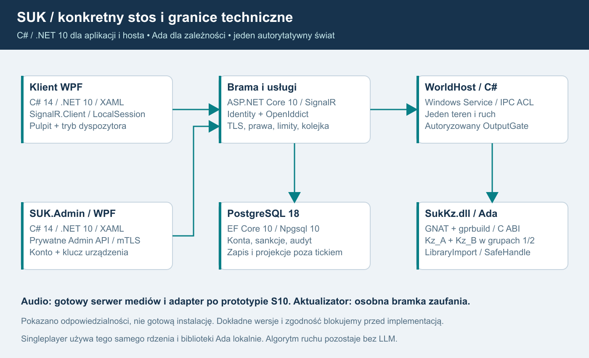
Klient pulpitu WPF i SUK.Admin WPF używają usług C# przez odrębne wejścia. Administracja ma prywatne API oraz jednoczesną kontrolę konta i klucza. Brama przekazuje uporządkowane intencje do hosta, a host wywołuje Ada przez C ABI. Baza i telemetria nie uczestniczą synchronicznie w cyklu zależności. Głos ma osobny transport.
Wykorzystanie nowszej aplikacji - 1.7
Aktualny produkt nadal jest na C#/.NET 8/WPF; .NET 10 pozostaje celem migracji, nie stanem zainstalowanego serwera. Istniejące Sim/Kz, Sim/Pulpit, karty i zasilanie są bazą adapterów; nie wdrażamy ich ponownie pod nowymi nazwami. app/Lcs.Komputerownia to osobna aplikacja WPF, bez ProjectReference do silnika, z widokami diagnostyki i usterek. Można wykorzystać ich model widoków/projekcji, lecz dotychczasowy TCP wymaga zastąpienia lub zabezpieczenia, wraz z rozdzieleniem uprawnień podglądu i instruktora. SUK.Admin pozostaje osobnym, zatwierdzonym projektem; istniejąca Komputerownia nie dowodzi jego implementacji.
Logowanie i zadania czatów - 1.8
Wspólny kontrakt logów wykorzystuje Microsoft.Extensions.Logging/ILogger oraz gotowy sink z rozdziału25; domena nie zależy od plikowego providera. Wyjście Ada jest pasywne i bounded. Każdy moduł otrzymuje zakres i katalog eventId oraz test limitów/redakcji. Konkretną konfigurację pakietów przypina S00/S01, bez własnego loggera plikowego w każdym module. Rozdziały26/27 określają wejścia nowych czatów i izolację A/B.
21. Osobna aplikacja administracyjna SUK.Admin
Plan 1.8, 17.10.2026. WYMAGANIE WŁAŚCICIELA: osobna aplikacja administracyjna, login/hasło i indywidualny klucz. Pełny interfejs pozostaje końcowym S18 po S16/S17, przed dyspozytorem S19. Zastępuje rekomendację Razor Pages z planu 1.5.
ZATWIERDZONE przez właściciela 17.10.2026: prywatny klucz powstaje lokalnie na komputerze administratora, preferencyjnie jako niewyeksportowalny klucz chroniony przez CNG/TPM. Serwer otrzymuje klucz publiczny i wydaje certyfikat. Nie tworzy, nie przekazuje i nie przechowuje prywatnego klucza administratora. Zastępuje to wcześniejszą propozycję serwerowego tworzenia i wydawania klucza.
Zdobycie EXE lub poznanie protokołu nie daje dostępu. Podpis wydawcy potwierdza pochodzenie pakietu, nie tożsamość administratora. Ochronę stanowią konto, dowód posiadania klucza i bieżące kompetencje sprawdzane przez serwer.
Cel i komplet funkcji
Panel daje administracji spójny interfejs do istniejących usług SUK:
| Obszar | Pełny zakres S18 |
|---|---|
| Konta i dostęp | Wyszukiwanie kont, historia sesji, role i ich zakresy, dezaktywacja, unieważnianie sesji i delegacji, obsługa istniejącego procesu odzyskiwania dostępu bez ujawniania hasła. |
| Sankcje | Kick, mute tekstu/głosu, ban konta/świata, zakaz posterunku/obszaru, czas obowiązywania, powód, materiał dowodowy, odwołanie oraz postęp egzekwowania. |
| Światy i obsada | Lista światów, przydziały, aktywne stanowiska, podgląd konfiguracji i zatwierdzonych wersji pakietów; kontrolowane operacje utrzymaniowe z historią wykonania. |
| Stan usługi | Świeżość świata, kolejki, tick, CPU/RAM, opóźnienia, egress, błędy, certyfikaty i miejsce na dysku; diagnostyka posterunków, KZ i obu grup jako odczyt. |
| Audyt i statystyki | Filtrowanie według konta, świata, posterunku, czasu i correlationId, historia zmian ról/sankcji, wersje projekcji, dozwolone eksporty i raporty. |
| Utrzymanie | Status kopii i prób odtworzenia, zgodność wersji, kanały aktualizacji, operacje serwisowe oraz ich wynik. Panel nie zastępuje procedury zatwierdzania wydania. |
Konfiguracja, restart lub zatrzymanie świata wymagają osobnej kompetencji i jawnego zakresu działania. Nie mogą być ukrytym sposobem kasowania przebiegów albo sankcji. Właściciel zatwierdza dostępne operacje, warunki ich użycia i politykę odzyskania. Panel nie wykonuje ich podczas samego oglądania ekranu.
Technologia i granica API
Rekomendacja: SUK.Admin.exe, C# 14 / .NET 10 LTS / WPF / XAML, osobny proces i podpisany pakiet. Prywatny SUK.AdminApi, ASP.NET Core 10/Kestrel, wykorzystuje istniejące moduły kont, sankcji, zapisu i audytu. Nie powstaje druga baza kont ani mechanizm haseł. Klient nie zawiera Ada, sterownika bazy, hasła usługi ani konsoli SQL/shell.
Operacyjny Admin API ma osobny prywatny listener wymagający mTLS dla całego wejścia, VPN/firewall i ograniczone konto usługi. Publiczna brama gry nie oferuje tych operacji. Certyfikat negocjuje TLS przed HTTP; warunek samej ścieżki /admin nie ustanawia mTLS. Na początek TLS kończy się w Kestrel. Przyszłe proxy wymaga zaufanego przekazywania certyfikatu, bez przyjmowania nagłówków podszytych przez klienta. ASP.NET Core - certyfikaty i proxy.
Tożsamość konta pochodzi z istniejących Identity/OpenIddict: Authorization Code + PKCE przez systemową przeglądarkę, bez wspólnego sekretu w EXE. WPF nie wprowadza osobnego formularza przechwytującego hasło. Przeglądarka służy logowaniu, natomiast interfejs administracyjny jest natywny. Cookies/CSRF pozostają potrzebne stronom logowania. RFC 8252, OpenIddict desktop.
Pierwsze logowanie i rejestracja klucza
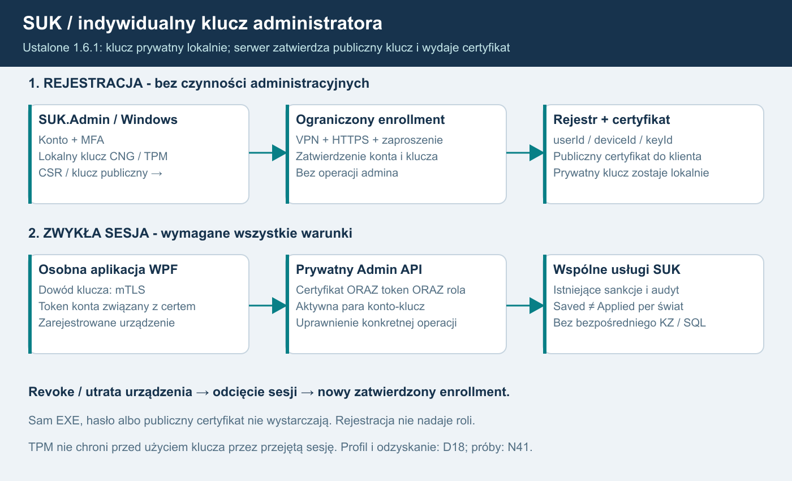
- Uprawniony właściciel tworzy krótkotrwałe zaproszenie związane z konkretnym kontem. Publiczna rejestracja i pierwsze poprawne hasło nie nadają roli administratora. Pierwszego właściciela ustanawia zaufany operator serwera w kontrolowanym procesie lokalnym; nie działa zasada „pierwszy zalogowany zostaje administratorem”.
- Odrębna, ograniczona ścieżka enrollmentu jest dostępna za VPN przez HTTPS, bez istniejącego certyfikatu klienta. Wymaga konta, MFA, zaproszenia i limitów prób. Nie udostępnia czynności administracyjnych.
- Zgodnie z zatwierdzonym ustaleniem SUK.Admin tworzy lokalny klucz i przesyła publiczny klucz/CSR z dowodem posiadania w standardowej procedurze certyfikacyjnej. Rejestracja jest związana z kontem, żądaniem i konkretnym kluczem; podmiana wymaga nowego zatwierdzenia.
- Uprawniona osoba potwierdza tożsamość i konkretny klucz/urządzenie. Zaproszenie zużywa się atomowo również przy równoczesnych próbach. Serwer rejestruje issuer/sub konta, userId, keyId/deviceId i certyfikat. Do klienta wraca publiczny certyfikat i łańcuch; prywatny klucz pozostaje lokalnie.
- Dopiero wpis Active, prawidłowe mTLS i token właściwego konta umożliwiają operacje w granicach roli. Przerwana/odrzucona rejestracja nie otwiera dostępu.
Stan: Invited → PendingApproval → Active → Revoked/Expired. Każdy administrator i każde jego zatwierdzone urządzenie mają osobny klucz. Nie kopiujemy wspólnego pliku pomiędzy administratorami lub komputerami. Audyt zawiera zatwierdzającego, daty, identyfikatory i historię.
Dla AI: diagram oddziela rejestrację bez operacji administracyjnych od zwykłej sesji wymagającej jednocześnie konta i dowodu posiadania klucza. Cofnięcie wpisu odcina nowe żądania i istniejące kanały.
Windows, TPM i cykl życia
Zatwierdzony kierunek to lokalne generowanie klucza. Preferowany profil: Windows CNG, Microsoft Platform Crypto Provider, niewyeksportowalny klucz TPM i certyfikat w magazynie właściwego użytkownika Windows. CNG ma również dostawcę programowego, więc nazwa CNG nie dowodzi użycia TPM. Brak TPM nie powoduje cichego przejścia na eksportowalny plik; D18 określa dopuszczalne urządzenia i ewentualny jawnie słabszy profil. Prototyp ma sprawdzić algorytm, TPM, Schannel i HttpClient; kandydatem jest ECDSA P-256, inny profil wymaga testów. Dostawcy CNG.
CSR nie dowodzi sprzętowego pochodzenia klucza. Jeśli serwer ma wymagać gwarancji TPM, potrzebna jest zweryfikowana atestacja i polityka zaufania. Niewyeksportowalność utrudnia kradzież, lecz przejęta sesja Windows może próbować używać klucza na tym komputerze. Nie deklarujemy wdrożenia atestacji. Atestacja TPM.
Serwer przechowuje publiczne dane klucza administratora, statusy i audyt. Jego własny prywatny klucz wystawcy certyfikatów jest innym kluczem: chronionym osobno od bazy i publicznej bramy, z ograniczonym dostępem, kontrolowaną rotacją/backupem. Nie trafia do SUK.Admin. Certyfikaty klienta mają ograniczoną ważność, odpowiednie użycie klucza i EKU Client Authentication; sam dowolny poprawny certyfikat nie wystarcza.
Utrata komputera/reset TPM/reinstalacja/podejrzenie przejęcia: revoke keyId, unieważnienie związanych sesji/tokenów i nowa zatwierdzona rejestracja. Serwer nie odtwarza starego prywatnego klucza. Utrata wszystkich urządzeń wymaga udokumentowanego odzyskania przez zaufanego operatora/uprawnioną drugą osobę z audytem; nie powstaje publiczne obejście samym hasłem.
Wcześniejszą propozycję serwerowego generowania/eksportu prywatnego klucza zastąpiono zatwierdzonym generowaniem lokalnym. Nie jest otwartym wariantem D18 ani instrukcją implementacyjną; stan poprzedniej propozycji zachowano w archiwum/v1.6. Ewentualny profil bez TPM nadal wymaga klucza lokalnego i nie może osłabić kontroli konta/klucza przez cichy fallback.
Konto ORAZ klucz ORAZ kompetencja
Rekomendujemy standardowy token binding RFC 8705 zamiast własnych podpisów komend. Bieżąca dokumentacja OpenIddict opisuje UseClientCertificateBoundAccessTokens, UseClientCertificateBoundRefreshTokens oraz TokenBindingCertificate dla klientów publicznych. Prototyp musi potwierdzić dostępność w przypiętej wersji 7.x oraz Windows/CNG/TPM; strona dokumentacji nie dowodzi zgodności wybranych paczek. Brak wsparcia blokuje bramkę albo wymaga jawnej zgodnej aktualizacji, bez cichego bearer fallback. OpenIddict mTLS, RFC 8705.
Każde żądanie wymaga poprawnego TLS/certyfikatu, ważnego access tokenu z właściwym issuer/audience i powiązaniem cnf do tego certyfikatu, zgodności issuer/sub z aktywnym wpisem konto-klucz, aktywnej sesji i kompetencji operacji. Token gry lub certyfikat A z kontem B są odrzucane. Publiczny certyfikat przesłany w wiadomości albo samo keyId nie dowodzą posiadania prywatnego klucza.
Lista schematów Certificate,Bearer w ASP.NET Core sama nie wymusza obu naraz. Potrzebna jest polityka AND sprawdzająca oba dowody i powiązanie; nie ufamy przypadkowo połączonym claims różnych tożsamości. Microsoft - schematy autoryzacji.
Daty/łańcuch certyfikatu nie zastępują bieżącego statusu keyId/konta/sesji/roli. OpenIddict domyślnie nie sprawdza wpisu access tokenu przy każdym żądaniu: rekomendujemy EnableTokenEntryValidation przy wspólnym magazynie lub introspekcję dla oddzielnej usługi. Brak wiarygodnego statusu oznacza odmowę nowej operacji. Cache walidacji kryptograficznej nie utrwala cofniętych kompetencji. OpenIddict - unieważnianie.
Revoke odcina istniejące kanały, nowe żądania i odświeżanie; oczekująca operacja ponownie sprawdza bieżące prawa/epokę przed skutkiem. Odbiór mierzy czas odcięcia. Audyt używa userId/keyId/sessionId/requestId, bez hasła, tokenu i prywatnego klucza.
Wspólne usługi, wydajność i skutek
Listy/raporty mają read modele poza tickiem, stronicowanie, limity eksportu i czas aktualizacji. Zmiana podaje oczekiwaną wersję i requestId; trafia do istniejących usług i uporządkowanej kolejki świata, bez mutowania pamięci świata lub Ada przez klienta/API.
Interfejs rozróżnia Saved - zapis trwały - i Applied - potwierdzone zastosowanie w każdym wymaganym świecie/mediach. Częściowe wykonanie nie jest globalnym sukcesem. Niedostępny świat synchronizuje sankcje przed komendami; odwołanie tworzy historię.
Administrator nie dostaje domyślnie ControlLease, poleceń KZ ani roli dyspozytora. Odebranie praw przez interwencję nie ustanawia go dyżurnym. Brak konsoli SQL/shell, uploadu kodu i obejścia selektora KZ.
Etapy, D18 i odbiór
S03 przygotowuje kontrakt tożsamości/kluczy; S08 daje minimalne prywatne narzędzie moderacji i prototyp ochrony kontem oraz kluczem przed pilotem S13. Nie wymaga pełnego GUI S18. S18 rozwija te same usługi w kompletną aplikację WPF i cykl utrzymania. Zależności etapów nie zmieniają się.
D18 doprecyzowuje zatwierdzanie/odzyskanie, profil TPM/atestacji, rotację certyfikatów, ochronę wystawcy i działania krytyczne. Osobna aplikacja, indywidualny dodatkowy klucz oraz jego generowanie lokalne są ustalone. Nie pytamy ponownie o miejsce generowania i nie przenosimy prywatnego klucza administratora na serwer.
N41A przed pilotem: dwa konta/urządzenia, rzeczywiste mTLS/token binding, kontrolowany enrollment, odmowa pojedynczego dowodu i niezgodnej pary A/B, revoke podczas sesji, odmowa nowych i oczekujących operacji przy braku wiarygodnego statusu klucza/konta/tokenu oraz brak obejścia publiczną bramą. N41B/S18: dodatkowo rotacja, utrata/reset TPM, odzyskanie po utracie wszystkich kluczy, regresja awarii statusu i sfałszowane nagłówki proxy. N38/O17 nadal obejmują role, audyt, idempotencję i Saved/Applied. O19 jest scenariuszem kluczy. Prób funkcjonalnych nie wykonano.
Opis funkcji dla AI
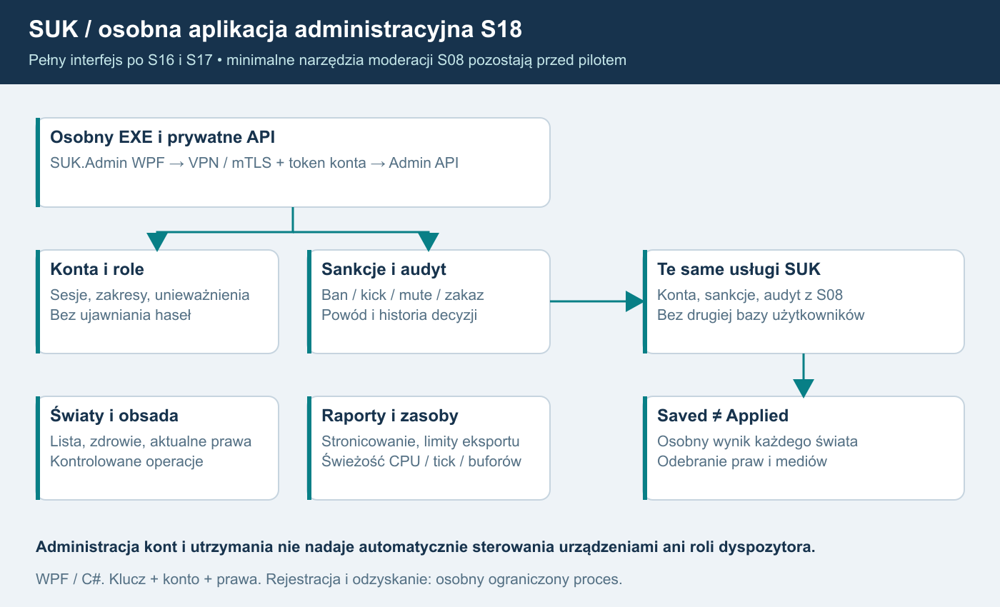
SUK.Admin WPF → prywatne Admin API → wspólne usługi kont/sankcji/audytu i kolejki. Wymagane jednocześnie konto, zatwierdzony klucz i uprawnienie. Ograniczony enrollment nie jest bocznym wejściem do operacji administracji.
Istniejąca Komputerownia - 1.7
Obecna aplikacja serwisowa ma widoki kart/KZ i możliwość usterek, ale jej stary protokół nie realizuje zatwierdzonej ochrony konta i lokalnego klucza. Użyć wartościowych projekcji i ergonomii po oddzieleniu kompetencji. Zabezpieczyć również stare listenery: publiczne wejście gry nie może obchodzić nowego Admin API przez t=serwis. Diagnostyka nie nadaje uprawnień instruktora ani ControlLease; N42/O20 należy do wcześniejszej infrastruktury.
22. Tryb dyspozytora - nadzór i koordynacja
POTWIERDZONE PRZEZ WŁAŚCICIELA: dyspozytor zajmuje się wyłącznie nadzorem i koordynacją ruchu. Pełny tryb powstaje jako S19, po S18, na samym końcu planu. Jądro KZ jest w Ada; interfejs i pozostałe usługi pozostają C#/.NET. Nie jest to nowy pulpit nastawczy ani dodatkowy komputer zależności.
S19 ma zawierać pełne opisane funkcje. D19 doprecyzowuje procedury, kompetencje i parametry, nie pozostawia otwartej decyzji, czy tryb w ogóle powstanie. Poniższy sposób realizacji jest rekomendacją. Nie przedstawia nieudokumentowanej organizacji rzeczywistej dyspozytury jako przepisu kolejowego.
Interfejs w istniejącym kliencie WPF
| Widok | Funkcja |
|---|---|
| Przegląd obszaru | Posterunki, szlaki, obsada ludzi/algorytmu, ważne zdarzenia, ograniczenia i aktualność danych w przydzielonym zakresie. |
| Grafik czas-droga | Planowany i rzeczywisty przebieg pociągów, odchylenia, prognozy i propozycje koordynacji z czytelnym rozróżnieniem źródła. |
| Rozkład i opóźnienia | Lista pociągów, postoje, przyjazdy/odjazdy, odchylenia, zatwierdzone uwagi i powiązania z historią zdarzeń. |
| Konflikty | Lista wykrytych lub zgłoszonych problemów, horyzont prognozy, dane wejściowe, niepewność i proponowane działania. |
| Dyspozycje | Przygotowanie, wydanie, odbiór, akceptacja, realizacja, odrzucenie/anulowanie i historia konkretnej dyspozycji. |
| Łączność | Dozwolone urządzenia i rozmowy z odcinkowymi/posterunkami, zgodnie z istniejącym modelem uprawnień. |
Grafik czas-droga jest osobnym narzędziem analizy. Nie zastępuje zobrazowania urządzeń ani ZG, nie przerabia automatycznie obrazów projektanta i nie staje się powierzchnią wydawania komend KZ. Kliknięcie linii pociągu może otworzyć jego dane lub projekt dyspozycji, nie nastawić przebieg.
Prognoza lub konflikt planistyczny nie jest dowodem naruszenia zależności srk. Rezerwacja planisty nie utwierdza toru ani zwrotnicy. Trzeba odróżnić stan zaobserwowany, przewidywanie i decyzję operatora. Program nie przypisuje automatycznie winy dyżurnemu na podstawie samego opóźnienia.
Widoczność nie jest sterowaniem
Dyspozytor otrzymuje ViewGrant dla wskazanego świata i obszaru, bez ControlLease. Może nadzorować i przekazywać zatwierdzone dyspozycje do właściwych odbiorców. Nie wydaje poleceń nastawczych, nie zwalnia utwierdzeń, nie przestawia urządzeń i nie omija KZ. Uprawnienia do komunikacji oraz dyspozycji są sprawdzane osobno od podglądu.
Rola administracyjna nie daje roli dyspozytora; rola dyspozytora nie daje uprawnień administracyjnych. Połączenie ról wymaga jawnego nadania, bez automatycznych praw wynikających z nazwy konta. Podgląd zachowany po oddaniu posterunku również nie przywraca sterowania.
Projekcje są przygotowywane poza tickiem, filtrowane po stronie serwera i ograniczone do dozwolonych danych. Ukrycie cudzej stacji w UI nie wystarcza. Widok pokazuje serverTick, czas symulacji i świeżość. Nieaktualny lub częściowy zakres jest oznaczony; nie obiecujemy pełnej oceny konfliktów poza nim. Po zmianie praw/reconnect następuje synchronizacja, bez zachowania nieautoryzowanych subskrypcji.
Dyspozycja jako obiekt domenowy
REKOMENDACJA: dyspozycja ma dispositionId, worldId, autora nadanego przez serwer, zakres, odbiorców, pociągi, typ z zatwierdzonego katalogu, parametry, czas/ważność, wersję kontekstu, correlationId i historię. Zakres obejmujący cudzy obszar wymaga właściwej kompetencji lub jest odrzucany; serwer nie rozszerza go milcząco.
| Stan | Znaczenie |
|---|---|
| Draft | Projekt niewydany; nie wiąże odbiorców ani algorytmu. |
| Issued | Serwer przyjął prawidłowo wydaną dyspozycję; wysłanie nie dowodzi odbioru. |
| Received | Uprawniony odbiorca otrzymał dane; nie oznacza zgody ani wykonania. |
| AcceptedOperationally | Uprawniony człowiek lub algorytm przyjął dyspozycję według zatwierdzonej procedury. |
| Executing | Rozpoczęto jej dozwoloną realizację; nie jest to nazwa transportowego ACK. |
| Completed | Zrealizowano cel według zatwierdzonego kryterium i dowodów. |
| Rejected | Odrzucono z powodem i źródłem decyzji. |
| Cancelled | Uprawniona osoba wycofała dyspozycję zgodnie z jej regułami. |
Received nigdy nie przechodzi automatycznie w wykonanie tylko dlatego, że wiadomość dotarła. Akceptacja operacyjna nie oznacza nastawienia przebiegu. Każda zmiana stanu ma autora, czas i wersję; dozwolone przejścia, wygaśnięcia i przypadki wielu odbiorców ustala D19. Serwer odrzuca nieaktualne lub niedozwolone przejście. Ponowienia zdarzeń są idempotentne.
Anulowanie nie cofa fizycznie przejazdu ani wcześniej wykonanej komendy. Po rozpoczęciu realizacji konieczne działania i ich potwierdzenia określa zatwierdzona procedura, bez uniwersalnego przycisku „cofnij ruch”. Rozmowa głosowa lub zwykły czat nie tworzą automatycznie dyspozycji; wymagane jest jawne zdarzenie domenowe.
Człowiek i algorytm F17
Dyspozycję odbiera operator człowiek lub autorski algorytm danych/reguł F17, bez LLM. Obaj korzystają z zatwierdzonego katalogu i uprawnień. Algorytm może odmówić, zgłosić konflikt albo przyjąć w granicach zaakceptowanych reguł; nie otrzymuje ad hoc zmiany polityki od dowolnej wiadomości dyspozytora.
Realizujący czynności sterowania potrzebuje właściwego lease i zwykłego pipeline poleceń. Serwer sprawdza je ponownie przy wykonaniu. Przyjęta dyspozycja nie nadaje prawa do cudzych urządzeń. KZ w Ada nadal rozstrzyga wykonalność każdej czynności; dyspozytor nie wysyła override ani SetSignal.
Planista może przeliczyć propozycję po zmianie sytuacji, lecz nie uruchamia automatycznie niezatwierdzonego wariantu. Zmiana obsady człowiek/algorytm przenosi historię rozmowy i dyspozycji, bez dwóch jednoczesnych właścicieli sterowania. Odrębne KZ posterunków, ich dwie obliczające grupy i pojedynczy selektor wyjścia pozostają częścią tego samego rdzenia; tryb dyspozytora ich nie zastępuje ani nie daje prawa przełączania grup.
D19 i przyszły odbiór
Właściciel zatwierdza katalog dyspozycji, wzory/parametry, obowiązki odbiorców, ważność, odwoływanie, miary konfliktów i zakończenia oraz granice działania F17. Materiały lokalne z audytu źródeł nie są pełną instrukcją dyspozytury. Nie dopisujemy nakazów ani procedur z pamięci.
Odbiór S19 obejmuje pełny przebieg dyspozycji do człowieka i F17, zatrzymanie na Received bez akceptacji, odrzucenie/anulowanie, utratę łącza, nieaktualny grafik, częściowe prawa i powtórzenia komunikatów. Musi dowieść odmowy komend KZ z samej roli dyspozytora, braku wzajemnego dziedziczenia ról admin/dyspozytor oraz braku podwójnego skutku obu grup KZ. Zrzuty mają pokazywać grafik i stany wraz ze świeżością; dziennik serwera potwierdza skutki. Scenariusze te są zaplanowane, jeszcze niewykonane.
Schemat i opis dla AI
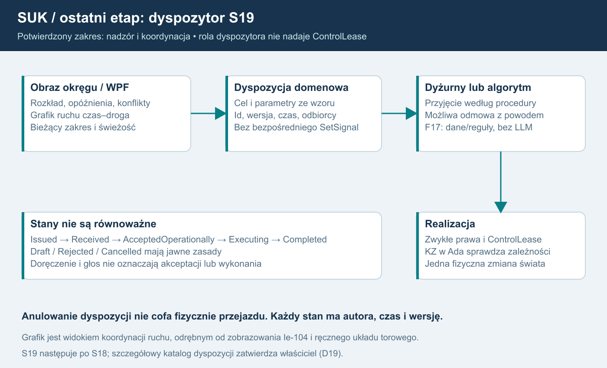
Dyspozytor obserwuje zakres okręgu i wydaje typowaną dyspozycję. Odbiór, akceptacja i wykonanie są osobne. Dyżurny lub algorytm wykonuje czynności tylko ze zwykłymi prawami i kontrolą KZ; rola nadzoru nie nadaje sterowania.
23. KZ w Ada i integracja z SUK
Plan 1.8, 17.10.2026. USTALONE przez właściciela: komputer zależności przepisujemy na język Ada. Nie jest to otwarty wybór technologii. Ada 2022, natywna DLL Windows x64 oraz poniższy sposób integracji są rekomendacją wykonawczą. Dokument nie potwierdza implementacji, instalacji narzędzi ani testów. Nie upoważnia do zmian repozytorium, Git ani wdrożenia.
1. Zakres języka i odpowiedzialności
| W Ada | W istniejącym C#/.NET |
|---|---|
| Warunki przebiegów, utwierdzenia, zwalnianie i ochrona boczna | Pulpit WPF, edytory, zobrazowanie i PIP |
| Logiczne timery, Sz, zastopowania i zamknięcia | Rzeczywisty zegar wykonania i harmonogram świata |
| Logika blokad oraz stan lokalnego końca interfejsu KZ-KZ | Transport komunikatów, karty, teren i zasilanie |
| Stan obu grup i kanałów A/B, kontrola zgodności i domenowy selektor grup | Jeden ruch pociągów, rozkład, otoczenie i obsada AI |
| Stan proponowany/zatwierdzony oraz logiczny snapshot | Konta, autoryzacja, SignalR, baza, audio, aktualizator |
| Diagnostyka obliczeń i wybrany plan rozkazów | Bramka wykonania: prawa, fencing, effectId; audyt i obsługa procesu |
Ada otrzymuje czas symulacji i meldunki urządzeń; nie uruchamia własnego zegara ściennego, nie przesuwa pociągu i nie odczytuje listy Trains. Host wykonuje fizyczny skutek przez kartę dokładnie raz. Granica obejmuje wcześniejsze kroki PODZIAL_MODULOW, nie znosi zatwierdzonych reguł srk. Nowy język nie jest powodem projektowania zależności ani stacji automatycznie.
R02 oznacza ponowne wykorzystanie rozpoznanych algorytmów, danych projektowych, kontraktów i testów. Kod Ada będzie nową implementacją zatwierdzonej funkcji, a nie nowym modelem prowadzenia ruchu. WPF, ruchu i usług kont nie przepisujemy przy okazji.
2. Narzędzia i wynik budowania
Rekomendujemy Ada 2022 z przypiętym GNAT i gprbuild, budującymi natywnie dla Windows x86-64. Dokumentacja GNAT opisuje wybór wersji języka, a Alire dostarcza narzędzia dla Windows x64 i integrację z MSYS2. Nie utożsamiamy Alire z kompilatorem ani GNAT Studio z wymaganiem uruchomienia serwera. Wersje Ada w GNAT, Alire na Windows.
S02A1 sprawdza granicę na neutralnym technicznym stubie i harnessie, bez implementowania reguł przyszłego A/B. Zapisze dokładne wersje, pochodzenie, hashe instalatorów, konfigurację .gpr, ustawienia sprawdzeń oraz listę bibliotek wykonawczych. Narzędzia można pozyskać przez Alire albo utrzymywany pakiet GNAT; konkretną dystrybucję zatwierdza prototyp i weryfikacja warunków redystrybucji. Nie używamy nieprzypiętego „latest”. Klient końcowy nie instaluje kompilatora ani MSYS2.
Artefakt: jedna SukKz.dll dla wszystkich kontekstów, nagłówek C, adapter .NET, manifest engineVersion/abiVersion i niezbędne zależności wykonawcze. GPRbuild obsługuje bibliotekę dynamiczną i interfejs biblioteki autonomicznej; projekt ma jawnie ustalić Library_Kind, Library_Interface i sposób inicjalizacji. Nie kopiować niesprawdzonych nazw symboli bindera między konfiguracjami. Projekty bibliotek GPRbuild.
DLL ładuje wyizolowany SUK.WorldHost C#. Brama internetowa i zwykły pulpit multiplayer nie wywołują jej bezpośrednio. Singleplayer korzysta z tego samego adaptera i biblioteki lokalnie, bez konta i Internetu. Nie dodajemy procesu ani IPC dla każdego KZ.
3. Grupy i kanały
Nowe ustalenie właściciela: powstają dwie implementacje Ada, Kz_A i Kz_B, w dwóch osobnych przyszłych czatach. Autor A nie czyta kodu B, a autor B kodu A. Oba czaty dostają tę samą zamrożoną neutralną specyfikację, kontrakty, zatwierdzone źródła/reguły i katalog prób. Pełny stary kod C# analizuje zespół specyfikacji i integracji; nie służy autorom A/B jako wspólny przepis tłumaczony linia w linię. Nie dziedziczą kontekstu implementacyjnego drugiego. Wspólne mogą być DTO, definicje i adapter ABI; nie wspólny silnik warunków zależności ukryty pod dwoma nazwami pakietów.
Każdy pełny KZ ma Group1 i Group2. Każda grupa wykonuje oba kanały A i B, a nie tylko jeden z nich: G1/A, G1/B, G2/A, G2/B. Cztery stany dynamiczne są prywatne; definicje wspólne są niemutowalne. Jedna DLL i jeden runtime GNAT zawierają pakiety Kz_A, Kz_B oraz koordynator AdaGroupRuntime. Dwa czaty są sposobem organizacji pracy, nie dowodem niezależności zespołów, różnorodności wszystkich błędów ani SIL.
Jeden wykonawca świata wywołuje Evaluate raz na KZ i cykl; AdaGroupRuntime wykonuje oba algorytmy w obu grupach na uporządkowanym CycleInput. Nie tworzymy Ada task ani wątku systemowego na grupę, kanał czy posterunek. Nie kopiujemy terenu, ruchu i rozkładu do Ada.
AdaGroupRuntime porównuje kanały, kwalifikuje zdrowie/synchronizację i prowadzi domenowy wybór grupy. C# OutputGate nie rozstrzyga zależności: weryfikuje pochodzenie, epoki, effectId i aktualne prawa, po czym dopuszcza jeden wybrany plan do kart. Brak zgodności A/B nie może zostać pominięty przez wybór „głównego algorytmu”.
Przy starcie WorldHost, dopiero po Ready obu grup, C# wyznacza per KZ RandomNumberGenerator.GetInt32(2) + 1 i zapisuje StartupSelection jako jawne wejście Ada. Rejestr obejmuje worldRunId, kzId, chosenGroup, selectionEpoch, czas oraz hashe konfiguracji/definicji/algorytmów. Metoda zwraca wartości od zera do górnej granicy wyłącznie. Dokumentacja RNG.
Replay korzysta z zapisanego wyboru bez ponownego losowania. Nowy przebieg serwera po odtworzeniu najpierw uzgadnia obie grupy, a potem zapisuje nowe losowanie dla nowego worldRunId; nie wykonuje historycznych wyjść. Restart jednej grupy, reconnect i przekazanie stanowiska nie losują grupy ponownie. Nie wybiera jej klient. Brak dwóch gotowych grup blokuje zwykłą procedurę startowego losowania; trybu zdegradowanego nie domyślamy się poza zatwierdzoną polityką.
Grupy 1/2, kanały A/B, EBILock, MOR-3 i fizyczne HA Windows pozostają rozdzielone. Ada i dwa czaty nie odtwarzają automatycznie niezależnego sprzętu ani certyfikowanego systemu bezpieczeństwa.
4. C ABI i własność danych
Rekomendujemy wersjonowane C ABI, eksporty Ada z Convention => C i stałą nazwą zewnętrzną. Interfaces.C służy odwzorowaniu typów C; rekordy mają uzgodnioną reprezentację. Interfejs Ada-C.
Nagłówek C jest kontraktem: int32_t/uint32_t/int64_t/uint64_t, jawne długości i liczby elementów. Nie przekazujemy Ada String, kontenerów, nieograniczonych tablic, klas .NET, bool o nieustalonej reprezentacji ani obiektów runtime. Testy potwierdzają sizeof, wyrównanie i offsetof po obu stronach. Win64 ma jeden natywny sposób wywołania; jawna konwencja C pozostaje częścią deklaracji. GNAT i Windows DLL.
C# jeden raz czyta i waliduje plik projektu. Do Ada przekazuje wersjonowane rekordy i tablice definicji, statusów oraz znormalizowanych komend. Nie piszemy drugiego parsera JSON ani komend Ie-104. Ada kopiuje inicjalizujące definicje do własnej pamięci i traktuje je jako tylko do odczytu; nadal kontroluje zakresy, odwołania i limity. DLL nie zatrzymuje wskaźników do przypiętej pamięci zarządzanej po zakończeniu wywołania.
Przykład szkicu, bez implementacji i pełnych definicji domenowych:
#include <stdint.h>
typedef void *suk_context;
typedef void *suk_result;
typedef struct SukDefinitionsV1 SukDefinitionsV1;
typedef struct SukCycleV1 SukCycleV1;
typedef struct {
uint32_t kind, object_id;
uint64_t effect_hi, effect_lo;
int64_t argument;
} SukOutputV1;
uint32_t suk_abi_version(void);
int32_t suk_runtime_start(void);
int32_t suk_context_create_v1(
const SukDefinitionsV1 *defs, suk_context *created);
int32_t suk_evaluate_v1(
suk_context ctx, const SukCycleV1 *input,
suk_result *result);
int32_t suk_result_size_v1(suk_result result, uint32_t *count);
int32_t suk_result_copy_v1(
suk_result result, SukOutputV1 *dst,
uint32_t capacity, uint32_t *required);
void suk_result_release_v1(suk_result result);
void suk_context_release_v1(suk_context ctx);
int32_t suk_runtime_stop(void);
SukDefinitionsV1 i SukCycleV1 muszą mieć struct_size, schema_version oraz opisane pary pointer/count; żaden wskaźnik nie jest adresem urządzenia udostępnianym klientowi. Status funkcji jest ustalonym kodem int32, nie tekstem ani LastError. Kody obejmują OK, InvalidArgument, AbiMismatch, BufferTooSmall, LimitExceeded, InvalidState i InternalFault.
Evaluate wykonuje obliczenie tylko raz i zwraca stabilny, niemutowalny ResultHandle. Size/Copy czytają ten sam wynik. BufferTooSmall zwraca required bez częściowego zapisu i bez ponownego Evaluate, zmiany timera lub nowego effectId. Limity obejmują wejścia, wyniki, aktywne uchwyty i pamięć; przepełnienie jest jawnym błędem.
Ada alokuje i zwalnia własny wynik przez eksport release. Host nigdy nie używa do niego Marshal.FreeHGlobal ani free z innej biblioteki. ResultHandle posiada samodzielną kopię wyniku; jego odczyt nie zależy od późniejszej mutacji kontekstu KZ.
5. Adapter .NET i cykl życia
Adapter używa LibraryImport oraz jawnego UnmanagedCallConv z CallConvCdecl; buforom towarzyszą długości. Publiczne API aplikacji ukrywa wskaźniki. SafeHandle zarządza ContextHandle i ResultHandle; ReleaseHandle wywołuje odpowiedni eksport Ada. Przy out/return używanym przez generator trzeba zapewnić wymagany publiczny konstruktor bezparametrowy. Generator P/Invoke, SafeHandle i zalecenia, Konstruktor SafeHandle.
Inicjalizacja runtime/elaboracja odbywa się jawnie raz dla biblioteki w procesie, przed tworzeniem kontekstów. Konfiguracja nie może równocześnie wykonać automatycznej i ręcznej inicjalizacji. Wrapper wywołuje procedury inicjalizacji/finalizacji wygenerowane przez właściwy binder; mogą mieć nazwy zależne od biblioteki. Nie inicjalizujemy GNAT ponownie dla każdego KZ. Nie tworzymy zadań w DllMain. Elaboracja biblioteki.
Shutdown: zatrzymanie nowych wywołań, zakończenie bieżącego cyklu, jawne Dispose wyników i kontekstów, kontrola liczników zasobów, finalizacja bindera. DLL pozostaje załadowana do końca procesu. Ponieważ finalizer SafeHandle może działać na innym wątku, release musi być bezpieczny i nie wywoływać Evaluate; runtime_stop odmawia finalizacji przy żywych uchwytach lub wywołaniach. Nie wolno rozładować kodu przed możliwym późnym release.
Każde wejście Ada ma osłonę wyjątków zamieniającą przechwytywalny błąd na status i ograniczoną diagnostykę. Żaden wyjątek Ada nie może przejść przez P/Invoke. Prototyp obejmuje błędy elaboracji i zamykania. Naruszenie pamięci, awaria natywna lub zawieszenie mogą zatrzymać cały WorldHost; nie obiecujemy ich naprawy przez catch w C# ani przedstawienia jako lokalnej usterki KZ. Watchdog wykrywa brak postępu; odzyskanie procesu podlega S06.
6. Zatwierdzanie i zapis
Evaluate proponuje przejście i rozkazy; nie wykonuje fizycznych skutków. Osobny eksport przyjęcia uporządkowanej decyzji Committed/Rejected aktualizuje zatwierdzony stan kontekstów według rozdziału 18. Kontrola zgodności kanałów, domenowa decyzja selektora Ada i fencing hosta są różnymi krokami. Wszystkie kanały otrzymują tę samą decyzję; rebuild odtwarza również decyzje, bez odgrywania rozkazów.
Snapshot Ada jest logicznym, wersjonowanym formatem z wersją algorytmu, danymi identyfikującymi definicje, stanem grup/kanałów i sekwencjami wejść. Nie jest zrzutem surowego heapu, adresów, rekordów z paddingiem ani uchwytów. Po restore powstają nowe uchwyty i właściwe epoki. Snapshot zostaje częścią wspólnego checkpointu terenu, ruchu, selektora Ada, watermarks hosta i wiadomości; sam plik Ada nie odtwarza świata.
7. Etapy i dowody
Zachowujemy istniejące identyfikatory. Obowiązkowa ścieżka rozszerza się do:
S02A → S02A1 → {S02A2 i S02A3 niezależnie} → S02A4 → S02B → S02C → S02D → S04.
- S02A1 - toolchain, wspólna specyfikacja i ABI: przypięty GNAT/gprbuild Windows x64; minimalna DLL i adapter; test inicjalizacji, układu rekordów, błędnego ABI, limitów, uchwytów, GC/shutdown i brakujących zależności. Specyfikacja nie zawiera kodu przyszłego A ani B.
- S02A2 - implementacja A: pierwszy osobny czat pisze Kz_A ze wspólnej specyfikacji. Małe części: model/timery, przebiegi/utwierdzenia/ochrona, sygnały/blokady. Oddaje wyniki i ograniczenia; nie przekazuje autorowi B swojego kodu.
- S02A3 - implementacja B: drugi osobny czat pisze Kz_B z tej samej bazy wymagań i testów, bez odczytu Kz_A. Test zależności pakietów wyklucza wspólną implementację reguł udającą dwa kanały. Kolejność kart nie daje zgody na skopiowanie A.
- S02A4 - integracja, zgodność i migracja: dopiero tutaj integrator porównuje A/B oraz referencję C# na identycznych strumieniach. Bada przyjęcia/odrzucenia, rozkazy, zwalnianie, timery i zdarzenia; normalizuje tylko nieistotne identyfikatory. Niezgodności rozstrzyga ze specyfikacją i właścicielem, nie większością trzech wyników. A4 przygotowuje adapter docelowy i porównane implementacje, ale nie zalicza jeszcze grup ani failover. Włączenie kompletnego runtime Ada do normalnej gry następuje po S02B/C/D i odbiorze. C# zostaje czasowo narzędziem odniesienia, bez długotrwałego produkcyjnego drugiego silnika lub awaryjnego przełączania języka.
- S02B: obie grupy zawierają już oba wykonujące się algorytmy Ada A/B. S02C/S02D/S06/S13 zachowują kryteria przełączania, transmisji, praw i odtwarzania oraz próby losowania i replay.
Obowiązują selftest 25/26 i kontrola 4/4 na kopii, scenariusze usterek, ochrony bocznej i blokad oraz testy N25-N34. Dodajemy ABI fuzz, BufferTooSmall bez ponownego obliczenia, przerwane kopiowanie, wycieki, odrzucenie komendy po utracie praw i awarię całego procesu natywnego. Regresja nie zatwierdza znanego błędu: różnicę merytoryczną opisuje i rozstrzyga właściciel.
S13 mierzy koszt Ada, kopiowania i wszystkich grup/kanałów przy 40 klientach, próbę zapasu 80 oraz offline. Bez wyników prototypu nie podajemy przyspieszenia, zużycia pamięci ani gotowości wydania. Wybór Ada nie stanowi nowej normy srk ani dowodu niezawodności.
8. Uściślenia odbioru 1.5
Qualification=Ready jest niezależne od roli. Przed losowaniem obie grupy mają Role=Unassigned i zablokowane wyjścia. Zapisane StartupSelection nadaje role w Ada; C# OutputGate otwiera się po zatwierdzeniu, bez własnego wyboru zastępczej grupy.
Ponowne prawa dotyczą nowej intencji operatora. Autonomiczne dozorowanie już zatwierdzonego przebiegu nie jest uzależnione od późniejszego lease dawnego dyżurnego. Committed nie potwierdza fizycznego wykonania; to potwierdzają urządzenia. Próba obejmuje oddanie/ban podczas przekładania i podczas zwalniania.
Manifest zgodności wiąże abiMajor/minor, schemat definicji/wejść, wersje Kz_A, Kz_B i AdaGroupRuntime oraz snapshotSchema każdej implementacji. Restore odrzuca nieobsługiwaną kombinację przed zmianą aktywnego stanu. A/B mogą używać różnych reprezentacji prywatnych; porównuje się kanoniczny wynik domenowy, nie surowy snapshot A z B.
StartupSelection jest unikalne dla pary (worldRunId, kzId). Ponowienie zapisu/przekazania tego samego wejścia nie losuje kolejnej wartości: używa istniejącego wyboru i identyfikatora. Zatwierdzony wybór zostaje częścią checkpointu i dziennika zanim odblokujemy wyjścia.
Zamrożenie reguł z nowej bazy - 1.7
Referencją zespołu specyfikacji/integracji jest teraz Sim/Kz/KomputerZaleznosci/Interlocking/Blocks/Commands na 5eddb5c oraz SystemNadrzedny i karty, nie stare położenie metod w Simulator. Autorzy A/B nadal otrzymują neutralną specyfikację, bez kodu drugiego autora i bez wspólnego przepisywania starego algorytmu.
Do definicji i manifestu zgodności włączyć zatwierdzony hash Data/sygnaly_ie1.json, macierz doboru sygnałów, zależność od następnego semafora/SBL, znaczenie VSet oraz zakres parametrów. C# odczytuje dane raz i przekazuje znormalizowany kontrakt; prywatne algorytmy A/B pozostają niezależne. Wskazany PDF Ie-1 jest obecnie niedostępny, więc tabela C# nie stanowi sama dowodu normatywnego. Właściwe źródło i istniejące otwarte kwestie ≤100 km/h/Os/Sp trzeba zweryfikować przed zamrożeniem tych przypadków.
Istniejące karty i fasada nie zaliczają S02A: przed dwoma obliczeniami trzeba domknąć niemutowalne wejścia, bierne plany i jeden skutek oraz bezpieczne projekcje dla odłożonego kroku 8. Nowy pomiar regresji S00 ma bazować na aktualnym kodzie i wszystkich nowych kontrolach, z jawnymi różnicami względem dawnej wersji.
Wykonanie w małych czatach - 1.8
Dwie linie autorskie A/B mogą być kontynuowane w kolejnych czatach własnego wariantu według pojedynczych ID z26. Nie scalamy historii A i B ani nie udostępniamy im istniejącego algorytmu C#. Gotowe prompty27 wskazują neutralny pakiet o identycznym hashu i dozwolone poprzednie artefakty. Raport i hash każdego kroku zachowuje się do zamrożenia wariantu. Każde Evaluate może oddać ograniczone rekordy diagnostyczne według25; logger C#/I/O nie jest callbackiem algorytmu. Diagnostyka błędu nie zmienia kanonicznego wyniku domenowego i nie stanowi obejścia bramki wyjść.
24. Porównanie z nową wersją programu — plan 1.8
Stan odczytu: 17.10.2026. To aktualizacja podstaw planowania, bez implementacji i bez nowych wyników testów.
1. Baza i zakres porównania
Pierwotny odczyt planu dotyczył 4869fc185a70e6f390bf2bf1ad07680fdb5c32ff, a uzupełnienie 1.3 — 2120ab0bcbedbc503a4a859eda26a7823644d0b7. Obecnie potwierdzony HEAD to 5eddb5c5d58eccd5af6467f7ca2373a2daed6568. Pomiędzy drugą a trzecią bazą są 25 commitów, 123 zmienione pliki, 10 466 dodanych i 1 111 usuniętych linii. Są to istniejące zmiany programu, odczytane w tej pracy; nie są commitami dokumentacji multiplayera.
Sprawdzono instrukcje i dokumenty projektu, historię zmian, nowe dane sygnałów oraz istotne miejsca kodu Komputerowni, fasady i PIP. Nie uruchamiano buildów, symulacji, serwera ani testów. Nie zmieniano repozytorium ani indeksu Git. Zastany nieśledzony plik D:\Projects\SUK\SUK_plan_multiplayer.pdf pozostał nietknięty.
Dokumenty projektu wskazano względem D:\Projects\SUK. Ścieżki kodu Sim/, Net/, Data/ oraz Simulator.cs odnoszą się do app/LcsWidzew/; numery linii dotyczą bieżącego HEAD. „Zrobione” oznacza obecność implementacji i taki status w dokumentacji projektu, a nie odbiór działania przez ten audyt.
2. Co już istnieje i co wykorzystać
| Zmiana w programie | Co wykorzystuje plan 1.7 | Czego jeszcze nie uznajemy za gotowe |
|---|---|---|
Kroki podziału 5, 6, 6a, 7, 9 i 10 oznaczono jako wykonane; 8 odłożono. Dowód: PODZIAL_MODULOW.md:3, ROZWOJ.md:188–195. |
Istniejące karty, zasilanie, system nadrzędny i fasadę. S02A odbiera oraz domyka ich granice przed grupami. | Wielu niezależnych KZ, dwóch grup i kanałów Ada. Obecność klas nie zalicza tych wymagań. |
Karty zwrotnicy i wykolejnicy mają rozkaz, teren, czas przekładania i status. Rozprucie rozstrzyga KZ. Dowód: PODZIAL_MODULOW.md:193–213. |
Rozdzielenie KZ od fizycznego stanu; zachować zaakceptowane opóźnienie cyklu i model usterek. | Pełnej izolacji wyjść replik ani transportu pętli; wymagają dalszych kontraktów i odbioru. |
Karta sygnalizatora rozdziela sygnał zlecony i wyświetlany; istnieje tabela Ie-1 oraz dobór prędkość × następny semafor. Dowód: PODZIAL_MODULOW.md:240–267, Sim/Sygnaly.cs:40–73. |
Aktualną bazę zachowania, dane i scenariusze do specyfikacji KZ. | Pełnej obsługi prędkości z sygnału przez ruch; kroku 8, kart Os/Sp ani rozstrzygnięcia wariantu linii ≤100 km/h. |
Sim/Urzadzenia/Zasilanie.cs oddziela fizyczne zasilanie od kopii statusu w KZ. Dowód: PODZIAL_MODULOW.md:288–304. |
Istniejące rozkazy/statusy NN, UPS i agregatu. | Modelu rozładowania UPS i zużycia paliwa; dokumentacja pozostawia to do ustalenia. Nie dodajemy tych reguł podczas migracji. |
SystemNadrzedny zawiera parser, potwierdzanie, stanowiska, obszary i książkę. PIP śledzi zajętości zamiast listy pociągów. Dowód: PODZIAL_MODULOW.md:306–336, Sim/Pulpit/Pip.cs:5–11,51–68. |
Jeden system nadrzędny i istniejący mechanizm numeracji. display.pip jest opcją posterunku. |
Ręcznych korekt numerów, migania i czerwonego numeru na wolnym torze. Dokumentacja odnotowuje też opóźnienia przejścia numeru przy wjeździe na zajęty odcinek. |
KZ wydzielono do Sim/Kz/, a Simulator koordynuje moduły. Dowód: PODZIAL_MODULOW.md:338–352. |
Aktualne ścieżki i granice do dalszej migracji. | Odrębnego KZ każdego posterunku: Simulator.cs:43 tworzy jeden KZ, a Sim/Kz/Fasada.cs:12–21 udostępnia jego wspólne słowniki. |
Osobna Komputerownia WPF pokazuje karty, przebiegi, utwierdzenia, komunikację, polecenia i kontrolę niezmienników; wprowadza również usterki. Dowód: README.md:292–307, PODZIAL_MODULOW.md:269–286. |
Projekcje diagnostyczne, dziennik i istniejące narzędzia odbioru; aplikacja ma własny projekt bez referencji do kodu symulatora. | Bezpiecznej administracji publicznej ani niezależnego kanału B. Kontrola niezmienników nie jest drugą implementacją algorytmów zależnościowych. |
Nowa ścieżka serwisowa wymaga uwzględnienia w bezpieczeństwie. Net/LcsNet.cs:137–154 przyjmuje deklarację klienta serwis, po której obsługuje także usterka → Instruktor.ApplyFault. W tym miejscu nie ma sprawdzenia konta ani uprawnienia. Domyślny nasłuch jest na IPAddress.Any (:63–67), a README.md:307 dopuszcza Komputerownię przez port stanowisk 47120. Osobny port 127.0.0.1:47121 nie ogranicza tej samej funkcji na 47120. Plan obejmuje więc osobne uprawnienia podglądu i usterek, wiarygodną tożsamość, audyt, limity i prywatny dostęp serwisowy. To ustalenie z kodu, bez próby wykorzystania luki.
3. Edytory: wykonanie i zaakceptowany plan
Edytor UT ma status wykonanych etapów 0–7. Doszły m.in. wyposażenie, odcinki, profil NMT, kontrola, eksport w skali, narzędzia dopasowania łuków, wykres krzywizny, podział toru i zaznaczanie wielu elementów. Szczegóły przeniesiono do HISTORIA_EDYTOR_UT.md; skrót jest w ROZWOJ.md:115–133. Dane UT nadal nie trafiają do symulatora (README.md:7). Symulator czyta dotychczasowy station.json.
Właściciel zaakceptował plan edytora zobrazowania 17.10.2026 (PLAN_EDYTOR_ZOBRAZOWANIA.md:3,164–172). Ustalenia obejmują osobny *.zob.json, obrazy 1920 × 1080 przy siatce 8, szlaki i blokady definiowane w UT, ręczne ustawianie przerw i osobno rysowany obraz poglądowy. Jeden obiekt UT może występować na dwóch obrazach, a prawa wynikają z jego posterunku. Dawne obrazy mają być narysowane od nowa; mogą służyć jako podkład.
| Przyszły etap | Zakres zaakceptowanego planu |
|---|---|
| Z0 | Funkcja semafora, posterunki i szlaki w UT. |
| Z1–Z2 | Osobna aplikacja/model/pliki oraz ręczne rysowanie torów przypiętych do obiektów UT. |
| Z3–Z4 | Urządzenia, opisy, granice odcinków, perony, przejazdy i blokady. |
| Z5 | Wiele obrazów, osobny poglądowy, kontrola zgodności i eksport. |
| Z6 | Podgląd przez rysowanie pulpitu; wymaga części przekształcenia UT + obraz → model symulatora. |
Żadnego Z0–Z6 nie zaliczamy samą akceptacją dokumentu. Podstawa: PLAN_EDYTOR_ZOBRAZOWANIA.md:117–129. Pełne przekazywanie danych do symulatora pozostaje odrębnym etapem 9. Starsze skróty kolejności w PLAN_EDYTOR_UT.md:5 i ROZWOJ.md:135 nie zastępują szczegółowych zależności nowego planu. Ustalenia o kartach każdego urządzenia, funkcji semafora, posterunkach i opcjonalnym PIP są w PLAN_EDYTOR_UT.md:173–184; nie dowodzą gotowego importu.
4. Źródła i bramka przyszłych testów
Plik Data/sygnaly_ie1.json:2–3 wskazuje Ie-1 §4 ust.13, §8 ust.4 i 6 oraz załącznik 1; jawnie opisuje zakres zestawienia dla linii powyżej 100 km/h. Wskazanego w ROZWOJ.md:49 PDF Zrodla/Ie-1_obowiazuje_od_2026-01-17__uz_1041_25__WCAG.pdf nie znaleziono w bieżącym katalogu źródeł. Potwierdzono tabelę i jej użycie w kodzie, nie wykonano weryfikacji z tym PDF. Źródło należy udostępnić przed normatywnym odbiorem lub zmianą reguł; nie odtwarzamy treści z domysłu.
AGENTS i CLAUDE są już zgodne: aktualny test edytora to EdytorUT.exe --test, a stare --edtest, fuzz i dfuzz pozostają historyczne (AGENTS.md:11–14). Rozbieżność opisana w planie 1.6.1 jest zamknięta. Dokumentacja wymienia następujące oczekiwania (ROZWOJ.md:88–90): selftest 25/26 i kontrola zależności 4/4, ochrona boczna 4/4, karty zwrotnic 8/8, sygnały 9/9, zasilanie 8/8, PIP 1526/1526, brak naruszeń kontroli KZ i wykrycie celowych naruszeń 2/2. Kod wypisuje nowe kontrole w Sim/SelfTest.cs:122–141,204,236,328.
To bramka do ponownego wykonania w S00, nie wynik tego audytu. Należy zachować dzienniki i scenariusze, a przy zmianach właściwych aplikacji także ich testy. Test Komputerowni wymaga działającego symulatora i aktywnego przebiegu (README.md:329, PODZIAL_MODULOW.md:301–302). Zastane ograniczenia nadal obowiązują: brak testu dwóch komputerów przez Radmin (ROZWOJ.md:210) oraz brak sprawdzenia prawdziwą myszą i drukarką (HISTORIA_EDYTOR_UT.md:150).
5. Skutek dla planu multiplayera
W rozdziałach 02, 11, 14 i 19 oraz S00/S02A zaktualizowano bazę, ścieżki, numery linii i statusy. Kroki 5/6/7/9/10 mają być wykorzystane i sprawdzone, zamiast ponownie pisane. S02A zachowuje odbiór izolacji skutków przed grupami. Krok 8 pozostaje odłożony: ruch nadal ma odwołania do KZ, utwierdzeń i przebiegów (Sim/Trains.cs:83–84,155–172,248,364). Cienka fasada nie oznacza prywatnych kontekstów ani granicy bezpieczeństwa.
Nowe zmiany programu nie odwołują ustaleń właściciela planu multiplayera: Windows; własny KZ każdego posterunku; dwa niezależne warianty Ada A/B i dwie grupy; wspólny pojedynczy teren/ruch; algorytm ruchu bez LLM; podgląd po oddaniu bez sterowania; administracja z lokalnym kluczem urządzenia i odrębnymi prawami. Są to wymagania docelowe, nie funkcje zaliczone przez obecny HEAD. Nie dodajemy nowych reguł srk, czasów przełączenia ani automatycznie projektowanych zależności.
6. Mapa obecnej implementacji
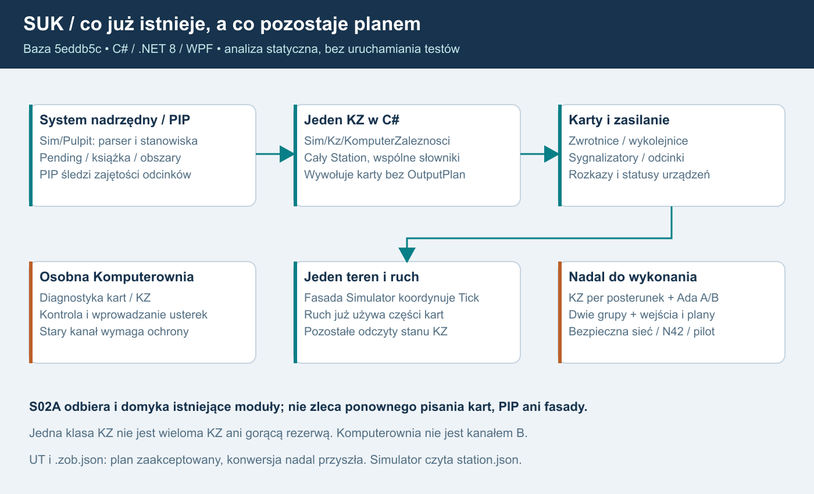
Opis dla AI: system nadrzędny i PIP przekazują intencje do obecnego pojedynczego KZ w C#. KZ wywołuje karty urządzeń i zasilanie; nie ma jeszcze pasywnych planów wyjść prywatnych replik. Simulator koordynuje jeden teren i ruch, które nadal częściowo odczytują stan KZ. Osobna Komputerownia daje diagnostykę i wprowadzanie usterek przez istniejący kanał wymagający ochrony N42. Prawa część dolnego rzędu jest zakresem przyszłej pracy: KZ każdego posterunku, Ada A/B w dwóch grupach, granica wejść i wyjść oraz bezpieczna sieć. S02A wykorzystuje istniejące moduły i odbiera brakujące granice. Grafika nie przedstawia gotowej architektury docelowej.
Zakres późniejszej kopii1.8
Właściciel wskazał D:\Projects\SUK jako miejsce końcowej dokumentacji. To upoważnia do zastąpienia tam PDF po zachowaniu kopii i zapisania pakietu planu. Nie zmienia kodu ani wcześniejszych ustaleń analizy statycznej i nie obejmuje Git.
25. Logowanie i diagnostyka wszystkich modułów
Plan 1.8 | 17.10.2026 | specyfikacja do wdrożenia, bez zmian programu.
USTALONE: SUK tworzy logi. Każdy istniejący moduł objęty migracją oraz każdy nowy moduł otrzymuje adapter logowania i sprawdzony katalog zdarzeń. Logi działają na serwerze oraz lokalnie w singleplayerze. Samo okno „Zdarzenia”, alarm na pulpicie lub końcowy plik testu nie zalicza tego wymagania.
REKOMENDACJA TECHNICZNA: C# używa Microsoft.Extensions.Logging (MEL), typowanych zdarzeń i ograniczonego zapisu asynchronicznego do JSONL. Ada oddaje bierną diagnostykę przez ABI; host zapisuje ją tą samą drogą. Trwały audyt i dziennik odtworzenia mają osobne gwarancje. Poniższe limity są proponowanymi profilami do pomiaru, nie wynikiem testów ani obietnicą wydajności.
1. Co istnieje, a czego jeszcze nie ma
Przegląd statyczny dotyczy kodu na 5eddb5c5d58eccd5af6467f7ca2373a2daed6568. Ścieżki w tabeli są względne wobec repozytorium.
| Źródło | Potwierdzony stan | Sposób wykorzystania |
|---|---|---|
| app/LcsWidzew/Sim/Rejestrator.cs:18–20,52–75 | Events, Alarms i Remarks są listami w RAM; czas symulacji, operator, sygnały UI i potwierdzenia alarmów | Zachować semantykę dziennika pulpitu i dołączyć adapter trwałego eksportu wybranych zdarzeń |
| app/LcsWidzew/Sim/Urzadzenia/KzPodglad.cs:10–25 | Dziennik rozkazów/statusów kart ogranicza listę po przekroczeniu 2000 wpisów, usuwając 500; wpisy statusu dotyczą zmian | Wykorzystać identyfikatory i zdarzenia; bufor podglądu nie zastępuje archiwum ani audytu skutków |
| app/LcsWidzew/App.xaml.cs:21–24 | App.LogError synchronicznie dopisuje wyjątek do bledy.log; niepowodzenie zapisu jest ignorowane | Docelowo zastąpić wspólnym adapterem, kontrolą stanu zapisu i bezpiecznym formatowaniem |
| app/Lcs.EdytorUT/Program.cs:14–22 | Podobny bledy.log obok programu, lokalny czas i pełny wyjątek, pusty catch | Włączyć edytor do tego samego kontraktu, zapisywać poza binariami |
| app/LcsWidzew/Net/LcsNet.cs:113–117,271–275 | Część błędów trafia do App.LogError, inne są pomijane; publikacja zdarzeń do klienta nie jest trwałym zapisem | Typowane odmowy/błędy transportu, liczniki i limity zamiast pełnych nieufnych ramek |
| app/LcsWidzew/Sim/SelfTest.cs:334 | Eksport pełnego dziennika scenariusza do pliku .zdarzenia | Zachować jako dowód regresji; to eksport testowy, nie infrastruktura logowania każdej aplikacji |
Nie uruchamiano programu, buildów, testów ani prób przeciążenia. Obecne deklarowane wyniki regresji pozostają źródłami do ponownego pomiaru S00.
2. Cztery oddzielne strumienie
| Strumień | Przeznaczenie i właściciel | Gwarancja |
|---|---|---|
| Dziennik domenowy i alarmy | Rejestrator/system nadrzędny; wydarzenia widoczne dyżurnemu | Jedno logiczne zdarzenie i właściwy odbiorca; nie cztery alarmy od czterech obliczeń KZ |
| Diagnostyka techniczna | Każda aplikacja i moduł: uruchomienie, błędy, kolejki, stan połączenia, czasy | Ograniczony zapis, jawna liczba utraconych rekordów, brak blokowania ticku |
| Audyt bezpieczeństwa i czynności | Usługi kont, praw, administracji i WorldHost | Trwałe powiązanie aktora, celu, decyzji i wyniku; bez cichego zgubienia wymaganych wpisów |
| Dziennik odtworzenia świata | Jeden autorytatywny WorldHost, checkpoint i uporządkowane wejścia/rozstrzygnięcia | Spójność komendy, skutku, wersji i odtwarzanego stanu według bramki S06 |
Diagnostyczny JSONL może zawierać kopię zdarzenia audytu dla wygodnego wyszukiwania. Kopia nie staje się źródłem prawdy i jej utrata nie usuwa trwałego audytu. Zwykły sink plikowy, ustawienie „Critical” ani sam zapis tekstu „Executed” nie dowodzą trwałości skutku.
Metryki Meter i próbkowane ślady ActivitySource uzupełniają logi. Nie zastępują audytu, dziennika świata ani wydarzeń pulpitu. Algorytm ruchowy pozostaje regułowy; ani tworzenie logów, ani ich analiza podczas gry nie wymagają modelu LLM.
3. Gotowe mechanizmy i granice modułów
- Moduły C# dostają ILogger
lub wąski adapter oparty na MEL. Katalog zdarzeń używa EventId, stałych kodów i typowanych parametrów; w gorących ścieżkach LoggerMessage/source generation. Kontener hosta tworzy loggery. Nie powstaje własna biblioteka zastępująca MEL. Takie API i generowanie wspiera dokumentacja .NET, wydajne logowanie .NET. - Integracja hosta: Serilog.Extensions.Hosting, zgodna z docelową linią .NET; dokładne wersje i licencje zamraża S00. Moduły nie znają Serilog, ścieżek, formatu pliku ani usług sieciowych. Oficjalna integracja z hostem.
- Zapis diagnostyki: gotowy Serilog.Sinks.File i Serilog.Formatting.Compact, CompactJsonFormatter. Jedna linia UTF-8 jest jednym obiektem JSON; właściwości SUK są strukturalne. Rotacja według czasu i rozmiaru, jawne limity liczby/wieku plików. Sink plikowy, format Compact JSON.
- Pomiędzy producentem a plikiem jest jeden ograniczony adapter kolejkowy hosta, oparty na System.Threading.Channels. Logger zarejestrowany przez Serilog.Extensions.Hosting ma jako jedyne wyjście gorącej ścieżki ten adapter pamięciowy. Worker posiada osobny prywatny logger z gotowym sinkiem File/Compact i nie odsyła wpisów do kolejki wejściowej; nie wolno skonfigurować równoległej bezpośredniej gałęzi plikowej. Na wątku ticku logger tylko sprawdza poziom i wykonuje ograniczone TryWrite; plik obsługuje osobny worker. Wariant bez pomiaru granic kolejki nie przechodzi odbioru. Kanały .NET.
- Wywołanie MEL/Serilog domyślnie nie dowodzi asynchroniczności. Nie podłączać bezpośredniego sinku plikowego, sieciowego eksportera ani Windows EventLog do gorącego loggera WorldHost. Również fallback nie wykonuje I/O z ticku.
- Nie stosować domyślnych ustawień sinku jako polityki SUK. W szczególności jawnie włączyć rollOnFileSizeLimit i powiązać limity z nadzorem wolnego miejsca. Nie używać jednego pliku współdzielonego przez wiele procesów.
Schemat przepływu: moduł → typowane zdarzenie + kontekst → walidacja/redakcja → ograniczona kolejka → worker → rotowany JSONL. Osobna droga: działanie wymagające audytu/odtwarzalności → kontrola dostępności trwałego rejestru → zatwierdzona granica zapisu → wykonanie i uzgodniony wynik. Ta druga droga nie przechodzi przez odrzucalną kolejkę diagnostyczną.
4. Kontrakt rekordu v1
Katalog zdarzeń i JSON Schema są wspólnym, wersjonowanym artefaktem SUK.Contracts/diagnostyki. Zmiana znaczenia pola wymaga nowej wersji głównej; nowe opcjonalne pola są zmianą zgodną. Odbiorca toleruje nieznane opcjonalne pola, zachowuje schemaVersion i odrzuca błędny typ. Wewnętrznych struktur obiektów nie serializujemy automatycznie.
| Pola | Typ i reguła |
|---|---|
| schemaVersion, stream | Liczba całkowita 1 oraz zamknięta kategoria strumienia; diagnostyka/audyt/replay nie są wybierane przez klienta |
| @t, monoElapsedUs, processRunId, recordSeq | UTC ISO 8601, monotoniczny czas od startu procesu w µs, UUID uruchomienia i rosnący licznik producenta; @t pochodzi z gotowego formatu |
| eventCode, eventId, severity, moduleId, moduleVersion | Stabilny kod i EventId, poziom, moduł oraz wersja; @l formatu Compact odwzorowuje severity, brak @l oznacza Information |
| worldId, worldRunId, serverTick, simulationTimeMs | Opcjonalne dla modułów poza światem; identyfikatory świata/epoki oraz całkowity tick i czas symulacji, również przy pauzie |
| postId, kzId, kzEpoch, groupId, channelId, groupRunId, selectionEpoch | Tylko gdy dotyczą; groupId: 1 albo 2, channelId: A albo B; brak wartości jest jawny, nie oznacza „grupa główna” |
| requestId, correlationId, effectId, effectState | Powiązanie żądania i skutku; plan, commit i potwierdzone wykonanie urządzenia to różne stany |
| controlLeaseId, controlEpoch, authorizationVersion, actorRef, targetId, reasonCode | Obowiązkowe tam, gdzie uzasadniają decyzję; actorRef to pseudonimowy identyfikator konta nadany przez serwer |
| outcome, durationUs, counters, @mt | Typowany wynik, czas, dozwolone liczniki, szablon komunikatu; komunikaty dla człowieka po polsku |
UTC służy do korelacji maszyn, nie wyznacza wieku poleceń. Czas monotoniczny porównujemy tylko wewnątrz tego samego processRunId; kolejność świata określają epoka, tick i pozycja dziennika. Korekta NTP nie cofa licznika monotonicznego ani czasu ważności. Emitent bez zegara świata pomija te pola. Oryginalne eventId/eventCode nie zależą od przetłumaczonego tekstu.
Identyfikatory korelacji klienta są nieufne i mają limity formatu/długości. Serwer nadaje własne correlationId i autorytatywny kontekst. Znaczenie rekordu wynika z miejsca emisji, nie przesłanego przez klienta moduleId lub actorRef.
Przykładowe bezpieczne rekordy
Przykłady są ilustracją kontraktu, nie wynikiem uruchomienia. Każdy obiekt poniżej jest osobną linią JSONL; użyto umownych identyfikatorów bez danych osób.
{"@t":"2026-10-17T12:00:00.000Z","@mt":"Odmowa polecenia: {reasonCode}","@l":"Warning","schemaVersion":1,"stream":"diagnostic","eventCode":"AUTH.COMMAND_REJECTED","eventId":2101,"severity":"Warning","moduleId":"WorldHost.Authorization","moduleVersion":"example","processRunId":"11000000-0000-4000-8000-000000000001","recordSeq":71,"monoElapsedUs":12001000,"worldId":"world-example","worldRunId":"22000000-0000-4000-8000-000000000002","serverTick":120,"simulationTimeMs":12000,"postId":"post-example","kzId":"kz-example","requestId":"req-example","correlationId":"corr-example","actorRef":"account-ref-example","controlLeaseId":"lease-old-example","controlEpoch":8,"authorizationVersion":19,"targetId":"target-example","outcome":"Rejected","reasonCode":"CONTROL_EPOCH_STALE"}
{"@t":"2026-10-17T12:00:01.000Z","@mt":"Rozkaz urządzenia zatwierdzony","schemaVersion":1,"stream":"diagnostic","eventCode":"WORLD.EFFECT_COMMITTED","eventId":3101,"severity":"Information","moduleId":"WorldHost.OutputGate","moduleVersion":"example","processRunId":"11000000-0000-4000-8000-000000000001","recordSeq":72,"monoElapsedUs":13001000,"worldId":"world-example","worldRunId":"22000000-0000-4000-8000-000000000002","serverTick":130,"simulationTimeMs":13000,"kzId":"kz-example","groupId":2,"selectionEpoch":3,"requestId":"req-other-example","correlationId":"corr-other-example","effectId":"effect-example","effectState":"Committed","outcome":"Committed"}
{"@t":"2026-10-17T12:00:02.000Z","@mt":"Pominięto diagnostykę: {droppedCount}","@l":"Warning","schemaVersion":1,"stream":"diagnostic","eventCode":"LOG.DIAGNOSTICS_DROPPED","eventId":9101,"severity":"Warning","moduleId":"Diagnostics.Writer","moduleVersion":"example","processRunId":"11000000-0000-4000-8000-000000000001","recordSeq":73,"monoElapsedUs":14001000,"droppedCount":52,"windowMs":1000,"reasonCode":"QUEUE_FULL","outcome":"Degraded"}
Wpis WORLD.EFFECT_COMMITTED powstaje z istniejącego zatwierdzonego rozstrzygnięcia. Nie zmienia stanu i nie zastępuje rekordu commit. Słowo „Committed” nie dowodzi otrzymania statusu od karty.
5. Ada i cztery konteksty KZ
- Kz_A/Kz_B w grupach 1/2 nie otwierają pliku, konsoli, gniazda, bazy ani loggera WPF. Wynik kroku zawiera ograniczony DiagnosticBatch: kod zdarzenia, lokalną kolejność, obiekt, poziom, dane liczbowe z katalogu i liczbę pominiętych szczegółów.
- Proponowany limit ABI do dowodu: maksymalnie 8 rekordów i 4 KiB diagnostyki na kontekst i wywołanie kroku; przekroczenie daje licznik. Kwalifikacja, błąd krytyczny oraz powód odrzucenia wyniku są obowiązkowymi polami rezultatu, niezależnymi od miejsca w diagnostyce. Pełny bufor nie może ukryć niezgodności kanałów ani zmienić kwalifikacji.
- C# adapter przypisuje post/kz/group/channel/epoki z posiadanego uchwytu, nie z dowolnego tekstu Ada. Mapuje do MEL poza funkcją obliczającą i nie interpretuje tekstu jako komendy. Kopiowanie ponowionego wyniku BufferTooSmall nie oblicza ponownie ani nie emituje nowego logicznego zdarzenia; batchId/seq pozwalają deduplikować eksport.
- Cztery prywatne wyniki mogą dać cztery diagnostyki obliczenia. Jeden OutputGate emituje jeden logiczny commit/skutek/audyt. Rezerwa i drugi kanał nie tworzą dodatkowej książki, punktów, alarmu operatora ani drugiego rozkazu. DiagnosticCandidate i EffectCommitted mają różne eventCode.
- Zapisujemy StartupSelection, kwalifikację grup, zmianę selectionEpoch, restart groupRunId, niezgodność A/B, lukę historii, rebuild i odmowę starego effectId. Wynik losowania grupy zasadniczej jest utrwalonym wejściem świata przed otwarciem wyjść, bez ponownego losowania przy reconnect lub restartach pojedynczej grupy.
- Domyślnie rejestrujemy przejścia i podsumowania, nie status każdej karty w każdym cyklu. Rozszerzony ślad danego KZ ma limit czasu, objętości i uprawnienia; nadal nie blokuje ticku.
Wymaganie wchodzi do neutralnej specyfikacji S02A1 i obu niezależnych promptów A/B. Pakiety dzielą katalog kontraktowych kodów, ale nie implementację algorytmu ani prywatny stan. Diagnostyka nie jest wejściem sterującym ani źródłem decyzji LLM.
6. Kolejki, dysk i trwałość
Proponowany profil pilotażowy 20–40 osób wymaga pomiaru w S13. W kolejce wolno przechowywać wyłącznie ograniczone, niemutowalne pola, bez referencji do całego świata lub wyjątku z dowolnym grafem obiektów. Limit bajtów obejmuje konserwatywnie policzony rozmiar danych; rzeczywisty narzut obiektów CLR jest osobno mierzony. Własna implementacja ograniczonego bufora i redakcji pozostaje małym adapterem do gotowego MEL, nie zastępuje silnika logowania:
| Granica | Propozycja do pomiaru |
|---|---|
| Rekord diagnostyczny | 8 KiB po serializacji; string 512 znaków, wyjątek po redakcji do 4 KiB; ograniczona liczba właściwości |
| Kolejka diagnostyczna procesu świata/bramy | 4096 rekordów i 8 MiB łącznie, obowiązuje wcześniejszy limit; brak kolejek per obiekt/kanał |
| Kolejka klienta/edytora | 1024 rekordy i 2 MiB łącznie |
| Normalny flush diagnostyki | Co najwyżej 1 s grupowania; poprawne zamknięcie ma limit 5 s na opróżnienie |
| Cel kosztu emitowania w ticku | p99 poniżej 100 µs na typowe zdarzenie i narzut diagnostyki poniżej 1% czasu pracy ticku; pomiar alokacji i ogona opóźnień |
| Logi techniczne serwera | Plik do 64 MiB; do 16 plików/proces i do 7 dni, nadrzędny łączny budżet 2 GiB na host |
| Logi lokalnej aplikacji | Plik do 32 MiB; do 8 plików i do 7 dni; wspólny nadzór miejsca dla wszystkich aplikacji |
| Rezerwa i progi miejsca | Ostrzeżenie poniżej 15% wolnego; ograniczenie diagnostyki poniżej 10%; próg audytu wynika też z bezwzględnej rezerwy, a nie samego procentu |
| Audyt i dziennik świata | Odrębna kwota, monitorowany backlog i rezerwa; rozmiar z modelu zdarzeń oraz RPO/retencji S06, bez kasowania wymaganej historii przez rotator diagnostyki |
Po przepełnieniu kolejki diagnostyki TryWrite nie czeka. Rośnie licznik odrzuceń według modułu i powodu; pierwszy możliwy zapis daje zbiorczy LOG.DIAGNOSTICS_DROPPED. Liczniki i stan zdrowia są dostępne niezależnie od działającego pliku. Poważne błędy mają wydzielony mały budżet i alarm nadzorcy; przy wyczerpaniu także jawny licznik. Nie obiecujemy nieutracalności diagnostyki podczas awarii procesu. Awaria workera/sinku nie może rekurencyjnie logować do własnej przepełnionej kolejki.
Audyt obowiązkowy i commit log nie korzystają z odrzucania. Przed dopuszczeniem nowego działania wymagającego trwałości host musi mieć rezerwację i sprawdzoną drogę trwałego zapisu. Przeciążenie/brak zapisu powoduje odrzucenie albo jawny ograniczony stan oczekiwania przed nowym skutkiem. Operacja nie dostaje Executed na podstawie obecności w buforze RAM lub samym logu tekstowym.
S06 dowodzi wspólnego punktu trwałości komendy, jej wyniku i odtwarzanego skutku. Zapis audytu w bazie i zmiana świata w RAM nie są automatyczną transakcją. Potrzebny jest spójny checkpoint/dziennik i protokół uzgadniania, z deduplikacją trwałej projekcji audytu. Odnośniki do tego samego event/effectId łączą rejestry. Nawet sink AuditTo.File nie rozwiązuje tego problemu sam.
Nie wykonywać fsync/transakcji DB na wątku ticku. Oczekiwanie na trwałość jest jawnym stanem pipeline'u; bieżące prawa są sprawdzane przy faktycznym dopuszczeniu nowej intencji do skutku. Bramka odbioru mierzy zachowanie przy wolnym dysku, zamiast deklarować jednocześnie dowolny czas zapisu i zerowe opóźnienie.
Awaria zapisu nie przerywa autonomicznego dozorowania wcześniej zatwierdzonych przebiegów, nie resetuje sygnałów i nie odbiera ochrony dlatego, że zniknął lease dawnego operatora. Host blokuje nowe działania wymagające niedostępnej trwałości, zgłasza degradację i stosuje zatwierdzoną procedurę odzyskania. Jeśli dalszych autonomicznych zmian nie da się utrwalać, jawnie oznacza przerwę odtwarzalności; nie reklamuje tego okresu jako pełnego replay. Wznowienie nowych działań wymaga ponownej gotowości rejestru oraz uzgodnienia stanu według S06 i decyzji domenowych.
Odmowy uwierzytelnionych komend, administracja i zmiany praw mają wymagany audyt. Nieufne przedlogowaniowe śmieci, odrzucone przed admission limitów, można agregować w jawnych oknach z dokładnym licznikiem i przyczyną; brak próbkowania znikań bez licznika. Zalew nie wymusza dowolnej liczby zapisów ani nie otwiera sterowania w razie braku miejsca. Każda dozwolona czynność administracyjna pozostaje osobno identyfikowalna.
7. Bezpieczeństwo, prywatność i eksploatacja
- Lista dozwolonych pól przed kolejką i sinkiem. Nigdy hasła, tokenu, cookie, nagłówka Authorization, sekretu SMTP/DB, prywatnego klucza administratora, zawartości TPM, kodu recovery/enrollment ani pełnej nieufnej ramki. Wyjątek i stos też podlegają redakcji; bez zrzutu pamięci i pełnej konfiguracji jako domyślnego „diagnostic dump”.
- Publiczne dane certyfikatu ograniczyć do identyfikatora/odcisku niezbędnego do audytu. Prywatny klucz pozostaje lokalny CNG/TPM zgodnie z 21; logging nie jest kanałem jego eksportu.
- Bez domyślnego nagrywania głosu, zawartości rozmów, treści prywatnego czatu ani transkrypcji. Media logują metadane połączenia, ACL, stan urządzenia, przyczyny odmów i zbiorcze metryki. Osobna przyszła funkcja nagrań wymaga odrębnego projektu, uprawnień i retencji.
- Pseudonimowe accountRef/actorRef nadal mogą identyfikować osobę. Pełny adres IP i nazwa konta nie trafiają do szeroko dostępnej diagnostyki. Jeśli są konieczne do kontroli nadużyć, trafiają do ograniczonego strumienia bezpieczeństwa z określonym celem i krótką retencją. Dowolny tekst od użytkownika nie staje się szablonem ani nazwą pliku.
- Serwer: katalogi pod %ProgramData%\SUK\Logs poza binariami i projektami. Osobny podkatalog z ACL konta usługi; brak prawa zapisu dla graczy i brak publicznego endpointu „pobierz wszystkie logi”. Nie zapisywać po ścieżce dostarczonej przez klienta.
- Klient/edytory: %LocalAppData%\SUK<aplikacja>\Logs. Tryb offline zapisuje lokalnie i nie potrzebuje konta, Internetu ani zewnętrznego kolektora. Pakiet pomocy użytkownik przegląda i eksportuje świadomie, z tą samą redakcją.
- Audyt i kopie mają ograniczony dostęp, szyfrowanie wolumenu/kopii, kopię poza hostem, test odtworzenia i ewidencję odczytu/eksportu. Zdalny transport logów, jeżeli wprowadzony, jest prywatny i uwierzytelniony. Hash-chain sam nie chroni przed administratorem mogącym zmienić cały plik; nie nazywać go niepodrabialnością.
- Propozycja organizacyjna: diagnostyka 7 dni, audyt operacyjny 30 dni; zakres danych i docelowe okresy zatwierdzić przed pilotem. Dziennik świata usuwać dopiero po potwierdzeniu spójnego checkpointu i uzgodnionej polityce odzyskania. „30 dni” nie jest twierdzeniem o wymaganiu prawnym.
- Zmiana poziomu Debug/Trace jest ograniczona kompetencją, czasem i wolumenem oraz audytowana; brak wyłączenia obowiązkowego audytu suwakiem poziomu. Kopia zapasowa logów nie uzasadnia nieskończonej retencji.
8. Obowiązek każdego modułu
| Moduły | Minimalny katalog zdarzeń |
|---|---|
| WorldHost, karty, ruch, rozkład, instruktor, KZ/selektor | Start/stop, wersje/hash, zmiany gotowości, błędy, odrzucone intencje, effectId i uzgodnienia; instruktor z prawami i audytem |
| Brama, protokół, IPC, konta i autoryzacja | Handshake, niezgodna wersja, resync, limity, przyczyny odmów, utrata sesji, zmiany praw i sankcje |
| Pulpit klienta i lokalny singleplayer | Start/wersja, ładowanie pakietu, utrata świeżości, nieznany wynik komendy, reconnect, błędy renderowania/zasobów; lokalne logi nie są dowodem serwerowych punktów |
| Algorytm ruchowy bez LLM | Wersja reguł/danych, decyzja i reasonCode, wyczerpanie ograniczonego planowania, przyczyna braku decyzji, requestId normalnej komendy |
| Łączność tekst/głos i adapter mediów | Zmiana prawa rozmowy, dozwolone metadane zestawienia/zerwania, PTT/stan urządzenia w profilu diagnostyki, odcięcie po banie; bez nagrania/treści |
| Aktualizator i instalowanie | Wybrany kanał/wersja, wynik hash/podpisu/metadanych, przyczyna odmowy rollback/freeze, pobranie/przełączenie/wycofanie; bez prywatnego klucza podpisu |
| Edytor UT, zobrazowania, konwersja, kalkulator, Komputerownia | Wersja i format, walidacja/wczytanie/zapis, kontrolowany kod błędu importu, dostęp serwisowy; bez śledzenia każdego ruchu myszy i zawartości całego projektu |
| SUK.Admin, prywatne AdminApi, dyspozytor | Uwierzytelnienie/klucz/certyfikat, uprawnienia, kontrolowane eksporty, dyspozycje, działania administracyjne i odmowy; serwer potwierdza Applied odrębnie od żądania |
Każda karta etapu, która tworzy lub zmienia moduł, wymienia jego logger/adapter, eventCode, kontekst, ograniczenia, redakcję, testy i odsyłacz do tego rozdziału. Moduł bez tych artefaktów nie spełnia „gotowe”. Logger nie nadaje kompetencji administracyjnej i nie ujawnia prywatnych stanów KZ klientowi.
9. Odbiór i kolejność prac
Poniższe próby są planowane. Lokalna numeracja L01–L10 jest stabilna wewnątrz tego rozdziału; nie zastępuje N01–N42 ani O01–O20.
| ID | Próba | Wymagany dowód |
|---|---|---|
| L01 | Uruchomienie i kontrolowany błąd każdego modułu | JSONL poprawny według schematu, moduleId/wersja/kod i komplet właściwego kontekstu; działa także offline |
| L02 | Przepełnienie obu limitów kolejki i zalew wyjątków | Tick/UI nie czeka na dysk; pamięć ograniczona; dokładny licznik utraty i późniejsze podsumowanie; brak rekurencji |
| L03 | Rotacja czasu/rozmiaru, retencja i brak ACL | Brak nieograniczonego wzrostu, utrata gotowości widoczna; istniejące projekty/station.json nie są dotykane |
| L04 | Disk-full, wolny dysk, brak bazy, awaria workera | Brak fałszywego Executed, nowy chroniony skutek nie omija audytu; trwające dozorowanie zachowane; jawna przerwa replay |
| L05 | Sekrety i CR/LF w polach, wyjątkach i payloadzie | Znaczniki testowych sekretów nie pojawiają się w plikach, eksporcie, konsoli i fallbacku; jedna poprawna linia JSON |
| L06 | Cztery konteksty KZ, failover i 1000 powtórzeń effectId | Oddzielna diagnostyka A/B/1/2, jeden logiczny commit/książka/statystyka; brak potrójnych „odmów operatora” od nieaktywnych replik |
| L07 | Cofnięcie UTC, pauza, restore i restart grupy | Kolejność nie zależy od UTC; odróżnione czasy/epoki; StartupSelection replay bez ponownego losowania |
| L08 | Crash przed/po trwałym zapisie i przed/po skutku | Zgodny dziennik/checkpoint/wynik, brak podwójnego skutku, wykryty ucięty ostatni rekord i jawny stan niepewny |
| L09 | Ban/oddanie sterowania w trakcie oczekiwania na zapis | Ponowna weryfikacja praw dla nowej intencji; żadna stara lease nie wykonuje nowej komendy; autonomiczne dozorowanie trwa |
| L10 | 40 klientów/8 h, próba zapasu 80 i offline | Rzeczywisty wolumen, p99 emitowania/ticku, alokacje, RAM, backlog, dropy, dysk/retencja i brak zależności od zewnętrznego kolektora |
S00 ustala stan bieżących logów, katalog oraz schemat i profil pomiarowy. S01, przed kolejnymi modułami, dostarcza wspólny adapter i działający lokalny JSONL z L01–L05 w zakresie fundamentu; S02/S02A1 wiążą kontekst świata i ABI. Autorzy S02A2/A3 mają już kontrakt DiagnosticBatch, S02A4–S02D dowodzą L06/L07. S06 domyka trwałość i odzyskanie L04/L08/L09; S08 odbiera projekcję audytu bazy, a S13 cały profil L01–L10 dla pilota. Każdy późniejszy moduł, także S18/S19, ponownie przechodzi właściwe próby.
Podział na osobne czaty nie odkłada logowania do końca: pakiet wejściowy każdego czatu zawiera wersję schematu, właściwy katalog eventCode, politykę danych i dowody poprzednika. Ten dokument nie stwierdza implementacji nowego loggera, trwałego audytu ani zaliczenia którejkolwiek próby.
Przepływ dla człowieka i AI
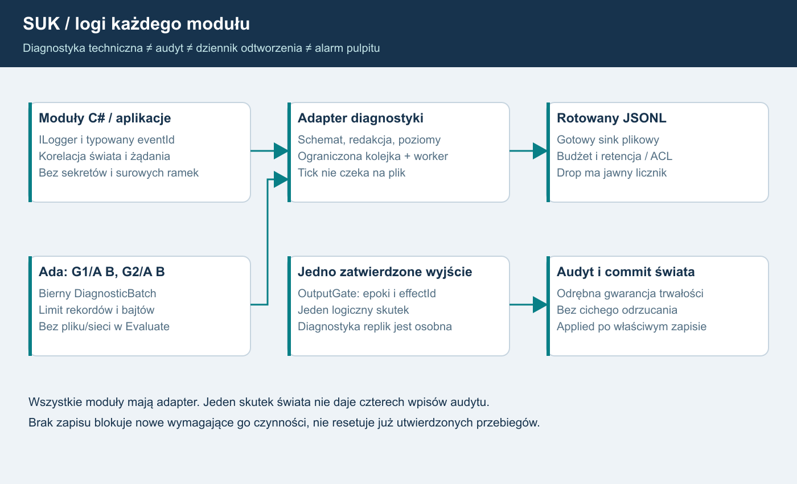
Opis dla AI: moduły C# emitują typowane zdarzenia; cztery konteksty Ada oddają ograniczoną bierną diagnostykę. Adapter nadaje zaufany kontekst, redaguje i przekazuje do bounded queue. Osobny worker zapisuje rotowany JSONL. Straty diagnostyki są liczone. Jedno OutputGate daje jeden logiczny skutek i odrębny wymagany trwały audyt/commit, którego nie wolno odrzucać jak diagnostyki. Awaria rejestru blokuje nowe wymagające go działania, bez resetowania autonomicznego dozoru wcześniej zatwierdzonego stanu.26. Jedno małe zadanie na osobny czat
Plan 1.8 | 90 zadań w28 etapach nadrzędnych | wszystkie zaplanowane.
Pakiet startowy
Wybierz jedno ID z tabeli i skopiuj jego gotowy prompt. Czat otrzymuje własną kartę, AI_START, odpowiednią kartę nadrzędną, wyłącznie wskazane dokumenty/sekcje oraz raporty i artefakty zależności. Nie potrzebuje historii rozmowy ani całego PDF. Pliki czaty/ opisują wejścia, aktualne źródła i kryteria; prompty_czatow/ zawierają tekst gotowy do wklejenia. Minimalny zestaw mieści się zwykle w5–6 dokumentach, czytanych w sekcjach właściwych zadaniu. Przy dużym pliku czytaj wymienioną klasę/kontrakt, nie cały katalog. Zależności planned nie są gotowe.
Zależności i odbiór
Pierwsze zadanie etapu zależy od końcowych zadań etapów nadrzędnych; następne od odebranego poprzednika. S02A2 i S02A3 tworzą niezależne łańcuchy od tego samego S02A1.04, bez połączenia A↔B; integrator czeka na oba. S03 może rozwijać się równolegle po swoich zależnościach, S18/S19 pozostają finałem. Czat kończy po swoim ID. Gdy zakres okaże się większy niż kontekst, zapisuje częściowy raport z dokładnym miejscem i dowodami, a nie uznaje całości za gotową. Kontynuacja zachowuje ten sam ID, dopóki kryteria nie zostaną odebrane. Nie zależymy od niegotowych modułów downstream w testach wczesnych kontraktów: jawny stub/harness nie zalicza realnego urządzenia lub kanału.
Rejestr zadań
| ID/karta | Jedyny cel | Wymagane zadania | Prompt |
|---|---|---|---|
| S00.01 | Inwentaryzacja i źródła | brak | start |
| S00.02 | Pomiar odniesienia | S00.01 | start |
| S00.03 | Kontrakty i profile | S00.02 | start |
| S01.01 | Fundament logów | S00.03 | start |
| S01.02 | Rdzeń bez WPF | S01.01 | start |
| S01.03 | Migracja runtime | S01.02 | start |
| S02.01 | Host świata | S01.03 | start |
| S02.02 | Adapter singleplayer | S02.01 | start |
| S02.03 | Tryb usługi i ograniczenia | S02.02 | start |
| S02A.01 | Mapa własności | S02.03 | start |
| S02A.02 | Zamrożone wejście cyklu | S02A.01 | start |
| S02A.03 | Bierny plan i pojedyncze wyjście | S02A.02 | start |
| S02A.04 | Kontekst operatora i adapter ruchu | S02A.03 | start |
| S02A1.01 | Neutralna specyfikacja źródeł | S02A.04 | start |
| S02A1.02 | Kontrakt danych i ABI | S02A1.01 | start |
| S02A1.03 | Katalog przypadków | S02A1.02 | start |
| S02A1.04 | Stub i zamrożenie pakietu | S02A1.03 | start |
| S02A2.01 | Własny kontekst i cykl życia | S02A1.04 | start |
| S02A2.02 | Statusy i polecenia urządzeń | S02A2.01 | start |
| S02A2.03 | Przebiegi i utwierdzenia | S02A2.02 | start |
| S02A2.04 | Blokady, timery i sąsiad | S02A2.03 | start |
| S02A2.05 | Odbiór i zamrożenie wariantu | S02A2.04 | start |
| S02A3.01 | Własny kontekst i cykl życia | S02A1.04 | start |
| S02A3.02 | Statusy i polecenia urządzeń | S02A3.01 | start |
| S02A3.03 | Przebiegi i utwierdzenia | S02A3.02 | start |
| S02A3.04 | Blokady, timery i sąsiad | S02A3.03 | start |
| S02A3.05 | Odbiór i zamrożenie wariantu | S02A3.04 | start |
| S02A4.01 | Zamrożenie wejść integracji | S02A2.05, S02A3.05 | start |
| S02A4.02 | Porównanie i adapter | S02A4.01 | start |
| S02A4.03 | Migracja i zamknięcie | S02A4.02 | start |
| S02B.01 | Konteksty grup | S02A4.03 | start |
| S02B.02 | Kwalifikacja kanałów | S02B.01 | start |
| S02B.03 | Dystrybucja i odbiór | S02B.02 | start |
| S02C.01 | Synchronizacja i rebuild | S02B.03 | start |
| S02C.02 | Losowanie i selektor | S02C.01 | start |
| S02C.03 | Przełączenie i fencing | S02C.02 | start |
| S02D.01 | Ręczny profil transmisji | S02C.03 | start |
| S02D.02 | Usterki i diagnoza | S02D.01 | start |
| S02D.03 | Odbiór profilu | S02D.02 | start |
| S03.01 | Konto i trwały model | S00.03, S01.03 | start |
| S03.02 | Logowanie desktopowe | S03.01 | start |
| S03.03 | Klucz administratora | S03.02 | start |
| S04.01 | TLS i wersja sesji | S02D.03, S03.03 | start |
| S04.02 | Typowane komendy | S04.01 | start |
| S04.03 | Pełne migawki | S04.02 | start |
| S05.01 | Prawa i zakresy | S04.03 | start |
| S05.02 | Delegacja LCS | S05.01 | start |
| S05.03 | Obejścia i odbiór | S05.02 | start |
| S06.01 | Przekazanie i reconnect | S05.03 | start |
| S06.02 | Dziennik i granica trwałości | S06.01 | start |
| S06.03 | Restore i duplikaty | S06.02 | start |
| S07.01 | Zakres subskrypcji | S06.03 | start |
| S07.02 | Delty i baza | S07.01 | start |
| S07.03 | Wolny klient i budżety | S07.02 | start |
| S08.01 | Sankcje i ich zakres | S05.03, S06.03 | start |
| S08.02 | Prywatne minimum operacyjne | S08.01 | start |
| S08.03 | Statystyki i audyt | S08.02 | start |
| S09.01 | Model urządzeń | S05.03, S08.03 | start |
| S09.02 | Tekst przez urządzenie | S09.01 | start |
| S09.03 | Obsługa odmów i przerw | S09.02 | start |
| S10.01 | Prototyp istniejącego audio | S03.03, S09.03 | start |
| S10.02 | Prawa i klient obcy | S10.01 | start |
| S10.03 | Wybór i budżet | S10.02 | start |
| S11.01 | Połączenie urządzenia i audio | S10.03, S06.03 | start |
| S11.02 | Cofnięcie praw mediów | S11.01 | start |
| S11.03 | Odbiór łączności | S11.02 | start |
| S12.01 | Zaufanie i zgodność | S04.03, S03.03 | start |
| S12.02 | Pobieranie i instalacja | S12.01 | start |
| S12.03 | Odzyskanie wydania | S12.02 | start |
| S13.01 | Przegląd bramek | S07.03, S08.03, S09.03, S11.03, S12.03 | start |
| S13.02 | Obciążenie i degradacja | S13.01 | start |
| S13.03 | Odbiór pilota | S13.02 | start |
| S14.01 | Dane operatora algorytmicznego | S13.03 | start |
| S14.02 | Regułowy sąsiad | S14.01 | start |
| S14.03 | Powtarzalność i brak danych | S14.02 | start |
| S15.01 | Zmiana człowiek–algorytm | S14.03, S06.03 | start |
| S15.02 | Styczne singleplayera | S15.01 | start |
| S15.03 | Odbiór obsady | S15.02 | start |
| S16.01 | Scenariusze planisty | S15.03 | start |
| S16.02 | Ograniczony planista | S16.01 | start |
| S16.03 | Odbiór decyzji | S16.02 | start |
| S17.01 | Granice wielu światów | S13.03 | start |
| S17.02 | Usługi współdzielone | S17.01 | start |
| S17.03 | Pomiar wzrostu | S17.02 | start |
| S18.01 | API i kontrakty panelu | S16.03, S17.03 | start |
| S18.02 | Aplikacja i klucz urządzenia | S18.01 | start |
| S18.03 | Cykl życia i odbiór | S18.02 | start |
| S19.01 | Model nadzoru okręgu | S18.03 | start |
| S19.02 | Koordynacja | S19.01 | start |
| S19.03 | Odbiór finału | S19.02 | start |
Raport jako wejście następnego czatu
Użyj SZABLON_PRZEKAZANIA. Dołącz HEAD przed/po, zakres autoryzacji, wersję planu, hash spec/ABI/danych, odebrane zależności, listę własnych zmian, logi i ścieżki wyników/braków. Build, testy, Git i wdrożenie są osobnymi polami. Nazwij następne ID i jego minimalne wejścia. Nie zastępuj dowodów opisem „działa”. F24 obowiązuje w każdym nowym module; fundament jest S01.01, a trwałość audytu/commit dojrzewa w S06.02. A/B mają dodatkowe prompty i izolację27.
Mapa kontekstu
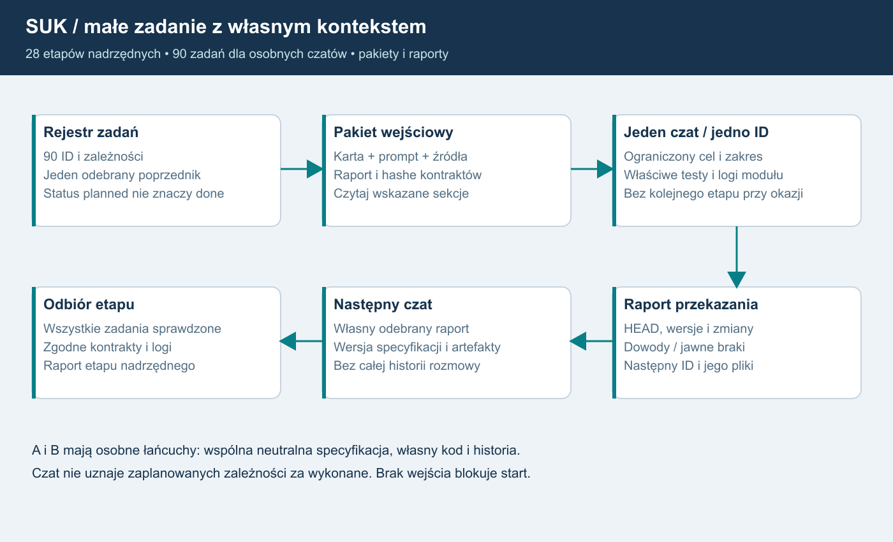
Opis dla AI: rejestr90 zadań prowadzi do karty i promptu jednego ID. Czat czyta wskazane źródła, odebrane raporty i kontrakty, wykonuje ograniczony zakres oraz testy/logi. Raport z hashami, dowodami i brakami jest wejściem następcy. Cały etap nadrzędny odbiera się po wszystkich jego zadaniach. A/B używają osobnych łańcuchów, bez wymiany algorytmów.Mały manifest jednego zadania
pakiety_czatow/ID.json zawiera tylko jedno zadanie, wspólne inwarianty, bezpośrednie zależności i hashe plików kontekstu. Nie wymaga wczytania całego manifest.json. Pliki raporty/ są przyszłymi wejściami i nie są pozornie tworzone jako ukończone.
27. Gotowe prompty niezależnych KZ
Plan 1.8 | Prompty przyszłej pracy, bez implementacji w tym zleceniu.
Jak uruchomić
Po odebraniu zależności otwórz odpowiedni plik, skopiuj cały blok text do nowego czatu i udostępnij wskazany pakiet. Jeden prompt realizuje jedno ID. Nie wklejaj całego PDF ani historii drugiej implementacji. Manifest.jobs i czaty/ID.md zawierają cel, wejścia, dowody i następny krok. Wszystkie zadania pozostają planned.
| ID | Cel | Gotowy prompt |
|---|---|---|
| S02A1.01 | Neutralna specyfikacja źródeł | S02A1.01 |
| S02A1.02 | Kontrakt danych i ABI | S02A1.02 |
| S02A1.03 | Katalog przypadków | S02A1.03 |
| S02A1.04 | Stub i zamrożenie pakietu | S02A1.04 |
| S02A2.01 | Własny kontekst i cykl życia | S02A2.01 |
| S02A2.02 | Statusy i polecenia urządzeń | S02A2.02 |
| S02A2.03 | Przebiegi i utwierdzenia | S02A2.03 |
| S02A2.04 | Blokady, timery i sąsiad | S02A2.04 |
| S02A2.05 | Odbiór i zamrożenie wariantu | S02A2.05 |
| S02A3.01 | Własny kontekst i cykl życia | S02A3.01 |
| S02A3.02 | Statusy i polecenia urządzeń | S02A3.02 |
| S02A3.03 | Przebiegi i utwierdzenia | S02A3.03 |
| S02A3.04 | Blokady, timery i sąsiad | S02A3.04 |
| S02A3.05 | Odbiór i zamrożenie wariantu | S02A3.05 |
| S02A4.01 | Zamrożenie wejść integracji | S02A4.01 |
| S02A4.02 | Porównanie i adapter | S02A4.02 |
| S02A4.03 | Migracja i zamknięcie | S02A4.03 |
Neutralna specyfikacja i dwa łańcuchy
S02A1.01–.04 przygotowuje źródła, kontrakt/ABI, przypadki i techniczny stub oraz zamrożony pakiet ReadyForAuthors. Brak wskazanego PDF Ie-1 lub niezatwierdzona interpretacja nie może zostać zastąpiona domysłem. Podpis/hash pliku nie jest zatwierdzeniem treści: potrzebny jest jawny odbiór specyfikacji. A realizuje S02A2.01–.05, B realizuje S02A3.01–.05. Można kontynuować własną linię w kolejnych czatach, przekazując raport i własny kod. Dwa pierwotnie oddzielne zespoły/linie autorskie nigdy nie dzielą historii algorytmu. Po zamrożeniu obu integrator wykonuje S02A4.01–.03; nie wybiera „głównego” algorytmu w razie rozbieżności. Losowaniu podlega grupa1/2, nie program A/B.
Izolacja i dostęp
Autorzy dostają identyczny neutralny manifest z hashami: zatwierdzone źródła/reguły, definicje danych i przypadki oraz ABI, bez pseudokodu tłumaczącego stary C#. Przyszły zespół specyfikacji przygotuje osobne pakiety robocze i zatwierdzone instrukcje źródłowe dla autorów. Bieżąca dokumentacja nie jest tym pakietem. Folder i nazwa czatu nie ograniczają odczytu; udostępnianie i uprawnienia środowiska trzeba rzeczywiście ograniczyć i odnotować. Jeżeli odziedziczone AGENTS/ROZWOJ wymuszają ujawnienie referencyjnego algorytmu, autor nie rozpoczyna w takim worktree; integrator przygotowuje zgodne środowisko zamiast ukrywać konflikt. Przypadkowy dostęp zgłasza się przed dalszą pracą i ocenia wpływ/odtworzenie czystego zadania. Nie deklarujemy certyfikowanej niezależności ani SIL.
Logi, wynik i kontynuacja
Każdy wariant zwraca DiagnosticBatch25 z limitem, bez pliku, sieci, bazy i callbacku loggera w Evaluate. W grupach1/2 działają oba programy: cztery prywatne stany, jeden fizyczny świat i jedno źródło zatwierdzonego skutku. Wspólny kod kontraktu nie może ukrywać wspólnego silnika reguł. Raport każdego zadania zawiera wejścia, hash specyfikacji, własne artefakty, wyniki testów i braki; integrator otrzymuje zamrożone hashe dopiero po zakończeniu obu linii. Kontynuacja: A, B.
Autorzy A/B rozpoczynają od AI_START_AUTOR_KZ.md. Pełny AI_START i jego nakazy czytania02/19/24 dotyczą pozostałych ról. Konflikt nadrzędnych instrukcji wymaga przygotowania zgodnego środowiska, nie jest ignorowany.
28. Końcowy przegląd planu1.8
Plan 1.8 | 17.10.2026 | audyt dokumentacji, bez implementacji.
Zakres i wynik korekty
Sprawdzono 37 wymagań R01–R13/F01–F24.28 etapów nadrzędnych rozpisano na90 małych zadań z osobnymi kartami i promptami oraz pełnym DAG.17 gotowych promptów KZ obejmuje4 kroki specyfikacji, po5 kroków A/B i3 integracji. Podział nie jest dowodem ukończenia żadnego etapu: wszystkie statusy pozostają planned.
Znalezione i poprawione braki
- Wcześniejsze28 kart miało wiele podkroków na kartę; teraz jednostką wykonania jest jedno ID z manifest.jobs z jawnymi wejściami, dowodami i następcą.
- Szablony KZ nie były kompletem promptów dla małych zadań. Nowe pliki zawierają gotowy tekst startowy, izolację, bramkę źródeł/hash i konkretne wyjście.
- Nazwa czatu i inny folder nie izolują źródeł. Autor A/B wymaga czystego pakietu i zatwierdzonych instrukcji; sprzeczne AGENTS lub ujawnienie starego algorytmu blokują dany start zamiast prowadzić do potajemnego odczytu.
- Pamięciowy Rejestrator i bledy.log nie zapewniają trwałego audytu ani logów wszystkich modułów.25 określa gotowy stos, schemat, bounded diagnostic batch Ada i kolejki, redakcję, retencję oraz osobne gwarancje audytu i replay.
- Wczesny kontrakt nie wymaga gotowych przyszłych kanałów: sprawdza go stub/harness, a realne cztery konteksty są odbierane później.
- Sam status Applied w tekście diagnostycznym nie dowodzi trwałości. S06 ma osobną bramkę commit/checkpoint; awaria logowania nie resetuje utwierdzonych przebiegów.
- Ogólny zakaz kopii dokumentacji w repo wymagał wyjątku po odpowiedzi właściciela: końcowy katalog to D:\Projects\SUK. Zastany PDF zachowano przed zastąpieniem, bez git add/commit/push. Plik worktree C: pozostaje nietknięty.
Niezmienniki i pozostałe bramki
Każdy posterunek ma własny KZ. Obie grupy1/2 wykonują niezależne Ada A+B, cztery prywatne stany, jeden teren/ruch i jedno wyjście. Losuje się grupę1/2 przy starcie świata po Ready, nie algorytm A/B ani przy reconnect. LCS po oddaniu ma podgląd bez sterowania. Ruchowe AI jest własnym algorytmem, bez LLM. Admin ma osobny WPF i lokalny prywatny klucz CNG/TPM; serwer dostaje publiczny. Pełny S18 i nadzorczy S19 są finałem. Minimum moderacji i ochrona starego wejścia Komputerowni N42/O20 poprzedzają pilot. Nie dopowiadamy reguł srk ani danych zależności. Brak wskazanego PDF Ie-1 nadal jest bramką odpowiedniego zakresu specyfikacji. Macierz90 zadań i17 promptów nie oznacza, że neutralna specyfikacja lub źródła Ada już istnieją.
Kontrola artefaktów
Sprawdzane automatycznie: DAG etapów i zadań, pokrycie wszystkich28 etapów, brak zależności A↔B, zgodność kart/promptów i hashy, kompletność odsyłaczy, poprawność SVG i JSON, tekst/granice PDF oraz niezmienność źródeł. Wizualne oględziny najnowszych PNG są osobnym krokiem. Wyniki zapisuje RAPORT_WERYFIKACJI.json; same słowa tego rozdziału nie potwierdzają wykonania przyszłych testów symulatora. Końcowa kopia ma porównane hashe z kanoniczną.
Korekty po niezależnym przeglądzie
Usunięto konflikt pełnego AI_START z izolacją A/B: jest neutralny AI_START_AUTOR_KZ i jawny wyjątek ról. Dodano90 małych manifestów pakiety_czatow/ID.json, aby nie wymagać odczytu rejestru wszystkich zadań. Fundament logowania jest S01.01 przed nowymi modułami; nazwy indeksu sprawdzono po zmianie kolejności.
Instrukcja dla AI rozpoczynającej etap SUK
To dokument planowania. Nie wykonuj implementacji tylko dlatego, że odczytałeś kartę. Aktualna praca właściciela zakazuje zmian kodu, commitów i push. Właściciel wyraźnie zlecił końcową kopię dokumentacji do D:\Projects\SUK. Do wdrożenia etapu potrzebne jest osobne zlecenie. Samo zlecenie implementacji nadal nie oznacza zgody na publikację lub zapis Git.
Wyjątek autorów KZ A/B
Autor S02A2/S02A3 czyta wyłącznie AI_START_AUTOR_KZ.md i zatwierdzony neutralny pakiet. Dalsze obowiązki lektur02/19/24/pełnego źródłowego ROZWOJ w tej instrukcji dotyczą autora specyfikacji, integratora i pozostałych ról, nie autorów A/B. Nie jest to uchylenie nadrzędnych instrukcji: sprzeczne środowisko wymaga poprawnego pakietu przed startem.
Minimalny pakiet kontekstu
- Odczytaj bieżącą prośbę właściciela.
- Przeczytaj AGENTS.md, CLAUDE.md, odpowiednie sekcje ROZWOJ.md i aktualny stan repo.
- Przeczytaj 00_START.md, pakiety_czatow/ID.json i jedną kartę czaty/ID.md. Nie wczytuj całego manifestu; pakiet zawiera wybrane jobs[ID], inwarianty i bezpośrednie zależności.
- Dociągnij tylko dokumenty i pliki kodu wymienione w tej karcie.
- Sprawdź zależności: ich status musi być potwierdzony raportem poprzedniego wykonawcy i kodem, nie samym planem.
- Zapytaj tylko o nierozstrzygniętą decyzję blokującą bieżący krok. Nie pytaj ponownie o Windows, nazwę i 20-40 graczy.
- Zrób pomiar odniesienia i jeden mały podkrok. Nie rozszerzaj go na dalsze etapy.
Niezmienne
SUK jest ogólnym symulatorem. Nazwy stacji należą do danych. station.json właściciela jest chroniony; testy na kopii. Człowiek projektuje zależności i zobrazowanie. Pulpit rysuje zobrazowanie, KZ liczy z układu. Ruch i KZ multiplayera są autorytatywne na serwerze. Singleplayer używa tego samego rdzenia, AI tylko na stycznych. Bez domyślnych uprawnień dla nieznanego celu.
Nie utożsamiaj Identyfikatora wersji klienta z dowodem uczciwości. Nie scalaj delt przez zgubienie ich baz. Nie przenoś czekania na sieć/DB do ticku. Nie zapisuj tokenów i haseł w dokumentacji.
Konflikty do odnotowania
AGENTS i CLAUDE wskazują już aktualną regresję; --edtest/fuzz/dfuzz pozostały tylko w historycznym §4 PODZIAL_MODULOW. S00 mierzy aktualną bramkę po nowych kartach/KZ/PIP. Starszy PODZIAL_MODULOW wymaga commitów, lecz nowsza prośba właściciela zabrania ich. Nie aktualizuj ROZWOJ w trakcie planowania. Przy implementacji ponownie zweryfikuj polecenia i uzgodniony zakres.
Przekazanie po podkroku
Zapisz poza Git, w raporcie etapu:
- etap/podkrok, data, stan Ukończony/Częściowy/Zablokowany i wersja planu;
- HEAD przed/po i lista rzeczywiście zmienionych plików, bez sekretów;
- spełnione wymagania i kryteria, polecenia testów i ścieżki wyników;
- znane błędy, czego nie przetestowano, otwarte decyzje;
- zmiany kontraktów i zgodność;
- dokładny następny mały krok i minimalne pliki do przeczytania;
- osobno: build, testy, commit/push, deployment i weryfikacja uruchomionej usługi.
Użyj wzoru SZABLON_PRZEKAZANIA.md. Statusy w manifest.json w chwili wydania planu wszystkie oznaczają „zaplanowany”; nie traktuj ich jak realizacji.
Nowe wymaganie nadrzędne F14
Każdy posterunek ma własny moduł KZ. „Jeden autorytatywny świat” oznacza wspólny serwer, czas i fizykę, nie globalny komputer zależności. Przeczytaj 16_KZ_KAZDEGO_POSTERUNKU.md przy etapach S01-S07, S13 i rozwoju AI. Nie klonuj całego Simulator wraz z pociągami per posterunek. LCS agreguje wiele KZ.
F15 jest rozstrzygnięte: po oddaniu sterowania dyżurny LCS zachowuje ViewGrant i traci ControlLease do posterunku. Nie proponuj utraty podglądu jako „prostszego” wariantu. Wczytaj rozdział 17 przy S05-S07/S13. Samo oglądanie, pozycja nadzorcy ani reconnect nie przywraca sterowania.
Korekta po audycie źródeł - wersja 1.3
F16: każdy pełny KZ ma dwie obliczające grupy, zasadniczą i gorącą rezerwę. Nie odraczać do HA/AI/rozwoju po pilocie. Dla S02A-S02D i zmian cyklu/restore przeczytać 18 i 19. Rozróżniać zestawy EBILock, kanały wewnętrzne, serwery EBISCREEN i 2z2 MOR-3.
Nie wywołuj starego Tick dwa razy nad wspólnymi urządzeniami. Obliczenia bez skutków → selektor → karty → jeden teren/ruch. Nie projektuj nowych reguł srk. Zrealizuj zatwierdzoną funkcję w dwóch niezależnych implementacjach Ada według zamrożonej specyfikacji. Wspólne są kontrakty i infrastruktura, nie kod algorytmów zależnościowych.
Aktualne decyzje PODZIAL_MODULOW §7 obowiązują: brak zapasowych włókien i automatycznego obniżania sygnałów, zaakceptowane opóźnienie cyklu, manewry według sygnałów później, rozprucie i utrata kontroli zgodnie z ustaleniami. Stare notatki nie przywracają odrzuconych pomysłów. Patrz 19.
F17: znaczenie AI w funkcjach SUK
Automatyczny dyżurny i planista ruchu to autorski algorytm oparty na danych, regułach i automatach stanów, rozwijany na istniejącym Otoczenie/Rozklad. Nie implementuj LLM, agenta LLM, API modelu językowego ani awaryjnego odwołania do modelu do prowadzenia ruchu. To obowiązuje serwer i singleplayer offline, odpowiedzi proceduralne oraz wybór krzyżowania/wyprzedzania.
Algorytm odbiera jawne dane i meldunki dostępne jego roli, wybiera działanie według wersjonowanych reguł i przekazuje zwykłe polecenie przez prawa/KZ. Zapisuje przyczynę i wejścia do odtworzenia. STT/TTS, jeżeli później zlecone, są osobną warstwą audio bez władzy decyzyjnej. „AI” jako adresat tego dokumentu oznacza narzędzie programistyczne; nie jest technologią operatora SUK.
Nowe ustalenia 1.5 - technologia i niezależność
KZ przepisujemy na Ada. Nie proponuj powrotu do wspólnego silnika C# jako docelowego uproszczenia. Reszta aplikacji pozostaje C#/.NET. Przeczytaj 20 i 23. Ada nie zastępuje algorytmu ruchu F17 i nie zmienia zakazu LLM.
Autor wariantu A wykonuje tylko S02A2 w osobnym nowym czacie; autor B tylko S02A3 w drugim nowym czacie. Obaj otrzymują tę samą zamrożoną specyfikację/ABI/dane/scenariusze. Nie wczytują kodu, patchy ani historii implementacji drugiego. Po zamrożeniu obu hashy integrator S02A4 może porównać wyniki i kod. Nie tworzymy teraz tych czatów ani implementacji: przygotowujemy instrukcje dla przyszłych zleceń.
W każdej grupie 1/2 uruchom A+B, nie kopiuj A do drugiego kanału. Losuj aktywną grupę per posterunek przy starcie świata po Ready i zapisz wybór. Nie losuj przy ponowieniu/reconnect/przekazaniu. S18 pełny admin i S19 dyspozytor są końcowymi etapami; minimalne S08 nadal poprzedza publiczny pilot.
Doprecyzowanie 1.6
F23: osobny SUK.Admin WPF i prywatne API, konto ORAZ indywidualny klucz ORAZ kompetencja. EXE nie jest sekretem. ZATWIERDZONE przez właściciela 17.10.2026: prywatny klucz powstaje lokalnie na komputerze administratora, preferencyjnie niewyeksportowalny CNG/TPM; serwer otrzymuje publiczny klucz i wydaje certyfikat. Nie otwieraj ponownie wyboru miejsca generowania i nie implementuj serwerowego wydawania prywatnego klucza. Czytaj 21. Użyj sprawdzonego mTLS/token binding biblioteki po prototypie, nie własnych podpisów komend. S03/S08 przygotowują infrastrukturę N41A przed S13; pełny WPF/N41B pozostają w S18. Granice KZ/Ada i końcowy S19 bez zmian.
Bieżący punkt startu aplikacji - 1.7
Przeczytaj 24_POROWNANIE_Z_NOWA_WERSJA i aktualny 02. Baza to 5eddb5c; 0-7/9/10 w podziale aplikacji są już obecne w źródłach, w tym KZ jako klasa, system nadrzędny, PIP i karty. Nie pisz ponownie tych modułów. S02A jest odbiorem i domknięciem pozostałych granic, a nie zleceniem ich nowej implementacji. Jeden KZ całego Station nadal nie spełnia per-posterunek/Ada/grup. Krok 8 odłożony; jego przejściowy adapter nie może sięgać do prywatnych kontekstów A/B.
AGENTS i CLAUDE są już zgodne co do aktualnych testów. S00 musi dopiero zmierzyć nową bazę; wyniki opisane w repo nie są testami tego audytu. Nowy N42/O20 blokuje pozostawienie starego serwisowego wejścia bez autoryzacji. Brak wskazanego PDF Ie-1 jest jawną bramką źródłową, nie zaproszeniem do wymyślania reguł. Zastany PDF bieżącego worktree C:\Users\JohnE.codex\worktrees\3315\SUK pozostaje nietknięty. Właściciel później zlecił zastąpienie kopii planu w D:\Projects\SUK po kontroli; poprzedni PDF zachowano poza repo. Nie wykonuje się git add/commit/push. Wszystkie wcześniejsze decyzje właściciela pozostają w mocy.
Start po podziale 1.8
Rozdział26 i manifest.jobs są właściwym poziomem wykonania. Wybierz jedno ID zadania, przeczytaj czaty/ID.md i prompty_czatow/ID.md. Stara karta etapu jest opisem nadrzędnym, nie poleceniem wykonania wszystkich jej podkroków naraz. Nie wczytuj całego PDF ani całego katalogu kodu do jednego czatu. Raporty i artefakty zależności muszą istnieć; planned nie oznacza ready lub done. S02A2 i S02A3 to osobne linie A/B; nowy czat kontynuuje wyłącznie własny wariant. Prompty27 wskazują dozwolony neutralny pakiet i zakazane źródła. Samo otwarcie całego repo lub drugiego wariantu łamie izolację nawet przy innej nazwie czatu. F24: każdy nowy moduł otrzymuje adapter logów, wersjonowane pola i próby limitów/redakcji według25. Ada zwraca pasywną ograniczoną diagnostykę do hosta; nie zapisuje pliku ani nie wykonuje callbacku I/O w Evaluate. Log techniczny nie zastępuje trwałego audytu/commit journal. Brak logów jest niespełnionym kryterium etapu.
S00. Pomiar odniesienia i kontrakty
Status: ZAPLANOWANY | plan 1.8, 17.10.2026
Start nowego czatu
Przeczytaj AI_START.md oraz bieżące AGENTS.md, CLAUDE.md i właściwe sekcje ROZWOJ.md. Ta karta nie jest zgodą na implementację ani zapis Git. Wymagane osobne zlecenie właściciela. Nie zmieniaj station.json.
Cel i zależności
Zatwierdzony zakres pierwszej wersji, aktualna bramka regresji, kontrakty i środowisko pomiaru. Zależności: brak - sprawdź rzeczywisty kod i raporty zakończenia. Minimalne dokumenty: 02_STAN_OBECNY.md, 11_TESTY_I_OPERACJE.md, 13_DECYZJE_I_RYZYKA.md. Kod i źródła do odczytu: AGENTS.md; CLAUDE.md; ROZWOJ.md; README.md; PODZIAL_MODULOW.md; PLAN_EDYTOR_UT.md; App.xaml.cs; csproj.
Małe podkroki
A: inwentaryzacja aktualnych zmian i trybów testu. B: wynik odniesienia na kopii oraz dzienniki scenariuszy. C: decyzje D09 i katalog kontraktów/wymagań. Każdy podkrok może być osobnym czatem. Zatrzymaj zakres na jednym weryfikowalnym wyniku, zapisując raport kontynuacji.
Gotowe, gdy
Potwierdzone aktualne polecenia testowe; zachowany wynik 25/26 i 4/4 albo udokumentowana różnica; test nowego edytora 0 błędów; zapis parametrów PC/hosta, wersji runtime i danych. Stosuj także właściwą bramkę regresji z 11_TESTY_I_OPERACJE.md. Każdy wynik musi mieć ścieżkę do logu, zrzutu lub metryki; sama deklaracja nie jest dowodem.
Poza zakresem i decyzje
Nie przywracaj starego edytora i nie poprawiaj station.json. Propozycje korekt AGENTS zapisz do decyzji, nie zmieniaj podczas samego planowania. Decyzje potrzebne w tym etapie: D09. AGENTS i CLAUDE już zgodne; historyczne polecenia w starym PODZIAL_MODULOW nie są aktualną bramką.
Przekazanie
Raport bazowy, kopie wyników i rejestr kontraktów. Następnie tylko S01/A. Wypełnij SZABLON_PRZEKAZANIA.md poza repo, podając faktyczny stan. Osobno opisz build/test, zapis Git, wdrożenie i działającą usługę. Czego nie sprawdzono, pozostaw jawnie niezweryfikowane.
Uzupełnienie 1.5
Przeczytaj konkretny stos 20. Zapisz i przypnij wersje .NET/nuget/DB; toolchain Ada ustala S02A1.
Nowa baza 1.7
Zamroź wynik odniesienia na 5eddb5c z rejestrem aktualnych danych: nowe karty, sygnały/zasilanie, kontrola KZ/PIP oraz scenariusze. Nie kopiuj dawnych liczb jako nowo wykonanych i nie porównuj ślepo dziennika sprzed kart. Komputerownia/test aktywnego przebiegu i właściwe buildy aplikacji tylko gdy zakres wymaga. Rejestr źródeł: ZRODLA_KONTROLA_1_7.json; porównanie: rozdział 24.
Zadania dla osobnych czatów - 1.8
Każde ID ma własny prompt i odbiór. Nowy moduł wymaga F24/25: logger, korelacja, limity i redakcja. Nie uruchamiaj wszystkich podkroków w jednym czacie.
S01. Wydzielony rdzeń i wspierany runtime
Status: ZAPLANOWANY | plan 1.8, 17.10.2026
Start nowego czatu
Przeczytaj AI_START.md oraz bieżące AGENTS.md, CLAUDE.md i właściwe sekcje ROZWOJ.md. Ta karta nie jest zgodą na implementację ani zapis Git. Wymagane osobne zlecenie właściciela. Nie zmieniaj station.json.
Cel i zależności
Biblioteka rdzenia używana przez obecny pulpit, gotowa do pracy bez okna; migracja do .NET 10. Zależności: S00 - sprawdź rzeczywisty kod i raporty zakończenia. Minimalne dokumenty: 02_STAN_OBECNY.md, 03_ARCHITEKTURA.md, 09_AKTUALIZACJE.md. Kod i źródła do odczytu: Sim/Session.cs; Model/Station.cs; Sim/Trains.cs; Sim/RealTimetable.cs; Simulator.cs; csproj; zatwierdzony PODZIAL_MODULOW.
Małe podkroki
A: neutralna geometria/kolory i jawne ścieżki/logger/zegar. B: przeniesienie rdzenia bez zmiany algorytmów. C: .NET 10 i aktualizacja wyłącznie wymaganych zależności, test wspieranych Windows. Każdy podkrok może być osobnym czatem. Zatrzymaj zakres na jednym weryfikowalnym wyniku, zapisując raport kontynuacji.
Gotowe, gdy
Selftest i dzienniki zgodne z bazą; scenariusze bez regresji; UI nadal działa przez ILcsSession; brak referencji WPF w wydzielonym rdzeniu; wspierany runtime. Stosuj także właściwą bramkę regresji z 11_TESTY_I_OPERACJE.md. Każdy wynik musi mieć ścieżkę do logu, zrzutu lub metryki; sama deklaracja nie jest dowodem.
Poza zakresem i decyzje
Nie dokonuj przy okazji nowych zmian kart, manewrów, sygnałów ani kolejności ticku. Nie utożsamiaj modelu nowego UT z obecnym Station. Decyzje potrzebne w tym etapie: Brak nowej decyzji domenowej przy czystym wydzieleniu; ujawniona zmiana zachowania zatrzymuje dany podkrok.
Przekazanie
Mapa przeniesień, testy różnicowe i wersje pakietów; następnie S02/A. Wypełnij SZABLON_PRZEKAZANIA.md poza repo, podając faktyczny stan. Osobno opisz build/test, zapis Git, wdrożenie i działającą usługę. Czego nie sprawdzono, pozostaw jawnie niezweryfikowane.
F14: własny KZ posterunku
Obowiązkowy podkrok: wydziel prywatny KzContext per posterunek z obecnych algorytmów, po zatwierdzeniu D15; lokalne zależności i stany nie mogą pozostać wspólnymi słownikami. Oddziel to od neutralizacji WPF i migracji runtime, aby każdy krok miał własny pomiar. Minimalny kontekst: 16_KZ_KAZDEGO_POSTERUNKU.md.
Dalsze małe podkroki: D - zatwierdzona mapa postId/kzId/ownerKzId; E - lokalne stany InterlockingInstance bez nowych reguł; F - adapter pulpitu i test różnicowy. Każdy sterowany obiekt ma dokładnie jednego właściciela. Sprawdź routeUid i Pending, które dziś są globalne.
F16 - obowiązkowe dwie grupy
Własny KzContext nie zalicza jeszcze F16; obowiązkowe S02A-S02D po bazowym hoście. Dodatkowy minimalny kontekst: rozdziały 18 i 19.
Uzupełnienie 1.5
Wydzielany rdzeń C# jest warstwą terenu/hosta i bazą migracji. KZ docelowo Ada; jego niezależne implementacje realizują S02A1-S02A4.
Zadania dla osobnych czatów - 1.8
Każde ID ma własny prompt i odbiór. Nowy moduł wymaga F24/25: logger, korelacja, limity i redakcja. Nie uruchamiaj wszystkich podkroków w jednym czacie.
S02. Host świata Windows i singleplayer
Status: ZAPLANOWANY | plan 1.8, 17.10.2026
Start nowego czatu
Przeczytaj AI_START.md oraz bieżące AGENTS.md, CLAUDE.md i właściwe sekcje ROZWOJ.md. Ta karta nie jest zgodą na implementację ani zapis Git. Wymagane osobne zlecenie właściciela. Nie zmieniaj station.json.
Cel i zależności
Proces świata bez okna oraz lokalny adapter singleplayera na tym samym rdzeniu. Zależności: S01 - sprawdź rzeczywisty kod i raporty zakończenia. Minimalne dokumenty: 03_ARCHITEKTURA.md, 10_ZASOBY_I_SKALOWANIE.md, 11_TESTY_I_OPERACJE.md. Kod i źródła do odczytu: Simulator.Tick; MainWindow timer; Session; Meldunki; Net/LcsNet; ścieżki danych/scenariuszy.
Małe podkroki
A: jedna kolejka i monotonny zegar. B: Generic Host/Windows Service i lokalne IPC z ACL. C: LocalSession używa tego samego hosta cyklu i działa offline. Każdy podkrok może być osobnym czatem. Zatrzymaj zakres na jednym weryfikowalnym wyniku, zapisując raport kontynuacji.
Gotowe, gdy
Ten sam scenariusz daje zgodne zdarzenia; UI/serwis nie mają konkurencyjnych mutacji; zatrzymanie odbiorcy IPC nie blokuje ticku; start po restarcie Windows bez logowania interaktywnego; singleplayer bez Internetu. Stosuj także właściwą bramkę regresji z 11_TESTY_I_OPERACJE.md. Każdy wynik musi mieć ścieżkę do logu, zrzutu lub metryki; sama deklaracja nie jest dowodem.
Poza zakresem i decyzje
Nie dodawaj osobnego publicznego transportu, serwera ani procesu per posterunek. Wewnętrzny kontrakt KZ-KZ jest obowiązkowy. Nie uzależniaj lokalnej gry od bazy kont. Decyzje potrzebne w tym etapie: Uzgodnione konto usługi, katalogi i limity z D09.
Przekazanie
Instrukcja start/stop i awarii usługi, metryki ticku, dowód offline; następnie S02A-S02D; S04 dopiero po S02D i S03. Wypełnij SZABLON_PRZEKAZANIA.md poza repo, podając faktyczny stan. Osobno opisz build/test, zapis Git, wdrożenie i działającą usługę. Czego nie sprawdzono, pozostaw jawnie niezweryfikowane.
Uzupełnienie odbioru po przeglądzie
Odbiór obejmuje sprawiedliwy budżet obsługi kolejki i limit wieku komendy bez zagłodzenia ticku.
F14: własny KZ posterunku
Host prowadzi wiele KZ w jednym świecie nad jedną warstwą terenu/ruchu. Wspólny zegar i ograniczone skrzynki KZ-KZ; żadnego pełnego Simulator/Trains per posterunek. Test A/B izoluje stany i logiczną usterkę jednego KZ. Minimalny kontekst: 16_KZ_KAZDEGO_POSTERUNKU.md.
Podziel hostowanie na rejestr instancji KZ, jawne fazy wymiany i scenariusz dwóch KZ z jednym pociągiem. Sprawdź identyczny skutek po zmianie kolejności rejestracji instancji albo udokumentuj wymagany harmonogram. Nie kopiuj BlockState obu końcom do niezależnego zapisu.
F16 - obowiązkowe dwie grupy
Po bazowym hoście wykonać S02A-S02D przed S04. Wewnętrzny kontrakt KZ-KZ jest obowiązkowy; bez publicznego serwera/transportu per stacja. Dodatkowy minimalny kontekst: rozdziały 18 i 19.
Zadania dla osobnych czatów - 1.8
Każde ID ma własny prompt i odbiór. Nowy moduł wymaga F24/25: logger, korelacja, limity i redakcja. Nie uruchamiaj wszystkich podkroków w jednym czacie.
S02A. Odbiór istniejących modułów i domknięcie granic
Status: ZAPLANOWANY | plan 1.8, 17.10.2026
Start i zależności
Przeczytaj AI_START, bieżące AGENTS/CLAUDE, ROZWOJ oraz 24_POROWNANIE_Z_NOWA_WERSJA. Karta nie upoważnia do implementacji/Git. station.json chroniony; próby na kopii. Zależności: S02 - potwierdź kodem i raportem. Minimalny kontekst: 02_STAN_OBECNY.md, 03_ARCHITEKTURA.md, 11_TESTY_I_OPERACJE.md, 18_EBILOCK_DWIE_GRUPY.md, 19_AUDYT_ZRODEL_I_ZALEZNOSCI.md. Kod: Sim/Kz/, Sim/Pulpit/, Sim/Urzadzenia/*, Sim/Simulator.cs, Sim/Trains.cs; PODZIAL_MODULOW §7-15.
Istniejąca baza i cel
Na 5eddb5c istnieją karty, zasilanie, system nadrzędny, PIP i fasada (kroki 5/6/6a/7/9/10). Nie implementować ich ponownie. Wciąż jeden KZ całego Station, mutable słowniki i bezpośrednie skutki. Cel: odebrać moduły, domknąć granice do Ada i grup, zachowując jeden teren.
Małe podkroki
A: nowa baza S00 i mapa właścicieli postId/kzId, sygnałów/ochrony i lokalnych końców blokad. B: niezmienny numerowany CycleInput, jawne fazy statusów i brak callbacków do prywatnych stanów. C: bierny OutputPlan, proponowane/zatwierdzone komendy, pojedynczy skutek przez bramkę również dla NN/AGR/ZeroLO i zdarzeń. D: jawny kontekst operatora zamiast globalnej podmiany, bez powielania parsera/Pending/PIP. E: zatwierdzona projekcja dla obecnego ruchu zamiast odwołań do przyszłych grup. Jeden sprawdzalny podkrok na zlecenie.
Gotowe, gdy
Obliczenie planu nie mutuje kart, terenu ani wspólnych rejestrów; każde zatwierdzone wyjście wykonuje się raz. Kontrakt rozsyłania identycznych wejść sprawdzono na testowych odbiorcach, bez wymagania gotowych implementacji Ada; kolejność słowników nie zmienia wyniku. Próbę rzeczywistych czterech kontekstów odbiera S02B. Karty/statusy są routowane do właściwych prywatnych KZ, bez współdzielonych mutable referencji. Rozstrzygnięto interfejsy między KZ i zachowano bazową kolejność/wyjątki albo jawnie odebrano różnicę. Scenariusze różnicowe i kontrole z rozdziału 11 są dowodem; w tym planie ich nie wykonano.
Granice i przekazanie
Krok 8 zachowania ruchu pozostaje odłożony; adapter nie jest zaliczeniem manewrów wg tarcz. Bez nowych reguł srk i automatycznego projektowania danych. Zachować decyzje właściciela z PODZIAL_MODULOW §7. D15-D17 dotyczą pozostałych granic/profili. Raport poza Git: kontrakty, hashe, wyniki/braki i dokładny następny mały krok. Po odbiorze S02A1; nie pisz obu algorytmów w tym czacie.
Zadania dla osobnych czatów - 1.8
Każde ID ma własny prompt i odbiór. Nowy moduł wymaga F24/25: logger, korelacja, limity i redakcja. Nie uruchamiaj wszystkich podkroków w jednym czacie.
S02A1. Ada: wspólna specyfikacja, toolchain i ABI
Status: ZAPLANOWANY | plan 1.8, 17.10.2026
Start i zależności
Osobne zlecenie właściciela jest wymagane do implementacji. Teraz tylko plan, bez Git. Przeczytaj AI_START, bieżące AGENTS/CLAUDE i właściwy zakres ROZWOJ. Chroniony station.json; testy na kopii. Zależności: S02A. Minimalny kontekst: 20_STOS_TECHNICZNY.md, 23_KZ_ADA_I_INTEGRACJA.md, pakiety_kontekstu/KZ_SPEC_START.md.
Cel
Zamrożony neutralny kontrakt oraz działający prototyp Ada-C# bez nowych reguł srk.
Małe podkroki
A: zakres domeny i neutralne specyfikacje/dane/scenariusze. B: GNAT/gprbuild Windows x64, techniczny stub bez reguł A/B, jedna DLL i most. C: inicjalizacja, wersjonowane ABI, ResultHandle/BufferTooSmall/Dispose/shutdown. D: zamrożenie kontraktu i pakietów kontekstu. Jeden sprawdzalny podkrok na zlecenie, z raportem kontynuacji i odczytem tylko potrzebnych źródeł.
Odbiór
N36: wersje/toolchain/ABI, układ rekordów, inicjalizacja, błędy, SafeHandle, bounded result copy i zamykanie. Hash specyfikacji zatwierdzony przed autorami A/B. Właściwa regresja z rozdziału 11_TESTY_I_OPERACJE. Logi, hashe, zrzuty i metryki stanowią dowód; w tej pracy ich nie wykonano.
Granice
Nie implementuj jeszcze wariantów A/B i nie projektuj zależności automatycznie. Język Ada jest ustalony; D20 dotyczy dokładnego kontraktu i toolchainu.
Przekazanie
SZABLON_PRZEKAZANIA poza Git: stan, wersja kontraktu, zmienione pliki, polecenia/wyniki, braki i dokładny następny mały krok. Oddziel build/test, Git, wdrożenie i rzeczywiście działającą usługę.
Dane i źródła nowej bazy - 1.7
Neutralna specyfikacja obejmuje hash sygnaly_ie1.json, dobór prędkość/następny sygnał/SBL i znaczenie VSet, po źródłowym odbiorze. Wskazanego PDF Ie-1 brak w bieżącym checkout; nie zamrażać niezweryfikowanego przypadku na podstawie samego JSON. Obecny C# jest referencją integratora, nie przepisem dla obu autorów A/B.
Zadania dla osobnych czatów - 1.8
Każde ID ma własny prompt i odbiór. Nowy moduł wymaga F24/25: logger, korelacja, limity i redakcja. Nie uruchamiaj wszystkich podkroków w jednym czacie.
S02A2. Ada: niezależna implementacja Kz_A
Status: ZAPLANOWANY | plan 1.8, 17.10.2026
Start i zależności
Osobne zlecenie właściciela jest wymagane do implementacji. Teraz tylko plan, bez Git. Przeczytaj AI_START_AUTOR_KZ i zatwierdzone neutralne instrukcje pakietu; konflikt z nadrzędnymi AGENTS/ROZWOJ zgłoś przed odczytem zakazanego materiału. Chroniony station.json; testy na kopii. Zależności: S02A1. Minimalny kontekst: 23_KZ_ADA_I_INTEGRACJA.md, pakiety_kontekstu/KZ_SPEC_START.md, pakiety_kontekstu/KZ_A_START.md.
Cel
Wariant A napisany w osobnym czacie z zatwierdzonej specyfikacji, bez kodu B.
Małe podkroki
A: model/timery/statusy. B: przebiegi/utwierdzenia/zwalnianie/ochrona. C: sygnały i blokady. Każdy mały podkrok pozostaje w tym samym niezależnym nurcie A, bez przejmowania logiki B. Jeden sprawdzalny podkrok na zlecenie, z raportem kontynuacji i odczytem tylko potrzebnych źródeł.
Odbiór
N37 w zakresie A: własne źródła i stany, zgodność wspólnych przypadków, brak zależności od implementacji B; raport i hashe zamrożone przed integracją. Właściwe neutralne przypadki/harness wariantu; pełną regresję aplikacji odbiera później integrator. Logi, hashe, zrzuty i metryki stanowią dowód; w tej pracy ich nie wykonano.
Granice
NOWY OSOBNY CZAT A. Nie czytaj kodu/patchy/historii B ani pełnego kodu starego C# jako przepisu. Dozwolona wspólna specyfikacja i źródła. Nie pisz jednocześnie B.
Przekazanie
SZABLON_PRZEKAZANIA poza Git: stan, wersja kontraktu, zmienione pliki, polecenia/wyniki, braki i dokładny następny mały krok. Oddziel build/test, Git, wdrożenie i rzeczywiście działającą usługę.
Zadania dla osobnych czatów - 1.8
Każde ID ma własny prompt i odbiór. Nowy moduł wymaga F24/25: logger, korelacja, limity i redakcja. Nie uruchamiaj wszystkich podkroków w jednym czacie.
S02A3. Ada: niezależna implementacja Kz_B
Status: ZAPLANOWANY | plan 1.8, 17.10.2026
Start i zależności
Osobne zlecenie właściciela jest wymagane do implementacji. Teraz tylko plan, bez Git. Przeczytaj AI_START_AUTOR_KZ i zatwierdzone neutralne instrukcje pakietu; konflikt z nadrzędnymi AGENTS/ROZWOJ zgłoś przed odczytem zakazanego materiału. Chroniony station.json; testy na kopii. Zależności: S02A1. Minimalny kontekst: 23_KZ_ADA_I_INTEGRACJA.md, pakiety_kontekstu/KZ_SPEC_START.md, pakiety_kontekstu/KZ_B_START.md.
Cel
Wariant B napisany w drugim osobnym czacie z tej samej specyfikacji, bez kodu A.
Małe podkroki
A: własny model/timery/statusy. B: własne przebiegi/utwierdzenia/ochrona. C: własna logika sygnałów i blokad. Nie stosuj zmiany nazw w kodzie A jako sposobu uzyskania B. Jeden sprawdzalny podkrok na zlecenie, z raportem kontynuacji i odczytem tylko potrzebnych źródeł.
Odbiór
N37 w zakresie B: własne źródła i stany, zgodność wspólnych przypadków, brak zależności od implementacji A; raport i hashe zamrożone przed integracją. Właściwe neutralne przypadki/harness wariantu; pełną regresję aplikacji odbiera później integrator. Logi, hashe, zrzuty i metryki stanowią dowód; w tej pracy ich nie wykonano.
Granice
NOWY OSOBNY CZAT B. Nie czytaj kodu/patchy/historii A ani pełnego starego C# jako przepisu. S02A2 nie jest zależnością B; obaj korzystają tylko z zamrożonego S02A1.
Przekazanie
SZABLON_PRZEKAZANIA poza Git: stan, wersja kontraktu, zmienione pliki, polecenia/wyniki, braki i dokładny następny mały krok. Oddziel build/test, Git, wdrożenie i rzeczywiście działającą usługę.
Zadania dla osobnych czatów - 1.8
Każde ID ma własny prompt i odbiór. Nowy moduł wymaga F24/25: logger, korelacja, limity i redakcja. Nie uruchamiaj wszystkich podkroków w jednym czacie.
S02A4. Ada: integracja, porównanie i migracja
Status: ZAPLANOWANY | plan 1.8, 17.10.2026
Start i zależności
Osobne zlecenie właściciela jest wymagane do implementacji. Teraz tylko plan, bez Git. Przeczytaj AI_START, bieżące AGENTS/CLAUDE i właściwy zakres ROZWOJ. Chroniony station.json; testy na kopii. Zależności: S02A2, S02A3. Minimalny kontekst: 20_STOS_TECHNICZNY.md, 23_KZ_ADA_I_INTEGRACJA.md, 18_EBILOCK_DWIE_GRUPY.md, 11_TESTY_I_OPERACJE.md.
Cel
Oba zamrożone warianty zintegrowane z jednym runtime i porównane ze specyfikacją oraz zaakceptowanym zachowaniem.
Małe podkroki
A: odczyt obu zamrożonych raportów, porównanie wyników. B: rozstrzygnięcie różnic przez specyfikację/właściciela, bez głosowania większością. C: jedna DLL z pakietami A/B/koordynatorem i jeden host; przygotowanie migracji; pełne włączenie runtime po S02B/C/D, bez zaliczania tutaj ich odbioru. D: regresja i awaria procesu natywnego. Jeden sprawdzalny podkrok na zlecenie, z raportem kontynuacji i odczytem tylko potrzebnych źródeł.
Odbiór
N36/N37 zaliczone; zgodne przyjęcia/odmowy, rozkazy, timery, zwolnienia i istotne zdarzenia. Brak pozornego drugiego kanału i produkcyjnego fallbacku C#. Właściwa regresja z rozdziału 11_TESTY_I_OPERACJE. Logi, hashe, zrzuty i metryki stanowią dowód; w tej pracy ich nie wykonano.
Granice
Dopiero po zamrożeniu obu wariantów integrator porównuje kod. Zachować jawny ślad pochodzenia, bez scalania obu algorytmów w jeden. Grupy i ich przełączanie są następnymi etapami.
Przekazanie
SZABLON_PRZEKAZANIA poza Git: stan, wersja kontraktu, zmienione pliki, polecenia/wyniki, braki i dokładny następny mały krok. Oddziel build/test, Git, wdrożenie i rzeczywiście działającą usługę.
Zadania dla osobnych czatów - 1.8
Każde ID ma własny prompt i odbiór. Nowy moduł wymaga F24/25: logger, korelacja, limity i redakcja. Nie uruchamiaj wszystkich podkroków w jednym czacie.
S02B. Dwie obliczające grupy każdego KZ
Status: ZAPLANOWANY | plan 1.8, 17.10.2026
Start nowego czatu
Przeczytaj AI_START, bieżące AGENTS, CLAUDE i właściwe sekcje ROZWOJ. Karta nie upoważnia do implementacji ani Git. Potrzebne osobne zlecenie właściciela. station.json chroniony; próby na kopii.
Cel i zależności
Group1/Group2 z prywatnym stanem i modelem kanałów, wspólnymi niemutowalnymi wejściami, jednym światem. Zależności: S02A4 - potwierdź kodem i raportem. Minimalny kontekst: 18_EBILOCK_DWIE_GRUPY.md, 19_AUDYT_ZRODEL_I_ZALEZNOSCI.md, 03_ARCHITEKTURA.md, 11_TESTY_I_OPERACJE.md. Kod/źródła: Poradnik s. 126 §1.5.8; EBILock_komputerownia §1-2; Ie-20 §6/ §7(12); rdzeń i karty S02A.
Małe podkroki
A: PostKz i dwie grupy Ada. B: Kz_A/Kz_B w każdej grupie oraz kontrola wyników. C: OutputPlan bez skutków i testy czterech prywatnych kontekstów. Jeden sprawdzalny wynik na czat. Zachować bazowe opóźnienia i decyzje właściciela z PODZIAL_MODULOW §7.
Gotowe, gdy
N25 i próba niezgodności kanałów: obie grupy naprawdę liczą; tożsamości stałe, role zmienne; prywatne stany; teren/ruch raz; ograniczenia realizmu opisane. Właściwa bramka regresji z rozdziału 11; logi i dane próby są dowodem. Plan nie zawiera wyników uruchomienia tych funkcji.
Granice i decyzje
Bez nowych reguł srk, automatycznego projektowania danych, nowego AI, protokołu producenta i deklaracji SIL. Nie kopiować terenu/Trains/parsera/PIP/praw do grup. D15/D16/D17 dotyczą nierozstrzygniętych szczegółów; własny KZ, dwie grupy i podgląd bez sterowania są ustalone.
Przekazanie
SZABLON_PRZEKAZANIA poza Git: stan, kontrakty, logi, hashe danych, wyniki, ograniczenia i następny mały krok. Build/test, Git, wdrożenie i działająca usługa to osobne fakty. Niezweryfikowane pozostaje jawne.
Uzupełnienie 1.5
Zależność: S02A4. Group1 i Group2 zawierają A/B napisane w Ada w osobnych czatach, z czterema prywatnymi stanami. Nie używaj wspólnego kodu C# dla kanałów.
Zadania dla osobnych czatów - 1.8
Każde ID ma własny prompt i odbiór. Nowy moduł wymaga F24/25: logger, korelacja, limity i redakcja. Nie uruchamiaj wszystkich podkroków w jednym czacie.
S02C. Synchronizacja, selektor i przełączenie
Status: ZAPLANOWANY | plan 1.8, 17.10.2026
Start nowego czatu
Przeczytaj AI_START, bieżące AGENTS, CLAUDE i właściwe sekcje ROZWOJ. Karta nie upoważnia do implementacji ani Git. Potrzebne osobne zlecenie właściciela. station.json chroniony; próby na kopii.
Cel i zależności
Gotowa rezerwa przejmuje wyjścia bez duplikacji; jawny rebuild, restart grupy i zapis. Zależności: S02B - potwierdź kodem i raportem. Minimalny kontekst: 18_EBILOCK_DWIE_GRUPY.md, 19_AUDYT_ZRODEL_I_ZALEZNOSCI.md, 03_ARCHITEKTURA.md, 11_TESTY_I_OPERACJE.md. Kod/źródła: Grupy/karty S02A/S02B; kolejka praw; snapshoty; testowe ZeroLO i blokady; Poradnik 126.
Małe podkroki
A: selektor/selectionEpoch i wspólne effectId oraz proponowany/zatwierdzony stan komendy. Decyzje Committed/Rejected trafiają do obu grup i logu. B: kwalifikacja Ready, snapshot+log i limity historii. C: przełączenie i błędy obu grup. D: checkpoint obu stanów, groupRunId/kzEpoch/worldRunId i test restore; prawa ponownie sprawdzone przy skutku na deterministycznym adapterze testowym. Pełny N33 z kontami/przekazaniem/banem dopiero po S05/S06/S08, przy odbiorze S13. Jeden sprawdzalny wynik na czat. Zachować bazowe opóźnienia i decyzje właściciela z PODZIAL_MODULOW §7.
Gotowe, gdy
N26-N31 i lokalna kontrola bramki praw: jedno źródło wyjść, stare plany odrzucone, ZeroLO raz, rebuild bez replay; wadliwa rezerwa nie Ready. Właściwa bramka regresji z rozdziału 11; logi i dane próby są dowodem. Plan nie zawiera wyników uruchomienia tych funkcji.
Granice i decyzje
Bez nowych reguł srk, automatycznego projektowania danych, nowego AI, protokołu producenta i deklaracji SIL. Nie kopiować terenu/Trains/parsera/PIP/praw do grup. D17 zatwierdza reakcję na brak obu grup przed właściwą próbą tego etapu; topologia transmisji dopiero w S02D. D15/D16/D17 dotyczą nierozstrzygniętych szczegółów; własny KZ, dwie grupy i podgląd bez sterowania są ustalone.
Przekazanie
SZABLON_PRZEKAZANIA poza Git: stan, kontrakty, logi, hashe danych, wyniki, ograniczenia i następny mały krok. Build/test, Git, wdrożenie i działająca usługa to osobne fakty. Niezweryfikowane pozostaje jawne.
Uzupełnienie 1.5
Domenowe porównanie/kwalifikacja/selektor jest w Ada, a C# OutputGate sprawdza prawa/epoki/effectId. Dodaj F22/N40: losowanie przy starcie per KZ po obu Ready, zapis i brak reroll przy reconnect/handover. Nie losuj jednego z kanałów A/B.
Zadania dla osobnych czatów - 1.8
Każde ID ma własny prompt i odbiór. Nowy moduł wymaga F24/25: logger, korelacja, limity i redakcja. Nie uruchamiaj wszystkich podkroków w jednym czacie.
S02D. Transmisja i diagnostyka profilu EBILock
Status: ZAPLANOWANY | plan 1.8, 17.10.2026
Start nowego czatu
Przeczytaj AI_START, bieżące AGENTS, CLAUDE i właściwe sekcje ROZWOJ. Karta nie upoważnia do implementacji ani Git. Potrzebne osobne zlecenie właściciela. station.json chroniony; próby na kopii.
Cel i zależności
Minimalny ręczny profil pętli/koncentratorów, kontroli sterowników i odrębnych usterek. Zależności: S02C - potwierdź kodem i raportem. Minimalny kontekst: 18_EBILOCK_DWIE_GRUPY.md, 19_AUDYT_ZRODEL_I_ZALEZNOSCI.md, 03_ARCHITEKTURA.md, 11_TESTY_I_OPERACJE.md. Kod/źródła: Poradnik 123-126/147; Ie-104 katalog wskazań; karty/teren; ręczny profil; PODZIAL_MODULOW §7.
Małe podkroki
A: zatwierdzić D17 i ręczny profil testu. B: rozdzielić awarie pulpitu/KZ/grup/kanałów/pętli/sterownika i kontrolę przyjęcia rozkazów/statusów. C: osiągalność dwóch dróg i lokalna diagnostyka, scenariusze przerw. Nie generować topologii za człowieka. Jeden sprawdzalny wynik na czat. Zachować bazowe opóźnienia i decyzje właściciela z PODZIAL_MODULOW §7.
Gotowe, gdy
N32 i właściwe N28: alternatywna droga po jednej przerwie; diagnoza lokalna; przyjęcie wyjścia według kontraktu; bez wymyślonych reakcji/limitów kart. Właściwa bramka regresji z rozdziału 11; logi i dane próby są dowodem. Plan nie zawiera wyników uruchomienia tych funkcji.
Granice i decyzje
Bez nowych reguł srk, automatycznego projektowania danych, nowego AI, protokołu producenta i deklaracji SIL. Nie kopiować terenu/Trains/parsera/PIP/praw do grup. D15/D16/D17 dotyczą nierozstrzygniętych szczegółów; własny KZ, dwie grupy i podgląd bez sterowania są ustalone.
Przekazanie
SZABLON_PRZEKAZANIA poza Git: stan, kontrakty, logi, hashe danych, wyniki, ograniczenia i następny mały krok. Build/test, Git, wdrożenie i działająca usługa to osobne fakty. Niezweryfikowane pozostaje jawne.
Zadania dla osobnych czatów - 1.8
Każde ID ma własny prompt i odbiór. Nowy moduł wymaga F24/25: logger, korelacja, limity i redakcja. Nie uruchamiaj wszystkich podkroków w jednym czacie.
S03. Konta i tożsamość
Status: ZAPLANOWANY | plan 1.8, 17.10.2026
Start nowego czatu
Przeczytaj AI_START.md oraz bieżące AGENTS.md, CLAUDE.md i właściwe sekcje ROZWOJ.md. Ta karta nie jest zgodą na implementację ani zapis Git. Wymagane osobne zlecenie właściciela. Nie zmieniaj station.json.
Cel i zależności
Trwałe konta i bezpieczne logowanie desktopowe bez własnej kryptografii. Zależności: S00, S01 - sprawdź rzeczywisty kod i raporty zakończenia. Minimalne dokumenty: 05_BEZPIECZENSTWO.md, 08_KONTA_I_STATYSTYKI.md. Kod i źródła do odczytu: Obecne User/Login; przyszła brama i projekty kontraktów; konfiguracja usług Windows.
Małe podkroki
A: Identity + OpenIddict i migracje w testowej PostgreSQL. B: PKCE w systemowej przeglądarce i bezpieczny magazyn Windows. C: sesje, reset/rotacja i minimalny audyt. Każdy podkrok może być osobnym czatem. Zatrzymaj zakres na jednym weryfikowalnym wyniku, zapisując raport kontynuacji.
Gotowe, gdy
Rejestracja/logowanie/wylogowanie/reset z limitami; odrzucony zły issuer/audience/expired token; brak sekretu w EXE; unieważnienie sesji działa; kontrola błędów bez ujawniania kont. Stosuj także właściwą bramkę regresji z 11_TESTY_I_OPERACJE.md. Każdy wynik musi mieć ścieżkę do logu, zrzutu lub metryki; sama deklaracja nie jest dowodem.
Poza zakresem i decyzje
Nie dodawaj rankingu, pełnego panelu moderatora ani globalnych uprawnień na podstawie klientowego enum. Nie wysyłaj realnych maili bez autoryzacji; użyj testowej skrzynki/serwera. Decyzje potrzebne w tym etapie: Polityka rejestracji i MFA administracji w zakresie D06/D07; dostawca poczty do późniejszej konfiguracji.
Przekazanie
Schemat tożsamości, testy przepływu i granice sekretów; następnie S04/A. Wypełnij SZABLON_PRZEKAZANIA.md poza repo, podając faktyczny stan. Osobno opisz build/test, zapis Git, wdrożenie i działającą usługę. Czego nie sprawdzono, pozostaw jawnie niezweryfikowane.
Dostęp administracji 1.6
Kontrakt kluczy konta/urządzenia i kontrolowanego enrollmentu. Zweryfikuj gotowe mTLS/token binding OpenIddict w przypiętej wersji. Rozdział 21; wykonawczy prototyp N41A i minimalne narzędzie zostają w S08, pełny WPF w S18.
Zadania dla osobnych czatów - 1.8
Każde ID ma własny prompt i odbiór. Nowy moduł wymaga F24/25: logger, korelacja, limity i redakcja. Nie uruchamiaj wszystkich podkroków w jednym czacie.
S04. Bezpieczna sesja i pełne migawki
Status: ZAPLANOWANY | plan 1.8, 17.10.2026
Start nowego czatu
Przeczytaj AI_START.md oraz bieżące AGENTS.md, CLAUDE.md i właściwe sekcje ROZWOJ.md. Ta karta nie jest zgodą na implementację ani zapis Git. Wymagane osobne zlecenie właściciela. Nie zmieniaj station.json.
Cel i zależności
Zdalny klient przez TLS/SignalR, typowane żądania i pełne migawki ze spójnymi identyfikatorami. Zależności: S02D, S03 - sprawdź rzeczywisty kod i raporty zakończenia. Minimalne dokumenty: 03_ARCHITEKTURA.md, 04_PROTOKOL.md, 05_BEZPIECZENSTWO.md. Kod i źródła do odczytu: ILcsSession; RemoteSession; LcsServer; Indication; parser Commands i kontrakty S00.
Małe podkroki
A: brama TLS i handshake wersji. B: pipeline komend z limitami, wynikami i deduplikacją. C: pełna synchronizacja, świeżość i brak danych. Każdy podkrok może być osobnym czatem. Zatrzymaj zakres na jednym weryfikowalnym wyniku, zapisując raport kontynuacji.
Gotowe, gdy
Brak logowania przez User/Role klienta; błędna wersja/certyfikat/ramka odrzucone; wynik jest odróżniony od Queued; 1000 kopii requestId jeden skutek; dwie maszyny widzą wspólny stan. Stosuj także właściwą bramkę regresji z 11_TESTY_I_OPERACJE.md. Każdy wynik musi mieć ścieżkę do logu, zrzutu lub metryki; sama deklaracja nie jest dowodem.
Poza zakresem i decyzje
Nie optymalizuj jeszcze delty i nie udostępniaj starego portu TCP publicznie. Brak API ustawiania stanów przez klienta. Decyzje potrzebne w tym etapie: Zatwierdzone kody i minimum wersji protokołu; granice TLS z D09.
Przekazanie
Schematy kopert, kody błędów, testy negatywne i zrzut braku danych; następnie S05/A. Wypełnij SZABLON_PRZEKAZANIA.md poza repo, podając faktyczny stan. Osobno opisz build/test, zapis Git, wdrożenie i działającą usługę. Czego nie sprawdzono, pozostaw jawnie niezweryfikowane.
Uzupełnienie odbioru po przeglądzie
Deduplikacja należy do hosta świata od przyjęcia do kolejki; test obejmuje restart bramy i wygaśnięcie pamięci wyników.
F14: własny KZ posterunku
Routing po rozpoznanym celu do właściwego kzId/postId. Meldunki zachowują źródło KZ i świeżość per moduł; klient nie może udawać sąsiedniego KZ. Minimalny kontekst: 16_KZ_KAZDEGO_POSTERUNKU.md.
F16 - obowiązkowe dwie grupy
Wymagane S02D. Klient adresuje logiczny KZ, nie grupę; spóźniony plan nie zmienia wyniku. Dodatkowy minimalny kontekst: rozdziały 18 i 19.
Ochrona istniejącego serwisu - 1.7
N42/O20 obejmuje starą ścieżkę Komputerowni również na porcie stanowisk: publiczne serwis/usterka odrzucone, prywatny odczyt i instruktor z odrębnymi kompetencjami, scope, kontem/kluczem, limitami i revoke. Nowe Admin API nie może zostawić starszego obejścia. Odbiór przed publicznym S13; pełne GUI S18 nie jest zależnością tej poprawki.
Zadania dla osobnych czatów - 1.8
Każde ID ma własny prompt i odbiór. Nowy moduł wymaga F24/25: logger, korelacja, limity i redakcja. Nie uruchamiaj wszystkich podkroków w jednym czacie.
S05. Obszary, role i delegacja LCS
Status: ZAPLANOWANY | plan 1.8, 17.10.2026
Start nowego czatu
Przeczytaj AI_START.md oraz bieżące AGENTS.md, CLAUDE.md i właściwe sekcje ROZWOJ.md. Ta karta nie jest zgodą na implementację ani zapis Git. Wymagane osobne zlecenie właściciela. Nie zmieniaj station.json.
Cel i zależności
Jawna własność odcinków, podgląd nadzorcy i zakres pomocniczego, egzekwowane na serwerze. Zależności: S04 - sprawdź rzeczywisty kod i raporty zakończenia. Minimalne dokumenty: 04_PROTOKOL.md, 06_LCS_I_ROLE.md, 13_DECYZJE_I_RYZYKA.md. Kod i źródła do odczytu: Desk.cs; Commands.cs; Blocks.cs; model posterunków i końców blokady; decyzje D01-D03.
Małe podkroki
A: AreaDefinition i pełny katalog komend/celów. B: ControlLease i controlEpoch. C: delegacja, nadzór, negatywne testy końców i komend globalnych. Każdy podkrok może być osobnym czatem. Zatrzymaj zakres na jednym weryfikowalnym wyniku, zapisując raport kontynuacji.
Gotowe, gdy
Brak dozwolenia dla nieznanego/pustego celu; cudzy koniec szlaku odrzucony; podgląd nie steruje; stara epoka nie działa; sporny przypadek Internal ma zatwierdzony wynik testu. Stosuj także właściwą bramkę regresji z 11_TESTY_I_OPERACJE.md. Każdy wynik musi mieć ścieżkę do logu, zrzutu lub metryki; sama deklaracja nie jest dowodem.
Poza zakresem i decyzje
Nie wymyślaj procedur Wbl/Pzk ani blokady stacyjnej. Bez decyzji o wnętrzu posterunku wykonaj tylko zatwierdzony zakres grup całych posterunków. Decyzje potrzebne w tym etapie: D01, D02 i D03 przed odpowiednim podkrokiem. Sam rysunek ról nie rozstrzyga srk.
Przekazanie
Macierz ról i urządzeń, scenariusze blokad i delegacji; następnie S06/A. Wypełnij SZABLON_PRZEKAZANIA.md poza repo, podając faktyczny stan. Osobno opisz build/test, zapis Git, wdrożenie i działającą usługę. Czego nie sprawdzono, pozostaw jawnie niezweryfikowane.
F14: własny KZ posterunku
Mapa własności urządzeń i końców blokady wskazuje odrębne KZ. LCS/odcinek agreguje prawa, bez scalenia zależności. Katalog globalnych komend ma jawny zbiór modułów. Minimalny kontekst: 16_KZ_KAZDEGO_POSTERUNKU.md.
Podgląd po oddaniu sterowania
F15: po oddaniu posterunku dotychczasowy dyżurny LCS zachowuje ViewGrant i aktualne meldunki, traci ControlLease. N24 sprawdza komendy, potwierdzenia, globalne cele i reconnect. Przeczytaj 17_PRZEKAZANIE_I_PODGLAD.md.
Zadania dla osobnych czatów - 1.8
Każde ID ma własny prompt i odbiór. Nowy moduł wymaga F24/25: logger, korelacja, limity i redakcja. Nie uruchamiaj wszystkich podkroków w jednym czacie.
S06. Przekazanie, reconnect i odtwarzanie
Status: ZAPLANOWANY | plan 1.8, 17.10.2026
Start nowego czatu
Przeczytaj AI_START.md oraz bieżące AGENTS.md, CLAUDE.md i właściwe sekcje ROZWOJ.md. Ta karta nie jest zgodą na implementację ani zapis Git. Wymagane osobne zlecenie właściciela. Nie zmieniaj station.json.
Cel i zależności
Kontrolowany cykl utraty/powrotu operatora i brak starych komend po zmianie obsady lub restarcie. Zależności: S05 - sprawdź rzeczywisty kod i raporty zakończenia. Minimalne dokumenty: 04_PROTOKOL.md, 06_LCS_I_ROLE.md, 11_TESTY_I_OPERACJE.md. Kod i źródła do odczytu: Desk.Remove/Request/Answer; RemoteSession; potwierdzenia poleceń specjalnych; zegar i zapis świata.
Małe podkroki
A: atomowe przekazanie i unieważnianie oczekujących komend. B: rezerwacja/reconnect i resynchronizacja. C: trwałość wyników, awaria procesu oraz nowa epoka. Każdy podkrok może być osobnym czatem. Zatrzymaj zakres na jednym weryfikowalnym wyniku, zapisując raport kontynuacji.
Gotowe, gdy
Awaria przed/po potwierdzeniu nie powoduje powtórzenia; przejęty obszar nie wraca sam; stale token/lease odrzucone; restart nie odgrywa żądań; znany RPO i zachowanie przy niedostępnej bazie. Stosuj także właściwą bramkę regresji z 11_TESTY_I_OPERACJE.md. Każdy wynik musi mieć ścieżkę do logu, zrzutu lub metryki; sama deklaracja nie jest dowodem.
Poza zakresem i decyzje
Nie resetuj sygnałów na zerwanie sieci. Nie obiecuj exactly-once bez trwałego modelu. Nie dodawaj jeszcze nowego operatora AI. Decyzje potrzebne w tym etapie: D04 i D14: utrata obsady oraz trwałość/odzyskanie.
Przekazanie
Diagram stanów połączenia/obsady i testy punktów awarii; następnie S07 lub S08. Wypełnij SZABLON_PRZEKAZANIA.md poza repo, podając faktyczny stan. Osobno opisz build/test, zapis Git, wdrożenie i działającą usługę. Czego nie sprawdzono, pozostaw jawnie niezweryfikowane.
Uzupełnienie odbioru po przeglądzie
Ustal punkt trwałości wyniku i skutku, losową epokę po restore oraz Preparing/Committed/Failed bez czekania ticku na audyt/media.
F14: własny KZ posterunku
Checkpoint i odtworzenie obejmują wszystkie KZ, komunikaty między nimi oraz wspólny teren/ruch z jednego logicznego punktu. Nowe epoki modułów; awaria pojedynczego KZ i całego procesu to różne przypadki. Minimalny kontekst: 16_KZ_KAZDEGO_POSTERUNKU.md.
Lokalne LinkDown/kzEpoch odróżnij od awarii łącza stanowiska i świata. Checkpoint nie może łączyć starego KZ z nowszym terenem. Niezależny restart modułu ma osobny scenariusz uzgodnienia statusów i sąsiadów.
Podgląd po oddaniu sterowania
F15: po oddaniu posterunku dotychczasowy dyżurny LCS zachowuje ViewGrant i aktualne meldunki, traci ControlLease. N24 sprawdza komendy, potwierdzenia, globalne cele i reconnect. Przeczytaj 17_PRZEKAZANIE_I_PODGLAD.md.
F16 - obowiązkowe dwie grupy
Checkpoint obejmuje obie grupy/kanały/selektor/watermarks. Hot failover nie zmienia praw, cold restore nie wskrzesza praw/skutków; N31/N33. Dodatkowy minimalny kontekst: rozdziały 18 i 19.
Uzupełnienie 1.5
Checkpoint obejmuje oba warianty Ada w obu grupach, wynikStartSelection i wersję ABI. Replay nie losuje ponownie. Nowy worldRun po restore zapisuje nowy wybór dopiero po uzgodnieniu obu grup.
Zadania dla osobnych czatów - 1.8
Każde ID ma własny prompt i odbiór. Nowy moduł wymaga F24/25: logger, korelacja, limity i redakcja. Nie uruchamiaj wszystkich podkroków w jednym czacie.
S07. Subskrypcje, delty i bufory
Status: ZAPLANOWANY | plan 1.8, 17.10.2026
Start nowego czatu
Przeczytaj AI_START.md oraz bieżące AGENTS.md, CLAUDE.md i właściwe sekcje ROZWOJ.md. Ta karta nie jest zgodą na implementację ani zapis Git. Wymagane osobne zlecenie właściciela. Nie zmieniaj station.json.
Cel i zależności
Oszczędny transport ze sprawdzoną bazą delt i ograniczoną pamięcią. Zależności: S06 - sprawdź rzeczywisty kod i raporty zakończenia. Minimalne dokumenty: 04_PROTOKOL.md, 10_ZASOBY_I_SKALOWANIE.md. Kod i źródła do odczytu: Indication.Publish; warstwa projekcji i kolejki wysyłki; UI odbioru meldunków.
Małe podkroki
A: benchmark pełnych migawek i współdzielenie projekcji. B: uprawnione subskrypcje i delta/baseSnapshotId. C: resync, wolny klient i pomiary 20/40/80. Każdy podkrok może być osobnym czatem. Zatrzymaj zakres na jednym weryfikowalnym wyniku, zapisując raport kontynuacji.
Gotowe, gdy
Luka/błędna baza odtwarzana pełnym stanem; brak zgubionych alarmów/wyników; nieuprawniona subskrypcja odrzucona; limit bajtów utrzymany; podane rzeczywiste egress/CPU/RAM. Stosuj także właściwą bramkę regresji z 11_TESTY_I_OPERACJE.md. Każdy wynik musi mieć ścieżkę do logu, zrzutu lub metryki; sama deklaracja nie jest dowodem.
Poza zakresem i decyzje
Nie odrzucaj poprzednich delt bez nowej bazy. Nie wprowadzaj MessagePack/kompresji, jeśli pomiar nie uzasadnia kosztu i ryzyka. Decyzje potrzebne w tym etapie: Budżet CPU/RAM i komputera referencyjnego z D09.
Przekazanie
Porównanie przed/po z tym samym ruchem oraz surowe metryki; następnie S13 po pozostałych gałęziach. Wypełnij SZABLON_PRZEKAZANIA.md poza repo, podając faktyczny stan. Osobno opisz build/test, zapis Git, wdrożenie i działającą usługę. Czego nie sprawdzono, pozostaw jawnie niezweryfikowane.
F14: własny KZ posterunku
Subskrypcje i delty zachowują sourceKzId oraz status każdego modułu. Brak meldunku jednego KZ nie unieważnia automatycznie pozostałych; awaria świata unieważnia całość. Minimalny kontekst: 16_KZ_KAZDEGO_POSTERUNKU.md.
Podgląd po oddaniu sterowania
F15: po oddaniu posterunku dotychczasowy dyżurny LCS zachowuje ViewGrant i aktualne meldunki, traci ControlLease. N24 sprawdza komendy, potwierdzenia, globalne cele i reconnect. Przeczytaj 17_PRZEKAZANIE_I_PODGLAD.md.
F16 - obowiązkowe dwie grupy
Jeden strumień KZ; odrębne braki statusu grupy/kanałów/łącza. Pomiar obejmuje grupy i rebuild. Dodatkowy minimalny kontekst: rozdziały 18 i 19.
Zadania dla osobnych czatów - 1.8
Każde ID ma własny prompt i odbiór. Nowy moduł wymaga F24/25: logger, korelacja, limity i redakcja. Nie uruchamiaj wszystkich podkroków w jednym czacie.
S08. Moderacja, audyt i statystyki
Status: ZAPLANOWANY | plan 1.8, 17.10.2026
Start nowego czatu
Przeczytaj AI_START.md oraz bieżące AGENTS.md, CLAUDE.md i właściwe sekcje ROZWOJ.md. Ta karta nie jest zgodą na implementację ani zapis Git. Wymagane osobne zlecenie właściciela. Nie zmieniaj station.json.
Cel i zależności
Skuteczne kick/mute/bany/zakazy obszaru i trwałe statystyki ze zdarzeń świata. Zależności: S05, S06 - sprawdź rzeczywisty kod i raporty zakończenia. Minimalne dokumenty: 05_BEZPIECZENSTWO.md, 08_KONTA_I_STATYSTYKI.md. Kod i źródła do odczytu: Stats/Score; Rejestrator; baza Identity; przydziały i kolejkowanie zdarzeń.
Małe podkroki
A: sankcje i minimalny interfejs operacyjny ograniczonych ról; pełny panel S18. B: DomainEvents, trwały zapis i idempotentne projekcje. C: eksport/retencja, audyt i test odtworzenia. Każdy podkrok może być osobnym czatem. Zatrzymaj zakres na jednym weryfikowalnym wyniku, zapisując raport kontynuacji.
Gotowe, gdy
Ban działa na otwartą sesję i reconnect; zakaz posterunku nie znika w większym odcinku; powtórny event nie nalicza wyniku; klient nie podaje punktów/autora; awaria zapisu jest jawna. Stosuj także właściwą bramkę regresji z 11_TESTY_I_OPERACJE.md. Każdy wynik musi mieć ścieżkę do logu, zrzutu lub metryki; sama deklaracja nie jest dowodem.
Poza zakresem i decyzje
Nie uznawaj opóźnienia za winę operatora bez zatwierdzonych reguł. Nie zapisuj prywatnych rozmów we wspólnym dzienniku. Decyzje potrzebne w tym etapie: D06, D07 i D08: kompetencje, dane i odpowiedzialność.
Przekazanie
Instrukcja moderatora, schemat zdarzeń i testy sankcji; następnie S09/A. Wypełnij SZABLON_PRZEKAZANIA.md poza repo, podając faktyczny stan. Osobno opisz build/test, zapis Git, wdrożenie i działającą usługę. Czego nie sprawdzono, pozostaw jawnie niezweryfikowane.
Uzupełnienie odbioru po przeglądzie
Saved sankcji nie znaczy Applied; dowód obejmuje sekwencyjne zastosowanie w światach i odrzucenie starej wersji praw.
F16 - obowiązkowe dwie grupy
Książka/statystyki z zatwierdzonego effectId; N29/N33 dowodzą braku duplikatu. Dodatkowy minimalny kontekst: rozdziały 18 i 19.
Uzupełnienie 1.5
Pełny control panel przesunięto do S18. Tutaj pozostają serwerowe sankcje/audyt i minimalny obsługiwalny interfejs moderacji; nie odraczać ich przed publicznym pilotem.
Dostęp administracji 1.6
Minimalne prywatne narzędzie korzysta z API wymagającego konta ORAZ indywidualnego klucza, z zatwierdzanym enrollmentem i revoke. N41A przed pilotem: prawdziwe mTLS/token binding, odmowy pojedynczych dowodów i par A/B, utrata dostępu podczas sesji. Nie czekaj na pełne WPF S18.
Ochrona istniejącego serwisu - 1.7
N42/O20 obejmuje starą ścieżkę Komputerowni również na porcie stanowisk: publiczne serwis/usterka odrzucone, prywatny odczyt i instruktor z odrębnymi kompetencjami, scope, kontem/kluczem, limitami i revoke. Nowe Admin API nie może zostawić starszego obejścia. Odbiór przed publicznym S13; pełne GUI S18 nie jest zależnością tej poprawki.
Zadania dla osobnych czatów - 1.8
Każde ID ma własny prompt i odbiór. Nowy moduł wymaga F24/25: logger, korelacja, limity i redakcja. Nie uruchamiaj wszystkich podkroków w jednym czacie.
S09. Urządzenia łączności i tekst
Status: ZAPLANOWANY | plan 1.8, 17.10.2026
Start nowego czatu
Przeczytaj AI_START.md oraz bieżące AGENTS.md, CLAUDE.md i właściwe sekcje ROZWOJ.md. Ta karta nie jest zgodą na implementację ani zapis Git. Wymagane osobne zlecenie właściciela. Nie zmieniaj station.json.
Cel i zależności
Model połączeń urządzeń i prywatne wiadomości tekstowe z parametrami domenowymi. Zależności: S05, S08 - sprawdź rzeczywisty kod i raporty zakończenia. Minimalne dokumenty: 07_LACZNOSC_I_AI.md, 06_LCS_I_ROLE.md. Kod i źródła do odczytu: Obecne Phone/Rejestrator; UI/NetWindow; obsada; zatwierdzone źródła urządzeń i telefonogramów.
Małe podkroki
A: endpointy i stany połączeń. B: tekst, potwierdzenia i router odbiorców. C: adapter komunikatu domenowego bez wykonawcy AI. Każdy podkrok może być osobnym czatem. Zatrzymaj zakres na jednym weryfikowalnym wyniku, zapisując raport kontynuacji.
Gotowe, gdy
Obcy odbiorca nie dostaje treści; delivered/read nie udaje zgody; utrata obsady odcina kanał; wiadomości mają kolejność i limity; treść nie wykonuje poleceń KZ. Stosuj także właściwą bramkę regresji z 11_TESTY_I_OPERACJE.md. Każdy wynik musi mieć ścieżkę do logu, zrzutu lub metryki; sama deklaracja nie jest dowodem.
Poza zakresem i decyzje
Nie kopiuj grafik ISDR i nie wymyślaj tekstu wymaganej procedury. Nie dodawaj STT, LLM i planisty ruchu. Decyzje potrzebne w tym etapie: D05 i właściwe źródła normatywne; D07 dla retencji.
Przekazanie
Schemat endpointów i komunikatów, zrzut urządzenia i testy ACL; następnie S10/A. Wypełnij SZABLON_PRZEKAZANIA.md poza repo, podając faktyczny stan. Osobno opisz build/test, zapis Git, wdrożenie i działającą usługę. Czego nie sprawdzono, pozostaw jawnie niezweryfikowane.
Zadania dla osobnych czatów - 1.8
Każde ID ma własny prompt i odbiór. Nowy moduł wymaga F24/25: logger, korelacja, limity i redakcja. Nie uruchamiaj wszystkich podkroków w jednym czacie.
S10. Prototyp wyboru głosu Windows
Status: ZAPLANOWANY | plan 1.8, 17.10.2026
Start nowego czatu
Przeczytaj AI_START.md oraz bieżące AGENTS.md, CLAUDE.md i właściwe sekcje ROZWOJ.md. Ta karta nie jest zgodą na implementację ani zapis Git. Wymagane osobne zlecenie właściciela. Nie zmieniaj station.json.
Cel i zależności
Udokumentowany wybór istniejącego stosu audio zamiast własnego protokołu. Zależności: S03, S09 - sprawdź rzeczywisty kod i raporty zakończenia. Minimalne dokumenty: 07_LACZNOSC_I_AI.md, 10_ZASOBY_I_SKALOWANIE.md, 14_ZRODLA.md. Kod i źródła do odczytu: Kontrakty endpointów; oficjalne SDK/serwer Mumble i LiveKit, licencje i protokoły uprawnień.
Małe podkroki
A: mały prototyp Mumble Windows i integracji audio. B: jeśli nie spełnia wymagań, porównanie LiveKit C++/WebView2. C: pomiary i decyzja D10. Każdy podkrok może być osobnym czatem. Zatrzymaj zakres na jednym weryfikowalnym wyniku, zapisując raport kontynuacji.
Gotowe, gdy
Telefon + radio/PTT i nasłuch równoczesny; serwerowe ACL i odcięcie po banie; test NAT/firewall; CPU/RAM/WPF; udokumentowane licencje i tryb usługi. Stosuj także właściwą bramkę regresji z 11_TESTY_I_OPERACJE.md. Każdy wynik musi mieć ścieżkę do logu, zrzutu lub metryki; sama deklaracja nie jest dowodem.
Poza zakresem i decyzje
Ice nie jest SDK audio; binarka Windows nie dowodzi gotowości produkcyjnej; zewnętrzny komunikator nie kończy wymagania UI urządzeń. Nie utrzymuj forka bez osobnego uzasadnienia. Decyzje potrzebne w tym etapie: D10 po prototypie; brak spełnionych kryteriów zatrzymuje wybór, nie obniża kryteriów.
Przekazanie
Porównanie dwóch kandydatów albo dowód spełnienia przez pierwszy; następnie S11/A. Wypełnij SZABLON_PRZEKAZANIA.md poza repo, podając faktyczny stan. Osobno opisz build/test, zapis Git, wdrożenie i działającą usługę. Czego nie sprawdzono, pozostaw jawnie niezweryfikowane.
Uzupełnienie odbioru po przeglądzie
Próby obejmują ponowne użycie starego JWT LiveKit, anonimowe wejście i zmianę nicku/certyfikatu Mumble, a także timeout autentykatora.
Zadania dla osobnych czatów - 1.8
Każde ID ma własny prompt i odbiór. Nowy moduł wymaga F24/25: logger, korelacja, limity i redakcja. Nie uruchamiaj wszystkich podkroków w jednym czacie.
S11. Głos w urządzeniach i kontrola mediów
Status: ZAPLANOWANY | plan 1.8, 17.10.2026
Start nowego czatu
Przeczytaj AI_START.md oraz bieżące AGENTS.md, CLAUDE.md i właściwe sekcje ROZWOJ.md. Ta karta nie jest zgodą na implementację ani zapis Git. Wymagane osobne zlecenie właściciela. Nie zmieniaj station.json.
Cel i zależności
Docelowa integracja audio w SUK i osobny działający serwer mediów. Zależności: S10, S06 - sprawdź rzeczywisty kod i raporty zakończenia. Minimalne dokumenty: 07_LACZNOSC_I_AI.md, 05_BEZPIECZENSTWO.md, 11_TESTY_I_OPERACJE.md. Kod i źródła do odczytu: Wybrany adapter audio; UI urządzeń; router i aktualny model lease/sankcji.
Małe podkroki
A: audio input/output, PTT i stany urządzeń. B: ACL/tokeny, odwołanie uprawnień i bezpośredni klient napastnika. C: eksploatacja Windows, reconnect i telemetryka. Każdy podkrok może być osobnym czatem. Zatrzymaj zakres na jednym weryfikowalnym wyniku, zapisując raport kontynuacji.
Gotowe, gdy
Brak podsłuchu cudzego urządzenia również przez obcy program; kick odłącza istniejący strumień; awaria głosu nie zatrzymuje świata; opóźnienie i zasoby w raporcie; test restrykcyjnej sieci. Stosuj także właściwą bramkę regresji z 11_TESTY_I_OPERACJE.md. Każdy wynik musi mieć ścieżkę do logu, zrzutu lub metryki; sama deklaracja nie jest dowodem.
Poza zakresem i decyzje
Nie nazywaj TLS sygnalizacji szyfrowaniem end-to-end głosu. Nie nagrywaj domyślnie. Nie przepychaj audio przez SignalR ani tick. Decyzje potrzebne w tym etapie: D07 o retencji i ewentualnym nadzorze; parametry urządzeń z D05.
Przekazanie
Zrzut urządzeń, testy głosu, lista portów/certyfikatów i instrukcja usługi; następnie S13 po pozostałych gałęziach. Wypełnij SZABLON_PRZEKAZANIA.md poza repo, podając faktyczny stan. Osobno opisz build/test, zapis Git, wdrożenie i działającą usługę. Czego nie sprawdzono, pozostaw jawnie niezweryfikowane.
Uzupełnienie odbioru po przeglądzie
Ban/przekazanie blokuje również ponowne zestawienie głosu ze starym tokenem; nie tylko usuwa bieżący strumień.
Zadania dla osobnych czatów - 1.8
Każde ID ma własny prompt i odbiór. Nowy moduł wymaga F24/25: logger, korelacja, limity i redakcja. Nie uruchamiaj wszystkich podkroków w jednym czacie.
S12. Aktualizacje i zgodność wydań
Status: ZAPLANOWANY | plan 1.8, 17.10.2026
Start nowego czatu
Przeczytaj AI_START.md oraz bieżące AGENTS.md, CLAUDE.md i właściwe sekcje ROZWOJ.md. Ta karta nie jest zgodą na implementację ani zapis Git. Wymagane osobne zlecenie właściciela. Nie zmieniaj station.json.
Cel i zależności
Bezpieczny mechanizm pobrania i instalacji wersji oraz egzekwowana zgodność. Zależności: S04, S03 - sprawdź rzeczywisty kod i raporty zakończenia. Minimalne dokumenty: 09_AKTUALIZACJE.md, 05_BEZPIECZENSTWO.md. Kod i źródła do odczytu: csproj/wersjonowanie; bootstrap S04; wybrany framework pakowania; katalog danych użytkownika.
Małe podkroki
A: prototyp zaufania feed/pakiet i decyzja D11. B: updater, kanały i pobieranie. C: macierz zgodności, przerwanie, rollback awaryjny jako nowe wydanie. Każdy podkrok może być osobnym czatem. Zatrzymaj zakres na jednym weryfikowalnym wyniku, zapisując raport kontynuacji.
Gotowe, gdy
Zły podpis/feed/hash/klucz i starsze metadane odrzucone; przerwanie nie niszczy projektu; brak restartu w czasie obsady; niezgodny protokół nie wchodzi; klucz poza publicznym hostem. Stosuj także właściwą bramkę regresji z 11_TESTY_I_OPERACJE.md. Każdy wynik musi mieć ścieżkę do logu, zrzutu lub metryki; sama deklaracja nie jest dowodem.
Poza zakresem i decyzje
Velopack nie równa się TUF. Nie pisz własnego zamiennika TUF; brak utrzymywanej integracji oznacza niewypełnioną bramkę wyboru. Nie nadpisuj station.json. Decyzje potrzebne w tym etapie: D11 i zaufany sposób dystrybucji pierwszego instalatora.
Przekazanie
Opis pełnego łańcucha zaufania, podpisany testowy artefakt i macierz błędów; następnie S13. Wypełnij SZABLON_PRZEKAZANIA.md poza repo, podając faktyczny stan. Osobno opisz build/test, zapis Git, wdrożenie i działającą usługę. Czego nie sprawdzono, pozostaw jawnie niezweryfikowane.
Zadania dla osobnych czatów - 1.8
Każde ID ma własny prompt i odbiór. Nowy moduł wymaga F24/25: logger, korelacja, limity i redakcja. Nie uruchamiaj wszystkich podkroków w jednym czacie.
S13. Bramka infrastruktury i pilot 20-40
Status: ZAPLANOWANY | plan 1.8, 17.10.2026
Start nowego czatu
Przeczytaj AI_START.md oraz bieżące AGENTS.md, CLAUDE.md i właściwe sekcje ROZWOJ.md. Ta karta nie jest zgodą na implementację ani zapis Git. Wymagane osobne zlecenie właściciela. Nie zmieniaj station.json.
Cel i zależności
Dowód gotowości określonego zakresu publicznego pilota na Windows. Zależności: S07, S08, S09, S11, S12 - sprawdź rzeczywisty kod i raporty zakończenia. Minimalne dokumenty: 11_TESTY_I_OPERACJE.md, 10_ZASOBY_I_SKALOWANIE.md, 13_DECYZJE_I_RYZYKA.md. Kod i źródła do odczytu: Raporty S00-S12, konfiguracja usług, monitoring, testy klienta i zatwierdzony pakiet obszaru.
Małe podkroki
A: dwa rzeczywiste PC, pełna macierz negatywna i awarie. B: 40 klientów/8 h i próba 80. C: restore, przegląd bezpieczeństwa i ograniczony pilot po osobnej zgodzie na publikację. Każdy podkrok może być osobnym czatem. Zatrzymaj zakres na jednym weryfikowalnym wyniku, zapisując raport kontynuacji.
Gotowe, gdy
Zero nieuprawnionych skutków, brak krytycznych otwartych luk, cele p99/p95, odtworzony backup, ważne certyfikaty i zaufany updater; podpisany raport zakresu i limitu. Stosuj także właściwą bramkę regresji z 11_TESTY_I_OPERACJE.md. Każdy wynik musi mieć ścieżkę do logu, zrzutu lub metryki; sama deklaracja nie jest dowodem.
Poza zakresem i decyzje
Nie deklaruj przetestowania 40 operatorów na podstawie samych połączeń. Nie rozwijaj zaawansowanego AI, by omijać problemy infrastruktury. Nie wdrażaj bez osobnego zlecenia. Decyzje potrzebne w tym etapie: Wszystkie decyzje blokujące wcześniejsze etapy; jawny scenariusz obsady bez nowego AI.
Przekazanie
Raport gotowości: zaliczone/niezaliczone z dowodami i ograniczeniami. Dopiero potem S14 albo S17. Wypełnij SZABLON_PRZEKAZANIA.md poza repo, podając faktyczny stan. Osobno opisz build/test, zapis Git, wdrożenie i działającą usługę. Czego nie sprawdzono, pozostaw jawnie niezweryfikowane.
F14: własny KZ posterunku
Obowiązkowo zalicz N18-N23 i D15: odrębne KZ każdego posterunku, blokady przez komunikaty, izolacja stanów/usterek i wspólny niesklonowany ruch. Minimalny kontekst: 16_KZ_KAZDEGO_POSTERUNKU.md.
Podgląd po oddaniu sterowania
F15: po oddaniu posterunku dotychczasowy dyżurny LCS zachowuje ViewGrant i aktualne meldunki, traci ControlLease. N24 sprawdza komendy, potwierdzenia, globalne cele i reconnect. Przeczytaj 17_PRZEKAZANIE_I_PODGLAD.md.
F16 - obowiązkowe dwie grupy
F16 obowiązkowe: dwie liczące grupy każdego pełnego KZ i przyjęty model kanałów. N25-N34/O11-O14 oraz N24 zaliczone. Wszystkie grupy i rebuild w 40/80 klientach. Rezerwa nie jest odłożona do S17. Dodatkowy minimalny kontekst: rozdziały 18 i 19.
Uzupełnienie 1.5
Zalicz N36/N37/N40 oprócz wcześniejszych testów. KZ wykonuje Ada A/B w dwóch grupach; losowanie i replay są dowiedzione. N38/N39 i pełne UI powstają dopiero w S18/S19.
Dostęp administracji 1.6
N41A chroni minimalną moderację przed pilotem. Brak rzeczywistego mTLS/token binding, kontroli konto-klucz, zatwierdzanego enrollmentu lub revoke blokuje ten zakres odbioru. Pełny WPF/N41B pozostają w S18.
Ochrona istniejącego serwisu - 1.7
N42/O20 obejmuje starą ścieżkę Komputerowni również na porcie stanowisk: publiczne serwis/usterka odrzucone, prywatny odczyt i instruktor z odrębnymi kompetencjami, scope, kontem/kluczem, limitami i revoke. Nowe Admin API nie może zostawić starszego obejścia. Odbiór przed publicznym S13; pełne GUI S18 nie jest zależnością tej poprawki.
Zadania dla osobnych czatów - 1.8
Każde ID ma własny prompt i odbiór. Nowy moduł wymaga F24/25: logger, korelacja, limity i redakcja. Nie uruchamiaj wszystkich podkroków w jednym czacie.
S14. Kontrakt AI i regułowy sąsiad
Status: ZAPLANOWANY | plan 1.8, 17.10.2026
Start nowego czatu
Przeczytaj AI_START.md oraz bieżące AGENTS.md, CLAUDE.md i właściwe sekcje ROZWOJ.md. Ta karta nie jest zgodą na implementację ani zapis Git. Wymagane osobne zlecenie właściciela. Nie zmieniaj station.json.
Cel i zależności
Regułowy adapter operatora/komunikacji, zachowujący działanie istniejącego Otoczenie. Zależności: S13 - sprawdź rzeczywisty kod i raporty zakończenia. Minimalne dokumenty: 07_LACZNOSC_I_AI.md, 03_ARCHITEKTURA.md. Kod i źródła do odczytu: Otoczenie.cs; Rozklad.cs; Blocks.cs; komunikaty S09; źródła i reguły zatwierdzone przez właściciela.
Małe podkroki
A: IOperator i jawny stan rozmowy. B: adapter obecnego Otoczenie przez kontrakty. C: test odtwarzalnych rozmów i ograniczonego budżetu CPU. Każdy podkrok może być osobnym czatem. Zatrzymaj zakres na jednym weryfikowalnym wyniku, zapisując raport kontynuacji.
Gotowe, gdy
AI używa tych samych uprawnień i poleceń; brak mutacji stanu KZ; porównanie obecnych scenariuszy; odpowiedzi mają parametry i wymagane potwierdzenie; bez Internetu. Stosuj także właściwą bramkę regresji z 11_TESTY_I_OPERACJE.md. Każdy wynik musi mieć ścieżkę do logu, zrzutu lub metryki; sama deklaracja nie jest dowodem.
Poza zakresem i decyzje
Reguła 60 s z kodu nie staje się przepisem. Nie dodawaj jeszcze pełnego dyżurnego wewnętrznej stacji i planisty konfliktów. Decyzje potrzebne w tym etapie: D12 określa granice uproszczonego sąsiada; D05 katalog rozmów.
Przekazanie
Kontrakty, przykłady i stan automatów; następnie S15/A. Wypełnij SZABLON_PRZEKAZANIA.md poza repo, podając faktyczny stan. Osobno opisz build/test, zapis Git, wdrożenie i działającą usługę. Czego nie sprawdzono, pozostaw jawnie niezweryfikowane.
F17 - autorski algorytm, bez LLM
Rozszerz istniejące Otoczenie o automat stanów i jawne reguły na zatwierdzonych danych. Odpowiedzi proceduralne z katalogu typów/parametrów/szablonów. Nie używaj LLM do decyzji ani rozmów operatora. Dla tych samych wejść uzyskaj tę samą odpowiedź i zapisz przyczynę; właściwa część N35/O15.
Zadania dla osobnych czatów - 1.8
Każde ID ma własny prompt i odbiór. Nowy moduł wymaga F24/25: logger, korelacja, limity i redakcja. Nie uruchamiaj wszystkich podkroków w jednym czacie.
S15. Obsada AI i styczne singleplayera
Status: ZAPLANOWANY | plan 1.8, 17.10.2026
Start nowego czatu
Przeczytaj AI_START.md oraz bieżące AGENTS.md, CLAUDE.md i właściwe sekcje ROZWOJ.md. Ta karta nie jest zgodą na implementację ani zapis Git. Wymagane osobne zlecenie właściciela. Nie zmieniaj station.json.
Cel i zależności
Kontrolowane przejmowanie nieobsadzonego posterunku przez AI oraz lokalne styczne offline. Zależności: S14, S06 - sprawdź rzeczywisty kod i raporty zakończenia. Minimalne dokumenty: 07_LACZNOSC_I_AI.md, 06_LCS_I_ROLE.md, 08_KONTA_I_STATYSTYKI.md. Kod i źródła do odczytu: Adapter AI S14, obsada/lease S06, rdzeń i host lokalny S02, konfiguracje świata.
Małe podkroki
A: pełny serwerowy operator AI z ograniczonym zakresem. B: atomowe człowiek-AI i stan rozmów. C: lekki sąsiad lokalny tylko na granicy obszaru singleplayer. Każdy podkrok może być osobnym czatem. Zatrzymaj zakres na jednym weryfikowalnym wyniku, zapisując raport kontynuacji.
Gotowe, gdy
Brak dwóch właścicieli; przejęcie nie resetuje ruchu; AI odrzuca działania bez praw; singleplayer offline nie uruchamia całego okręgu; statystyki rozróżniają działania AI. Stosuj także właściwą bramkę regresji z 11_TESTY_I_OPERACJE.md. Każdy wynik musi mieć ścieżkę do logu, zrzutu lub metryki; sama deklaracja nie jest dowodem.
Poza zakresem i decyzje
Nie używaj uproszczonego sąsiada do pozorowania pełnego posterunku wewnątrz świata. LLM jest wykluczony z operatora i planisty; nie jest także opcjonalnym trybem. Decyzje potrzebne w tym etapie: D12 i D04: zakres AI i polityka obsady.
Przekazanie
Scenariusze obsady i porównanie multiplayer/offline; następnie S16/A. Wypełnij SZABLON_PRZEKAZANIA.md poza repo, podając faktyczny stan. Osobno opisz build/test, zapis Git, wdrożenie i działającą usługę. Czego nie sprawdzono, pozostaw jawnie niezweryfikowane.
F14: własny KZ posterunku
Pełny posterunek z obsadą AI zachowuje własny KZ. Przejęcie przez człowieka nie tworzy nowego komputera zależności i nie resetuje jego stanu. Minimalny kontekst: 16_KZ_KAZDEGO_POSTERUNKU.md.
F16 - obowiązkowe dwie grupy
Obsada AI nie zmienia grup KZ; pełne KZ singleplayera realizują F16. Styczne uproszczone jawnie. Dodatkowy minimalny kontekst: rozdziały 18 i 19.
F17 - autorski algorytm, bez LLM
Ten sam autorski algorytm operatora działa serwerowo i lokalnie offline; bez LLM, klucza API i tokenów, również bez zapasowego odwołania do modelu. Zweryfikuj przejęcie i komunikaty na tych samych danych/regułach; N35/O15 w zakresie obsady.
Zadania dla osobnych czatów - 1.8
Każde ID ma własny prompt i odbiór. Nowy moduł wymaga F24/25: logger, korelacja, limity i redakcja. Nie uruchamiaj wszystkich podkroków w jednym czacie.
S16. Krzyżowania i wyprzedzania
Status: ZAPLANOWANY | plan 1.8, 17.10.2026
Start nowego czatu
Przeczytaj AI_START.md oraz bieżące AGENTS.md, CLAUDE.md i właściwe sekcje ROZWOJ.md. Ta karta nie jest zgodą na implementację ani zapis Git. Wymagane osobne zlecenie właściciela. Nie zmieniaj station.json.
Cel i zależności
Planista ruchu AI oparty na zatwierdzonych regułach i scenariuszach. Zależności: S15 - sprawdź rzeczywisty kod i raporty zakończenia. Minimalne dokumenty: 07_LACZNOSC_I_AI.md, 11_TESTY_I_OPERACJE.md. Kod i źródła do odczytu: Rozkład i infrastruktura pakietu; interfejs AI; reguły właściciela i właściwe źródła prowadzenia ruchu.
Małe podkroki
A: modele konfliktów i testowe rozkłady. B: planowanie w ograniczonym horyzoncie. C: scenariusze wyprzedzania/krzyżowania i zachowanie po zmianie warunków. Każdy podkrok może być osobnym czatem. Zatrzymaj zakres na jednym weryfikowalnym wyniku, zapisując raport kontynuacji.
Gotowe, gdy
Konflikt rozwiązany zgodnie z zatwierdzonym przypadkiem; KZ wciąż odrzuca niedozwolony przebieg; brak deadlock/starvation w katalogu prób; przekroczenie budżetu CPU kończy próbę i daje bezpieczny wynik domenowy. Stosuj także właściwą bramkę regresji z 11_TESTY_I_OPERACJE.md. Każdy wynik musi mieć ścieżkę do logu, zrzutu lub metryki; sama deklaracja nie jest dowodem.
Poza zakresem i decyzje
Nie utożsamiaj rezerwacji planisty z utwierdzeniem. Nie wymyślaj zasad pierwszeństwa i telefonogramów. Brak wyniku planowania nie daje prawa ominięcia zależności. Decyzje potrzebne w tym etapie: D13 i źródła przed pisaniem reguł.
Przekazanie
Katalog przypadków z oczekiwaniami i metrykami jakości/czasu; dalszy rozwój osobnym planem. Wypełnij SZABLON_PRZEKAZANIA.md poza repo, podając faktyczny stan. Osobno opisz build/test, zapis Git, wdrożenie i działającą usługę. Czego nie sprawdzono, pozostaw jawnie niezweryfikowane.
F17 - autorski algorytm, bez LLM
Tworzymy algorytm wyboru wariantów na podstawie infrastruktury, rozkładu, parametrów pociągów i dozwolonych meldunków: ograniczony horyzont, zatwierdzone kryteria, stabilne remisy i zapis przyczyny. LLM nie planuje, nie ocenia wariantów i nie pełni rezerwy. Brak wariantu lub limit CPU daje jawny wynik domenowy. N35/O15 z przypadkami krzyżowania/wyprzedzania.
Odtwarzalność planowania opiera się na wersjonowanym limicie wariantów/operacji i stałej kolejności ich oceny. Limit CPU jest osobnym zabezpieczeniem: jawnie przerywa krok bez częściowego skutku i zapisuje zdarzenie do odtworzenia; szczegóły w 07.
Zadania dla osobnych czatów - 1.8
Każde ID ma własny prompt i odbiór. Nowy moduł wymaga F24/25: logger, korelacja, limity i redakcja. Nie uruchamiaj wszystkich podkroków w jednym czacie.
S17. Wiele światów i wzrost skali
Status: ZAPLANOWANY | plan 1.8, 17.10.2026
Start nowego czatu
Przeczytaj AI_START.md oraz bieżące AGENTS.md, CLAUDE.md i właściwe sekcje ROZWOJ.md. Ta karta nie jest zgodą na implementację ani zapis Git. Wymagane osobne zlecenie właściciela. Nie zmieniaj station.json.
Cel i zależności
Skalowanie niezależnych światów na kolejne procesy/hosty Windows z kontrolą budżetów. Zależności: S13 - sprawdź rzeczywisty kod i raporty zakończenia. Minimalne dokumenty: 03_ARCHITEKTURA.md, 10_ZASOBY_I_SKALOWANIE.md, 11_TESTY_I_OPERACJE.md. Kod i źródła do odczytu: Właściciel świata/router, konta i sankcje, monitoring S13, raport limitu pojedynczego okręgu.
Małe podkroki
A: wiele procesów świata na jednym hoście. B: rozmieszczenie na hostach i rejestr właściciela. C: pomiary pojemności, izolacji i awarii. Każdy podkrok może być osobnym czatem. Zatrzymaj zakres na jednym weryfikowalnym wyniku, zapisując raport kontynuacji.
Gotowe, gdy
Awaria świata nie zatrzymuje innych; jednoznaczny właściciel każdej instancji; wspólne bany działają; limit obsady wynika z pomiarów; baza i głos mają mierzone osobne budżety. Stosuj także właściwą bramkę regresji z 11_TESTY_I_OPERACJE.md. Każdy wynik musi mieć ścieżkę do logu, zrzutu lub metryki; sama deklaracja nie jest dowodem.
Poza zakresem i decyzje
Nie rozcinaj jednego ciągłego świata kolejowego bez nowego projektu protokołu granic. Redis nie jest zapisem symulacji. Kubernetes dopiero po dowodzie potrzeby. Decyzje potrzebne w tym etapie: D09 odświeżona o zmierzony budżet i zakres nowej skali.
Przekazanie
Raport pojemności i instrukcja operacyjna; osobny plan dla ewentualnego geograficznego podziału jednego świata. Wypełnij SZABLON_PRZEKAZANIA.md poza repo, podając faktyczny stan. Osobno opisz build/test, zapis Git, wdrożenie i działającą usługę. Czego nie sprawdzono, pozostaw jawnie niezweryfikowane.
Uzupełnienie 1.5
Po zakończeniu S17 i S16 przejdź do końcowego S18 (panel administracji), następnie S19 (dyspozytor).
Zadania dla osobnych czatów - 1.8
Każde ID ma własny prompt i odbiór. Nowy moduł wymaga F24/25: logger, korelacja, limity i redakcja. Nie uruchamiaj wszystkich podkroków w jednym czacie.
S18. Osobna aplikacja administracyjna
Status: ZAPLANOWANY | plan 1.8, 17.10.2026
Start i zależności
Osobne zlecenie właściciela jest wymagane do implementacji. Teraz tylko plan, bez Git. Przeczytaj AI_START, bieżące AGENTS/CLAUDE i właściwy zakres ROZWOJ. Chroniony station.json; testy na kopii. Zależności: S16, S17. Minimalny kontekst: 20_STOS_TECHNICZNY.md, 21_PANEL_ADMINISTRACYJNY.md, 05_BEZPIECZENSTWO.md, 08_KONTA_I_STATYSTYKI.md.
Cel
Końcowy control panel administracji nad istniejącymi usługami, kontami i audytem.
Małe podkroki
A: widoki tylko do odczytu i budżet zapytań. B: role/konta/sankcje z istniejących usług S08. C: operacje utrzymaniowe z jawnie zatwierdzonym zakresem i audytem. D: negatywne testy bezpieczeństwa, częściowe awarie i odbiór interfejsu. Jeden sprawdzalny podkrok na zlecenie, z raportem kontynuacji i odczytem tylko potrzebnych źródeł.
Odbiór
N38/O17: konto ORAZ klucz/mTLS i token binding/kompetencje, paginacja, audyt, Saved/Applied per świat, idempotentne zmiany i odcięcie istniejących sesji; brak domyślnego sterowania KZ. Właściwa regresja z rozdziału 11_TESTY_I_OPERACJE. Logi, hashe, zrzuty i metryki stanowią dowód; w tej pracy ich nie wykonano.
Granice
Pełny panel jest końcowy, ale S08 minimalna moderacja pozostaje przed pilotem. Bez konsoli SQL/powłoki, dowolnego kodu lub bezpośredniego dostępu do Ada. D18 ustala kompetencje, nie istnienie panelu.
Przekazanie
SZABLON_PRZEKAZANIA poza Git: stan, wersja kontraktu, zmienione pliki, polecenia/wyniki, braki i dokładny następny mały krok. Oddziel build/test, Git, wdrożenie i rzeczywiście działającą usługę.
Doprecyzowanie 1.6
F23: SUK.Admin WPF i prywatne API zamiast Razor Pages. Podkroki: A - kontrakty kont/kluczy z S03/S08; B - certyfikat/token binding, cykl enrollment/rotacja/revoke i N41B; C - komplet widoków i funkcji. Generowanie lokalne zatwierdził właściciel 17.10.2026: preferowany niewyeksportowalny CNG/TPM, serwer otrzymuje publiczny klucz i wydaje certyfikat. D18 nie otwiera ponownie wyboru lokalizacji klucza. Odbiór N38/N41B/O17/O19 wymaga AND dowodów, odzyskania, ról, audytu i Saved/Applied. Bez konsoli SQL/shell i domyślnego ControlLease.
Zadania dla osobnych czatów - 1.8
Każde ID ma własny prompt i odbiór. Nowy moduł wymaga F24/25: logger, korelacja, limity i redakcja. Nie uruchamiaj wszystkich podkroków w jednym czacie.
S19. Tryb dyspozytora: nadzór i koordynacja
Status: ZAPLANOWANY | plan 1.8, 17.10.2026
Start i zależności
Osobne zlecenie właściciela jest wymagane do implementacji. Teraz tylko plan, bez Git. Przeczytaj AI_START, bieżące AGENTS/CLAUDE i właściwy zakres ROZWOJ. Chroniony station.json; testy na kopii. Zależności: S18. Minimalny kontekst: 20_STOS_TECHNICZNY.md, 22_TRYB_DYSPOZYTORA.md, 06_LCS_I_ROLE.md, 07_LACZNOSC_I_AI.md.
Cel
Ostatni etap: nadzór okręgu, grafik ruchu, rozkład/opóźnienia i dyspozycje dla człowieka/algorytmu.
Małe podkroki
A: projekcja okręgu i grafik z ograniczonym oknem. B: typowane dyspozycje i dozwolone przejścia stanów. C: obsługa człowieka i algorytmu F17 z potwierdzeniami. D: reconnect, częściowy zakres, awarie i testy odmowy sterowania. Jeden sprawdzalny podkrok na zlecenie, z raportem kontynuacji i odczytem tylko potrzebnych źródeł.
Odbiór
N39/O18: zakres i świeżość projekcji, grafik, pełny cykl dyspozycji, Received bez automatycznej akceptacji; brak ControlLease z roli i brak obejścia KZ. Właściwa regresja z rozdziału 11_TESTY_I_OPERACJE. Logi, hashe, zrzuty i metryki stanowią dowód; w tej pracy ich nie wykonano.
Granice
Potwierdzony przez właściciela wyłącznie nadzór i koordynacja. Nie tworzyć nowego pulpitu nastawczego, wszechwładnego operatora ani trybu instruktora. D19 dotyczy procedur i katalogu dyspozycji.
Przekazanie
SZABLON_PRZEKAZANIA poza Git: stan, wersja kontraktu, zmienione pliki, polecenia/wyniki, braki i dokładny następny mały krok. Oddziel build/test, Git, wdrożenie i rzeczywiście działającą usługę.
Zadania dla osobnych czatów - 1.8
Każde ID ma własny prompt i odbiór. Nowy moduł wymaga F24/25: logger, korelacja, limity i redakcja. Nie uruchamiaj wszystkich podkroków w jednym czacie.
Neutralny start autora wariantu Ada A lub B
Plan1.8 | instrukcja organizacji przyszłej pracy, nie zamrożona specyfikacja.
Warunek środowiska
Dotyczy wyłącznie S02A2/S02A3. Autor używa zatwierdzonego neutralnego pakietu ReadyForAuthors, własnego kodu i raportów. Nie czyta pełnego AI_START,02,19,24, źródłowego algorytmu C# ani kodu/patchy/historii drugiej implementacji. Przyszły integrator przygotuje neutralne instrukcje projektu z regułami właściciela. Ten plik nie uchyla nadrzędnych instrukcji AGENTS/użytkownika: jeśli wymagają odczytu obcego algorytmu lub pełnego referencyjnego ROZWOJ, autor zatrzymuje dany start i zgłasza konflikt zamiast ignorować nakaz albo czytać zakazany materiał. Potrzebne jest zgodne środowisko autorskie. Nazwa czatu/folderu nie jest izolacją dostępu; manifest i faktyczne uprawnienia pakietu muszą odpowiadać zatwierdzonej polityce.
Jedno zadanie
Odczytaj pakiety_czatow/ID.json, swoją kartę czaty/ID.md oraz właściwy prompt prompty_kz/ID.md. Sprawdź hash zatwierdzonej specyfikacji/ABI/danych, raporty zależności i wyłącznie własną historię. Status planned nie oznacza ready. Nie otwieraj całego repo lub całego manifestu dla wygody. Brak reguły lub źródła kieruj do autora specyfikacji. Obie linie otrzymują identyczny neutralny pakiet; zmiana kontraktu wymaga wersji i oceny obu wariantów.
Niezmienne funkcji
Każdy posterunek ma osobny logiczny KZ. G1 i G2 wykonują oba niezależne programy A/B z czterema prywatnymi stanami. Jeden teren/ruch i jedno wyjście przez bramkę hosta; autor wariantu nie implementuje drugiego kanału, koordynatora grup ani ruchu. Losuje się grupę1/2 przy starcie po Ready, nie wybiera głównego algorytmu A/B. Dane zależności projektuje człowiek. Logika KZ w Ada; algorytm prowadzenia ruchu jest osobnym modułem bez LLM. Każde Evaluate zwraca ograniczony DiagnosticBatch z25; bez pliku, sieci, bazy, zegara ściennego i callbacku loggera w obliczeniach.
Odbiór i przekazanie
Testuj własny wariant neutralnym harness/przypadkami. Pełną regresję aplikacji wykonuje później integrator z dostępem do obu zamrożonych wariantów. Raport zawiera ID, wejścia i hash specyfikacji, własne pliki, wyniki/braki, logi i następny mały krok. Zamroź własny wariant przed porównaniem. Nie kopiuj kodu drugiego autora, nie projektuj danych automatycznie, nie wykonuj git add/commit/push lub wdrożenia bez osobnego zlecenia.
Audyt zgodności promptów SUK — plan 1.8
Data: 17.10.2026. Status: AUDYT ZAKOŃCZONY; integracja wymagań z dokumentacją 1.8 sprawdzona; kontrola wizualna i techniczna artefaktów w RAPORT_WERYFIKACJI.json.
Zakres: wszystkie instrukcje organizacyjne i doprecyzowania funkcji właściciela, łącznie 37 wymagań: R01–R13/F01–F24. Sprawdzono bieżące Markdown, manifest 1.8, karty oraz pakiety przyszłych czatów KZ. Istnieje 28 kart etapów. „Pokryte” oznacza opisane i zaplanowane, nie zaimplementowane. Numery w tabeli wskazują rozdziały Markdown. Ten raport ocenia treść planu; nie potwierdza działania symulatora, testów, certyfikacji SIL ani jakości eksportów. Kanoniczna dokumentacja pozostaje poza repo; właściciel dopuścił końcową kopię w D:\Projects\SUK bez operacji Git.
Macierz: prompt → wymaganie → dokumenty/etapy → ocena
| ID | Wymaganie właściciela | Pliki / etapy | Ocena i granica |
|---|---|---|---|
| R01 | Tylko plan, bez operacji Git | 00, AI_START, karty | Pokryte; późniejsze R13 dopuszcza końcową kopię dokumentacji w D:\Projects\SUK. Bez kodu, commit/push i wdrożenia. |
| R02 | Wykorzystać istniejące rozwiązania | 02,03,20,23; S01,S10,S12 | Pokryte; zachować dane/reguły, WPF i gotowe biblioteki. Ada jest nową implementacją zatwierdzonej funkcji. |
| R03 | Analiza źródeł przez subagentów | 14,19 | Pokryte analizami i audytem źródeł; niezależne A/B to osobne przyszłe zlecenia. |
| R04 | Nazwa SUK | 00,01 | Pokryte: Symulator Urządzeń Komputerowych. |
| R05 | Dokument dla ludzi i AI, grafiki z opisami | 00, AI_START, grafiki | Pokryte Markdown, opisami logiki i eksportami; kontrolę wizualną prowadzi autor. |
| R06 | Etapy wykonywane oddzielnie | 12, manifest, etapy, SZABLON_PRZEKAZANIA | Pokryte: 28 kart, zależności, małe podkroki i minimalny kontekst. |
| R07 | Bezpieczeństwo infrastruktury publicznej | 05,09,11; S03–S13 | Pokryte; publiczny pilot po bramkach bezpieczeństwa, głosu i aktualizatora. |
| R08 | Uwzględnić Agent/Claude i zasady projektu | 02,14, AI_START | Pokryte; chroniony station.json, źródła srk i historyczna rozbieżność testów jawne. |
| R09 | Oszczędzać zasoby bez utraty funkcji | 10,20; S07,S10,S13 | Pokryte budżetami i pomiarami; bez obietnic wydajności bez prototypu. |
| R10 | Konkretny stos języków i bibliotek | 20,23, manifest; S00,S02A1 | Pokryte: Ada KZ, C#14/.NET10/WPF/ASP.NET, PostgreSQL/EF/Npgsql, Identity/OpenIddict; dokładne wersje przypiąć. |
| F01 | Ruch między stycznymi posterunkami | 03,04,16; S02,S04–S07 | Pokryte; komunikaty graniczne i jeden fizyczny pociąg. |
| F02 | LCS, odcinki, pomocniczy i nadzór | 06,17; S05,S06 | Pokryte; zakresy praw i podgląd niezależne od grup KZ. |
| F03 | Konta i statystyki | 08; S03,S08 | Pokryte; autor i wyniki ze zdarzeń serwera, bez podwójnego naliczania. |
| F04 | Bany, kick, zakazy posterunku | 05,06,08; S05,S08 | Pokryte; bieżące sesje, reconnect, prawa i media objęte sankcją. |
| F05 | Tekst/głos przez symulowane urządzenia | 07,20; S09–S11 | Pokryte; Mumble pierwszy kandydat, integracja WPF/ACL pozostaje bramką prototypu. |
| F06 | Informacja człowiek–algorytm | 07; S09,S14,S15 | Pokryte; typowane komunikaty i rozdzielone potwierdzenia transportowe/operacyjne. |
| F07 | Późniejsza obsada pustych posterunków MP | 07,13; S14–S16 | Pokryte; wcześniejszy pilot ma jawny scenariusz obsady. |
| F08 | Późniejsze krzyżowanie/wyprzedzanie | 07,13; S16 | Pokryte po odbiorze infrastruktury. |
| F09 | Offline: AI tylko stycznych | 03,07,16,23; S14,S15 | Pokryte; ten sam rdzeń i Ada, bez konta/Internetu. |
| F10 | Ruch i srk autorytatywne na serwerze MP | 03,04,16,23; S01–S04 | Pokryte; klient przekazuje intencję, obie grupy liczą na serwerze. |
| F11 | Zabezpieczone łącze i zgodność wersji | 04,05,09; S04,S12,S13 | Pokryte; deklaracja wersji nie dowodzi uczciwości EXE. |
| F12 | Automatyczne aktualizacje | 09,20; S12 | Pokryte; Velopack kandydatem, zaufanie metadanych/rollback/freeze osobną bramką; bez restartu podczas służby. |
| F13 | Windows, początkowo 20–40, wzrost | 00,10,20; S13,S17 | Pokryte; 40 klientów/8h i próba 80 to przyszłe pomiary. |
| F14 | Własny KZ każdego posterunku | 03,16; S01–S07,S13 | Pokryte; logiczna odrębność, bez klonowania świata. |
| F15 | Oddanie: podgląd pozostaje, sterowanie znika | 06,17; S05–S07,S13; N24 | Pokryte: ViewGrant bez ControlLease; nie obejmuje wyjątku od bana konta. |
| F16 | Dwie grupy 1/2: aktywna i gorąca rezerwa | 18,19,23; S02A–S02D; N25–N34 | Pokryte; rzeczywiste obliczenia/synchronizacja, nie wskaźnik atrapowy. |
| F17 | Własny algorytm ruchowy bez LLM | 07, AI_START; S14–S16; N35/O15 | Pokryte w MP/offline; reguły/dane, bez LLM również awaryjnie. STT/TTS osobno. |
| F18 | Pełny końcowy panel administracyjny | 21; S18 po S16/S17; N38/O17 | Pokryte; minimum moderacji S08 nadal przed pilotem. |
| F19 | Dyspozytor: tylko nadzór/koordynacja | 22; S19 po S18; N39/O18 | Pokryte; ostatni etap, bez automatycznego ControlLease i obchodzenia KZ. |
| F20 | Przepisanie domeny KZ na Ada | 20,23; S02A1–S02A4; N36 | Pokryte; reszta C#, wersjonowane C ABI, LibraryImport/SafeHandle, jeden WorldHost. |
| F21 | Niezależne A/B w dwóch przyszłych czatach | 23, pakiety_kontekstu, S02A2/S02A3/S02A4; N37 | Pokryte; wspólna zamrożona specyfikacja, odrębne źródła/historie, integracja dopiero po zamrożeniu obu. |
| F22 | Losowanie zasadniczej grupy per KZ | 18,23; S02C; N40/O16 | Pokryte; po Ready obu grup, zapis StartupSelection, replay bez ponownego RNG. |
| F23 | Osobna aplikacja admina, klucz indywidualny + konto, pierwsza rejestracja | 03/05/20/21; S03/S08/S18; N41/O19 | Pokryte; lokalne generowanie klucza zatwierdzone przez właściciela 17.10.2026, preferowany niewyeksportowalny CNG/TPM; serwer tylko publiczny klucz i certyfikat. |
| R11 | Jeden mały etap z kontekstem na osobny czat | 26, manifest.jobs, czaty/, prompty_czatow/ |90 zadań, DAG, wejścia i raporty; N45/O22. | | R12 | Gotowe prompty generowania niezależnych KZ | 27, prompty_kz/ |17 promptów: spec4, A5, B5, integracja3; N46/O23, źródła/hash i izolacja. | | R13 | Końcowy przegląd, korekty i kopia w głównym folderze | 28, raport kontroli, sumy | D:\Projects\SUK wskazane przez właściciela; poprzedni PDF zachowany poza repo. | | F24 | Logi programu i każdego nowego modułu | 25, S00/S01/S06 i wszystkie następne | MEL, bounded kolejki i batch Ada, osobny audyt/replay, redakcja i N43/N44/O21. |
Grupy, niezależność i pojedynczy skutek
F16, F20 i F21 obowiązują łącznie. W każdym logicznym KZ grupa1 i grupa2 wykonują A+B, łącznie cztery prywatne stany dynamiczne. Jedna SukKz.dll zawiera odrębne Kz_A/Kz_B i koordynator; nie są to dwa zamienne silniki awaryjne. Wspólne mogą być kontrakty, dane i adapter techniczny, nie implementacja reguł zależności. Stary C# jest odniesieniem autora specyfikacji/integratora; autorzy A/B nie korzystają z niego jako przepisu.
Oba czaty otrzymują identyczny neutralny pakiet o zamrożonym hashu, bez kodu, patchy i historii drugiego wariantu. Integrator porównuje oba dopiero po zamrożeniu wyników. Porównuje się kanoniczne wyniki i istotne stany domenowe, nie surowe snapshoty lub identyczność prywatnej pamięci A/B. Zgodność A/B nie wystarcza: oba mogą dzielić błąd specyfikacji. Dwa czaty, Ada i symulowana redundancja nie potwierdzają SIL.
Klient adresuje logiczny KZ. Ada kwalifikuje kanały i wybiera grupę, a C# OutputGate sprawdza fencing, effectId i aktualne prawa nowych intencji. Autonomiczne dozorowanie zatwierdzonego stanu trwa po oddaniu lub banie dawnego operatora. Jeden teren/ruch przyjmuje jeden zatwierdzony skutek, także ZeroLO, telegram, zapis książki i statystykę. Grupy nie tworzą dwóch pociągów ani rankingów.
Uprawnienia, odtwarzanie i zasoby
Zwykłe oddanie pozostawia ViewGrant oraz odbiera ControlLease; przełączenie grupy i reconnect tego nie odwracają. Ban konta zamyka sesje i odcina dostęp, również podgląd/media. Ani administrator, ani dyspozytor nie otrzymuje sterowania z samej nazwy roli.
Checkpoint wiąże grupy/kanały, selektor, kolejki/watermarks i wspólny teren/ruch. Manifest zgodności obejmuje ABI, schematy wejść/definicji, wersje obu algorytmów/koordynatora i snapshotSchema każdej implementacji; nieobsługiwany restore jest odrzucany. Replay odtwarza zapisany wybór grupy. Nowy worldRun po restore najpierw uzgadnia stan, następnie zapisuje nowe losowanie; historyczne wyjścia nie są wykonywane ponownie. Przed wyborem obie grupy mają Ready oraz Role=Unassigned, zablokowane wyjścia; dopiero zapisany i zatwierdzony wybór nadaje role w Ada. Restart jednej grupy, reconnect i przekazanie stanowiska nie losują ponownie.
Mierzyć CPU/pamięć, ABI/kopiowanie, synchronizację oraz odbudowę wszystkich czterech kontekstów. Współdzielić niemutowalne definicje, bez kopii Trains/Rozklad. Nie zakładać konkretnego mnożnika kosztu. Singleplayer stosuje ten sam rdzeń; nie rozszerza AI poza styczne. Dwie grupy na jednym Windows/VPS nie chronią przed awarią procesu, dysku lub hosta; backup/RPO/RTO są odrębne.
Zweryfikowana kolejność odbioru
S02A oddziela karty/wyjścia. S02A1 ustala specyfikację/toolchain/ABI na neutralnym stubie i harnessie, bez wcześniejszego pisania A/B. S02A2 i S02A3 zależą wyłącznie od S02A1; S02A4 od obu, bez zależności autora B od A. A4 porównuje i integruje algorytmy, nie zalicza grup/failover ani kompletnego runtime gry. S02B następuje po A4, dalej S02C/S02D; S04 zależy od S02D i S03.
S13 wymaga N25–N34 oraz N36/N37/N40 i wcześniejszych właściwych prób. N35 pozostaje odbiorem algorytmu S14–S16 po S13; N38/N39 należą dopiero do S18/S19. S08 dostarcza działające minimum sankcji przed pilotem. S18 zależy od S16 i S17, S19 jest ostatni.
Ocena potwierdza pokrycie 33 wymagań treścią planu. Wszystkie etapy i próby programu pozostają zaplanowane. Kontrola aktualności, wyglądu i technicznej poprawności grafik/HTML/PDF należy do odrębnego raportu autora; w tym audycie nie uruchamiano renderowania ani symulatora.
Kontrola 1.6
EXE nie jest sekretem. Dostęp wymaga konta ORAZ zarejestrowanego klucza ORAZ uprawnienia. Enrollment i odzyskanie nie opierają się na samym haśle; brak cichego obejścia lub bearer fallback. N41A jest przed pilotem, pełne GUI/N41B w S18. CNG/CSR nie dowodzi TPM, TPM nie oznacza odporności przejętej sesji Windows. Cookies/CSRF nadal chronią strony logowania.
Potwierdzenie 1.6.1
Właściciel zaakceptował lokalne generowanie prywatnego klucza administratora, preferencyjnie niewyeksportowalnego z ochroną CNG/TPM. To obowiązujące ustalenie, nie opcja oczekująca na D18. Serwer otrzymuje klucz publiczny i wydaje certyfikat; nie generuje, nie wydaje i nie przechowuje prywatnego klucza administratora. D18 nadal obejmuje szczegóły rejestracji/odzyskania, profilu urządzeń, atestacji, rotacji i kompetencji. Nie potwierdzono implementacji ani wyników prób.
Porównanie aktualnej aplikacji - 1.7
Macierz 33 wymagań pozostaje obowiązująca. Zweryfikowano statycznie 25 commitów i 123 ścieżki względem poprzedniego odczytu. Rozdziały 02/19/24 rozdzielają istniejące w C# moduły od przyszłych bramek multiplayera. S02A nie powtarza wykonanych kart/PIP/fasady; wszystkie etapy Sxx nadal wymagają odbioru. PIP nie ma już dawnego przecieku z Trains.List do okien. Nowa ścieżka serwis/usterka jest objęta N42/O20. S00 nie jest zaliczony przez ten audyt, a wyniki testów w repo są wcześniejszymi deklaracjami. Wszystkie zatwierdzone decyzje Ada/AI/LCS/administracji zachowano.
S00.01. Inwentaryzacja i źródła
Plan 1.8 | Status: ZAPLANOWANY | Etap nadrzędny: S00
Cel jednego czatu
Potwierdź HEAD, dostępne normy, chronione dane i rzeczywiste polecenia. Wynik: wykaz źródeł z hashami i brakami, bez zmiany reguł. Zależności: brak. Ich raporty i artefakty muszą być odebrane przed startem; sam wpis planned niczego nie zalicza.
Minimalny kontekst
- AI_START.md
- etapy/S00.md
- 02_STAN_OBECNY.md
- 11_TESTY_I_OPERACJE.md
- 20_STOS_TECHNICZNY.md
- 25_LOGOWANIE_I_DIAGNOSTYKA.md Czytaj sekcje dotyczące tego celu, nie cały PDF. Aktualne AGENTS/CLAUDE i zasady właściciela są nadrzędne. Dla autora A/B musi istnieć zatwierdzony czysty pakiet instrukcji; jeśli nakazują czytanie obcego algorytmu, zgłoś konflikt integratorowi przed odczytem.
Źródła i wejścia
- app/LcsWidzew/Sim/Simulator.cs
- app/LcsWidzew/Sim/Session.cs
- app/LcsWidzew/Sim/Rejestrator.cs Wejścia: bieżące źródła projektu i zlecenie właściciela. Ścieżki kodu są względem bieżącego repo; przyszłe artefakty sprawdź w raporcie poprzednika. Niczego nie uznawaj za istniejące tylko na podstawie planu.
Odbiór
Ukończ wszystkie elementy celu tej karty; nie zaliczaj innych zadań. Dostarcz właściwe logi/testy z11 i25 oraz odnośniki do wyników, potwierdź zakres F24. Stub sprawdza kontrakt, nie zalicza przyszłej funkcji.
Poza zakresem
Inne zadania, automatyczne zależności/zobrazowanie, chroniony station.json, Git/commit/push i wdrożenie. Nowych funkcji downstream nie implementuj dla samego testu; użyj jawnego stubu.
Wynik i kontynuacja
Raport: raporty/S00.01.md według SZABLON_PRZEKAZANIA.md; HEAD przed/po, zakres, wersje i hashe, zmiany, dowody/braki, logi, dokładny następny krok. Bezpośredni następcy: S00.02. Prompt startowy: S00.01.
S00.02. Pomiar odniesienia
Plan 1.8 | Status: ZAPLANOWANY | Etap nadrzędny: S00
Cel jednego czatu
Po osobnym zleceniu wykonaj aktualną regresję na kopii oraz zachowaj dzienniki i parametry hosta. Opisane wyniki repo nie są własnym pomiarem. Zależności: S00.01. Ich raporty i artefakty muszą być odebrane przed startem; sam wpis planned niczego nie zalicza.
Minimalny kontekst
- AI_START.md
- etapy/S00.md
- 02_STAN_OBECNY.md
- 11_TESTY_I_OPERACJE.md
- 20_STOS_TECHNICZNY.md
- 25_LOGOWANIE_I_DIAGNOSTYKA.md Czytaj sekcje dotyczące tego celu, nie cały PDF. Aktualne AGENTS/CLAUDE i zasady właściciela są nadrzędne. Dla autora A/B musi istnieć zatwierdzony czysty pakiet instrukcji; jeśli nakazują czytanie obcego algorytmu, zgłoś konflikt integratorowi przed odczytem.
Źródła i wejścia
- app/LcsWidzew/Sim/Simulator.cs
- app/LcsWidzew/Sim/Session.cs
- app/LcsWidzew/Sim/Rejestrator.cs Wejścia: raporty/S00.01.md. Ścieżki kodu są względem bieżącego repo; przyszłe artefakty sprawdź w raporcie poprzednika. Niczego nie uznawaj za istniejące tylko na podstawie planu.
Odbiór
Ukończ wszystkie elementy celu tej karty; nie zaliczaj innych zadań. Dostarcz właściwe logi/testy z11 i25 oraz odnośniki do wyników, potwierdź zakres F24. Stub sprawdza kontrakt, nie zalicza przyszłej funkcji.
Poza zakresem
Inne zadania, automatyczne zależności/zobrazowanie, chroniony station.json, Git/commit/push i wdrożenie. Nowych funkcji downstream nie implementuj dla samego testu; użyj jawnego stubu.
Wynik i kontynuacja
Raport: raporty/S00.02.md według SZABLON_PRZEKAZANIA.md; HEAD przed/po, zakres, wersje i hashe, zmiany, dowody/braki, logi, dokładny następny krok. Bezpośredni następcy: S00.03. Prompt startowy: S00.02.
S00.03. Kontrakty i profile
Plan 1.8 | Status: ZAPLANOWANY | Etap nadrzędny: S00
Cel jednego czatu
Zamroź wersje stosu, wstępny katalog kontraktów i schemat logów25 z budżetami do pomiaru. Bez implementowania domeny KZ. Zależności: S00.02. Ich raporty i artefakty muszą być odebrane przed startem; sam wpis planned niczego nie zalicza.
Minimalny kontekst
- AI_START.md
- etapy/S00.md
- 02_STAN_OBECNY.md
- 11_TESTY_I_OPERACJE.md
- 20_STOS_TECHNICZNY.md
- 25_LOGOWANIE_I_DIAGNOSTYKA.md Czytaj sekcje dotyczące tego celu, nie cały PDF. Aktualne AGENTS/CLAUDE i zasady właściciela są nadrzędne. Dla autora A/B musi istnieć zatwierdzony czysty pakiet instrukcji; jeśli nakazują czytanie obcego algorytmu, zgłoś konflikt integratorowi przed odczytem.
Źródła i wejścia
- app/LcsWidzew/Sim/Simulator.cs
- app/LcsWidzew/Sim/Session.cs
- app/LcsWidzew/Sim/Rejestrator.cs Wejścia: raporty/S00.02.md. Ścieżki kodu są względem bieżącego repo; przyszłe artefakty sprawdź w raporcie poprzednika. Niczego nie uznawaj za istniejące tylko na podstawie planu.
Odbiór
Ukończ wszystkie elementy celu tej karty; nie zaliczaj innych zadań. Dostarcz właściwe logi/testy z11 i25 oraz odnośniki do wyników, potwierdź zakres F24. Stub sprawdza kontrakt, nie zalicza przyszłej funkcji.
Poza zakresem
Inne zadania, automatyczne zależności/zobrazowanie, chroniony station.json, Git/commit/push i wdrożenie. Nowych funkcji downstream nie implementuj dla samego testu; użyj jawnego stubu.
Wynik i kontynuacja
Raport: raporty/S00.03.md według SZABLON_PRZEKAZANIA.md; HEAD przed/po, zakres, wersje i hashe, zmiany, dowody/braki, logi, dokładny następny krok. Bezpośredni następcy: S01.01, S03.01. Prompt startowy: S00.03.
S01.01. Fundament logów
Plan 1.8 | Status: ZAPLANOWANY | Etap nadrzędny: S01
Cel jednego czatu
Wprowadź ILogger/adapter, redakcję, bounded queue i worker plików25. Kryterium: limity bajtów i liczby, logi offline, N43/L01–L03/L05 bez I/O w ticku. Zależności: S00.03. Ich raporty i artefakty muszą być odebrane przed startem; sam wpis planned niczego nie zalicza.
Minimalny kontekst
- AI_START.md
- etapy/S01.md
- 03_ARCHITEKTURA.md
- 20_STOS_TECHNICZNY.md
- 25_LOGOWANIE_I_DIAGNOSTYKA.md Czytaj sekcje dotyczące tego celu, nie cały PDF. Aktualne AGENTS/CLAUDE i zasady właściciela są nadrzędne. Dla autora A/B musi istnieć zatwierdzony czysty pakiet instrukcji; jeśli nakazują czytanie obcego algorytmu, zgłoś konflikt integratorowi przed odczytem.
Źródła i wejścia
- app/LcsWidzew/Sim/Simulator.cs
- app/LcsWidzew/Sim/Session.cs
- app/LcsWidzew/Sim/Rejestrator.cs Wejścia: raporty/S00.03.md. Ścieżki kodu są względem bieżącego repo; przyszłe artefakty sprawdź w raporcie poprzednika. Niczego nie uznawaj za istniejące tylko na podstawie planu.
Odbiór
Ukończ wszystkie elementy celu tej karty; nie zaliczaj innych zadań. Dostarcz właściwe logi/testy z11 i25 oraz odnośniki do wyników, potwierdź zakres F24. Stub sprawdza kontrakt, nie zalicza przyszłej funkcji.
Poza zakresem
Inne zadania, automatyczne zależności/zobrazowanie, chroniony station.json, Git/commit/push i wdrożenie. Nowych funkcji downstream nie implementuj dla samego testu; użyj jawnego stubu.
Wynik i kontynuacja
Raport: raporty/S01.01.md według SZABLON_PRZEKAZANIA.md; HEAD przed/po, zakres, wersje i hashe, zmiany, dowody/braki, logi, dokładny następny krok. Bezpośredni następcy: S01.02. Prompt startowy: S01.01.
S01.02. Rdzeń bez WPF
Plan 1.8 | Status: ZAPLANOWANY | Etap nadrzędny: S01
Cel jednego czatu
Wydziel neutralne typy i zależności rdzenia. Kryterium: test hosta bez okien nie wymaga typów WPF; pulpit zachowuje wynik. Zależności: S01.01. Ich raporty i artefakty muszą być odebrane przed startem; sam wpis planned niczego nie zalicza.
Minimalny kontekst
- AI_START.md
- etapy/S01.md
- 03_ARCHITEKTURA.md
- 20_STOS_TECHNICZNY.md
- 25_LOGOWANIE_I_DIAGNOSTYKA.md Czytaj sekcje dotyczące tego celu, nie cały PDF. Aktualne AGENTS/CLAUDE i zasady właściciela są nadrzędne. Dla autora A/B musi istnieć zatwierdzony czysty pakiet instrukcji; jeśli nakazują czytanie obcego algorytmu, zgłoś konflikt integratorowi przed odczytem.
Źródła i wejścia
- app/LcsWidzew/Sim/Simulator.cs
- app/LcsWidzew/Sim/Session.cs
- app/LcsWidzew/Sim/Rejestrator.cs Wejścia: raporty/S01.01.md. Ścieżki kodu są względem bieżącego repo; przyszłe artefakty sprawdź w raporcie poprzednika. Niczego nie uznawaj za istniejące tylko na podstawie planu.
Odbiór
Ukończ wszystkie elementy celu tej karty; nie zaliczaj innych zadań. Dostarcz właściwe logi/testy z11 i25 oraz odnośniki do wyników, potwierdź zakres F24. Stub sprawdza kontrakt, nie zalicza przyszłej funkcji.
Poza zakresem
Inne zadania, automatyczne zależności/zobrazowanie, chroniony station.json, Git/commit/push i wdrożenie. Nowych funkcji downstream nie implementuj dla samego testu; użyj jawnego stubu.
Wynik i kontynuacja
Raport: raporty/S01.02.md według SZABLON_PRZEKAZANIA.md; HEAD przed/po, zakres, wersje i hashe, zmiany, dowody/braki, logi, dokładny następny krok. Bezpośredni następcy: S01.03. Prompt startowy: S01.02.
S01.03. Migracja runtime
Plan 1.8 | Status: ZAPLANOWANY | Etap nadrzędny: S01
Cel jednego czatu
Przypnij .NET10 i pakiety po sprawdzeniu zgodności Windows. Wynik: działający build i jawne różnice regresji, bez przepisywania modułów. Zależności: S01.02. Ich raporty i artefakty muszą być odebrane przed startem; sam wpis planned niczego nie zalicza.
Minimalny kontekst
- AI_START.md
- etapy/S01.md
- 03_ARCHITEKTURA.md
- 20_STOS_TECHNICZNY.md
- 25_LOGOWANIE_I_DIAGNOSTYKA.md Czytaj sekcje dotyczące tego celu, nie cały PDF. Aktualne AGENTS/CLAUDE i zasady właściciela są nadrzędne. Dla autora A/B musi istnieć zatwierdzony czysty pakiet instrukcji; jeśli nakazują czytanie obcego algorytmu, zgłoś konflikt integratorowi przed odczytem.
Źródła i wejścia
- app/LcsWidzew/Sim/Simulator.cs
- app/LcsWidzew/Sim/Session.cs
- app/LcsWidzew/Sim/Rejestrator.cs Wejścia: raporty/S01.02.md. Ścieżki kodu są względem bieżącego repo; przyszłe artefakty sprawdź w raporcie poprzednika. Niczego nie uznawaj za istniejące tylko na podstawie planu.
Odbiór
Ukończ wszystkie elementy celu tej karty; nie zaliczaj innych zadań. Dostarcz właściwe logi/testy z11 i25 oraz odnośniki do wyników, potwierdź zakres F24. Stub sprawdza kontrakt, nie zalicza przyszłej funkcji.
Poza zakresem
Inne zadania, automatyczne zależności/zobrazowanie, chroniony station.json, Git/commit/push i wdrożenie. Nowych funkcji downstream nie implementuj dla samego testu; użyj jawnego stubu.
Wynik i kontynuacja
Raport: raporty/S01.03.md według SZABLON_PRZEKAZANIA.md; HEAD przed/po, zakres, wersje i hashe, zmiany, dowody/braki, logi, dokładny następny krok. Bezpośredni następcy: S02.01, S03.01. Prompt startowy: S01.03.
S02.01. Host świata
Plan 1.8 | Status: ZAPLANOWANY | Etap nadrzędny: S02
Cel jednego czatu
Uruchom rdzeń i cykl świata bez WPF w procesie Windows. Wynik: jedno źródło czasu, gotowość i kontrolowane zamykanie, log procesu. Zależności: S01.03. Ich raporty i artefakty muszą być odebrane przed startem; sam wpis planned niczego nie zalicza.
Minimalny kontekst
- AI_START.md
- etapy/S02.md
- 03_ARCHITEKTURA.md
- 16_KZ_KAZDEGO_POSTERUNKU.md
- 25_LOGOWANIE_I_DIAGNOSTYKA.md Czytaj sekcje dotyczące tego celu, nie cały PDF. Aktualne AGENTS/CLAUDE i zasady właściciela są nadrzędne. Dla autora A/B musi istnieć zatwierdzony czysty pakiet instrukcji; jeśli nakazują czytanie obcego algorytmu, zgłoś konflikt integratorowi przed odczytem.
Źródła i wejścia
- app/LcsWidzew/Sim/Simulator.cs
- app/LcsWidzew/Sim/Session.cs
- app/LcsWidzew/Sim/Rejestrator.cs Wejścia: raporty/S01.03.md. Ścieżki kodu są względem bieżącego repo; przyszłe artefakty sprawdź w raporcie poprzednika. Niczego nie uznawaj za istniejące tylko na podstawie planu.
Odbiór
Ukończ wszystkie elementy celu tej karty; nie zaliczaj innych zadań. Dostarcz właściwe logi/testy z11 i25 oraz odnośniki do wyników, potwierdź zakres F24. Stub sprawdza kontrakt, nie zalicza przyszłej funkcji.
Poza zakresem
Inne zadania, automatyczne zależności/zobrazowanie, chroniony station.json, Git/commit/push i wdrożenie. Nowych funkcji downstream nie implementuj dla samego testu; użyj jawnego stubu.
Wynik i kontynuacja
Raport: raporty/S02.01.md według SZABLON_PRZEKAZANIA.md; HEAD przed/po, zakres, wersje i hashe, zmiany, dowody/braki, logi, dokładny następny krok. Bezpośredni następcy: S02.02. Prompt startowy: S02.01.
S02.02. Adapter singleplayer
Plan 1.8 | Status: ZAPLANOWANY | Etap nadrzędny: S02
Cel jednego czatu
Podepnij ten sam host/core lokalnie do pulpitu bez konta i Internetu. Kryterium: identyczne zatwierdzone dane wejściowe i skutki. Zależności: S02.01. Ich raporty i artefakty muszą być odebrane przed startem; sam wpis planned niczego nie zalicza.
Minimalny kontekst
- AI_START.md
- etapy/S02.md
- 03_ARCHITEKTURA.md
- 16_KZ_KAZDEGO_POSTERUNKU.md
- 25_LOGOWANIE_I_DIAGNOSTYKA.md Czytaj sekcje dotyczące tego celu, nie cały PDF. Aktualne AGENTS/CLAUDE i zasady właściciela są nadrzędne. Dla autora A/B musi istnieć zatwierdzony czysty pakiet instrukcji; jeśli nakazują czytanie obcego algorytmu, zgłoś konflikt integratorowi przed odczytem.
Źródła i wejścia
- app/LcsWidzew/Sim/Simulator.cs
- app/LcsWidzew/Sim/Session.cs
- app/LcsWidzew/Sim/Rejestrator.cs Wejścia: raporty/S02.01.md. Ścieżki kodu są względem bieżącego repo; przyszłe artefakty sprawdź w raporcie poprzednika. Niczego nie uznawaj za istniejące tylko na podstawie planu.
Odbiór
Ukończ wszystkie elementy celu tej karty; nie zaliczaj innych zadań. Dostarcz właściwe logi/testy z11 i25 oraz odnośniki do wyników, potwierdź zakres F24. Stub sprawdza kontrakt, nie zalicza przyszłej funkcji.
Poza zakresem
Inne zadania, automatyczne zależności/zobrazowanie, chroniony station.json, Git/commit/push i wdrożenie. Nowych funkcji downstream nie implementuj dla samego testu; użyj jawnego stubu.
Wynik i kontynuacja
Raport: raporty/S02.02.md według SZABLON_PRZEKAZANIA.md; HEAD przed/po, zakres, wersje i hashe, zmiany, dowody/braki, logi, dokładny następny krok. Bezpośredni następcy: S02.03. Prompt startowy: S02.02.
S02.03. Tryb usługi i ograniczenia
Plan 1.8 | Status: ZAPLANOWANY | Etap nadrzędny: S02
Cel jednego czatu
Skonfiguruj konto usługi, katalog danych/ACL, limity i health. Wynik: start/stop/awaria procesu bez fałszywego Ready; bez wdrażania produkcji. Zależności: S02.02. Ich raporty i artefakty muszą być odebrane przed startem; sam wpis planned niczego nie zalicza.
Minimalny kontekst
- AI_START.md
- etapy/S02.md
- 03_ARCHITEKTURA.md
- 16_KZ_KAZDEGO_POSTERUNKU.md
- 25_LOGOWANIE_I_DIAGNOSTYKA.md Czytaj sekcje dotyczące tego celu, nie cały PDF. Aktualne AGENTS/CLAUDE i zasady właściciela są nadrzędne. Dla autora A/B musi istnieć zatwierdzony czysty pakiet instrukcji; jeśli nakazują czytanie obcego algorytmu, zgłoś konflikt integratorowi przed odczytem.
Źródła i wejścia
- app/LcsWidzew/Sim/Simulator.cs
- app/LcsWidzew/Sim/Session.cs
- app/LcsWidzew/Sim/Rejestrator.cs Wejścia: raporty/S02.02.md. Ścieżki kodu są względem bieżącego repo; przyszłe artefakty sprawdź w raporcie poprzednika. Niczego nie uznawaj za istniejące tylko na podstawie planu.
Odbiór
Ukończ wszystkie elementy celu tej karty; nie zaliczaj innych zadań. Dostarcz właściwe logi/testy z11 i25 oraz odnośniki do wyników, potwierdź zakres F24. Stub sprawdza kontrakt, nie zalicza przyszłej funkcji.
Poza zakresem
Inne zadania, automatyczne zależności/zobrazowanie, chroniony station.json, Git/commit/push i wdrożenie. Nowych funkcji downstream nie implementuj dla samego testu; użyj jawnego stubu.
Wynik i kontynuacja
Raport: raporty/S02.03.md według SZABLON_PRZEKAZANIA.md; HEAD przed/po, zakres, wersje i hashe, zmiany, dowody/braki, logi, dokładny następny krok. Bezpośredni następcy: S02A.01. Prompt startowy: S02.03.
S02A.01. Mapa własności
Plan 1.8 | Status: ZAPLANOWANY | Etap nadrzędny: S02A
Cel jednego czatu
Przypisz postId/kzId i właścicieli danych urządzeń oraz lokalnych końców blokad. Wynik: kontrakt granic, bez scalania KZ LCS. Zależności: S02.03. Ich raporty i artefakty muszą być odebrane przed startem; sam wpis planned niczego nie zalicza.
Minimalny kontekst
- AI_START.md
- etapy/S02A.md
- 02_STAN_OBECNY.md
- 19_AUDYT_ZRODEL_I_ZALEZNOSCI.md
- 25_LOGOWANIE_I_DIAGNOSTYKA.md Czytaj sekcje dotyczące tego celu, nie cały PDF. Aktualne AGENTS/CLAUDE i zasady właściciela są nadrzędne. Dla autora A/B musi istnieć zatwierdzony czysty pakiet instrukcji; jeśli nakazują czytanie obcego algorytmu, zgłoś konflikt integratorowi przed odczytem.
Źródła i wejścia
- app/LcsWidzew/Sim/Kz/KomputerZaleznosci.cs
- app/LcsWidzew/Sim/Kz/Interlocking.cs
- app/LcsWidzew/Sim/Kz/Blocks.cs
- app/LcsWidzew/Sim/Kz/Commands.cs Wejścia: raporty/S02.03.md. Ścieżki kodu są względem bieżącego repo; przyszłe artefakty sprawdź w raporcie poprzednika. Niczego nie uznawaj za istniejące tylko na podstawie planu.
Odbiór
Ukończ wszystkie elementy celu tej karty; nie zaliczaj innych zadań. Dostarcz właściwe logi/testy z11 i25 oraz odnośniki do wyników, potwierdź zakres F24. Stub sprawdza kontrakt, nie zalicza przyszłej funkcji.
Poza zakresem
Inne zadania, automatyczne zależności/zobrazowanie, chroniony station.json, Git/commit/push i wdrożenie. Nowych funkcji downstream nie implementuj dla samego testu; użyj jawnego stubu.
Wynik i kontynuacja
Raport: raporty/S02A.01.md według SZABLON_PRZEKAZANIA.md; HEAD przed/po, zakres, wersje i hashe, zmiany, dowody/braki, logi, dokładny następny krok. Bezpośredni następcy: S02A.02. Prompt startowy: S02A.01.
S02A.02. Zamrożone wejście cyklu
Plan 1.8 | Status: ZAPLANOWANY | Etap nadrzędny: S02A
Cel jednego czatu
Wprowadź numerowany CycleInput i fazy statusów. Kryterium: brak callbacków i mutable referencji do prywatnego KZ; testowi odbiorcy dostają te same wejścia. Zależności: S02A.01. Ich raporty i artefakty muszą być odebrane przed startem; sam wpis planned niczego nie zalicza.
Minimalny kontekst
- AI_START.md
- etapy/S02A.md
- 02_STAN_OBECNY.md
- 19_AUDYT_ZRODEL_I_ZALEZNOSCI.md
- 25_LOGOWANIE_I_DIAGNOSTYKA.md Czytaj sekcje dotyczące tego celu, nie cały PDF. Aktualne AGENTS/CLAUDE i zasady właściciela są nadrzędne. Dla autora A/B musi istnieć zatwierdzony czysty pakiet instrukcji; jeśli nakazują czytanie obcego algorytmu, zgłoś konflikt integratorowi przed odczytem.
Źródła i wejścia
- app/LcsWidzew/Sim/Kz/KomputerZaleznosci.cs
- app/LcsWidzew/Sim/Kz/Interlocking.cs
- app/LcsWidzew/Sim/Kz/Blocks.cs
- app/LcsWidzew/Sim/Kz/Commands.cs Wejścia: raporty/S02A.01.md. Ścieżki kodu są względem bieżącego repo; przyszłe artefakty sprawdź w raporcie poprzednika. Niczego nie uznawaj za istniejące tylko na podstawie planu.
Odbiór
Ukończ wszystkie elementy celu tej karty; nie zaliczaj innych zadań. Dostarcz właściwe logi/testy z11 i25 oraz odnośniki do wyników, potwierdź zakres F24. Stub sprawdza kontrakt, nie zalicza przyszłej funkcji.
Poza zakresem
Inne zadania, automatyczne zależności/zobrazowanie, chroniony station.json, Git/commit/push i wdrożenie. Nowych funkcji downstream nie implementuj dla samego testu; użyj jawnego stubu.
Wynik i kontynuacja
Raport: raporty/S02A.02.md według SZABLON_PRZEKAZANIA.md; HEAD przed/po, zakres, wersje i hashe, zmiany, dowody/braki, logi, dokładny następny krok. Bezpośredni następcy: S02A.03. Prompt startowy: S02A.02.
S02A.03. Bierny plan i pojedyncze wyjście
Plan 1.8 | Status: ZAPLANOWANY | Etap nadrzędny: S02A
Cel jednego czatu
Oddziel obliczanie od skutków kart, także NN/AGR/ZeroLO. Kryterium: Evaluate nie zmienia terenu; jedno zatwierdzone effectId wykonuje się raz. Zależności: S02A.02. Ich raporty i artefakty muszą być odebrane przed startem; sam wpis planned niczego nie zalicza.
Minimalny kontekst
- AI_START.md
- etapy/S02A.md
- 02_STAN_OBECNY.md
- 19_AUDYT_ZRODEL_I_ZALEZNOSCI.md
- 25_LOGOWANIE_I_DIAGNOSTYKA.md Czytaj sekcje dotyczące tego celu, nie cały PDF. Aktualne AGENTS/CLAUDE i zasady właściciela są nadrzędne. Dla autora A/B musi istnieć zatwierdzony czysty pakiet instrukcji; jeśli nakazują czytanie obcego algorytmu, zgłoś konflikt integratorowi przed odczytem.
Źródła i wejścia
- app/LcsWidzew/Sim/Kz/KomputerZaleznosci.cs
- app/LcsWidzew/Sim/Kz/Interlocking.cs
- app/LcsWidzew/Sim/Kz/Blocks.cs
- app/LcsWidzew/Sim/Kz/Commands.cs Wejścia: raporty/S02A.02.md. Ścieżki kodu są względem bieżącego repo; przyszłe artefakty sprawdź w raporcie poprzednika. Niczego nie uznawaj za istniejące tylko na podstawie planu.
Odbiór
Ukończ wszystkie elementy celu tej karty; nie zaliczaj innych zadań. Dostarcz właściwe logi/testy z11 i25 oraz odnośniki do wyników, potwierdź zakres F24. Stub sprawdza kontrakt, nie zalicza przyszłej funkcji.
Poza zakresem
Inne zadania, automatyczne zależności/zobrazowanie, chroniony station.json, Git/commit/push i wdrożenie. Nowych funkcji downstream nie implementuj dla samego testu; użyj jawnego stubu.
Wynik i kontynuacja
Raport: raporty/S02A.03.md według SZABLON_PRZEKAZANIA.md; HEAD przed/po, zakres, wersje i hashe, zmiany, dowody/braki, logi, dokładny następny krok. Bezpośredni następcy: S02A.04. Prompt startowy: S02A.03.
S02A.04. Kontekst operatora i adapter ruchu
Plan 1.8 | Status: ZAPLANOWANY | Etap nadrzędny: S02A
Cel jednego czatu
Usuń globalną podmianę operatora, zachowaj parser/Pending/PIP i projekcję dla odłożonego kroku8. Wynik: brak sięgania ruchu do prywatnych przyszłych replik. Zależności: S02A.03. Ich raporty i artefakty muszą być odebrane przed startem; sam wpis planned niczego nie zalicza.
Minimalny kontekst
- AI_START.md
- etapy/S02A.md
- 02_STAN_OBECNY.md
- 19_AUDYT_ZRODEL_I_ZALEZNOSCI.md
- 25_LOGOWANIE_I_DIAGNOSTYKA.md Czytaj sekcje dotyczące tego celu, nie cały PDF. Aktualne AGENTS/CLAUDE i zasady właściciela są nadrzędne. Dla autora A/B musi istnieć zatwierdzony czysty pakiet instrukcji; jeśli nakazują czytanie obcego algorytmu, zgłoś konflikt integratorowi przed odczytem.
Źródła i wejścia
- app/LcsWidzew/Sim/Kz/KomputerZaleznosci.cs
- app/LcsWidzew/Sim/Kz/Interlocking.cs
- app/LcsWidzew/Sim/Kz/Blocks.cs
- app/LcsWidzew/Sim/Kz/Commands.cs Wejścia: raporty/S02A.03.md. Ścieżki kodu są względem bieżącego repo; przyszłe artefakty sprawdź w raporcie poprzednika. Niczego nie uznawaj za istniejące tylko na podstawie planu.
Odbiór
Ukończ wszystkie elementy celu tej karty; nie zaliczaj innych zadań. Dostarcz właściwe logi/testy z11 i25 oraz odnośniki do wyników, potwierdź zakres F24. Stub sprawdza kontrakt, nie zalicza przyszłej funkcji.
Poza zakresem
Inne zadania, automatyczne zależności/zobrazowanie, chroniony station.json, Git/commit/push i wdrożenie. Nowych funkcji downstream nie implementuj dla samego testu; użyj jawnego stubu.
Wynik i kontynuacja
Raport: raporty/S02A.04.md według SZABLON_PRZEKAZANIA.md; HEAD przed/po, zakres, wersje i hashe, zmiany, dowody/braki, logi, dokładny następny krok. Bezpośredni następcy: S02A1.01. Prompt startowy: S02A.04.
S02A1.01. Neutralna specyfikacja źródeł
Plan 1.8 | Status: ZAPLANOWANY | Etap nadrzędny: S02A1
Cel jednego czatu
Opisz zaakceptowane reguły i dane z konkretnymi źródłami. Brak wskazanego Ie-1 blokuje zamrożenie odpowiednich reguł; uzyskaj zatwierdzone źródło zamiast zgadywać. Zależności: S02A.04. Ich raporty i artefakty muszą być odebrane przed startem; sam wpis planned niczego nie zalicza.
Minimalny kontekst
- AI_START.md
- etapy/S02A1.md
- 23_KZ_ADA_I_INTEGRACJA.md
- 19_AUDYT_ZRODEL_I_ZALEZNOSCI.md
- 25_LOGOWANIE_I_DIAGNOSTYKA.md Czytaj sekcje dotyczące tego celu, nie cały PDF. Aktualne AGENTS/CLAUDE i zasady właściciela są nadrzędne. Dla autora A/B musi istnieć zatwierdzony czysty pakiet instrukcji; jeśli nakazują czytanie obcego algorytmu, zgłoś konflikt integratorowi przed odczytem.
Źródła i wejścia
- app/LcsWidzew/Sim/Kz/KomputerZaleznosci.cs
- app/LcsWidzew/Sim/Kz/Interlocking.cs
- app/LcsWidzew/Sim/Kz/Blocks.cs
- app/LcsWidzew/Sim/Kz/Commands.cs Wejścia: raporty/S02A.04.md. Ścieżki kodu są względem bieżącego repo; przyszłe artefakty sprawdź w raporcie poprzednika. Niczego nie uznawaj za istniejące tylko na podstawie planu.
Odbiór
Ukończ wszystkie elementy celu tej karty; nie zaliczaj innych zadań. Dostarcz właściwe logi/testy z11 i25 oraz odnośniki do wyników, potwierdź zakres F24. Stub sprawdza kontrakt, nie zalicza przyszłej funkcji.
Poza zakresem
Inne zadania, automatyczne zależności/zobrazowanie, chroniony station.json, Git/commit/push i wdrożenie. Nowych funkcji downstream nie implementuj dla samego testu; użyj jawnego stubu.
Wynik i kontynuacja
Raport: raporty/S02A1.01.md według SZABLON_PRZEKAZANIA.md; HEAD przed/po, zakres, wersje i hashe, zmiany, dowody/braki, logi, dokładny następny krok. Bezpośredni następcy: S02A1.02. Prompt startowy: S02A1.01.
S02A1.02. Kontrakt danych i ABI
Plan 1.8 | Status: ZAPLANOWANY | Etap nadrzędny: S02A1
Cel jednego czatu
Zdefiniuj rekordy C/Ada, stany, limity, własność pamięci i DiagnosticBatch25. Kryterium: jawna semantyka wyników, bez wspólnego algorytmu A/B. Zależności: S02A1.01. Ich raporty i artefakty muszą być odebrane przed startem; sam wpis planned niczego nie zalicza.
Minimalny kontekst
- AI_START.md
- etapy/S02A1.md
- 23_KZ_ADA_I_INTEGRACJA.md
- 19_AUDYT_ZRODEL_I_ZALEZNOSCI.md
- 25_LOGOWANIE_I_DIAGNOSTYKA.md Czytaj sekcje dotyczące tego celu, nie cały PDF. Aktualne AGENTS/CLAUDE i zasady właściciela są nadrzędne. Dla autora A/B musi istnieć zatwierdzony czysty pakiet instrukcji; jeśli nakazują czytanie obcego algorytmu, zgłoś konflikt integratorowi przed odczytem.
Źródła i wejścia
- app/LcsWidzew/Sim/Kz/KomputerZaleznosci.cs
- app/LcsWidzew/Sim/Kz/Interlocking.cs
- app/LcsWidzew/Sim/Kz/Blocks.cs
- app/LcsWidzew/Sim/Kz/Commands.cs Wejścia: raporty/S02A1.01.md. Ścieżki kodu są względem bieżącego repo; przyszłe artefakty sprawdź w raporcie poprzednika. Niczego nie uznawaj za istniejące tylko na podstawie planu.
Odbiór
Ukończ wszystkie elementy celu tej karty; nie zaliczaj innych zadań. Dostarcz właściwe logi/testy z11 i25 oraz odnośniki do wyników, potwierdź zakres F24. Stub sprawdza kontrakt, nie zalicza przyszłej funkcji.
Poza zakresem
Inne zadania, automatyczne zależności/zobrazowanie, chroniony station.json, Git/commit/push i wdrożenie. Nowych funkcji downstream nie implementuj dla samego testu; użyj jawnego stubu.
Wynik i kontynuacja
Raport: raporty/S02A1.02.md według SZABLON_PRZEKAZANIA.md; HEAD przed/po, zakres, wersje i hashe, zmiany, dowody/braki, logi, dokładny następny krok. Bezpośredni następcy: S02A1.03. Prompt startowy: S02A1.02.
S02A1.03. Katalog przypadków
Plan 1.8 | Status: ZAPLANOWANY | Etap nadrzędny: S02A1
Cel jednego czatu
Przygotuj zatwierdzone ręczne przypadki poprawne/błędne i oczekiwane skutki, snapshot/replay, błędy i limity. Bez kopiowania instrukcji algorytmu C# do spec. Zależności: S02A1.02. Ich raporty i artefakty muszą być odebrane przed startem; sam wpis planned niczego nie zalicza.
Minimalny kontekst
- AI_START.md
- etapy/S02A1.md
- 23_KZ_ADA_I_INTEGRACJA.md
- 19_AUDYT_ZRODEL_I_ZALEZNOSCI.md
- 25_LOGOWANIE_I_DIAGNOSTYKA.md Czytaj sekcje dotyczące tego celu, nie cały PDF. Aktualne AGENTS/CLAUDE i zasady właściciela są nadrzędne. Dla autora A/B musi istnieć zatwierdzony czysty pakiet instrukcji; jeśli nakazują czytanie obcego algorytmu, zgłoś konflikt integratorowi przed odczytem.
Źródła i wejścia
- app/LcsWidzew/Sim/Kz/KomputerZaleznosci.cs
- app/LcsWidzew/Sim/Kz/Interlocking.cs
- app/LcsWidzew/Sim/Kz/Blocks.cs
- app/LcsWidzew/Sim/Kz/Commands.cs Wejścia: raporty/S02A1.02.md. Ścieżki kodu są względem bieżącego repo; przyszłe artefakty sprawdź w raporcie poprzednika. Niczego nie uznawaj za istniejące tylko na podstawie planu.
Odbiór
Ukończ wszystkie elementy celu tej karty; nie zaliczaj innych zadań. Dostarcz właściwe logi/testy z11 i25 oraz odnośniki do wyników, potwierdź zakres F24. Stub sprawdza kontrakt, nie zalicza przyszłej funkcji.
Poza zakresem
Inne zadania, automatyczne zależności/zobrazowanie, chroniony station.json, Git/commit/push i wdrożenie. Nowych funkcji downstream nie implementuj dla samego testu; użyj jawnego stubu.
Wynik i kontynuacja
Raport: raporty/S02A1.03.md według SZABLON_PRZEKAZANIA.md; HEAD przed/po, zakres, wersje i hashe, zmiany, dowody/braki, logi, dokładny następny krok. Bezpośredni następcy: S02A1.04. Prompt startowy: S02A1.03.
S02A1.04. Stub i zamrożenie pakietu
Plan 1.8 | Status: ZAPLANOWANY | Etap nadrzędny: S02A1
Cel jednego czatu
Sprawdź toolchain i ABI na technicznym stubie bez reguł. Zbuduj identyczny neutralny pakiet autorów z manifestem/hashami, polityką źródeł i zatwierdzeniem. Dopiero po spełnieniu całego kontraktu ReadyForAuthors. Zależności: S02A1.03. Ich raporty i artefakty muszą być odebrane przed startem; sam wpis planned niczego nie zalicza.
Minimalny kontekst
- AI_START.md
- etapy/S02A1.md
- 23_KZ_ADA_I_INTEGRACJA.md
- 19_AUDYT_ZRODEL_I_ZALEZNOSCI.md
- 25_LOGOWANIE_I_DIAGNOSTYKA.md Czytaj sekcje dotyczące tego celu, nie cały PDF. Aktualne AGENTS/CLAUDE i zasady właściciela są nadrzędne. Dla autora A/B musi istnieć zatwierdzony czysty pakiet instrukcji; jeśli nakazują czytanie obcego algorytmu, zgłoś konflikt integratorowi przed odczytem.
Źródła i wejścia
- app/LcsWidzew/Sim/Kz/KomputerZaleznosci.cs
- app/LcsWidzew/Sim/Kz/Interlocking.cs
- app/LcsWidzew/Sim/Kz/Blocks.cs
- app/LcsWidzew/Sim/Kz/Commands.cs Wejścia: raporty/S02A1.03.md. Ścieżki kodu są względem bieżącego repo; przyszłe artefakty sprawdź w raporcie poprzednika. Niczego nie uznawaj za istniejące tylko na podstawie planu.
Odbiór
Ukończ wszystkie elementy celu tej karty; nie zaliczaj innych zadań. Dostarcz właściwe logi/testy z11 i25 oraz odnośniki do wyników, potwierdź zakres F24. Stub sprawdza kontrakt, nie zalicza przyszłej funkcji.
Poza zakresem
Inne zadania, automatyczne zależności/zobrazowanie, chroniony station.json, Git/commit/push i wdrożenie. Nowych funkcji downstream nie implementuj dla samego testu; użyj jawnego stubu.
Wynik i kontynuacja
Raport: raporty/S02A1.04.md według SZABLON_PRZEKAZANIA.md; HEAD przed/po, zakres, wersje i hashe, zmiany, dowody/braki, logi, dokładny następny krok. Bezpośredni następcy: S02A2.01, S02A3.01. Prompt startowy: S02A1.04.
S02A2.01. Własny kontekst i cykl życia
Plan 1.8 | Status: ZAPLANOWANY | Etap nadrzędny: S02A2
Cel jednego czatu
Napisz wyłącznie Kz_A: prywatny stan, inicjalizację/walidację zatwierdzonych definicji i cykl życia według neutralnego ABI. Jeszcze bez deklaracji pełnego KZ. Zależności: S02A1.04. Ich raporty i artefakty muszą być odebrane przed startem; sam wpis planned niczego nie zalicza.
Minimalny kontekst
- AI_START_AUTOR_KZ.md
- etapy/S02A2.md
- 23_KZ_ADA_I_INTEGRACJA.md
- 27_PROMPTY_KZ.md
- 25_LOGOWANIE_I_DIAGNOSTYKA.md Czytaj sekcje dotyczące tego celu, nie cały PDF. Aktualne AGENTS/CLAUDE i zasady właściciela są nadrzędne. Dla autora A/B musi istnieć zatwierdzony czysty pakiet instrukcji; jeśli nakazują czytanie obcego algorytmu, zgłoś konflikt integratorowi przed odczytem.
Źródła i wejścia
- Tylko zatwierdzony neutralny pakiet i własne pliki wariantu wskazane w raporcie; nie czytaj starego KZ C#. Wejścia: raporty/S02A1.04.md; zatwierdzony neutralny pakiet ReadyForAuthors z S02A1.04; wyłącznie własny kod i historia wariantu. Ścieżki kodu są względem bieżącego repo; przyszłe artefakty sprawdź w raporcie poprzednika. Niczego nie uznawaj za istniejące tylko na podstawie planu.
Izolacja autora
Brak dostępu do drugiego wariantu, referencyjnego algorytmu C#, jego patchy i historii. Wspólne tylko spec/ABI/dane i przypadki zatwierdzone.
Odbiór
Ukończ wszystkie elementy celu tej karty; nie zaliczaj innych zadań. Dostarcz właściwe logi/testy z11 i25 oraz odnośniki do wyników, potwierdź zakres F24. Stub sprawdza kontrakt, nie zalicza przyszłej funkcji.
Poza zakresem
Inne zadania, automatyczne zależności/zobrazowanie, chroniony station.json, Git/commit/push i wdrożenie. Nowych funkcji downstream nie implementuj dla samego testu; użyj jawnego stubu.
Wynik i kontynuacja
Raport: raporty/S02A2.01.md według SZABLON_PRZEKAZANIA.md; HEAD przed/po, zakres, wersje i hashe, zmiany, dowody/braki, logi, dokładny następny krok. Bezpośredni następcy: S02A2.02. Prompt startowy: S02A2.01.
S02A2.02. Statusy i polecenia urządzeń
Plan 1.8 | Status: ZAPLANOWANY | Etap nadrzędny: S02A2
Cel jednego czatu
Zaimplementuj zatwierdzone warunki pojedynczych poleceń, kontrolę meldunków i dobór logicznych sygnałów zgodnie ze specyfikacją. Bez nowych reguł lub bezpośredniego I/O. Zależności: S02A2.01. Ich raporty i artefakty muszą być odebrane przed startem; sam wpis planned niczego nie zalicza.
Minimalny kontekst
- AI_START_AUTOR_KZ.md
- etapy/S02A2.md
- 23_KZ_ADA_I_INTEGRACJA.md
- 27_PROMPTY_KZ.md
- 25_LOGOWANIE_I_DIAGNOSTYKA.md Czytaj sekcje dotyczące tego celu, nie cały PDF. Aktualne AGENTS/CLAUDE i zasady właściciela są nadrzędne. Dla autora A/B musi istnieć zatwierdzony czysty pakiet instrukcji; jeśli nakazują czytanie obcego algorytmu, zgłoś konflikt integratorowi przed odczytem.
Źródła i wejścia
- Tylko zatwierdzony neutralny pakiet i własne pliki wariantu wskazane w raporcie; nie czytaj starego KZ C#. Wejścia: raporty/S02A2.01.md; zatwierdzony neutralny pakiet ReadyForAuthors z S02A1.04; wyłącznie własny kod i historia wariantu. Ścieżki kodu są względem bieżącego repo; przyszłe artefakty sprawdź w raporcie poprzednika. Niczego nie uznawaj za istniejące tylko na podstawie planu.
Izolacja autora
Brak dostępu do drugiego wariantu, referencyjnego algorytmu C#, jego patchy i historii. Wspólne tylko spec/ABI/dane i przypadki zatwierdzone.
Odbiór
Ukończ wszystkie elementy celu tej karty; nie zaliczaj innych zadań. Dostarcz właściwe logi/testy z11 i25 oraz odnośniki do wyników, potwierdź zakres F24. Stub sprawdza kontrakt, nie zalicza przyszłej funkcji.
Poza zakresem
Inne zadania, automatyczne zależności/zobrazowanie, chroniony station.json, Git/commit/push i wdrożenie. Nowych funkcji downstream nie implementuj dla samego testu; użyj jawnego stubu.
Wynik i kontynuacja
Raport: raporty/S02A2.02.md według SZABLON_PRZEKAZANIA.md; HEAD przed/po, zakres, wersje i hashe, zmiany, dowody/braki, logi, dokładny następny krok. Bezpośredni następcy: S02A2.03. Prompt startowy: S02A2.02.
S02A2.03. Przebiegi i utwierdzenia
Plan 1.8 | Status: ZAPLANOWANY | Etap nadrzędny: S02A2
Cel jednego czatu
Samodzielnie zaimplementuj specyfikowane przebiegi, ochronę boczną/ochronną i zwalnianie, z własnymi strukturami oraz zatwierdzonymi przypadkami. Zależności: S02A2.02. Ich raporty i artefakty muszą być odebrane przed startem; sam wpis planned niczego nie zalicza.
Minimalny kontekst
- AI_START_AUTOR_KZ.md
- etapy/S02A2.md
- 23_KZ_ADA_I_INTEGRACJA.md
- 27_PROMPTY_KZ.md
- 25_LOGOWANIE_I_DIAGNOSTYKA.md Czytaj sekcje dotyczące tego celu, nie cały PDF. Aktualne AGENTS/CLAUDE i zasady właściciela są nadrzędne. Dla autora A/B musi istnieć zatwierdzony czysty pakiet instrukcji; jeśli nakazują czytanie obcego algorytmu, zgłoś konflikt integratorowi przed odczytem.
Źródła i wejścia
- Tylko zatwierdzony neutralny pakiet i własne pliki wariantu wskazane w raporcie; nie czytaj starego KZ C#. Wejścia: raporty/S02A2.02.md; zatwierdzony neutralny pakiet ReadyForAuthors z S02A1.04; wyłącznie własny kod i historia wariantu. Ścieżki kodu są względem bieżącego repo; przyszłe artefakty sprawdź w raporcie poprzednika. Niczego nie uznawaj za istniejące tylko na podstawie planu.
Izolacja autora
Brak dostępu do drugiego wariantu, referencyjnego algorytmu C#, jego patchy i historii. Wspólne tylko spec/ABI/dane i przypadki zatwierdzone.
Odbiór
Ukończ wszystkie elementy celu tej karty; nie zaliczaj innych zadań. Dostarcz właściwe logi/testy z11 i25 oraz odnośniki do wyników, potwierdź zakres F24. Stub sprawdza kontrakt, nie zalicza przyszłej funkcji.
Poza zakresem
Inne zadania, automatyczne zależności/zobrazowanie, chroniony station.json, Git/commit/push i wdrożenie. Nowych funkcji downstream nie implementuj dla samego testu; użyj jawnego stubu.
Wynik i kontynuacja
Raport: raporty/S02A2.03.md według SZABLON_PRZEKAZANIA.md; HEAD przed/po, zakres, wersje i hashe, zmiany, dowody/braki, logi, dokładny następny krok. Bezpośredni następcy: S02A2.04. Prompt startowy: S02A2.03.
S02A2.04. Blokady, timery i sąsiad
Plan 1.8 | Status: ZAPLANOWANY | Etap nadrzędny: S02A2
Cel jednego czatu
Samodzielnie zaimplementuj zatwierdzoną logikę lokalnego końca blokad, timerów i jawnych komunikatów sąsiada. Bez wspólnej pamięci sąsiedniego KZ. Zależności: S02A2.03. Ich raporty i artefakty muszą być odebrane przed startem; sam wpis planned niczego nie zalicza.
Minimalny kontekst
- AI_START_AUTOR_KZ.md
- etapy/S02A2.md
- 23_KZ_ADA_I_INTEGRACJA.md
- 27_PROMPTY_KZ.md
- 25_LOGOWANIE_I_DIAGNOSTYKA.md Czytaj sekcje dotyczące tego celu, nie cały PDF. Aktualne AGENTS/CLAUDE i zasady właściciela są nadrzędne. Dla autora A/B musi istnieć zatwierdzony czysty pakiet instrukcji; jeśli nakazują czytanie obcego algorytmu, zgłoś konflikt integratorowi przed odczytem.
Źródła i wejścia
- Tylko zatwierdzony neutralny pakiet i własne pliki wariantu wskazane w raporcie; nie czytaj starego KZ C#. Wejścia: raporty/S02A2.03.md; zatwierdzony neutralny pakiet ReadyForAuthors z S02A1.04; wyłącznie własny kod i historia wariantu. Ścieżki kodu są względem bieżącego repo; przyszłe artefakty sprawdź w raporcie poprzednika. Niczego nie uznawaj za istniejące tylko na podstawie planu.
Izolacja autora
Brak dostępu do drugiego wariantu, referencyjnego algorytmu C#, jego patchy i historii. Wspólne tylko spec/ABI/dane i przypadki zatwierdzone.
Odbiór
Ukończ wszystkie elementy celu tej karty; nie zaliczaj innych zadań. Dostarcz właściwe logi/testy z11 i25 oraz odnośniki do wyników, potwierdź zakres F24. Stub sprawdza kontrakt, nie zalicza przyszłej funkcji.
Poza zakresem
Inne zadania, automatyczne zależności/zobrazowanie, chroniony station.json, Git/commit/push i wdrożenie. Nowych funkcji downstream nie implementuj dla samego testu; użyj jawnego stubu.
Wynik i kontynuacja
Raport: raporty/S02A2.04.md według SZABLON_PRZEKAZANIA.md; HEAD przed/po, zakres, wersje i hashe, zmiany, dowody/braki, logi, dokładny następny krok. Bezpośredni następcy: S02A2.05. Prompt startowy: S02A2.04.
S02A2.05. Odbiór i zamrożenie wariantu
Plan 1.8 | Status: ZAPLANOWANY | Etap nadrzędny: S02A2
Cel jednego czatu
Wykonaj własne przypadki negatywne, snapshot/replay, bounded DiagnosticBatch, ABI i test braku skutków. Zamroź źródła i raport przed dostępem integratora do obu wariantów. Zależności: S02A2.04. Ich raporty i artefakty muszą być odebrane przed startem; sam wpis planned niczego nie zalicza.
Minimalny kontekst
- AI_START_AUTOR_KZ.md
- etapy/S02A2.md
- 23_KZ_ADA_I_INTEGRACJA.md
- 27_PROMPTY_KZ.md
- 25_LOGOWANIE_I_DIAGNOSTYKA.md Czytaj sekcje dotyczące tego celu, nie cały PDF. Aktualne AGENTS/CLAUDE i zasady właściciela są nadrzędne. Dla autora A/B musi istnieć zatwierdzony czysty pakiet instrukcji; jeśli nakazują czytanie obcego algorytmu, zgłoś konflikt integratorowi przed odczytem.
Źródła i wejścia
- Tylko zatwierdzony neutralny pakiet i własne pliki wariantu wskazane w raporcie; nie czytaj starego KZ C#. Wejścia: raporty/S02A2.04.md; zatwierdzony neutralny pakiet ReadyForAuthors z S02A1.04; wyłącznie własny kod i historia wariantu. Ścieżki kodu są względem bieżącego repo; przyszłe artefakty sprawdź w raporcie poprzednika. Niczego nie uznawaj za istniejące tylko na podstawie planu.
Izolacja autora
Brak dostępu do drugiego wariantu, referencyjnego algorytmu C#, jego patchy i historii. Wspólne tylko spec/ABI/dane i przypadki zatwierdzone.
Odbiór
Ukończ wszystkie elementy celu tej karty; nie zaliczaj innych zadań. Dostarcz właściwe logi/testy z11 i25 oraz odnośniki do wyników, potwierdź zakres F24. Stub sprawdza kontrakt, nie zalicza przyszłej funkcji.
Poza zakresem
Inne zadania, automatyczne zależności/zobrazowanie, chroniony station.json, Git/commit/push i wdrożenie. Nowych funkcji downstream nie implementuj dla samego testu; użyj jawnego stubu.
Wynik i kontynuacja
Raport: raporty/S02A2.05.md według SZABLON_PRZEKAZANIA.md; HEAD przed/po, zakres, wersje i hashe, zmiany, dowody/braki, logi, dokładny następny krok. Bezpośredni następcy: S02A4.01. Prompt startowy: S02A2.05.
S02A3.01. Własny kontekst i cykl życia
Plan 1.8 | Status: ZAPLANOWANY | Etap nadrzędny: S02A3
Cel jednego czatu
Napisz wyłącznie Kz_B: prywatny stan, inicjalizację/walidację zatwierdzonych definicji i cykl życia według neutralnego ABI. Jeszcze bez deklaracji pełnego KZ. Zależności: S02A1.04. Ich raporty i artefakty muszą być odebrane przed startem; sam wpis planned niczego nie zalicza.
Minimalny kontekst
- AI_START_AUTOR_KZ.md
- etapy/S02A3.md
- 23_KZ_ADA_I_INTEGRACJA.md
- 27_PROMPTY_KZ.md
- 25_LOGOWANIE_I_DIAGNOSTYKA.md Czytaj sekcje dotyczące tego celu, nie cały PDF. Aktualne AGENTS/CLAUDE i zasady właściciela są nadrzędne. Dla autora A/B musi istnieć zatwierdzony czysty pakiet instrukcji; jeśli nakazują czytanie obcego algorytmu, zgłoś konflikt integratorowi przed odczytem.
Źródła i wejścia
- Tylko zatwierdzony neutralny pakiet i własne pliki wariantu wskazane w raporcie; nie czytaj starego KZ C#. Wejścia: raporty/S02A1.04.md; zatwierdzony neutralny pakiet ReadyForAuthors z S02A1.04; wyłącznie własny kod i historia wariantu. Ścieżki kodu są względem bieżącego repo; przyszłe artefakty sprawdź w raporcie poprzednika. Niczego nie uznawaj za istniejące tylko na podstawie planu.
Izolacja autora
Brak dostępu do drugiego wariantu, referencyjnego algorytmu C#, jego patchy i historii. Wspólne tylko spec/ABI/dane i przypadki zatwierdzone.
Odbiór
Ukończ wszystkie elementy celu tej karty; nie zaliczaj innych zadań. Dostarcz właściwe logi/testy z11 i25 oraz odnośniki do wyników, potwierdź zakres F24. Stub sprawdza kontrakt, nie zalicza przyszłej funkcji.
Poza zakresem
Inne zadania, automatyczne zależności/zobrazowanie, chroniony station.json, Git/commit/push i wdrożenie. Nowych funkcji downstream nie implementuj dla samego testu; użyj jawnego stubu.
Wynik i kontynuacja
Raport: raporty/S02A3.01.md według SZABLON_PRZEKAZANIA.md; HEAD przed/po, zakres, wersje i hashe, zmiany, dowody/braki, logi, dokładny następny krok. Bezpośredni następcy: S02A3.02. Prompt startowy: S02A3.01.
S02A3.02. Statusy i polecenia urządzeń
Plan 1.8 | Status: ZAPLANOWANY | Etap nadrzędny: S02A3
Cel jednego czatu
Zaimplementuj zatwierdzone warunki pojedynczych poleceń, kontrolę meldunków i dobór logicznych sygnałów zgodnie ze specyfikacją. Bez nowych reguł lub bezpośredniego I/O. Zależności: S02A3.01. Ich raporty i artefakty muszą być odebrane przed startem; sam wpis planned niczego nie zalicza.
Minimalny kontekst
- AI_START_AUTOR_KZ.md
- etapy/S02A3.md
- 23_KZ_ADA_I_INTEGRACJA.md
- 27_PROMPTY_KZ.md
- 25_LOGOWANIE_I_DIAGNOSTYKA.md Czytaj sekcje dotyczące tego celu, nie cały PDF. Aktualne AGENTS/CLAUDE i zasady właściciela są nadrzędne. Dla autora A/B musi istnieć zatwierdzony czysty pakiet instrukcji; jeśli nakazują czytanie obcego algorytmu, zgłoś konflikt integratorowi przed odczytem.
Źródła i wejścia
- Tylko zatwierdzony neutralny pakiet i własne pliki wariantu wskazane w raporcie; nie czytaj starego KZ C#. Wejścia: raporty/S02A3.01.md; zatwierdzony neutralny pakiet ReadyForAuthors z S02A1.04; wyłącznie własny kod i historia wariantu. Ścieżki kodu są względem bieżącego repo; przyszłe artefakty sprawdź w raporcie poprzednika. Niczego nie uznawaj za istniejące tylko na podstawie planu.
Izolacja autora
Brak dostępu do drugiego wariantu, referencyjnego algorytmu C#, jego patchy i historii. Wspólne tylko spec/ABI/dane i przypadki zatwierdzone.
Odbiór
Ukończ wszystkie elementy celu tej karty; nie zaliczaj innych zadań. Dostarcz właściwe logi/testy z11 i25 oraz odnośniki do wyników, potwierdź zakres F24. Stub sprawdza kontrakt, nie zalicza przyszłej funkcji.
Poza zakresem
Inne zadania, automatyczne zależności/zobrazowanie, chroniony station.json, Git/commit/push i wdrożenie. Nowych funkcji downstream nie implementuj dla samego testu; użyj jawnego stubu.
Wynik i kontynuacja
Raport: raporty/S02A3.02.md według SZABLON_PRZEKAZANIA.md; HEAD przed/po, zakres, wersje i hashe, zmiany, dowody/braki, logi, dokładny następny krok. Bezpośredni następcy: S02A3.03. Prompt startowy: S02A3.02.
S02A3.03. Przebiegi i utwierdzenia
Plan 1.8 | Status: ZAPLANOWANY | Etap nadrzędny: S02A3
Cel jednego czatu
Samodzielnie zaimplementuj specyfikowane przebiegi, ochronę boczną/ochronną i zwalnianie, z własnymi strukturami oraz zatwierdzonymi przypadkami. Zależności: S02A3.02. Ich raporty i artefakty muszą być odebrane przed startem; sam wpis planned niczego nie zalicza.
Minimalny kontekst
- AI_START_AUTOR_KZ.md
- etapy/S02A3.md
- 23_KZ_ADA_I_INTEGRACJA.md
- 27_PROMPTY_KZ.md
- 25_LOGOWANIE_I_DIAGNOSTYKA.md Czytaj sekcje dotyczące tego celu, nie cały PDF. Aktualne AGENTS/CLAUDE i zasady właściciela są nadrzędne. Dla autora A/B musi istnieć zatwierdzony czysty pakiet instrukcji; jeśli nakazują czytanie obcego algorytmu, zgłoś konflikt integratorowi przed odczytem.
Źródła i wejścia
- Tylko zatwierdzony neutralny pakiet i własne pliki wariantu wskazane w raporcie; nie czytaj starego KZ C#. Wejścia: raporty/S02A3.02.md; zatwierdzony neutralny pakiet ReadyForAuthors z S02A1.04; wyłącznie własny kod i historia wariantu. Ścieżki kodu są względem bieżącego repo; przyszłe artefakty sprawdź w raporcie poprzednika. Niczego nie uznawaj za istniejące tylko na podstawie planu.
Izolacja autora
Brak dostępu do drugiego wariantu, referencyjnego algorytmu C#, jego patchy i historii. Wspólne tylko spec/ABI/dane i przypadki zatwierdzone.
Odbiór
Ukończ wszystkie elementy celu tej karty; nie zaliczaj innych zadań. Dostarcz właściwe logi/testy z11 i25 oraz odnośniki do wyników, potwierdź zakres F24. Stub sprawdza kontrakt, nie zalicza przyszłej funkcji.
Poza zakresem
Inne zadania, automatyczne zależności/zobrazowanie, chroniony station.json, Git/commit/push i wdrożenie. Nowych funkcji downstream nie implementuj dla samego testu; użyj jawnego stubu.
Wynik i kontynuacja
Raport: raporty/S02A3.03.md według SZABLON_PRZEKAZANIA.md; HEAD przed/po, zakres, wersje i hashe, zmiany, dowody/braki, logi, dokładny następny krok. Bezpośredni następcy: S02A3.04. Prompt startowy: S02A3.03.
S02A3.04. Blokady, timery i sąsiad
Plan 1.8 | Status: ZAPLANOWANY | Etap nadrzędny: S02A3
Cel jednego czatu
Samodzielnie zaimplementuj zatwierdzoną logikę lokalnego końca blokad, timerów i jawnych komunikatów sąsiada. Bez wspólnej pamięci sąsiedniego KZ. Zależności: S02A3.03. Ich raporty i artefakty muszą być odebrane przed startem; sam wpis planned niczego nie zalicza.
Minimalny kontekst
- AI_START_AUTOR_KZ.md
- etapy/S02A3.md
- 23_KZ_ADA_I_INTEGRACJA.md
- 27_PROMPTY_KZ.md
- 25_LOGOWANIE_I_DIAGNOSTYKA.md Czytaj sekcje dotyczące tego celu, nie cały PDF. Aktualne AGENTS/CLAUDE i zasady właściciela są nadrzędne. Dla autora A/B musi istnieć zatwierdzony czysty pakiet instrukcji; jeśli nakazują czytanie obcego algorytmu, zgłoś konflikt integratorowi przed odczytem.
Źródła i wejścia
- Tylko zatwierdzony neutralny pakiet i własne pliki wariantu wskazane w raporcie; nie czytaj starego KZ C#. Wejścia: raporty/S02A3.03.md; zatwierdzony neutralny pakiet ReadyForAuthors z S02A1.04; wyłącznie własny kod i historia wariantu. Ścieżki kodu są względem bieżącego repo; przyszłe artefakty sprawdź w raporcie poprzednika. Niczego nie uznawaj za istniejące tylko na podstawie planu.
Izolacja autora
Brak dostępu do drugiego wariantu, referencyjnego algorytmu C#, jego patchy i historii. Wspólne tylko spec/ABI/dane i przypadki zatwierdzone.
Odbiór
Ukończ wszystkie elementy celu tej karty; nie zaliczaj innych zadań. Dostarcz właściwe logi/testy z11 i25 oraz odnośniki do wyników, potwierdź zakres F24. Stub sprawdza kontrakt, nie zalicza przyszłej funkcji.
Poza zakresem
Inne zadania, automatyczne zależności/zobrazowanie, chroniony station.json, Git/commit/push i wdrożenie. Nowych funkcji downstream nie implementuj dla samego testu; użyj jawnego stubu.
Wynik i kontynuacja
Raport: raporty/S02A3.04.md według SZABLON_PRZEKAZANIA.md; HEAD przed/po, zakres, wersje i hashe, zmiany, dowody/braki, logi, dokładny następny krok. Bezpośredni następcy: S02A3.05. Prompt startowy: S02A3.04.
S02A3.05. Odbiór i zamrożenie wariantu
Plan 1.8 | Status: ZAPLANOWANY | Etap nadrzędny: S02A3
Cel jednego czatu
Wykonaj własne przypadki negatywne, snapshot/replay, bounded DiagnosticBatch, ABI i test braku skutków. Zamroź źródła i raport przed dostępem integratora do obu wariantów. Zależności: S02A3.04. Ich raporty i artefakty muszą być odebrane przed startem; sam wpis planned niczego nie zalicza.
Minimalny kontekst
- AI_START_AUTOR_KZ.md
- etapy/S02A3.md
- 23_KZ_ADA_I_INTEGRACJA.md
- 27_PROMPTY_KZ.md
- 25_LOGOWANIE_I_DIAGNOSTYKA.md Czytaj sekcje dotyczące tego celu, nie cały PDF. Aktualne AGENTS/CLAUDE i zasady właściciela są nadrzędne. Dla autora A/B musi istnieć zatwierdzony czysty pakiet instrukcji; jeśli nakazują czytanie obcego algorytmu, zgłoś konflikt integratorowi przed odczytem.
Źródła i wejścia
- Tylko zatwierdzony neutralny pakiet i własne pliki wariantu wskazane w raporcie; nie czytaj starego KZ C#. Wejścia: raporty/S02A3.04.md; zatwierdzony neutralny pakiet ReadyForAuthors z S02A1.04; wyłącznie własny kod i historia wariantu. Ścieżki kodu są względem bieżącego repo; przyszłe artefakty sprawdź w raporcie poprzednika. Niczego nie uznawaj za istniejące tylko na podstawie planu.
Izolacja autora
Brak dostępu do drugiego wariantu, referencyjnego algorytmu C#, jego patchy i historii. Wspólne tylko spec/ABI/dane i przypadki zatwierdzone.
Odbiór
Ukończ wszystkie elementy celu tej karty; nie zaliczaj innych zadań. Dostarcz właściwe logi/testy z11 i25 oraz odnośniki do wyników, potwierdź zakres F24. Stub sprawdza kontrakt, nie zalicza przyszłej funkcji.
Poza zakresem
Inne zadania, automatyczne zależności/zobrazowanie, chroniony station.json, Git/commit/push i wdrożenie. Nowych funkcji downstream nie implementuj dla samego testu; użyj jawnego stubu.
Wynik i kontynuacja
Raport: raporty/S02A3.05.md według SZABLON_PRZEKAZANIA.md; HEAD przed/po, zakres, wersje i hashe, zmiany, dowody/braki, logi, dokładny następny krok. Bezpośredni następcy: S02A4.01. Prompt startowy: S02A3.05.
S02A4.01. Zamrożenie wejść integracji
Plan 1.8 | Status: ZAPLANOWANY | Etap nadrzędny: S02A4
Cel jednego czatu
Zweryfikuj odrębne autorstwo, hashe, wersje spec i kompletność obu wariantów. Wynik: lista dopuszczonych artefaktów; bez poprawiania B przez kopiowanie A. Zależności: S02A2.05, S02A3.05. Ich raporty i artefakty muszą być odebrane przed startem; sam wpis planned niczego nie zalicza.
Minimalny kontekst
- AI_START.md
- etapy/S02A4.md
- 23_KZ_ADA_I_INTEGRACJA.md
- 18_EBILOCK_DWIE_GRUPY.md
- 25_LOGOWANIE_I_DIAGNOSTYKA.md Czytaj sekcje dotyczące tego celu, nie cały PDF. Aktualne AGENTS/CLAUDE i zasady właściciela są nadrzędne. Dla autora A/B musi istnieć zatwierdzony czysty pakiet instrukcji; jeśli nakazują czytanie obcego algorytmu, zgłoś konflikt integratorowi przed odczytem.
Źródła i wejścia
- app/LcsWidzew/Sim/Kz/KomputerZaleznosci.cs
- app/LcsWidzew/Sim/Kz/Interlocking.cs
- app/LcsWidzew/Sim/Kz/Blocks.cs
- app/LcsWidzew/Sim/Kz/Commands.cs Wejścia: raporty/S02A2.05.md; raporty/S02A3.05.md. Ścieżki kodu są względem bieżącego repo; przyszłe artefakty sprawdź w raporcie poprzednika. Niczego nie uznawaj za istniejące tylko na podstawie planu.
Odbiór
Ukończ wszystkie elementy celu tej karty; nie zaliczaj innych zadań. Dostarcz właściwe logi/testy z11 i25 oraz odnośniki do wyników, potwierdź zakres F24. Stub sprawdza kontrakt, nie zalicza przyszłej funkcji.
Poza zakresem
Inne zadania, automatyczne zależności/zobrazowanie, chroniony station.json, Git/commit/push i wdrożenie. Nowych funkcji downstream nie implementuj dla samego testu; użyj jawnego stubu.
Wynik i kontynuacja
Raport: raporty/S02A4.01.md według SZABLON_PRZEKAZANIA.md; HEAD przed/po, zakres, wersje i hashe, zmiany, dowody/braki, logi, dokładny następny krok. Bezpośredni następcy: S02A4.02. Prompt startowy: S02A4.01.
S02A4.02. Porównanie i adapter
Plan 1.8 | Status: ZAPLANOWANY | Etap nadrzędny: S02A4
Cel jednego czatu
Porównaj kanoniczne wyniki zatwierdzonych przypadków, połącz ABI/uchwyty/diagnostykę. Rozbieżności wracają do właściwego autora/spec; nie wybieraj arbitralnie wyniku A. Zależności: S02A4.01. Ich raporty i artefakty muszą być odebrane przed startem; sam wpis planned niczego nie zalicza.
Minimalny kontekst
- AI_START.md
- etapy/S02A4.md
- 23_KZ_ADA_I_INTEGRACJA.md
- 18_EBILOCK_DWIE_GRUPY.md
- 25_LOGOWANIE_I_DIAGNOSTYKA.md Czytaj sekcje dotyczące tego celu, nie cały PDF. Aktualne AGENTS/CLAUDE i zasady właściciela są nadrzędne. Dla autora A/B musi istnieć zatwierdzony czysty pakiet instrukcji; jeśli nakazują czytanie obcego algorytmu, zgłoś konflikt integratorowi przed odczytem.
Źródła i wejścia
- app/LcsWidzew/Sim/Kz/KomputerZaleznosci.cs
- app/LcsWidzew/Sim/Kz/Interlocking.cs
- app/LcsWidzew/Sim/Kz/Blocks.cs
- app/LcsWidzew/Sim/Kz/Commands.cs Wejścia: raporty/S02A4.01.md. Ścieżki kodu są względem bieżącego repo; przyszłe artefakty sprawdź w raporcie poprzednika. Niczego nie uznawaj za istniejące tylko na podstawie planu.
Odbiór
Ukończ wszystkie elementy celu tej karty; nie zaliczaj innych zadań. Dostarcz właściwe logi/testy z11 i25 oraz odnośniki do wyników, potwierdź zakres F24. Stub sprawdza kontrakt, nie zalicza przyszłej funkcji.
Poza zakresem
Inne zadania, automatyczne zależności/zobrazowanie, chroniony station.json, Git/commit/push i wdrożenie. Nowych funkcji downstream nie implementuj dla samego testu; użyj jawnego stubu.
Wynik i kontynuacja
Raport: raporty/S02A4.02.md według SZABLON_PRZEKAZANIA.md; HEAD przed/po, zakres, wersje i hashe, zmiany, dowody/braki, logi, dokładny następny krok. Bezpośredni następcy: S02A4.03. Prompt startowy: S02A4.02.
S02A4.03. Migracja i zamknięcie
Plan 1.8 | Status: ZAPLANOWANY | Etap nadrzędny: S02A4
Cel jednego czatu
Odbierz N36/N37, regresję i brak produkcyjnego fallbacku do C#. Wynik: jeden adapter gotowy do grup S02B, bez deklarowania już gotowych czterech kontekstów. Zależności: S02A4.02. Ich raporty i artefakty muszą być odebrane przed startem; sam wpis planned niczego nie zalicza.
Minimalny kontekst
- AI_START.md
- etapy/S02A4.md
- 23_KZ_ADA_I_INTEGRACJA.md
- 18_EBILOCK_DWIE_GRUPY.md
- 25_LOGOWANIE_I_DIAGNOSTYKA.md Czytaj sekcje dotyczące tego celu, nie cały PDF. Aktualne AGENTS/CLAUDE i zasady właściciela są nadrzędne. Dla autora A/B musi istnieć zatwierdzony czysty pakiet instrukcji; jeśli nakazują czytanie obcego algorytmu, zgłoś konflikt integratorowi przed odczytem.
Źródła i wejścia
- app/LcsWidzew/Sim/Kz/KomputerZaleznosci.cs
- app/LcsWidzew/Sim/Kz/Interlocking.cs
- app/LcsWidzew/Sim/Kz/Blocks.cs
- app/LcsWidzew/Sim/Kz/Commands.cs Wejścia: raporty/S02A4.02.md. Ścieżki kodu są względem bieżącego repo; przyszłe artefakty sprawdź w raporcie poprzednika. Niczego nie uznawaj za istniejące tylko na podstawie planu.
Odbiór
Ukończ wszystkie elementy celu tej karty; nie zaliczaj innych zadań. Dostarcz właściwe logi/testy z11 i25 oraz odnośniki do wyników, potwierdź zakres F24. Stub sprawdza kontrakt, nie zalicza przyszłej funkcji.
Poza zakresem
Inne zadania, automatyczne zależności/zobrazowanie, chroniony station.json, Git/commit/push i wdrożenie. Nowych funkcji downstream nie implementuj dla samego testu; użyj jawnego stubu.
Wynik i kontynuacja
Raport: raporty/S02A4.03.md według SZABLON_PRZEKAZANIA.md; HEAD przed/po, zakres, wersje i hashe, zmiany, dowody/braki, logi, dokładny następny krok. Bezpośredni następcy: S02B.01. Prompt startowy: S02A4.03.
S02B.01. Konteksty grup
Plan 1.8 | Status: ZAPLANOWANY | Etap nadrzędny: S02B
Cel jednego czatu
Uruchom G1/A,G1/B,G2/A,G2/B per KZ z odrębnym stanem i niemutowalnymi definicjami. Bez klonowania świata/ruchu. Zależności: S02A4.03. Ich raporty i artefakty muszą być odebrane przed startem; sam wpis planned niczego nie zalicza.
Minimalny kontekst
- AI_START.md
- etapy/S02B.md
- 18_EBILOCK_DWIE_GRUPY.md
- 23_KZ_ADA_I_INTEGRACJA.md
- 25_LOGOWANIE_I_DIAGNOSTYKA.md Czytaj sekcje dotyczące tego celu, nie cały PDF. Aktualne AGENTS/CLAUDE i zasady właściciela są nadrzędne. Dla autora A/B musi istnieć zatwierdzony czysty pakiet instrukcji; jeśli nakazują czytanie obcego algorytmu, zgłoś konflikt integratorowi przed odczytem.
Źródła i wejścia
- app/LcsWidzew/Sim/Simulator.cs
- app/LcsWidzew/Sim/Session.cs
- app/LcsWidzew/Sim/Rejestrator.cs Wejścia: raporty/S02A4.03.md. Ścieżki kodu są względem bieżącego repo; przyszłe artefakty sprawdź w raporcie poprzednika. Niczego nie uznawaj za istniejące tylko na podstawie planu.
Odbiór
Ukończ wszystkie elementy celu tej karty; nie zaliczaj innych zadań. Dostarcz właściwe logi/testy z11 i25 oraz odnośniki do wyników, potwierdź zakres F24. Stub sprawdza kontrakt, nie zalicza przyszłej funkcji.
Poza zakresem
Inne zadania, automatyczne zależności/zobrazowanie, chroniony station.json, Git/commit/push i wdrożenie. Nowych funkcji downstream nie implementuj dla samego testu; użyj jawnego stubu.
Wynik i kontynuacja
Raport: raporty/S02B.01.md według SZABLON_PRZEKAZANIA.md; HEAD przed/po, zakres, wersje i hashe, zmiany, dowody/braki, logi, dokładny następny krok. Bezpośredni następcy: S02B.02. Prompt startowy: S02B.01.
S02B.02. Kwalifikacja kanałów
Plan 1.8 | Status: ZAPLANOWANY | Etap nadrzędny: S02B
Cel jednego czatu
Porównuj kanoniczny wynik A/B wewnątrz każdej grupy i jawne zdrowie. Wynik: niezgodność nigdy nie przechodzi jako Ready. Zależności: S02B.01. Ich raporty i artefakty muszą być odebrane przed startem; sam wpis planned niczego nie zalicza.
Minimalny kontekst
- AI_START.md
- etapy/S02B.md
- 18_EBILOCK_DWIE_GRUPY.md
- 23_KZ_ADA_I_INTEGRACJA.md
- 25_LOGOWANIE_I_DIAGNOSTYKA.md Czytaj sekcje dotyczące tego celu, nie cały PDF. Aktualne AGENTS/CLAUDE i zasady właściciela są nadrzędne. Dla autora A/B musi istnieć zatwierdzony czysty pakiet instrukcji; jeśli nakazują czytanie obcego algorytmu, zgłoś konflikt integratorowi przed odczytem.
Źródła i wejścia
- app/LcsWidzew/Sim/Simulator.cs
- app/LcsWidzew/Sim/Session.cs
- app/LcsWidzew/Sim/Rejestrator.cs Wejścia: raporty/S02B.01.md. Ścieżki kodu są względem bieżącego repo; przyszłe artefakty sprawdź w raporcie poprzednika. Niczego nie uznawaj za istniejące tylko na podstawie planu.
Odbiór
Ukończ wszystkie elementy celu tej karty; nie zaliczaj innych zadań. Dostarcz właściwe logi/testy z11 i25 oraz odnośniki do wyników, potwierdź zakres F24. Stub sprawdza kontrakt, nie zalicza przyszłej funkcji.
Poza zakresem
Inne zadania, automatyczne zależności/zobrazowanie, chroniony station.json, Git/commit/push i wdrożenie. Nowych funkcji downstream nie implementuj dla samego testu; użyj jawnego stubu.
Wynik i kontynuacja
Raport: raporty/S02B.02.md według SZABLON_PRZEKAZANIA.md; HEAD przed/po, zakres, wersje i hashe, zmiany, dowody/braki, logi, dokładny następny krok. Bezpośredni następcy: S02B.03. Prompt startowy: S02B.02.
S02B.03. Dystrybucja i odbiór
Plan 1.8 | Status: ZAPLANOWANY | Etap nadrzędny: S02B
Cel jednego czatu
Dostarczaj ten sam uporządkowany CycleInput czterem kontekstom, testuj izolację, timing i L06/L07. Wyjścia replik nie trafiają bezpośrednio do kart. Zależności: S02B.02. Ich raporty i artefakty muszą być odebrane przed startem; sam wpis planned niczego nie zalicza.
Minimalny kontekst
- AI_START.md
- etapy/S02B.md
- 18_EBILOCK_DWIE_GRUPY.md
- 23_KZ_ADA_I_INTEGRACJA.md
- 25_LOGOWANIE_I_DIAGNOSTYKA.md Czytaj sekcje dotyczące tego celu, nie cały PDF. Aktualne AGENTS/CLAUDE i zasady właściciela są nadrzędne. Dla autora A/B musi istnieć zatwierdzony czysty pakiet instrukcji; jeśli nakazują czytanie obcego algorytmu, zgłoś konflikt integratorowi przed odczytem.
Źródła i wejścia
- app/LcsWidzew/Sim/Simulator.cs
- app/LcsWidzew/Sim/Session.cs
- app/LcsWidzew/Sim/Rejestrator.cs Wejścia: raporty/S02B.02.md. Ścieżki kodu są względem bieżącego repo; przyszłe artefakty sprawdź w raporcie poprzednika. Niczego nie uznawaj za istniejące tylko na podstawie planu.
Odbiór
Ukończ wszystkie elementy celu tej karty; nie zaliczaj innych zadań. Dostarcz właściwe logi/testy z11 i25 oraz odnośniki do wyników, potwierdź zakres F24. Stub sprawdza kontrakt, nie zalicza przyszłej funkcji.
Poza zakresem
Inne zadania, automatyczne zależności/zobrazowanie, chroniony station.json, Git/commit/push i wdrożenie. Nowych funkcji downstream nie implementuj dla samego testu; użyj jawnego stubu.
Wynik i kontynuacja
Raport: raporty/S02B.03.md według SZABLON_PRZEKAZANIA.md; HEAD przed/po, zakres, wersje i hashe, zmiany, dowody/braki, logi, dokładny następny krok. Bezpośredni następcy: S02C.01. Prompt startowy: S02B.03.
S02C.01. Synchronizacja i rebuild
Plan 1.8 | Status: ZAPLANOWANY | Etap nadrzędny: S02C
Cel jednego czatu
Zdefiniuj watermark, snapshot+log, gap i restart jednej grupy. Kryterium: brak Ready przy luce, zgodne wersje, brak skutków podczas rebuild. Zależności: S02B.03. Ich raporty i artefakty muszą być odebrane przed startem; sam wpis planned niczego nie zalicza.
Minimalny kontekst
- AI_START.md
- etapy/S02C.md
- 18_EBILOCK_DWIE_GRUPY.md
- 04_PROTOKOL.md
- 25_LOGOWANIE_I_DIAGNOSTYKA.md Czytaj sekcje dotyczące tego celu, nie cały PDF. Aktualne AGENTS/CLAUDE i zasady właściciela są nadrzędne. Dla autora A/B musi istnieć zatwierdzony czysty pakiet instrukcji; jeśli nakazują czytanie obcego algorytmu, zgłoś konflikt integratorowi przed odczytem.
Źródła i wejścia
- app/LcsWidzew/Sim/Simulator.cs
- app/LcsWidzew/Sim/Session.cs
- app/LcsWidzew/Sim/Rejestrator.cs Wejścia: raporty/S02B.03.md. Ścieżki kodu są względem bieżącego repo; przyszłe artefakty sprawdź w raporcie poprzednika. Niczego nie uznawaj za istniejące tylko na podstawie planu.
Odbiór
Ukończ wszystkie elementy celu tej karty; nie zaliczaj innych zadań. Dostarcz właściwe logi/testy z11 i25 oraz odnośniki do wyników, potwierdź zakres F24. Stub sprawdza kontrakt, nie zalicza przyszłej funkcji.
Poza zakresem
Inne zadania, automatyczne zależności/zobrazowanie, chroniony station.json, Git/commit/push i wdrożenie. Nowych funkcji downstream nie implementuj dla samego testu; użyj jawnego stubu.
Wynik i kontynuacja
Raport: raporty/S02C.01.md według SZABLON_PRZEKAZANIA.md; HEAD przed/po, zakres, wersje i hashe, zmiany, dowody/braki, logi, dokładny następny krok. Bezpośredni następcy: S02C.02. Prompt startowy: S02C.01.
S02C.02. Losowanie i selektor
Plan 1.8 | Status: ZAPLANOWANY | Etap nadrzędny: S02C
Cel jednego czatu
Po Ready obu grup utrwal StartupSelection 1/2 per KZ na worldRun. Replay go odtwarza; reconnect i restart jednej grupy nie losują ponownie. Zależności: S02C.01. Ich raporty i artefakty muszą być odebrane przed startem; sam wpis planned niczego nie zalicza.
Minimalny kontekst
- AI_START.md
- etapy/S02C.md
- 18_EBILOCK_DWIE_GRUPY.md
- 04_PROTOKOL.md
- 25_LOGOWANIE_I_DIAGNOSTYKA.md Czytaj sekcje dotyczące tego celu, nie cały PDF. Aktualne AGENTS/CLAUDE i zasady właściciela są nadrzędne. Dla autora A/B musi istnieć zatwierdzony czysty pakiet instrukcji; jeśli nakazują czytanie obcego algorytmu, zgłoś konflikt integratorowi przed odczytem.
Źródła i wejścia
- app/LcsWidzew/Sim/Simulator.cs
- app/LcsWidzew/Sim/Session.cs
- app/LcsWidzew/Sim/Rejestrator.cs Wejścia: raporty/S02C.01.md. Ścieżki kodu są względem bieżącego repo; przyszłe artefakty sprawdź w raporcie poprzednika. Niczego nie uznawaj za istniejące tylko na podstawie planu.
Odbiór
Ukończ wszystkie elementy celu tej karty; nie zaliczaj innych zadań. Dostarcz właściwe logi/testy z11 i25 oraz odnośniki do wyników, potwierdź zakres F24. Stub sprawdza kontrakt, nie zalicza przyszłej funkcji.
Poza zakresem
Inne zadania, automatyczne zależności/zobrazowanie, chroniony station.json, Git/commit/push i wdrożenie. Nowych funkcji downstream nie implementuj dla samego testu; użyj jawnego stubu.
Wynik i kontynuacja
Raport: raporty/S02C.02.md według SZABLON_PRZEKAZANIA.md; HEAD przed/po, zakres, wersje i hashe, zmiany, dowody/braki, logi, dokładny następny krok. Bezpośredni następcy: S02C.03. Prompt startowy: S02C.02.
S02C.03. Przełączenie i fencing
Plan 1.8 | Status: ZAPLANOWANY | Etap nadrzędny: S02C
Cel jednego czatu
Sprawdź selectionEpoch/groupRunId/effectId i jedno źródło wyjść podczas awarii. Zachowaj utwierdzenia; brak zgodności obu kanałów nie otwiera wyjść. Zależności: S02C.02. Ich raporty i artefakty muszą być odebrane przed startem; sam wpis planned niczego nie zalicza.
Minimalny kontekst
- AI_START.md
- etapy/S02C.md
- 18_EBILOCK_DWIE_GRUPY.md
- 04_PROTOKOL.md
- 25_LOGOWANIE_I_DIAGNOSTYKA.md Czytaj sekcje dotyczące tego celu, nie cały PDF. Aktualne AGENTS/CLAUDE i zasady właściciela są nadrzędne. Dla autora A/B musi istnieć zatwierdzony czysty pakiet instrukcji; jeśli nakazują czytanie obcego algorytmu, zgłoś konflikt integratorowi przed odczytem.
Źródła i wejścia
- app/LcsWidzew/Sim/Simulator.cs
- app/LcsWidzew/Sim/Session.cs
- app/LcsWidzew/Sim/Rejestrator.cs Wejścia: raporty/S02C.02.md. Ścieżki kodu są względem bieżącego repo; przyszłe artefakty sprawdź w raporcie poprzednika. Niczego nie uznawaj za istniejące tylko na podstawie planu.
Odbiór
Ukończ wszystkie elementy celu tej karty; nie zaliczaj innych zadań. Dostarcz właściwe logi/testy z11 i25 oraz odnośniki do wyników, potwierdź zakres F24. Stub sprawdza kontrakt, nie zalicza przyszłej funkcji.
Poza zakresem
Inne zadania, automatyczne zależności/zobrazowanie, chroniony station.json, Git/commit/push i wdrożenie. Nowych funkcji downstream nie implementuj dla samego testu; użyj jawnego stubu.
Wynik i kontynuacja
Raport: raporty/S02C.03.md według SZABLON_PRZEKAZANIA.md; HEAD przed/po, zakres, wersje i hashe, zmiany, dowody/braki, logi, dokładny następny krok. Bezpośredni następcy: S02D.01. Prompt startowy: S02C.03.
S02D.01. Ręczny profil transmisji
Plan 1.8 | Status: ZAPLANOWANY | Etap nadrzędny: S02D
Cel jednego czatu
Zdefiniuj zatwierdzoną topologię pętli/koncentratorów i kontrolę sterowników, bez automatycznego projektowania sieci obiektowej. Zależności: S02C.03. Ich raporty i artefakty muszą być odebrane przed startem; sam wpis planned niczego nie zalicza.
Minimalny kontekst
- AI_START.md
- etapy/S02D.md
- 18_EBILOCK_DWIE_GRUPY.md
- 19_AUDYT_ZRODEL_I_ZALEZNOSCI.md
- 25_LOGOWANIE_I_DIAGNOSTYKA.md Czytaj sekcje dotyczące tego celu, nie cały PDF. Aktualne AGENTS/CLAUDE i zasady właściciela są nadrzędne. Dla autora A/B musi istnieć zatwierdzony czysty pakiet instrukcji; jeśli nakazują czytanie obcego algorytmu, zgłoś konflikt integratorowi przed odczytem.
Źródła i wejścia
- app/LcsWidzew/Sim/Simulator.cs
- app/LcsWidzew/Sim/Session.cs
- app/LcsWidzew/Sim/Rejestrator.cs Wejścia: raporty/S02C.03.md. Ścieżki kodu są względem bieżącego repo; przyszłe artefakty sprawdź w raporcie poprzednika. Niczego nie uznawaj za istniejące tylko na podstawie planu.
Odbiór
Ukończ wszystkie elementy celu tej karty; nie zaliczaj innych zadań. Dostarcz właściwe logi/testy z11 i25 oraz odnośniki do wyników, potwierdź zakres F24. Stub sprawdza kontrakt, nie zalicza przyszłej funkcji.
Poza zakresem
Inne zadania, automatyczne zależności/zobrazowanie, chroniony station.json, Git/commit/push i wdrożenie. Nowych funkcji downstream nie implementuj dla samego testu; użyj jawnego stubu.
Wynik i kontynuacja
Raport: raporty/S02D.01.md według SZABLON_PRZEKAZANIA.md; HEAD przed/po, zakres, wersje i hashe, zmiany, dowody/braki, logi, dokładny następny krok. Bezpośredni następcy: S02D.02. Prompt startowy: S02D.01.
S02D.02. Usterki i diagnoza
Plan 1.8 | Status: ZAPLANOWANY | Etap nadrzędny: S02D
Cel jednego czatu
Wprowadź odrębne statusy przerw pętli, koncentratorów, grup i łącza pulpitu. Wynik: lokalizacja problemu i jawne NoData według zatwierdzonego profilu. Zależności: S02D.01. Ich raporty i artefakty muszą być odebrane przed startem; sam wpis planned niczego nie zalicza.
Minimalny kontekst
- AI_START.md
- etapy/S02D.md
- 18_EBILOCK_DWIE_GRUPY.md
- 19_AUDYT_ZRODEL_I_ZALEZNOSCI.md
- 25_LOGOWANIE_I_DIAGNOSTYKA.md Czytaj sekcje dotyczące tego celu, nie cały PDF. Aktualne AGENTS/CLAUDE i zasady właściciela są nadrzędne. Dla autora A/B musi istnieć zatwierdzony czysty pakiet instrukcji; jeśli nakazują czytanie obcego algorytmu, zgłoś konflikt integratorowi przed odczytem.
Źródła i wejścia
- app/LcsWidzew/Sim/Simulator.cs
- app/LcsWidzew/Sim/Session.cs
- app/LcsWidzew/Sim/Rejestrator.cs Wejścia: raporty/S02D.01.md. Ścieżki kodu są względem bieżącego repo; przyszłe artefakty sprawdź w raporcie poprzednika. Niczego nie uznawaj za istniejące tylko na podstawie planu.
Odbiór
Ukończ wszystkie elementy celu tej karty; nie zaliczaj innych zadań. Dostarcz właściwe logi/testy z11 i25 oraz odnośniki do wyników, potwierdź zakres F24. Stub sprawdza kontrakt, nie zalicza przyszłej funkcji.
Poza zakresem
Inne zadania, automatyczne zależności/zobrazowanie, chroniony station.json, Git/commit/push i wdrożenie. Nowych funkcji downstream nie implementuj dla samego testu; użyj jawnego stubu.
Wynik i kontynuacja
Raport: raporty/S02D.02.md według SZABLON_PRZEKAZANIA.md; HEAD przed/po, zakres, wersje i hashe, zmiany, dowody/braki, logi, dokładny następny krok. Bezpośredni następcy: S02D.03. Prompt startowy: S02D.02.
S02D.03. Odbiór profilu
Plan 1.8 | Status: ZAPLANOWANY | Etap nadrzędny: S02D
Cel jednego czatu
Sprawdź scenariusze N32/N34 i L06/L07, zakres awarii oraz budżety. Wynik: raport konfiguracji i pomiarów, bez wymyślania czasu przełączenia. Zależności: S02D.02. Ich raporty i artefakty muszą być odebrane przed startem; sam wpis planned niczego nie zalicza.
Minimalny kontekst
- AI_START.md
- etapy/S02D.md
- 18_EBILOCK_DWIE_GRUPY.md
- 19_AUDYT_ZRODEL_I_ZALEZNOSCI.md
- 25_LOGOWANIE_I_DIAGNOSTYKA.md Czytaj sekcje dotyczące tego celu, nie cały PDF. Aktualne AGENTS/CLAUDE i zasady właściciela są nadrzędne. Dla autora A/B musi istnieć zatwierdzony czysty pakiet instrukcji; jeśli nakazują czytanie obcego algorytmu, zgłoś konflikt integratorowi przed odczytem.
Źródła i wejścia
- app/LcsWidzew/Sim/Simulator.cs
- app/LcsWidzew/Sim/Session.cs
- app/LcsWidzew/Sim/Rejestrator.cs Wejścia: raporty/S02D.02.md. Ścieżki kodu są względem bieżącego repo; przyszłe artefakty sprawdź w raporcie poprzednika. Niczego nie uznawaj za istniejące tylko na podstawie planu.
Odbiór
Ukończ wszystkie elementy celu tej karty; nie zaliczaj innych zadań. Dostarcz właściwe logi/testy z11 i25 oraz odnośniki do wyników, potwierdź zakres F24. Stub sprawdza kontrakt, nie zalicza przyszłej funkcji.
Poza zakresem
Inne zadania, automatyczne zależności/zobrazowanie, chroniony station.json, Git/commit/push i wdrożenie. Nowych funkcji downstream nie implementuj dla samego testu; użyj jawnego stubu.
Wynik i kontynuacja
Raport: raporty/S02D.03.md według SZABLON_PRZEKAZANIA.md; HEAD przed/po, zakres, wersje i hashe, zmiany, dowody/braki, logi, dokładny następny krok. Bezpośredni następcy: S04.01. Prompt startowy: S02D.03.
S03.01. Konto i trwały model
Plan 1.8 | Status: ZAPLANOWANY | Etap nadrzędny: S03
Cel jednego czatu
Ustal model kont, tożsamości i ról oraz migracje na testowej bazie. Bez sekretów w logach i bez admina domyślnego. Zależności: S00.03, S01.03. Ich raporty i artefakty muszą być odebrane przed startem; sam wpis planned niczego nie zalicza.
Minimalny kontekst
- AI_START.md
- etapy/S03.md
- 08_KONTA_I_STATYSTYKI.md
- 21_PANEL_ADMINISTRACYJNY.md
- 25_LOGOWANIE_I_DIAGNOSTYKA.md Czytaj sekcje dotyczące tego celu, nie cały PDF. Aktualne AGENTS/CLAUDE i zasady właściciela są nadrzędne. Dla autora A/B musi istnieć zatwierdzony czysty pakiet instrukcji; jeśli nakazują czytanie obcego algorytmu, zgłoś konflikt integratorowi przed odczytem.
Źródła i wejścia
- app/LcsWidzew/Net/LcsNet.cs
- app/LcsWidzew/Sim/Pulpit/SystemNadrzedny.cs
- app/LcsWidzew/Sim/Meldunki.cs Wejścia: raporty/S00.03.md; raporty/S01.03.md. Ścieżki kodu są względem bieżącego repo; przyszłe artefakty sprawdź w raporcie poprzednika. Niczego nie uznawaj za istniejące tylko na podstawie planu.
Odbiór
Ukończ wszystkie elementy celu tej karty; nie zaliczaj innych zadań. Dostarcz właściwe logi/testy z11 i25 oraz odnośniki do wyników, potwierdź zakres F24. Stub sprawdza kontrakt, nie zalicza przyszłej funkcji.
Poza zakresem
Inne zadania, automatyczne zależności/zobrazowanie, chroniony station.json, Git/commit/push i wdrożenie. Nowych funkcji downstream nie implementuj dla samego testu; użyj jawnego stubu.
Wynik i kontynuacja
Raport: raporty/S03.01.md według SZABLON_PRZEKAZANIA.md; HEAD przed/po, zakres, wersje i hashe, zmiany, dowody/braki, logi, dokładny następny krok. Bezpośredni następcy: S03.02. Prompt startowy: S03.01.
S03.02. Logowanie desktopowe
Plan 1.8 | Status: ZAPLANOWANY | Etap nadrzędny: S03
Cel jednego czatu
Wprowadź gotowy przepływ OIDC/PKCE, sesje, wygaśnięcie i revoke. Kryterium: zmieniony klient nie narzuca tożsamości ani roli. Zależności: S03.01. Ich raporty i artefakty muszą być odebrane przed startem; sam wpis planned niczego nie zalicza.
Minimalny kontekst
- AI_START.md
- etapy/S03.md
- 08_KONTA_I_STATYSTYKI.md
- 21_PANEL_ADMINISTRACYJNY.md
- 25_LOGOWANIE_I_DIAGNOSTYKA.md Czytaj sekcje dotyczące tego celu, nie cały PDF. Aktualne AGENTS/CLAUDE i zasady właściciela są nadrzędne. Dla autora A/B musi istnieć zatwierdzony czysty pakiet instrukcji; jeśli nakazują czytanie obcego algorytmu, zgłoś konflikt integratorowi przed odczytem.
Źródła i wejścia
- app/LcsWidzew/Net/LcsNet.cs
- app/LcsWidzew/Sim/Pulpit/SystemNadrzedny.cs
- app/LcsWidzew/Sim/Meldunki.cs Wejścia: raporty/S03.01.md. Ścieżki kodu są względem bieżącego repo; przyszłe artefakty sprawdź w raporcie poprzednika. Niczego nie uznawaj za istniejące tylko na podstawie planu.
Odbiór
Ukończ wszystkie elementy celu tej karty; nie zaliczaj innych zadań. Dostarcz właściwe logi/testy z11 i25 oraz odnośniki do wyników, potwierdź zakres F24. Stub sprawdza kontrakt, nie zalicza przyszłej funkcji.
Poza zakresem
Inne zadania, automatyczne zależności/zobrazowanie, chroniony station.json, Git/commit/push i wdrożenie. Nowych funkcji downstream nie implementuj dla samego testu; użyj jawnego stubu.
Wynik i kontynuacja
Raport: raporty/S03.02.md według SZABLON_PRZEKAZANIA.md; HEAD przed/po, zakres, wersje i hashe, zmiany, dowody/braki, logi, dokładny następny krok. Bezpośredni następcy: S03.03. Prompt startowy: S03.02.
S03.03. Klucz administratora
Plan 1.8 | Status: ZAPLANOWANY | Etap nadrzędny: S03
Cel jednego czatu
Przygotuj zatwierdzany enrollment lokalnego klucza CNG/TPM i certyfikatu, bez generowania prywatnego klucza na serwerze. Samo hasło nie rejestruje urządzenia. Zależności: S03.02. Ich raporty i artefakty muszą być odebrane przed startem; sam wpis planned niczego nie zalicza.
Minimalny kontekst
- AI_START.md
- etapy/S03.md
- 08_KONTA_I_STATYSTYKI.md
- 21_PANEL_ADMINISTRACYJNY.md
- 25_LOGOWANIE_I_DIAGNOSTYKA.md Czytaj sekcje dotyczące tego celu, nie cały PDF. Aktualne AGENTS/CLAUDE i zasady właściciela są nadrzędne. Dla autora A/B musi istnieć zatwierdzony czysty pakiet instrukcji; jeśli nakazują czytanie obcego algorytmu, zgłoś konflikt integratorowi przed odczytem.
Źródła i wejścia
- app/LcsWidzew/Net/LcsNet.cs
- app/LcsWidzew/Sim/Pulpit/SystemNadrzedny.cs
- app/LcsWidzew/Sim/Meldunki.cs Wejścia: raporty/S03.02.md. Ścieżki kodu są względem bieżącego repo; przyszłe artefakty sprawdź w raporcie poprzednika. Niczego nie uznawaj za istniejące tylko na podstawie planu.
Odbiór
Ukończ wszystkie elementy celu tej karty; nie zaliczaj innych zadań. Dostarcz właściwe logi/testy z11 i25 oraz odnośniki do wyników, potwierdź zakres F24. Stub sprawdza kontrakt, nie zalicza przyszłej funkcji.
Poza zakresem
Inne zadania, automatyczne zależności/zobrazowanie, chroniony station.json, Git/commit/push i wdrożenie. Nowych funkcji downstream nie implementuj dla samego testu; użyj jawnego stubu.
Wynik i kontynuacja
Raport: raporty/S03.03.md według SZABLON_PRZEKAZANIA.md; HEAD przed/po, zakres, wersje i hashe, zmiany, dowody/braki, logi, dokładny następny krok. Bezpośredni następcy: S04.01, S10.01, S12.01. Prompt startowy: S03.03.
S04.01. TLS i wersja sesji
Plan 1.8 | Status: ZAPLANOWANY | Etap nadrzędny: S04
Cel jednego czatu
Uruchom HTTPS/WSS i gotowy transport z walidacją certyfikatu, wersjami i limitami. Bez tunelu dowolnego starego JSON. Zależności: S02D.03, S03.03. Ich raporty i artefakty muszą być odebrane przed startem; sam wpis planned niczego nie zalicza.
Minimalny kontekst
- AI_START.md
- etapy/S04.md
- 04_PROTOKOL.md
- 05_BEZPIECZENSTWO.md
- 25_LOGOWANIE_I_DIAGNOSTYKA.md Czytaj sekcje dotyczące tego celu, nie cały PDF. Aktualne AGENTS/CLAUDE i zasady właściciela są nadrzędne. Dla autora A/B musi istnieć zatwierdzony czysty pakiet instrukcji; jeśli nakazują czytanie obcego algorytmu, zgłoś konflikt integratorowi przed odczytem.
Źródła i wejścia
- app/LcsWidzew/Net/LcsNet.cs
- app/LcsWidzew/Sim/Pulpit/SystemNadrzedny.cs
- app/LcsWidzew/Sim/Meldunki.cs Wejścia: raporty/S02D.03.md; raporty/S03.03.md. Ścieżki kodu są względem bieżącego repo; przyszłe artefakty sprawdź w raporcie poprzednika. Niczego nie uznawaj za istniejące tylko na podstawie planu.
Odbiór
Ukończ wszystkie elementy celu tej karty; nie zaliczaj innych zadań. Dostarcz właściwe logi/testy z11 i25 oraz odnośniki do wyników, potwierdź zakres F24. Stub sprawdza kontrakt, nie zalicza przyszłej funkcji.
Poza zakresem
Inne zadania, automatyczne zależności/zobrazowanie, chroniony station.json, Git/commit/push i wdrożenie. Nowych funkcji downstream nie implementuj dla samego testu; użyj jawnego stubu.
Wynik i kontynuacja
Raport: raporty/S04.01.md według SZABLON_PRZEKAZANIA.md; HEAD przed/po, zakres, wersje i hashe, zmiany, dowody/braki, logi, dokładny następny krok. Bezpośredni następcy: S04.02. Prompt startowy: S04.01.
S04.02. Typowane komendy
Plan 1.8 | Status: ZAPLANOWANY | Etap nadrzędny: S04
Cel jednego czatu
Wprowadź requestId, walidację i powiązanie z kontem/światem. Kryterium: brak API ustawiania terenu i niedozwolonej serwisowej mutacji. Zależności: S04.01. Ich raporty i artefakty muszą być odebrane przed startem; sam wpis planned niczego nie zalicza.
Minimalny kontekst
- AI_START.md
- etapy/S04.md
- 04_PROTOKOL.md
- 05_BEZPIECZENSTWO.md
- 25_LOGOWANIE_I_DIAGNOSTYKA.md Czytaj sekcje dotyczące tego celu, nie cały PDF. Aktualne AGENTS/CLAUDE i zasady właściciela są nadrzędne. Dla autora A/B musi istnieć zatwierdzony czysty pakiet instrukcji; jeśli nakazują czytanie obcego algorytmu, zgłoś konflikt integratorowi przed odczytem.
Źródła i wejścia
- app/LcsWidzew/Net/LcsNet.cs
- app/LcsWidzew/Sim/Pulpit/SystemNadrzedny.cs
- app/LcsWidzew/Sim/Meldunki.cs Wejścia: raporty/S04.01.md. Ścieżki kodu są względem bieżącego repo; przyszłe artefakty sprawdź w raporcie poprzednika. Niczego nie uznawaj za istniejące tylko na podstawie planu.
Odbiór
Ukończ wszystkie elementy celu tej karty; nie zaliczaj innych zadań. Dostarcz właściwe logi/testy z11 i25 oraz odnośniki do wyników, potwierdź zakres F24. Stub sprawdza kontrakt, nie zalicza przyszłej funkcji.
Poza zakresem
Inne zadania, automatyczne zależności/zobrazowanie, chroniony station.json, Git/commit/push i wdrożenie. Nowych funkcji downstream nie implementuj dla samego testu; użyj jawnego stubu.
Wynik i kontynuacja
Raport: raporty/S04.02.md według SZABLON_PRZEKAZANIA.md; HEAD przed/po, zakres, wersje i hashe, zmiany, dowody/braki, logi, dokładny następny krok. Bezpośredni następcy: S04.03. Prompt startowy: S04.02.
S04.03. Pełne migawki
Plan 1.8 | Status: ZAPLANOWANY | Etap nadrzędny: S04
Cel jednego czatu
Dostarczaj numerowane migawki i jawne NoData/freshness. Wynik: klient nie steruje ze starego stanu; N01/N02/N09/N42. Zależności: S04.02. Ich raporty i artefakty muszą być odebrane przed startem; sam wpis planned niczego nie zalicza.
Minimalny kontekst
- AI_START.md
- etapy/S04.md
- 04_PROTOKOL.md
- 05_BEZPIECZENSTWO.md
- 25_LOGOWANIE_I_DIAGNOSTYKA.md Czytaj sekcje dotyczące tego celu, nie cały PDF. Aktualne AGENTS/CLAUDE i zasady właściciela są nadrzędne. Dla autora A/B musi istnieć zatwierdzony czysty pakiet instrukcji; jeśli nakazują czytanie obcego algorytmu, zgłoś konflikt integratorowi przed odczytem.
Źródła i wejścia
- app/LcsWidzew/Net/LcsNet.cs
- app/LcsWidzew/Sim/Pulpit/SystemNadrzedny.cs
- app/LcsWidzew/Sim/Meldunki.cs Wejścia: raporty/S04.02.md. Ścieżki kodu są względem bieżącego repo; przyszłe artefakty sprawdź w raporcie poprzednika. Niczego nie uznawaj za istniejące tylko na podstawie planu.
Odbiór
Ukończ wszystkie elementy celu tej karty; nie zaliczaj innych zadań. Dostarcz właściwe logi/testy z11 i25 oraz odnośniki do wyników, potwierdź zakres F24. Stub sprawdza kontrakt, nie zalicza przyszłej funkcji.
Poza zakresem
Inne zadania, automatyczne zależności/zobrazowanie, chroniony station.json, Git/commit/push i wdrożenie. Nowych funkcji downstream nie implementuj dla samego testu; użyj jawnego stubu.
Wynik i kontynuacja
Raport: raporty/S04.03.md według SZABLON_PRZEKAZANIA.md; HEAD przed/po, zakres, wersje i hashe, zmiany, dowody/braki, logi, dokładny następny krok. Bezpośredni następcy: S05.01, S12.01. Prompt startowy: S04.03.
S05.01. Prawa i zakresy
Plan 1.8 | Status: ZAPLANOWANY | Etap nadrzędny: S05
Cel jednego czatu
Zdefiniuj ViewGrant/ControlLease, role i zakres lokalnego końca blokady. Nieznany cel odrzucony; nadzór nie oznacza sterowania. Zależności: S04.03. Ich raporty i artefakty muszą być odebrane przed startem; sam wpis planned niczego nie zalicza.
Minimalny kontekst
- AI_START.md
- etapy/S05.md
- 06_LCS_I_ROLE.md
- 17_PRZEKAZANIE_I_PODGLAD.md
- 25_LOGOWANIE_I_DIAGNOSTYKA.md Czytaj sekcje dotyczące tego celu, nie cały PDF. Aktualne AGENTS/CLAUDE i zasady właściciela są nadrzędne. Dla autora A/B musi istnieć zatwierdzony czysty pakiet instrukcji; jeśli nakazują czytanie obcego algorytmu, zgłoś konflikt integratorowi przed odczytem.
Źródła i wejścia
- app/LcsWidzew/Net/LcsNet.cs
- app/LcsWidzew/Sim/Pulpit/SystemNadrzedny.cs
- app/LcsWidzew/Sim/Meldunki.cs Wejścia: raporty/S04.03.md. Ścieżki kodu są względem bieżącego repo; przyszłe artefakty sprawdź w raporcie poprzednika. Niczego nie uznawaj za istniejące tylko na podstawie planu.
Odbiór
Ukończ wszystkie elementy celu tej karty; nie zaliczaj innych zadań. Dostarcz właściwe logi/testy z11 i25 oraz odnośniki do wyników, potwierdź zakres F24. Stub sprawdza kontrakt, nie zalicza przyszłej funkcji.
Poza zakresem
Inne zadania, automatyczne zależności/zobrazowanie, chroniony station.json, Git/commit/push i wdrożenie. Nowych funkcji downstream nie implementuj dla samego testu; użyj jawnego stubu.
Wynik i kontynuacja
Raport: raporty/S05.01.md według SZABLON_PRZEKAZANIA.md; HEAD przed/po, zakres, wersje i hashe, zmiany, dowody/braki, logi, dokładny następny krok. Bezpośredni następcy: S05.02. Prompt startowy: S05.01.
S05.02. Delegacja LCS
Plan 1.8 | Status: ZAPLANOWANY | Etap nadrzędny: S05
Cel jednego czatu
Wprowadź zgodę i przekazanie poszczególnych posterunków/odcinków. Oddający zachowuje podgląd i traci sterowanie tylko oddanym obszarem. Zależności: S05.01. Ich raporty i artefakty muszą być odebrane przed startem; sam wpis planned niczego nie zalicza.
Minimalny kontekst
- AI_START.md
- etapy/S05.md
- 06_LCS_I_ROLE.md
- 17_PRZEKAZANIE_I_PODGLAD.md
- 25_LOGOWANIE_I_DIAGNOSTYKA.md Czytaj sekcje dotyczące tego celu, nie cały PDF. Aktualne AGENTS/CLAUDE i zasady właściciela są nadrzędne. Dla autora A/B musi istnieć zatwierdzony czysty pakiet instrukcji; jeśli nakazują czytanie obcego algorytmu, zgłoś konflikt integratorowi przed odczytem.
Źródła i wejścia
- app/LcsWidzew/Net/LcsNet.cs
- app/LcsWidzew/Sim/Pulpit/SystemNadrzedny.cs
- app/LcsWidzew/Sim/Meldunki.cs Wejścia: raporty/S05.01.md. Ścieżki kodu są względem bieżącego repo; przyszłe artefakty sprawdź w raporcie poprzednika. Niczego nie uznawaj za istniejące tylko na podstawie planu.
Odbiór
Ukończ wszystkie elementy celu tej karty; nie zaliczaj innych zadań. Dostarcz właściwe logi/testy z11 i25 oraz odnośniki do wyników, potwierdź zakres F24. Stub sprawdza kontrakt, nie zalicza przyszłej funkcji.
Poza zakresem
Inne zadania, automatyczne zależności/zobrazowanie, chroniony station.json, Git/commit/push i wdrożenie. Nowych funkcji downstream nie implementuj dla samego testu; użyj jawnego stubu.
Wynik i kontynuacja
Raport: raporty/S05.02.md według SZABLON_PRZEKAZANIA.md; HEAD przed/po, zakres, wersje i hashe, zmiany, dowody/braki, logi, dokładny następny krok. Bezpośredni następcy: S05.03. Prompt startowy: S05.02.
S05.03. Obejścia i odbiór
Plan 1.8 | Status: ZAPLANOWANY | Etap nadrzędny: S05
Cel jednego czatu
Sprawdź globalne komendy, parser, NN/KW/AGR i pending na obcej epoce. Wynik: brak obejść praw i audyt odrzucenia N03/N04/N24. Zależności: S05.02. Ich raporty i artefakty muszą być odebrane przed startem; sam wpis planned niczego nie zalicza.
Minimalny kontekst
- AI_START.md
- etapy/S05.md
- 06_LCS_I_ROLE.md
- 17_PRZEKAZANIE_I_PODGLAD.md
- 25_LOGOWANIE_I_DIAGNOSTYKA.md Czytaj sekcje dotyczące tego celu, nie cały PDF. Aktualne AGENTS/CLAUDE i zasady właściciela są nadrzędne. Dla autora A/B musi istnieć zatwierdzony czysty pakiet instrukcji; jeśli nakazują czytanie obcego algorytmu, zgłoś konflikt integratorowi przed odczytem.
Źródła i wejścia
- app/LcsWidzew/Net/LcsNet.cs
- app/LcsWidzew/Sim/Pulpit/SystemNadrzedny.cs
- app/LcsWidzew/Sim/Meldunki.cs Wejścia: raporty/S05.02.md. Ścieżki kodu są względem bieżącego repo; przyszłe artefakty sprawdź w raporcie poprzednika. Niczego nie uznawaj za istniejące tylko na podstawie planu.
Odbiór
Ukończ wszystkie elementy celu tej karty; nie zaliczaj innych zadań. Dostarcz właściwe logi/testy z11 i25 oraz odnośniki do wyników, potwierdź zakres F24. Stub sprawdza kontrakt, nie zalicza przyszłej funkcji.
Poza zakresem
Inne zadania, automatyczne zależności/zobrazowanie, chroniony station.json, Git/commit/push i wdrożenie. Nowych funkcji downstream nie implementuj dla samego testu; użyj jawnego stubu.
Wynik i kontynuacja
Raport: raporty/S05.03.md według SZABLON_PRZEKAZANIA.md; HEAD przed/po, zakres, wersje i hashe, zmiany, dowody/braki, logi, dokładny następny krok. Bezpośredni następcy: S06.01, S08.01, S09.01. Prompt startowy: S05.03.
S06.01. Przekazanie i reconnect
Plan 1.8 | Status: ZAPLANOWANY | Etap nadrzędny: S06
Cel jednego czatu
Zdefiniuj epoki i stan sesji przy utracie/powrocie operatora. Wynik: reconnect nie odzyskuje dawnego sterowania ani potwierdzeń. Zależności: S05.03. Ich raporty i artefakty muszą być odebrane przed startem; sam wpis planned niczego nie zalicza.
Minimalny kontekst
- AI_START.md
- etapy/S06.md
- 04_PROTOKOL.md
- 11_TESTY_I_OPERACJE.md
- 25_LOGOWANIE_I_DIAGNOSTYKA.md Czytaj sekcje dotyczące tego celu, nie cały PDF. Aktualne AGENTS/CLAUDE i zasady właściciela są nadrzędne. Dla autora A/B musi istnieć zatwierdzony czysty pakiet instrukcji; jeśli nakazują czytanie obcego algorytmu, zgłoś konflikt integratorowi przed odczytem.
Źródła i wejścia
- app/LcsWidzew/Net/LcsNet.cs
- app/LcsWidzew/Sim/Pulpit/SystemNadrzedny.cs
- app/LcsWidzew/Sim/Meldunki.cs Wejścia: raporty/S05.03.md. Ścieżki kodu są względem bieżącego repo; przyszłe artefakty sprawdź w raporcie poprzednika. Niczego nie uznawaj za istniejące tylko na podstawie planu.
Odbiór
Ukończ wszystkie elementy celu tej karty; nie zaliczaj innych zadań. Dostarcz właściwe logi/testy z11 i25 oraz odnośniki do wyników, potwierdź zakres F24. Stub sprawdza kontrakt, nie zalicza przyszłej funkcji.
Poza zakresem
Inne zadania, automatyczne zależności/zobrazowanie, chroniony station.json, Git/commit/push i wdrożenie. Nowych funkcji downstream nie implementuj dla samego testu; użyj jawnego stubu.
Wynik i kontynuacja
Raport: raporty/S06.01.md według SZABLON_PRZEKAZANIA.md; HEAD przed/po, zakres, wersje i hashe, zmiany, dowody/braki, logi, dokładny następny krok. Bezpośredni następcy: S06.02. Prompt startowy: S06.01.
S06.02. Dziennik i granica trwałości
Plan 1.8 | Status: ZAPLANOWANY | Etap nadrzędny: S06
Cel jednego czatu
Wprowadź uzgodniony commit/checkpoint i audyt przed Applied, bez DB/fsync w ticku. Kryterium: N44/L04/L08, brak cichej utraty wymaganej trwałości. Zależności: S06.01. Ich raporty i artefakty muszą być odebrane przed startem; sam wpis planned niczego nie zalicza.
Minimalny kontekst
- AI_START.md
- etapy/S06.md
- 04_PROTOKOL.md
- 11_TESTY_I_OPERACJE.md
- 25_LOGOWANIE_I_DIAGNOSTYKA.md Czytaj sekcje dotyczące tego celu, nie cały PDF. Aktualne AGENTS/CLAUDE i zasady właściciela są nadrzędne. Dla autora A/B musi istnieć zatwierdzony czysty pakiet instrukcji; jeśli nakazują czytanie obcego algorytmu, zgłoś konflikt integratorowi przed odczytem.
Źródła i wejścia
- app/LcsWidzew/Net/LcsNet.cs
- app/LcsWidzew/Sim/Pulpit/SystemNadrzedny.cs
- app/LcsWidzew/Sim/Meldunki.cs Wejścia: raporty/S06.01.md. Ścieżki kodu są względem bieżącego repo; przyszłe artefakty sprawdź w raporcie poprzednika. Niczego nie uznawaj za istniejące tylko na podstawie planu.
Odbiór
Ukończ wszystkie elementy celu tej karty; nie zaliczaj innych zadań. Dostarcz właściwe logi/testy z11 i25 oraz odnośniki do wyników, potwierdź zakres F24. Stub sprawdza kontrakt, nie zalicza przyszłej funkcji.
Poza zakresem
Inne zadania, automatyczne zależności/zobrazowanie, chroniony station.json, Git/commit/push i wdrożenie. Nowych funkcji downstream nie implementuj dla samego testu; użyj jawnego stubu.
Wynik i kontynuacja
Raport: raporty/S06.02.md według SZABLON_PRZEKAZANIA.md; HEAD przed/po, zakres, wersje i hashe, zmiany, dowody/braki, logi, dokładny następny krok. Bezpośredni następcy: S06.03. Prompt startowy: S06.02.
S06.03. Restore i duplikaty
Plan 1.8 | Status: ZAPLANOWANY | Etap nadrzędny: S06
Cel jednego czatu
Odtwórz spójny świat na nowej epoce, wynik żądania i sankcje. Wynik: N05–N07/N14/N31, bez powtórzenia fizycznego skutku. Zależności: S06.02. Ich raporty i artefakty muszą być odebrane przed startem; sam wpis planned niczego nie zalicza.
Minimalny kontekst
- AI_START.md
- etapy/S06.md
- 04_PROTOKOL.md
- 11_TESTY_I_OPERACJE.md
- 25_LOGOWANIE_I_DIAGNOSTYKA.md Czytaj sekcje dotyczące tego celu, nie cały PDF. Aktualne AGENTS/CLAUDE i zasady właściciela są nadrzędne. Dla autora A/B musi istnieć zatwierdzony czysty pakiet instrukcji; jeśli nakazują czytanie obcego algorytmu, zgłoś konflikt integratorowi przed odczytem.
Źródła i wejścia
- app/LcsWidzew/Net/LcsNet.cs
- app/LcsWidzew/Sim/Pulpit/SystemNadrzedny.cs
- app/LcsWidzew/Sim/Meldunki.cs Wejścia: raporty/S06.02.md. Ścieżki kodu są względem bieżącego repo; przyszłe artefakty sprawdź w raporcie poprzednika. Niczego nie uznawaj za istniejące tylko na podstawie planu.
Odbiór
Ukończ wszystkie elementy celu tej karty; nie zaliczaj innych zadań. Dostarcz właściwe logi/testy z11 i25 oraz odnośniki do wyników, potwierdź zakres F24. Stub sprawdza kontrakt, nie zalicza przyszłej funkcji.
Poza zakresem
Inne zadania, automatyczne zależności/zobrazowanie, chroniony station.json, Git/commit/push i wdrożenie. Nowych funkcji downstream nie implementuj dla samego testu; użyj jawnego stubu.
Wynik i kontynuacja
Raport: raporty/S06.03.md według SZABLON_PRZEKAZANIA.md; HEAD przed/po, zakres, wersje i hashe, zmiany, dowody/braki, logi, dokładny następny krok. Bezpośredni następcy: S07.01, S08.01, S11.01, S15.01. Prompt startowy: S06.03.
S07.01. Zakres subskrypcji
Plan 1.8 | Status: ZAPLANOWANY | Etap nadrzędny: S07
Cel jednego czatu
Wprowadź jawne zakresy i prawa odbiorcy oraz filtrowanie projekcji bez ujawnienia prywatnych danych. Zależności: S06.03. Ich raporty i artefakty muszą być odebrane przed startem; sam wpis planned niczego nie zalicza.
Minimalny kontekst
- AI_START.md
- etapy/S07.md
- 04_PROTOKOL.md
- 10_ZASOBY_I_SKALOWANIE.md
- 25_LOGOWANIE_I_DIAGNOSTYKA.md Czytaj sekcje dotyczące tego celu, nie cały PDF. Aktualne AGENTS/CLAUDE i zasady właściciela są nadrzędne. Dla autora A/B musi istnieć zatwierdzony czysty pakiet instrukcji; jeśli nakazują czytanie obcego algorytmu, zgłoś konflikt integratorowi przed odczytem.
Źródła i wejścia
- app/LcsWidzew/Net/LcsNet.cs
- app/LcsWidzew/Sim/Pulpit/SystemNadrzedny.cs
- app/LcsWidzew/Sim/Meldunki.cs Wejścia: raporty/S06.03.md. Ścieżki kodu są względem bieżącego repo; przyszłe artefakty sprawdź w raporcie poprzednika. Niczego nie uznawaj za istniejące tylko na podstawie planu.
Odbiór
Ukończ wszystkie elementy celu tej karty; nie zaliczaj innych zadań. Dostarcz właściwe logi/testy z11 i25 oraz odnośniki do wyników, potwierdź zakres F24. Stub sprawdza kontrakt, nie zalicza przyszłej funkcji.
Poza zakresem
Inne zadania, automatyczne zależności/zobrazowanie, chroniony station.json, Git/commit/push i wdrożenie. Nowych funkcji downstream nie implementuj dla samego testu; użyj jawnego stubu.
Wynik i kontynuacja
Raport: raporty/S07.01.md według SZABLON_PRZEKAZANIA.md; HEAD przed/po, zakres, wersje i hashe, zmiany, dowody/braki, logi, dokładny następny krok. Bezpośredni następcy: S07.02. Prompt startowy: S07.01.
S07.02. Delty i baza
Plan 1.8 | Status: ZAPLANOWANY | Etap nadrzędny: S07
Cel jednego czatu
Nadaj baseSeq i epoki, obsłuż luki przez pełny resync. Kryterium: brak sklejania delt z różnych podstaw. Zależności: S07.01. Ich raporty i artefakty muszą być odebrane przed startem; sam wpis planned niczego nie zalicza.
Minimalny kontekst
- AI_START.md
- etapy/S07.md
- 04_PROTOKOL.md
- 10_ZASOBY_I_SKALOWANIE.md
- 25_LOGOWANIE_I_DIAGNOSTYKA.md Czytaj sekcje dotyczące tego celu, nie cały PDF. Aktualne AGENTS/CLAUDE i zasady właściciela są nadrzędne. Dla autora A/B musi istnieć zatwierdzony czysty pakiet instrukcji; jeśli nakazują czytanie obcego algorytmu, zgłoś konflikt integratorowi przed odczytem.
Źródła i wejścia
- app/LcsWidzew/Net/LcsNet.cs
- app/LcsWidzew/Sim/Pulpit/SystemNadrzedny.cs
- app/LcsWidzew/Sim/Meldunki.cs Wejścia: raporty/S07.01.md. Ścieżki kodu są względem bieżącego repo; przyszłe artefakty sprawdź w raporcie poprzednika. Niczego nie uznawaj za istniejące tylko na podstawie planu.
Odbiór
Ukończ wszystkie elementy celu tej karty; nie zaliczaj innych zadań. Dostarcz właściwe logi/testy z11 i25 oraz odnośniki do wyników, potwierdź zakres F24. Stub sprawdza kontrakt, nie zalicza przyszłej funkcji.
Poza zakresem
Inne zadania, automatyczne zależności/zobrazowanie, chroniony station.json, Git/commit/push i wdrożenie. Nowych funkcji downstream nie implementuj dla samego testu; użyj jawnego stubu.
Wynik i kontynuacja
Raport: raporty/S07.02.md według SZABLON_PRZEKAZANIA.md; HEAD przed/po, zakres, wersje i hashe, zmiany, dowody/braki, logi, dokładny następny krok. Bezpośredni następcy: S07.03. Prompt startowy: S07.02.
S07.03. Wolny klient i budżety
Plan 1.8 | Status: ZAPLANOWANY | Etap nadrzędny: S07
Cel jednego czatu
Ogranicz kolejki i egress, odłącz/zsynchronizuj zaległego odbiorcę. Wynik: N08–N10, limity pamięci i logowanie agregowane. Zależności: S07.02. Ich raporty i artefakty muszą być odebrane przed startem; sam wpis planned niczego nie zalicza.
Minimalny kontekst
- AI_START.md
- etapy/S07.md
- 04_PROTOKOL.md
- 10_ZASOBY_I_SKALOWANIE.md
- 25_LOGOWANIE_I_DIAGNOSTYKA.md Czytaj sekcje dotyczące tego celu, nie cały PDF. Aktualne AGENTS/CLAUDE i zasady właściciela są nadrzędne. Dla autora A/B musi istnieć zatwierdzony czysty pakiet instrukcji; jeśli nakazują czytanie obcego algorytmu, zgłoś konflikt integratorowi przed odczytem.
Źródła i wejścia
- app/LcsWidzew/Net/LcsNet.cs
- app/LcsWidzew/Sim/Pulpit/SystemNadrzedny.cs
- app/LcsWidzew/Sim/Meldunki.cs Wejścia: raporty/S07.02.md. Ścieżki kodu są względem bieżącego repo; przyszłe artefakty sprawdź w raporcie poprzednika. Niczego nie uznawaj za istniejące tylko na podstawie planu.
Odbiór
Ukończ wszystkie elementy celu tej karty; nie zaliczaj innych zadań. Dostarcz właściwe logi/testy z11 i25 oraz odnośniki do wyników, potwierdź zakres F24. Stub sprawdza kontrakt, nie zalicza przyszłej funkcji.
Poza zakresem
Inne zadania, automatyczne zależności/zobrazowanie, chroniony station.json, Git/commit/push i wdrożenie. Nowych funkcji downstream nie implementuj dla samego testu; użyj jawnego stubu.
Wynik i kontynuacja
Raport: raporty/S07.03.md według SZABLON_PRZEKAZANIA.md; HEAD przed/po, zakres, wersje i hashe, zmiany, dowody/braki, logi, dokładny następny krok. Bezpośredni następcy: S13.01. Prompt startowy: S07.03.
S08.01. Sankcje i ich zakres
Plan 1.8 | Status: ZAPLANOWANY | Etap nadrzędny: S08
Cel jednego czatu
Wprowadź kick, ban konta, mute i zakaz posterunku oraz wygaśnięcie. Kryterium: egzekwowanie przy bieżącej komendzie i reconnect. Zależności: S05.03, S06.03. Ich raporty i artefakty muszą być odebrane przed startem; sam wpis planned niczego nie zalicza.
Minimalny kontekst
- AI_START.md
- etapy/S08.md
- 08_KONTA_I_STATYSTYKI.md
- 21_PANEL_ADMINISTRACYJNY.md
- 25_LOGOWANIE_I_DIAGNOSTYKA.md Czytaj sekcje dotyczące tego celu, nie cały PDF. Aktualne AGENTS/CLAUDE i zasady właściciela są nadrzędne. Dla autora A/B musi istnieć zatwierdzony czysty pakiet instrukcji; jeśli nakazują czytanie obcego algorytmu, zgłoś konflikt integratorowi przed odczytem.
Źródła i wejścia
- app/LcsWidzew/Net/LcsNet.cs
- app/LcsWidzew/Sim/Pulpit/SystemNadrzedny.cs
- app/LcsWidzew/Sim/Meldunki.cs Wejścia: raporty/S05.03.md; raporty/S06.03.md. Ścieżki kodu są względem bieżącego repo; przyszłe artefakty sprawdź w raporcie poprzednika. Niczego nie uznawaj za istniejące tylko na podstawie planu.
Odbiór
Ukończ wszystkie elementy celu tej karty; nie zaliczaj innych zadań. Dostarcz właściwe logi/testy z11 i25 oraz odnośniki do wyników, potwierdź zakres F24. Stub sprawdza kontrakt, nie zalicza przyszłej funkcji.
Poza zakresem
Inne zadania, automatyczne zależności/zobrazowanie, chroniony station.json, Git/commit/push i wdrożenie. Nowych funkcji downstream nie implementuj dla samego testu; użyj jawnego stubu.
Wynik i kontynuacja
Raport: raporty/S08.01.md według SZABLON_PRZEKAZANIA.md; HEAD przed/po, zakres, wersje i hashe, zmiany, dowody/braki, logi, dokładny następny krok. Bezpośredni następcy: S08.02. Prompt startowy: S08.01.
S08.02. Prywatne minimum operacyjne
Plan 1.8 | Status: ZAPLANOWANY | Etap nadrzędny: S08
Cel jednego czatu
Udostępnij minimalne narzędzie moderacji za aktualnym kontem+kluczem+prawami. Zamknij stare wejście serwisowe N42, bez czekania na pełne S18. Zależności: S08.01. Ich raporty i artefakty muszą być odebrane przed startem; sam wpis planned niczego nie zalicza.
Minimalny kontekst
- AI_START.md
- etapy/S08.md
- 08_KONTA_I_STATYSTYKI.md
- 21_PANEL_ADMINISTRACYJNY.md
- 25_LOGOWANIE_I_DIAGNOSTYKA.md Czytaj sekcje dotyczące tego celu, nie cały PDF. Aktualne AGENTS/CLAUDE i zasady właściciela są nadrzędne. Dla autora A/B musi istnieć zatwierdzony czysty pakiet instrukcji; jeśli nakazują czytanie obcego algorytmu, zgłoś konflikt integratorowi przed odczytem.
Źródła i wejścia
- app/LcsWidzew/Net/LcsNet.cs
- app/LcsWidzew/Sim/Pulpit/SystemNadrzedny.cs
- app/LcsWidzew/Sim/Meldunki.cs Wejścia: raporty/S08.01.md. Ścieżki kodu są względem bieżącego repo; przyszłe artefakty sprawdź w raporcie poprzednika. Niczego nie uznawaj za istniejące tylko na podstawie planu.
Odbiór
Ukończ wszystkie elementy celu tej karty; nie zaliczaj innych zadań. Dostarcz właściwe logi/testy z11 i25 oraz odnośniki do wyników, potwierdź zakres F24. Stub sprawdza kontrakt, nie zalicza przyszłej funkcji.
Poza zakresem
Inne zadania, automatyczne zależności/zobrazowanie, chroniony station.json, Git/commit/push i wdrożenie. Nowych funkcji downstream nie implementuj dla samego testu; użyj jawnego stubu.
Wynik i kontynuacja
Raport: raporty/S08.02.md według SZABLON_PRZEKAZANIA.md; HEAD przed/po, zakres, wersje i hashe, zmiany, dowody/braki, logi, dokładny następny krok. Bezpośredni następcy: S08.03. Prompt startowy: S08.02.
S08.03. Statystyki i audyt
Plan 1.8 | Status: ZAPLANOWANY | Etap nadrzędny: S08
Cel jednego czatu
Buduj trwałe projekcje statystyk z jednego zdarzenia świata. Wynik: duplikat nie daje punktów; audyt Saved/Applied i eksport mają właściwe prawa. Zależności: S08.02. Ich raporty i artefakty muszą być odebrane przed startem; sam wpis planned niczego nie zalicza.
Minimalny kontekst
- AI_START.md
- etapy/S08.md
- 08_KONTA_I_STATYSTYKI.md
- 21_PANEL_ADMINISTRACYJNY.md
- 25_LOGOWANIE_I_DIAGNOSTYKA.md Czytaj sekcje dotyczące tego celu, nie cały PDF. Aktualne AGENTS/CLAUDE i zasady właściciela są nadrzędne. Dla autora A/B musi istnieć zatwierdzony czysty pakiet instrukcji; jeśli nakazują czytanie obcego algorytmu, zgłoś konflikt integratorowi przed odczytem.
Źródła i wejścia
- app/LcsWidzew/Net/LcsNet.cs
- app/LcsWidzew/Sim/Pulpit/SystemNadrzedny.cs
- app/LcsWidzew/Sim/Meldunki.cs Wejścia: raporty/S08.02.md. Ścieżki kodu są względem bieżącego repo; przyszłe artefakty sprawdź w raporcie poprzednika. Niczego nie uznawaj za istniejące tylko na podstawie planu.
Odbiór
Ukończ wszystkie elementy celu tej karty; nie zaliczaj innych zadań. Dostarcz właściwe logi/testy z11 i25 oraz odnośniki do wyników, potwierdź zakres F24. Stub sprawdza kontrakt, nie zalicza przyszłej funkcji.
Poza zakresem
Inne zadania, automatyczne zależności/zobrazowanie, chroniony station.json, Git/commit/push i wdrożenie. Nowych funkcji downstream nie implementuj dla samego testu; użyj jawnego stubu.
Wynik i kontynuacja
Raport: raporty/S08.03.md według SZABLON_PRZEKAZANIA.md; HEAD przed/po, zakres, wersje i hashe, zmiany, dowody/braki, logi, dokładny następny krok. Bezpośredni następcy: S09.01, S13.01. Prompt startowy: S08.03.
S09.01. Model urządzeń
Plan 1.8 | Status: ZAPLANOWANY | Etap nadrzędny: S09
Cel jednego czatu
Zdefiniuj ręcznie skonfigurowane połączenia telefonu/radia i role odbiorców według zaakceptowanych procedur. Zależności: S05.03, S08.03. Ich raporty i artefakty muszą być odebrane przed startem; sam wpis planned niczego nie zalicza.
Minimalny kontekst
- AI_START.md
- etapy/S09.md
- 07_LACZNOSC_I_AI.md
- 04_PROTOKOL.md
- 25_LOGOWANIE_I_DIAGNOSTYKA.md Czytaj sekcje dotyczące tego celu, nie cały PDF. Aktualne AGENTS/CLAUDE i zasady właściciela są nadrzędne. Dla autora A/B musi istnieć zatwierdzony czysty pakiet instrukcji; jeśli nakazują czytanie obcego algorytmu, zgłoś konflikt integratorowi przed odczytem.
Źródła i wejścia
- app/LcsWidzew/Net/LcsNet.cs
- app/LcsWidzew/Sim/Pulpit/SystemNadrzedny.cs
- app/LcsWidzew/Sim/Meldunki.cs Wejścia: raporty/S05.03.md; raporty/S08.03.md. Ścieżki kodu są względem bieżącego repo; przyszłe artefakty sprawdź w raporcie poprzednika. Niczego nie uznawaj za istniejące tylko na podstawie planu.
Odbiór
Ukończ wszystkie elementy celu tej karty; nie zaliczaj innych zadań. Dostarcz właściwe logi/testy z11 i25 oraz odnośniki do wyników, potwierdź zakres F24. Stub sprawdza kontrakt, nie zalicza przyszłej funkcji.
Poza zakresem
Inne zadania, automatyczne zależności/zobrazowanie, chroniony station.json, Git/commit/push i wdrożenie. Nowych funkcji downstream nie implementuj dla samego testu; użyj jawnego stubu.
Wynik i kontynuacja
Raport: raporty/S09.01.md według SZABLON_PRZEKAZANIA.md; HEAD przed/po, zakres, wersje i hashe, zmiany, dowody/braki, logi, dokładny następny krok. Bezpośredni następcy: S09.02. Prompt startowy: S09.01.
S09.02. Tekst przez urządzenie
Plan 1.8 | Status: ZAPLANOWANY | Etap nadrzędny: S09
Cel jednego czatu
Wprowadź prywatne wiadomości z limitami, adresowaniem i rozróżnieniem delivered/operacyjnie przyjęte. Bez broadcastu do wszystkich. Zależności: S09.01. Ich raporty i artefakty muszą być odebrane przed startem; sam wpis planned niczego nie zalicza.
Minimalny kontekst
- AI_START.md
- etapy/S09.md
- 07_LACZNOSC_I_AI.md
- 04_PROTOKOL.md
- 25_LOGOWANIE_I_DIAGNOSTYKA.md Czytaj sekcje dotyczące tego celu, nie cały PDF. Aktualne AGENTS/CLAUDE i zasady właściciela są nadrzędne. Dla autora A/B musi istnieć zatwierdzony czysty pakiet instrukcji; jeśli nakazują czytanie obcego algorytmu, zgłoś konflikt integratorowi przed odczytem.
Źródła i wejścia
- app/LcsWidzew/Net/LcsNet.cs
- app/LcsWidzew/Sim/Pulpit/SystemNadrzedny.cs
- app/LcsWidzew/Sim/Meldunki.cs Wejścia: raporty/S09.01.md. Ścieżki kodu są względem bieżącego repo; przyszłe artefakty sprawdź w raporcie poprzednika. Niczego nie uznawaj za istniejące tylko na podstawie planu.
Odbiór
Ukończ wszystkie elementy celu tej karty; nie zaliczaj innych zadań. Dostarcz właściwe logi/testy z11 i25 oraz odnośniki do wyników, potwierdź zakres F24. Stub sprawdza kontrakt, nie zalicza przyszłej funkcji.
Poza zakresem
Inne zadania, automatyczne zależności/zobrazowanie, chroniony station.json, Git/commit/push i wdrożenie. Nowych funkcji downstream nie implementuj dla samego testu; użyj jawnego stubu.
Wynik i kontynuacja
Raport: raporty/S09.02.md według SZABLON_PRZEKAZANIA.md; HEAD przed/po, zakres, wersje i hashe, zmiany, dowody/braki, logi, dokładny następny krok. Bezpośredni następcy: S09.03. Prompt startowy: S09.02.
S09.03. Obsługa odmów i przerw
Plan 1.8 | Status: ZAPLANOWANY | Etap nadrzędny: S09
Cel jednego czatu
Sprawdź brak odbiorcy, rozłączenie, zmianę praw/mute i kolejność. Wynik: bez fałszywego potwierdzenia ruchowego i bez pełnych treści w logach. Zależności: S09.02. Ich raporty i artefakty muszą być odebrane przed startem; sam wpis planned niczego nie zalicza.
Minimalny kontekst
- AI_START.md
- etapy/S09.md
- 07_LACZNOSC_I_AI.md
- 04_PROTOKOL.md
- 25_LOGOWANIE_I_DIAGNOSTYKA.md Czytaj sekcje dotyczące tego celu, nie cały PDF. Aktualne AGENTS/CLAUDE i zasady właściciela są nadrzędne. Dla autora A/B musi istnieć zatwierdzony czysty pakiet instrukcji; jeśli nakazują czytanie obcego algorytmu, zgłoś konflikt integratorowi przed odczytem.
Źródła i wejścia
- app/LcsWidzew/Net/LcsNet.cs
- app/LcsWidzew/Sim/Pulpit/SystemNadrzedny.cs
- app/LcsWidzew/Sim/Meldunki.cs Wejścia: raporty/S09.02.md. Ścieżki kodu są względem bieżącego repo; przyszłe artefakty sprawdź w raporcie poprzednika. Niczego nie uznawaj za istniejące tylko na podstawie planu.
Odbiór
Ukończ wszystkie elementy celu tej karty; nie zaliczaj innych zadań. Dostarcz właściwe logi/testy z11 i25 oraz odnośniki do wyników, potwierdź zakres F24. Stub sprawdza kontrakt, nie zalicza przyszłej funkcji.
Poza zakresem
Inne zadania, automatyczne zależności/zobrazowanie, chroniony station.json, Git/commit/push i wdrożenie. Nowych funkcji downstream nie implementuj dla samego testu; użyj jawnego stubu.
Wynik i kontynuacja
Raport: raporty/S09.03.md według SZABLON_PRZEKAZANIA.md; HEAD przed/po, zakres, wersje i hashe, zmiany, dowody/braki, logi, dokładny następny krok. Bezpośredni następcy: S10.01, S13.01. Prompt startowy: S09.03.
S10.01. Prototyp istniejącego audio
Plan 1.8 | Status: ZAPLANOWANY | Etap nadrzędny: S10
Cel jednego czatu
Zbuduj ograniczony prototyp wybranego gotowego stosu głosu Windows/WPF, bez własnego kodeka ani protokołu kryptograficznego. Zależności: S03.03, S09.03. Ich raporty i artefakty muszą być odebrane przed startem; sam wpis planned niczego nie zalicza.
Minimalny kontekst
- AI_START.md
- etapy/S10.md
- 20_STOS_TECHNICZNY.md
- 07_LACZNOSC_I_AI.md
- 25_LOGOWANIE_I_DIAGNOSTYKA.md Czytaj sekcje dotyczące tego celu, nie cały PDF. Aktualne AGENTS/CLAUDE i zasady właściciela są nadrzędne. Dla autora A/B musi istnieć zatwierdzony czysty pakiet instrukcji; jeśli nakazują czytanie obcego algorytmu, zgłoś konflikt integratorowi przed odczytem.
Źródła i wejścia
- app/LcsWidzew/Sim/Simulator.cs
- app/LcsWidzew/Sim/Session.cs
- app/LcsWidzew/Sim/Rejestrator.cs Wejścia: raporty/S03.03.md; raporty/S09.03.md. Ścieżki kodu są względem bieżącego repo; przyszłe artefakty sprawdź w raporcie poprzednika. Niczego nie uznawaj za istniejące tylko na podstawie planu.
Odbiór
Ukończ wszystkie elementy celu tej karty; nie zaliczaj innych zadań. Dostarcz właściwe logi/testy z11 i25 oraz odnośniki do wyników, potwierdź zakres F24. Stub sprawdza kontrakt, nie zalicza przyszłej funkcji.
Poza zakresem
Inne zadania, automatyczne zależności/zobrazowanie, chroniony station.json, Git/commit/push i wdrożenie. Nowych funkcji downstream nie implementuj dla samego testu; użyj jawnego stubu.
Wynik i kontynuacja
Raport: raporty/S10.01.md według SZABLON_PRZEKAZANIA.md; HEAD przed/po, zakres, wersje i hashe, zmiany, dowody/braki, logi, dokładny następny krok. Bezpośredni następcy: S10.02. Prompt startowy: S10.01.
S10.02. Prawa i klient obcy
Plan 1.8 | Status: ZAPLANOWANY | Etap nadrzędny: S10
Cel jednego czatu
Sprawdź tożsamość, ACL, tokeny i revoke również dla obcego klienta audio. Wynik: brak podsłuchu/nadawania poza urządzeniem. Zależności: S10.01. Ich raporty i artefakty muszą być odebrane przed startem; sam wpis planned niczego nie zalicza.
Minimalny kontekst
- AI_START.md
- etapy/S10.md
- 20_STOS_TECHNICZNY.md
- 07_LACZNOSC_I_AI.md
- 25_LOGOWANIE_I_DIAGNOSTYKA.md Czytaj sekcje dotyczące tego celu, nie cały PDF. Aktualne AGENTS/CLAUDE i zasady właściciela są nadrzędne. Dla autora A/B musi istnieć zatwierdzony czysty pakiet instrukcji; jeśli nakazują czytanie obcego algorytmu, zgłoś konflikt integratorowi przed odczytem.
Źródła i wejścia
- app/LcsWidzew/Sim/Simulator.cs
- app/LcsWidzew/Sim/Session.cs
- app/LcsWidzew/Sim/Rejestrator.cs Wejścia: raporty/S10.01.md. Ścieżki kodu są względem bieżącego repo; przyszłe artefakty sprawdź w raporcie poprzednika. Niczego nie uznawaj za istniejące tylko na podstawie planu.
Odbiór
Ukończ wszystkie elementy celu tej karty; nie zaliczaj innych zadań. Dostarcz właściwe logi/testy z11 i25 oraz odnośniki do wyników, potwierdź zakres F24. Stub sprawdza kontrakt, nie zalicza przyszłej funkcji.
Poza zakresem
Inne zadania, automatyczne zależności/zobrazowanie, chroniony station.json, Git/commit/push i wdrożenie. Nowych funkcji downstream nie implementuj dla samego testu; użyj jawnego stubu.
Wynik i kontynuacja
Raport: raporty/S10.02.md według SZABLON_PRZEKAZANIA.md; HEAD przed/po, zakres, wersje i hashe, zmiany, dowody/braki, logi, dokładny następny krok. Bezpośredni następcy: S10.03. Prompt startowy: S10.02.
S10.03. Wybór i budżet
Plan 1.8 | Status: ZAPLANOWANY | Etap nadrzędny: S10
Cel jednego czatu
Porównaj integrację, licencję, CPU/pasmo i działanie 20–40 graczy. Zamroź decyzję na podstawie pomiaru, bez deklarowania integracji bez próby. Zależności: S10.02. Ich raporty i artefakty muszą być odebrane przed startem; sam wpis planned niczego nie zalicza.
Minimalny kontekst
- AI_START.md
- etapy/S10.md
- 20_STOS_TECHNICZNY.md
- 07_LACZNOSC_I_AI.md
- 25_LOGOWANIE_I_DIAGNOSTYKA.md Czytaj sekcje dotyczące tego celu, nie cały PDF. Aktualne AGENTS/CLAUDE i zasady właściciela są nadrzędne. Dla autora A/B musi istnieć zatwierdzony czysty pakiet instrukcji; jeśli nakazują czytanie obcego algorytmu, zgłoś konflikt integratorowi przed odczytem.
Źródła i wejścia
- app/LcsWidzew/Sim/Simulator.cs
- app/LcsWidzew/Sim/Session.cs
- app/LcsWidzew/Sim/Rejestrator.cs Wejścia: raporty/S10.02.md. Ścieżki kodu są względem bieżącego repo; przyszłe artefakty sprawdź w raporcie poprzednika. Niczego nie uznawaj za istniejące tylko na podstawie planu.
Odbiór
Ukończ wszystkie elementy celu tej karty; nie zaliczaj innych zadań. Dostarcz właściwe logi/testy z11 i25 oraz odnośniki do wyników, potwierdź zakres F24. Stub sprawdza kontrakt, nie zalicza przyszłej funkcji.
Poza zakresem
Inne zadania, automatyczne zależności/zobrazowanie, chroniony station.json, Git/commit/push i wdrożenie. Nowych funkcji downstream nie implementuj dla samego testu; użyj jawnego stubu.
Wynik i kontynuacja
Raport: raporty/S10.03.md według SZABLON_PRZEKAZANIA.md; HEAD przed/po, zakres, wersje i hashe, zmiany, dowody/braki, logi, dokładny następny krok. Bezpośredni następcy: S11.01. Prompt startowy: S10.03.
S11.01. Połączenie urządzenia i audio
Plan 1.8 | Status: ZAPLANOWANY | Etap nadrzędny: S11
Cel jednego czatu
Podepnij zatwierdzony serwer mediów do modelu S09, stanów urządzenia oraz UI WPF. Zależności: S10.03, S06.03. Ich raporty i artefakty muszą być odebrane przed startem; sam wpis planned niczego nie zalicza.
Minimalny kontekst
- AI_START.md
- etapy/S11.md
- 07_LACZNOSC_I_AI.md
- 05_BEZPIECZENSTWO.md
- 25_LOGOWANIE_I_DIAGNOSTYKA.md Czytaj sekcje dotyczące tego celu, nie cały PDF. Aktualne AGENTS/CLAUDE i zasady właściciela są nadrzędne. Dla autora A/B musi istnieć zatwierdzony czysty pakiet instrukcji; jeśli nakazują czytanie obcego algorytmu, zgłoś konflikt integratorowi przed odczytem.
Źródła i wejścia
- app/LcsWidzew/Net/LcsNet.cs
- app/LcsWidzew/Sim/Pulpit/SystemNadrzedny.cs
- app/LcsWidzew/Sim/Meldunki.cs Wejścia: raporty/S10.03.md; raporty/S06.03.md. Ścieżki kodu są względem bieżącego repo; przyszłe artefakty sprawdź w raporcie poprzednika. Niczego nie uznawaj za istniejące tylko na podstawie planu.
Odbiór
Ukończ wszystkie elementy celu tej karty; nie zaliczaj innych zadań. Dostarcz właściwe logi/testy z11 i25 oraz odnośniki do wyników, potwierdź zakres F24. Stub sprawdza kontrakt, nie zalicza przyszłej funkcji.
Poza zakresem
Inne zadania, automatyczne zależności/zobrazowanie, chroniony station.json, Git/commit/push i wdrożenie. Nowych funkcji downstream nie implementuj dla samego testu; użyj jawnego stubu.
Wynik i kontynuacja
Raport: raporty/S11.01.md według SZABLON_PRZEKAZANIA.md; HEAD przed/po, zakres, wersje i hashe, zmiany, dowody/braki, logi, dokładny następny krok. Bezpośredni następcy: S11.02. Prompt startowy: S11.01.
S11.02. Cofnięcie praw mediów
Plan 1.8 | Status: ZAPLANOWANY | Etap nadrzędny: S11
Cel jednego czatu
Powiąż ban, mute, utratę sesji i urządzenia z prawami serwera głosu. Kryterium: otwarty strumień nie omija revoke. Zależności: S11.01. Ich raporty i artefakty muszą być odebrane przed startem; sam wpis planned niczego nie zalicza.
Minimalny kontekst
- AI_START.md
- etapy/S11.md
- 07_LACZNOSC_I_AI.md
- 05_BEZPIECZENSTWO.md
- 25_LOGOWANIE_I_DIAGNOSTYKA.md Czytaj sekcje dotyczące tego celu, nie cały PDF. Aktualne AGENTS/CLAUDE i zasady właściciela są nadrzędne. Dla autora A/B musi istnieć zatwierdzony czysty pakiet instrukcji; jeśli nakazują czytanie obcego algorytmu, zgłoś konflikt integratorowi przed odczytem.
Źródła i wejścia
- app/LcsWidzew/Net/LcsNet.cs
- app/LcsWidzew/Sim/Pulpit/SystemNadrzedny.cs
- app/LcsWidzew/Sim/Meldunki.cs Wejścia: raporty/S11.01.md. Ścieżki kodu są względem bieżącego repo; przyszłe artefakty sprawdź w raporcie poprzednika. Niczego nie uznawaj za istniejące tylko na podstawie planu.
Odbiór
Ukończ wszystkie elementy celu tej karty; nie zaliczaj innych zadań. Dostarcz właściwe logi/testy z11 i25 oraz odnośniki do wyników, potwierdź zakres F24. Stub sprawdza kontrakt, nie zalicza przyszłej funkcji.
Poza zakresem
Inne zadania, automatyczne zależności/zobrazowanie, chroniony station.json, Git/commit/push i wdrożenie. Nowych funkcji downstream nie implementuj dla samego testu; użyj jawnego stubu.
Wynik i kontynuacja
Raport: raporty/S11.02.md według SZABLON_PRZEKAZANIA.md; HEAD przed/po, zakres, wersje i hashe, zmiany, dowody/braki, logi, dokładny następny krok. Bezpośredni następcy: S11.03. Prompt startowy: S11.02.
S11.03. Odbiór łączności
Plan 1.8 | Status: ZAPLANOWANY | Etap nadrzędny: S11
Cel jednego czatu
Sprawdź dwa PC, opóźnienia, firewall, klienta obcego i logi metadanych bez nagrywania rozmów domyślnie. Wynik: N12 i raport jakości/budżetów. Zależności: S11.02. Ich raporty i artefakty muszą być odebrane przed startem; sam wpis planned niczego nie zalicza.
Minimalny kontekst
- AI_START.md
- etapy/S11.md
- 07_LACZNOSC_I_AI.md
- 05_BEZPIECZENSTWO.md
- 25_LOGOWANIE_I_DIAGNOSTYKA.md Czytaj sekcje dotyczące tego celu, nie cały PDF. Aktualne AGENTS/CLAUDE i zasady właściciela są nadrzędne. Dla autora A/B musi istnieć zatwierdzony czysty pakiet instrukcji; jeśli nakazują czytanie obcego algorytmu, zgłoś konflikt integratorowi przed odczytem.
Źródła i wejścia
- app/LcsWidzew/Net/LcsNet.cs
- app/LcsWidzew/Sim/Pulpit/SystemNadrzedny.cs
- app/LcsWidzew/Sim/Meldunki.cs Wejścia: raporty/S11.02.md. Ścieżki kodu są względem bieżącego repo; przyszłe artefakty sprawdź w raporcie poprzednika. Niczego nie uznawaj za istniejące tylko na podstawie planu.
Odbiór
Ukończ wszystkie elementy celu tej karty; nie zaliczaj innych zadań. Dostarcz właściwe logi/testy z11 i25 oraz odnośniki do wyników, potwierdź zakres F24. Stub sprawdza kontrakt, nie zalicza przyszłej funkcji.
Poza zakresem
Inne zadania, automatyczne zależności/zobrazowanie, chroniony station.json, Git/commit/push i wdrożenie. Nowych funkcji downstream nie implementuj dla samego testu; użyj jawnego stubu.
Wynik i kontynuacja
Raport: raporty/S11.03.md według SZABLON_PRZEKAZANIA.md; HEAD przed/po, zakres, wersje i hashe, zmiany, dowody/braki, logi, dokładny następny krok. Bezpośredni następcy: S13.01. Prompt startowy: S11.03.
S12.01. Zaufanie i zgodność
Plan 1.8 | Status: ZAPLANOWANY | Etap nadrzędny: S12
Cel jednego czatu
Zdefiniuj wersje klienta/protokołu/danych i podpisane metadane wydania. Odrzuć downgrade/freeze i nieznany klucz. Zależności: S04.03, S03.03. Ich raporty i artefakty muszą być odebrane przed startem; sam wpis planned niczego nie zalicza.
Minimalny kontekst
- AI_START.md
- etapy/S12.md
- 09_AKTUALIZACJE.md
- 20_STOS_TECHNICZNY.md
- 25_LOGOWANIE_I_DIAGNOSTYKA.md Czytaj sekcje dotyczące tego celu, nie cały PDF. Aktualne AGENTS/CLAUDE i zasady właściciela są nadrzędne. Dla autora A/B musi istnieć zatwierdzony czysty pakiet instrukcji; jeśli nakazują czytanie obcego algorytmu, zgłoś konflikt integratorowi przed odczytem.
Źródła i wejścia
- app/LcsWidzew/Net/LcsNet.cs
- app/LcsWidzew/Sim/Pulpit/SystemNadrzedny.cs
- app/LcsWidzew/Sim/Meldunki.cs Wejścia: raporty/S04.03.md; raporty/S03.03.md. Ścieżki kodu są względem bieżącego repo; przyszłe artefakty sprawdź w raporcie poprzednika. Niczego nie uznawaj za istniejące tylko na podstawie planu.
Odbiór
Ukończ wszystkie elementy celu tej karty; nie zaliczaj innych zadań. Dostarcz właściwe logi/testy z11 i25 oraz odnośniki do wyników, potwierdź zakres F24. Stub sprawdza kontrakt, nie zalicza przyszłej funkcji.
Poza zakresem
Inne zadania, automatyczne zależności/zobrazowanie, chroniony station.json, Git/commit/push i wdrożenie. Nowych funkcji downstream nie implementuj dla samego testu; użyj jawnego stubu.
Wynik i kontynuacja
Raport: raporty/S12.01.md według SZABLON_PRZEKAZANIA.md; HEAD przed/po, zakres, wersje i hashe, zmiany, dowody/braki, logi, dokładny następny krok. Bezpośredni następcy: S12.02. Prompt startowy: S12.01.
S12.02. Pobieranie i instalacja
Plan 1.8 | Status: ZAPLANOWANY | Etap nadrzędny: S12
Cel jednego czatu
Wprowadź zatwierdzony gotowy aktualizator oraz integralność pakietu, przerwanie i restart po zakończeniu służby. Zależności: S12.01. Ich raporty i artefakty muszą być odebrane przed startem; sam wpis planned niczego nie zalicza.
Minimalny kontekst
- AI_START.md
- etapy/S12.md
- 09_AKTUALIZACJE.md
- 20_STOS_TECHNICZNY.md
- 25_LOGOWANIE_I_DIAGNOSTYKA.md Czytaj sekcje dotyczące tego celu, nie cały PDF. Aktualne AGENTS/CLAUDE i zasady właściciela są nadrzędne. Dla autora A/B musi istnieć zatwierdzony czysty pakiet instrukcji; jeśli nakazują czytanie obcego algorytmu, zgłoś konflikt integratorowi przed odczytem.
Źródła i wejścia
- app/LcsWidzew/Net/LcsNet.cs
- app/LcsWidzew/Sim/Pulpit/SystemNadrzedny.cs
- app/LcsWidzew/Sim/Meldunki.cs Wejścia: raporty/S12.01.md. Ścieżki kodu są względem bieżącego repo; przyszłe artefakty sprawdź w raporcie poprzednika. Niczego nie uznawaj za istniejące tylko na podstawie planu.
Odbiór
Ukończ wszystkie elementy celu tej karty; nie zaliczaj innych zadań. Dostarcz właściwe logi/testy z11 i25 oraz odnośniki do wyników, potwierdź zakres F24. Stub sprawdza kontrakt, nie zalicza przyszłej funkcji.
Poza zakresem
Inne zadania, automatyczne zależności/zobrazowanie, chroniony station.json, Git/commit/push i wdrożenie. Nowych funkcji downstream nie implementuj dla samego testu; użyj jawnego stubu.
Wynik i kontynuacja
Raport: raporty/S12.02.md według SZABLON_PRZEKAZANIA.md; HEAD przed/po, zakres, wersje i hashe, zmiany, dowody/braki, logi, dokładny następny krok. Bezpośredni następcy: S12.03. Prompt startowy: S12.02.
S12.03. Odzyskanie wydania
Plan 1.8 | Status: ZAPLANOWANY | Etap nadrzędny: S12
Cel jednego czatu
Sprawdź uszkodzony pakiet/feed, rotację klucza, zegar i bezpieczną naprawę nowszym wydaniem. Wynik: N13, logi bez sekretów. Zależności: S12.02. Ich raporty i artefakty muszą być odebrane przed startem; sam wpis planned niczego nie zalicza.
Minimalny kontekst
- AI_START.md
- etapy/S12.md
- 09_AKTUALIZACJE.md
- 20_STOS_TECHNICZNY.md
- 25_LOGOWANIE_I_DIAGNOSTYKA.md Czytaj sekcje dotyczące tego celu, nie cały PDF. Aktualne AGENTS/CLAUDE i zasady właściciela są nadrzędne. Dla autora A/B musi istnieć zatwierdzony czysty pakiet instrukcji; jeśli nakazują czytanie obcego algorytmu, zgłoś konflikt integratorowi przed odczytem.
Źródła i wejścia
- app/LcsWidzew/Net/LcsNet.cs
- app/LcsWidzew/Sim/Pulpit/SystemNadrzedny.cs
- app/LcsWidzew/Sim/Meldunki.cs Wejścia: raporty/S12.02.md. Ścieżki kodu są względem bieżącego repo; przyszłe artefakty sprawdź w raporcie poprzednika. Niczego nie uznawaj za istniejące tylko na podstawie planu.
Odbiór
Ukończ wszystkie elementy celu tej karty; nie zaliczaj innych zadań. Dostarcz właściwe logi/testy z11 i25 oraz odnośniki do wyników, potwierdź zakres F24. Stub sprawdza kontrakt, nie zalicza przyszłej funkcji.
Poza zakresem
Inne zadania, automatyczne zależności/zobrazowanie, chroniony station.json, Git/commit/push i wdrożenie. Nowych funkcji downstream nie implementuj dla samego testu; użyj jawnego stubu.
Wynik i kontynuacja
Raport: raporty/S12.03.md według SZABLON_PRZEKAZANIA.md; HEAD przed/po, zakres, wersje i hashe, zmiany, dowody/braki, logi, dokładny następny krok. Bezpośredni następcy: S13.01. Prompt startowy: S12.03.
S13.01. Przegląd bramek
Plan 1.8 | Status: ZAPLANOWANY | Etap nadrzędny: S13
Cel jednego czatu
Zbierz rzeczywiste dowody etapów S00–S12 oraz grup i wszystkich modułów. Brak testu jest brakiem, nie zaliczeniem. Zależności: S07.03, S08.03, S09.03, S11.03, S12.03. Ich raporty i artefakty muszą być odebrane przed startem; sam wpis planned niczego nie zalicza.
Minimalny kontekst
- AI_START.md
- etapy/S13.md
- 11_TESTY_I_OPERACJE.md
- 10_ZASOBY_I_SKALOWANIE.md
- 25_LOGOWANIE_I_DIAGNOSTYKA.md Czytaj sekcje dotyczące tego celu, nie cały PDF. Aktualne AGENTS/CLAUDE i zasady właściciela są nadrzędne. Dla autora A/B musi istnieć zatwierdzony czysty pakiet instrukcji; jeśli nakazują czytanie obcego algorytmu, zgłoś konflikt integratorowi przed odczytem.
Źródła i wejścia
- app/LcsWidzew/Sim/Simulator.cs
- app/LcsWidzew/Sim/Session.cs
- app/LcsWidzew/Sim/Rejestrator.cs Wejścia: raporty/S07.03.md; raporty/S08.03.md; raporty/S09.03.md; raporty/S11.03.md; raporty/S12.03.md. Ścieżki kodu są względem bieżącego repo; przyszłe artefakty sprawdź w raporcie poprzednika. Niczego nie uznawaj za istniejące tylko na podstawie planu.
Odbiór
Ukończ wszystkie elementy celu tej karty; nie zaliczaj innych zadań. Dostarcz właściwe logi/testy z11 i25 oraz odnośniki do wyników, potwierdź zakres F24. Stub sprawdza kontrakt, nie zalicza przyszłej funkcji.
Poza zakresem
Inne zadania, automatyczne zależności/zobrazowanie, chroniony station.json, Git/commit/push i wdrożenie. Nowych funkcji downstream nie implementuj dla samego testu; użyj jawnego stubu.
Wynik i kontynuacja
Raport: raporty/S13.01.md według SZABLON_PRZEKAZANIA.md; HEAD przed/po, zakres, wersje i hashe, zmiany, dowody/braki, logi, dokładny następny krok. Bezpośredni następcy: S13.02. Prompt startowy: S13.01.
S13.02. Obciążenie i degradacja
Plan 1.8 | Status: ZAPLANOWANY | Etap nadrzędny: S13
Cel jednego czatu
Wykonaj 40 klientów/8h i próbę80 według budżetów, N43/N44/L01–L10, wolny dysk i klientów. Wynik: surowe metryki z parametrami hosta. Zależności: S13.01. Ich raporty i artefakty muszą być odebrane przed startem; sam wpis planned niczego nie zalicza.
Minimalny kontekst
- AI_START.md
- etapy/S13.md
- 11_TESTY_I_OPERACJE.md
- 10_ZASOBY_I_SKALOWANIE.md
- 25_LOGOWANIE_I_DIAGNOSTYKA.md Czytaj sekcje dotyczące tego celu, nie cały PDF. Aktualne AGENTS/CLAUDE i zasady właściciela są nadrzędne. Dla autora A/B musi istnieć zatwierdzony czysty pakiet instrukcji; jeśli nakazują czytanie obcego algorytmu, zgłoś konflikt integratorowi przed odczytem.
Źródła i wejścia
- app/LcsWidzew/Sim/Simulator.cs
- app/LcsWidzew/Sim/Session.cs
- app/LcsWidzew/Sim/Rejestrator.cs Wejścia: raporty/S13.01.md. Ścieżki kodu są względem bieżącego repo; przyszłe artefakty sprawdź w raporcie poprzednika. Niczego nie uznawaj za istniejące tylko na podstawie planu.
Odbiór
Ukończ wszystkie elementy celu tej karty; nie zaliczaj innych zadań. Dostarcz właściwe logi/testy z11 i25 oraz odnośniki do wyników, potwierdź zakres F24. Stub sprawdza kontrakt, nie zalicza przyszłej funkcji.
Poza zakresem
Inne zadania, automatyczne zależności/zobrazowanie, chroniony station.json, Git/commit/push i wdrożenie. Nowych funkcji downstream nie implementuj dla samego testu; użyj jawnego stubu.
Wynik i kontynuacja
Raport: raporty/S13.02.md według SZABLON_PRZEKAZANIA.md; HEAD przed/po, zakres, wersje i hashe, zmiany, dowody/braki, logi, dokładny następny krok. Bezpośredni następcy: S13.03. Prompt startowy: S13.02.
S13.03. Odbiór pilota
Plan 1.8 | Status: ZAPLANOWANY | Etap nadrzędny: S13
Cel jednego czatu
Sprawdź dwa PC, backup/restore, certyfikaty, N42, runbook i obsadę bez nowego AI. Pilot dopiero po zamknięciu wszystkich blokujących braków. Zależności: S13.02. Ich raporty i artefakty muszą być odebrane przed startem; sam wpis planned niczego nie zalicza.
Minimalny kontekst
- AI_START.md
- etapy/S13.md
- 11_TESTY_I_OPERACJE.md
- 10_ZASOBY_I_SKALOWANIE.md
- 25_LOGOWANIE_I_DIAGNOSTYKA.md Czytaj sekcje dotyczące tego celu, nie cały PDF. Aktualne AGENTS/CLAUDE i zasady właściciela są nadrzędne. Dla autora A/B musi istnieć zatwierdzony czysty pakiet instrukcji; jeśli nakazują czytanie obcego algorytmu, zgłoś konflikt integratorowi przed odczytem.
Źródła i wejścia
- app/LcsWidzew/Sim/Simulator.cs
- app/LcsWidzew/Sim/Session.cs
- app/LcsWidzew/Sim/Rejestrator.cs Wejścia: raporty/S13.02.md. Ścieżki kodu są względem bieżącego repo; przyszłe artefakty sprawdź w raporcie poprzednika. Niczego nie uznawaj za istniejące tylko na podstawie planu.
Odbiór
Ukończ wszystkie elementy celu tej karty; nie zaliczaj innych zadań. Dostarcz właściwe logi/testy z11 i25 oraz odnośniki do wyników, potwierdź zakres F24. Stub sprawdza kontrakt, nie zalicza przyszłej funkcji.
Poza zakresem
Inne zadania, automatyczne zależności/zobrazowanie, chroniony station.json, Git/commit/push i wdrożenie. Nowych funkcji downstream nie implementuj dla samego testu; użyj jawnego stubu.
Wynik i kontynuacja
Raport: raporty/S13.03.md według SZABLON_PRZEKAZANIA.md; HEAD przed/po, zakres, wersje i hashe, zmiany, dowody/braki, logi, dokładny następny krok. Bezpośredni następcy: S14.01, S17.01. Prompt startowy: S13.03.
S14.01. Dane operatora algorytmicznego
Plan 1.8 | Status: ZAPLANOWANY | Etap nadrzędny: S14
Cel jednego czatu
Zdefiniuj wersjonowany kontrakt danych, proceduralnych komunikatów i reguł. Bez modelu LLM i bez dostępu do prywatnej wiedzy KZ. Zależności: S13.03. Ich raporty i artefakty muszą być odebrane przed startem; sam wpis planned niczego nie zalicza.
Minimalny kontekst
- AI_START.md
- etapy/S14.md
- 07_LACZNOSC_I_AI.md
- 13_DECYZJE_I_RYZYKA.md
- 25_LOGOWANIE_I_DIAGNOSTYKA.md Czytaj sekcje dotyczące tego celu, nie cały PDF. Aktualne AGENTS/CLAUDE i zasady właściciela są nadrzędne. Dla autora A/B musi istnieć zatwierdzony czysty pakiet instrukcji; jeśli nakazują czytanie obcego algorytmu, zgłoś konflikt integratorowi przed odczytem.
Źródła i wejścia
- app/LcsWidzew/Sim/Otoczenie.cs
- app/LcsWidzew/Sim/Rozklad.cs
- app/LcsWidzew/Sim/Trains.cs Wejścia: raporty/S13.03.md. Ścieżki kodu są względem bieżącego repo; przyszłe artefakty sprawdź w raporcie poprzednika. Niczego nie uznawaj za istniejące tylko na podstawie planu.
Odbiór
Ukończ wszystkie elementy celu tej karty; nie zaliczaj innych zadań. Dostarcz właściwe logi/testy z11 i25 oraz odnośniki do wyników, potwierdź zakres F24. Stub sprawdza kontrakt, nie zalicza przyszłej funkcji.
Poza zakresem
Inne zadania, automatyczne zależności/zobrazowanie, chroniony station.json, Git/commit/push i wdrożenie. Nowych funkcji downstream nie implementuj dla samego testu; użyj jawnego stubu.
Wynik i kontynuacja
Raport: raporty/S14.01.md według SZABLON_PRZEKAZANIA.md; HEAD przed/po, zakres, wersje i hashe, zmiany, dowody/braki, logi, dokładny następny krok. Bezpośredni następcy: S14.02. Prompt startowy: S14.01.
S14.02. Regułowy sąsiad
Plan 1.8 | Status: ZAPLANOWANY | Etap nadrzędny: S14
Cel jednego czatu
Wprowadź zatwierdzone automaty stanów na istniejącym Otoczenie/Rozklad i te same prawa co człowiek. Zależności: S14.01. Ich raporty i artefakty muszą być odebrane przed startem; sam wpis planned niczego nie zalicza.
Minimalny kontekst
- AI_START.md
- etapy/S14.md
- 07_LACZNOSC_I_AI.md
- 13_DECYZJE_I_RYZYKA.md
- 25_LOGOWANIE_I_DIAGNOSTYKA.md Czytaj sekcje dotyczące tego celu, nie cały PDF. Aktualne AGENTS/CLAUDE i zasady właściciela są nadrzędne. Dla autora A/B musi istnieć zatwierdzony czysty pakiet instrukcji; jeśli nakazują czytanie obcego algorytmu, zgłoś konflikt integratorowi przed odczytem.
Źródła i wejścia
- app/LcsWidzew/Sim/Otoczenie.cs
- app/LcsWidzew/Sim/Rozklad.cs
- app/LcsWidzew/Sim/Trains.cs Wejścia: raporty/S14.01.md. Ścieżki kodu są względem bieżącego repo; przyszłe artefakty sprawdź w raporcie poprzednika. Niczego nie uznawaj za istniejące tylko na podstawie planu.
Odbiór
Ukończ wszystkie elementy celu tej karty; nie zaliczaj innych zadań. Dostarcz właściwe logi/testy z11 i25 oraz odnośniki do wyników, potwierdź zakres F24. Stub sprawdza kontrakt, nie zalicza przyszłej funkcji.
Poza zakresem
Inne zadania, automatyczne zależności/zobrazowanie, chroniony station.json, Git/commit/push i wdrożenie. Nowych funkcji downstream nie implementuj dla samego testu; użyj jawnego stubu.
Wynik i kontynuacja
Raport: raporty/S14.02.md według SZABLON_PRZEKAZANIA.md; HEAD przed/po, zakres, wersje i hashe, zmiany, dowody/braki, logi, dokładny następny krok. Bezpośredni następcy: S14.03. Prompt startowy: S14.02.
S14.03. Powtarzalność i brak danych
Plan 1.8 | Status: ZAPLANOWANY | Etap nadrzędny: S14
Cel jednego czatu
Sprawdź N35/O15, offline, budżet operacji i braki danych. Wynik: odtwarzalna decyzja/przyczyna bez fallbacku do LLM. Zależności: S14.02. Ich raporty i artefakty muszą być odebrane przed startem; sam wpis planned niczego nie zalicza.
Minimalny kontekst
- AI_START.md
- etapy/S14.md
- 07_LACZNOSC_I_AI.md
- 13_DECYZJE_I_RYZYKA.md
- 25_LOGOWANIE_I_DIAGNOSTYKA.md Czytaj sekcje dotyczące tego celu, nie cały PDF. Aktualne AGENTS/CLAUDE i zasady właściciela są nadrzędne. Dla autora A/B musi istnieć zatwierdzony czysty pakiet instrukcji; jeśli nakazują czytanie obcego algorytmu, zgłoś konflikt integratorowi przed odczytem.
Źródła i wejścia
- app/LcsWidzew/Sim/Otoczenie.cs
- app/LcsWidzew/Sim/Rozklad.cs
- app/LcsWidzew/Sim/Trains.cs Wejścia: raporty/S14.02.md. Ścieżki kodu są względem bieżącego repo; przyszłe artefakty sprawdź w raporcie poprzednika. Niczego nie uznawaj za istniejące tylko na podstawie planu.
Odbiór
Ukończ wszystkie elementy celu tej karty; nie zaliczaj innych zadań. Dostarcz właściwe logi/testy z11 i25 oraz odnośniki do wyników, potwierdź zakres F24. Stub sprawdza kontrakt, nie zalicza przyszłej funkcji.
Poza zakresem
Inne zadania, automatyczne zależności/zobrazowanie, chroniony station.json, Git/commit/push i wdrożenie. Nowych funkcji downstream nie implementuj dla samego testu; użyj jawnego stubu.
Wynik i kontynuacja
Raport: raporty/S14.03.md według SZABLON_PRZEKAZANIA.md; HEAD przed/po, zakres, wersje i hashe, zmiany, dowody/braki, logi, dokładny następny krok. Bezpośredni następcy: S15.01. Prompt startowy: S14.03.
S15.01. Zmiana człowiek–algorytm
Plan 1.8 | Status: ZAPLANOWANY | Etap nadrzędny: S15
Cel jednego czatu
Zdefiniuj przejęcie pustej obsady i przekazanie z epokami. Kryterium: bez resetu KZ i bez dwóch operatorów sterujących. Zależności: S14.03, S06.03. Ich raporty i artefakty muszą być odebrane przed startem; sam wpis planned niczego nie zalicza.
Minimalny kontekst
- AI_START.md
- etapy/S15.md
- 07_LACZNOSC_I_AI.md
- 06_LCS_I_ROLE.md
- 25_LOGOWANIE_I_DIAGNOSTYKA.md Czytaj sekcje dotyczące tego celu, nie cały PDF. Aktualne AGENTS/CLAUDE i zasady właściciela są nadrzędne. Dla autora A/B musi istnieć zatwierdzony czysty pakiet instrukcji; jeśli nakazują czytanie obcego algorytmu, zgłoś konflikt integratorowi przed odczytem.
Źródła i wejścia
- app/LcsWidzew/Sim/Otoczenie.cs
- app/LcsWidzew/Sim/Rozklad.cs
- app/LcsWidzew/Sim/Trains.cs Wejścia: raporty/S14.03.md; raporty/S06.03.md. Ścieżki kodu są względem bieżącego repo; przyszłe artefakty sprawdź w raporcie poprzednika. Niczego nie uznawaj za istniejące tylko na podstawie planu.
Odbiór
Ukończ wszystkie elementy celu tej karty; nie zaliczaj innych zadań. Dostarcz właściwe logi/testy z11 i25 oraz odnośniki do wyników, potwierdź zakres F24. Stub sprawdza kontrakt, nie zalicza przyszłej funkcji.
Poza zakresem
Inne zadania, automatyczne zależności/zobrazowanie, chroniony station.json, Git/commit/push i wdrożenie. Nowych funkcji downstream nie implementuj dla samego testu; użyj jawnego stubu.
Wynik i kontynuacja
Raport: raporty/S15.01.md według SZABLON_PRZEKAZANIA.md; HEAD przed/po, zakres, wersje i hashe, zmiany, dowody/braki, logi, dokładny następny krok. Bezpośredni następcy: S15.02. Prompt startowy: S15.01.
S15.02. Styczne singleplayera
Plan 1.8 | Status: ZAPLANOWANY | Etap nadrzędny: S15
Cel jednego czatu
Uruchom ten sam algorytm lokalnie offline tylko na stycznych. Bez konta i obowiązkowej sieci. Zależności: S15.01. Ich raporty i artefakty muszą być odebrane przed startem; sam wpis planned niczego nie zalicza.
Minimalny kontekst
- AI_START.md
- etapy/S15.md
- 07_LACZNOSC_I_AI.md
- 06_LCS_I_ROLE.md
- 25_LOGOWANIE_I_DIAGNOSTYKA.md Czytaj sekcje dotyczące tego celu, nie cały PDF. Aktualne AGENTS/CLAUDE i zasady właściciela są nadrzędne. Dla autora A/B musi istnieć zatwierdzony czysty pakiet instrukcji; jeśli nakazują czytanie obcego algorytmu, zgłoś konflikt integratorowi przed odczytem.
Źródła i wejścia
- app/LcsWidzew/Sim/Otoczenie.cs
- app/LcsWidzew/Sim/Rozklad.cs
- app/LcsWidzew/Sim/Trains.cs Wejścia: raporty/S15.01.md. Ścieżki kodu są względem bieżącego repo; przyszłe artefakty sprawdź w raporcie poprzednika. Niczego nie uznawaj za istniejące tylko na podstawie planu.
Odbiór
Ukończ wszystkie elementy celu tej karty; nie zaliczaj innych zadań. Dostarcz właściwe logi/testy z11 i25 oraz odnośniki do wyników, potwierdź zakres F24. Stub sprawdza kontrakt, nie zalicza przyszłej funkcji.
Poza zakresem
Inne zadania, automatyczne zależności/zobrazowanie, chroniony station.json, Git/commit/push i wdrożenie. Nowych funkcji downstream nie implementuj dla samego testu; użyj jawnego stubu.
Wynik i kontynuacja
Raport: raporty/S15.02.md według SZABLON_PRZEKAZANIA.md; HEAD przed/po, zakres, wersje i hashe, zmiany, dowody/braki, logi, dokładny następny krok. Bezpośredni następcy: S15.03. Prompt startowy: S15.02.
S15.03. Odbiór obsady
Plan 1.8 | Status: ZAPLANOWANY | Etap nadrzędny: S15
Cel jednego czatu
Sprawdź reconnect, przejęcie, komunikację i odmowy. Wynik: jedna obsada, logowane uzasadnienie i N17/N23/N35. Zależności: S15.02. Ich raporty i artefakty muszą być odebrane przed startem; sam wpis planned niczego nie zalicza.
Minimalny kontekst
- AI_START.md
- etapy/S15.md
- 07_LACZNOSC_I_AI.md
- 06_LCS_I_ROLE.md
- 25_LOGOWANIE_I_DIAGNOSTYKA.md Czytaj sekcje dotyczące tego celu, nie cały PDF. Aktualne AGENTS/CLAUDE i zasady właściciela są nadrzędne. Dla autora A/B musi istnieć zatwierdzony czysty pakiet instrukcji; jeśli nakazują czytanie obcego algorytmu, zgłoś konflikt integratorowi przed odczytem.
Źródła i wejścia
- app/LcsWidzew/Sim/Otoczenie.cs
- app/LcsWidzew/Sim/Rozklad.cs
- app/LcsWidzew/Sim/Trains.cs Wejścia: raporty/S15.02.md. Ścieżki kodu są względem bieżącego repo; przyszłe artefakty sprawdź w raporcie poprzednika. Niczego nie uznawaj za istniejące tylko na podstawie planu.
Odbiór
Ukończ wszystkie elementy celu tej karty; nie zaliczaj innych zadań. Dostarcz właściwe logi/testy z11 i25 oraz odnośniki do wyników, potwierdź zakres F24. Stub sprawdza kontrakt, nie zalicza przyszłej funkcji.
Poza zakresem
Inne zadania, automatyczne zależności/zobrazowanie, chroniony station.json, Git/commit/push i wdrożenie. Nowych funkcji downstream nie implementuj dla samego testu; użyj jawnego stubu.
Wynik i kontynuacja
Raport: raporty/S15.03.md według SZABLON_PRZEKAZANIA.md; HEAD przed/po, zakres, wersje i hashe, zmiany, dowody/braki, logi, dokładny następny krok. Bezpośredni następcy: S16.01. Prompt startowy: S15.03.
S16.01. Scenariusze planisty
Plan 1.8 | Status: ZAPLANOWANY | Etap nadrzędny: S16
Cel jednego czatu
Zbierz zatwierdzone przez właściciela przykłady krzyżowania/wyprzedzania i reguły priorytetów. Nie dopowiadaj zasad ruchu. Zależności: S15.03. Ich raporty i artefakty muszą być odebrane przed startem; sam wpis planned niczego nie zalicza.
Minimalny kontekst
- AI_START.md
- etapy/S16.md
- 07_LACZNOSC_I_AI.md
- 13_DECYZJE_I_RYZYKA.md
- 25_LOGOWANIE_I_DIAGNOSTYKA.md Czytaj sekcje dotyczące tego celu, nie cały PDF. Aktualne AGENTS/CLAUDE i zasady właściciela są nadrzędne. Dla autora A/B musi istnieć zatwierdzony czysty pakiet instrukcji; jeśli nakazują czytanie obcego algorytmu, zgłoś konflikt integratorowi przed odczytem.
Źródła i wejścia
- app/LcsWidzew/Sim/Otoczenie.cs
- app/LcsWidzew/Sim/Rozklad.cs
- app/LcsWidzew/Sim/Trains.cs Wejścia: raporty/S15.03.md. Ścieżki kodu są względem bieżącego repo; przyszłe artefakty sprawdź w raporcie poprzednika. Niczego nie uznawaj za istniejące tylko na podstawie planu.
Odbiór
Ukończ wszystkie elementy celu tej karty; nie zaliczaj innych zadań. Dostarcz właściwe logi/testy z11 i25 oraz odnośniki do wyników, potwierdź zakres F24. Stub sprawdza kontrakt, nie zalicza przyszłej funkcji.
Poza zakresem
Inne zadania, automatyczne zależności/zobrazowanie, chroniony station.json, Git/commit/push i wdrożenie. Nowych funkcji downstream nie implementuj dla samego testu; użyj jawnego stubu.
Wynik i kontynuacja
Raport: raporty/S16.01.md według SZABLON_PRZEKAZANIA.md; HEAD przed/po, zakres, wersje i hashe, zmiany, dowody/braki, logi, dokładny następny krok. Bezpośredni następcy: S16.02. Prompt startowy: S16.01.
S16.02. Ograniczony planista
Plan 1.8 | Status: ZAPLANOWANY | Etap nadrzędny: S16
Cel jednego czatu
Wprowadź wersjonowane reguły i deterministyczny limit wariantów. Wynik: intencje idą zwykłą ścieżką praw i KZ, bez LLM. Zależności: S16.01. Ich raporty i artefakty muszą być odebrane przed startem; sam wpis planned niczego nie zalicza.
Minimalny kontekst
- AI_START.md
- etapy/S16.md
- 07_LACZNOSC_I_AI.md
- 13_DECYZJE_I_RYZYKA.md
- 25_LOGOWANIE_I_DIAGNOSTYKA.md Czytaj sekcje dotyczące tego celu, nie cały PDF. Aktualne AGENTS/CLAUDE i zasady właściciela są nadrzędne. Dla autora A/B musi istnieć zatwierdzony czysty pakiet instrukcji; jeśli nakazują czytanie obcego algorytmu, zgłoś konflikt integratorowi przed odczytem.
Źródła i wejścia
- app/LcsWidzew/Sim/Otoczenie.cs
- app/LcsWidzew/Sim/Rozklad.cs
- app/LcsWidzew/Sim/Trains.cs Wejścia: raporty/S16.01.md. Ścieżki kodu są względem bieżącego repo; przyszłe artefakty sprawdź w raporcie poprzednika. Niczego nie uznawaj za istniejące tylko na podstawie planu.
Odbiór
Ukończ wszystkie elementy celu tej karty; nie zaliczaj innych zadań. Dostarcz właściwe logi/testy z11 i25 oraz odnośniki do wyników, potwierdź zakres F24. Stub sprawdza kontrakt, nie zalicza przyszłej funkcji.
Poza zakresem
Inne zadania, automatyczne zależności/zobrazowanie, chroniony station.json, Git/commit/push i wdrożenie. Nowych funkcji downstream nie implementuj dla samego testu; użyj jawnego stubu.
Wynik i kontynuacja
Raport: raporty/S16.02.md według SZABLON_PRZEKAZANIA.md; HEAD przed/po, zakres, wersje i hashe, zmiany, dowody/braki, logi, dokładny następny krok. Bezpośredni następcy: S16.03. Prompt startowy: S16.02.
S16.03. Odbiór decyzji
Plan 1.8 | Status: ZAPLANOWANY | Etap nadrzędny: S16
Cel jednego czatu
Sprawdź O10/O15 i trudne scenariusze, konflikty i wyczerpanie budżetu. Zachowaj wejścia, uzasadnienie i wyniki do replay. Zależności: S16.02. Ich raporty i artefakty muszą być odebrane przed startem; sam wpis planned niczego nie zalicza.
Minimalny kontekst
- AI_START.md
- etapy/S16.md
- 07_LACZNOSC_I_AI.md
- 13_DECYZJE_I_RYZYKA.md
- 25_LOGOWANIE_I_DIAGNOSTYKA.md Czytaj sekcje dotyczące tego celu, nie cały PDF. Aktualne AGENTS/CLAUDE i zasady właściciela są nadrzędne. Dla autora A/B musi istnieć zatwierdzony czysty pakiet instrukcji; jeśli nakazują czytanie obcego algorytmu, zgłoś konflikt integratorowi przed odczytem.
Źródła i wejścia
- app/LcsWidzew/Sim/Otoczenie.cs
- app/LcsWidzew/Sim/Rozklad.cs
- app/LcsWidzew/Sim/Trains.cs Wejścia: raporty/S16.02.md. Ścieżki kodu są względem bieżącego repo; przyszłe artefakty sprawdź w raporcie poprzednika. Niczego nie uznawaj za istniejące tylko na podstawie planu.
Odbiór
Ukończ wszystkie elementy celu tej karty; nie zaliczaj innych zadań. Dostarcz właściwe logi/testy z11 i25 oraz odnośniki do wyników, potwierdź zakres F24. Stub sprawdza kontrakt, nie zalicza przyszłej funkcji.
Poza zakresem
Inne zadania, automatyczne zależności/zobrazowanie, chroniony station.json, Git/commit/push i wdrożenie. Nowych funkcji downstream nie implementuj dla samego testu; użyj jawnego stubu.
Wynik i kontynuacja
Raport: raporty/S16.03.md według SZABLON_PRZEKAZANIA.md; HEAD przed/po, zakres, wersje i hashe, zmiany, dowody/braki, logi, dokładny następny krok. Bezpośredni następcy: S18.01. Prompt startowy: S16.03.
S17.01. Granice wielu światów
Plan 1.8 | Status: ZAPLANOWANY | Etap nadrzędny: S17
Cel jednego czatu
Zdefiniuj katalog światów i rozdział procesów/hostów Windows oraz budżet logów/zasobów per świat. Zależności: S13.03. Ich raporty i artefakty muszą być odebrane przed startem; sam wpis planned niczego nie zalicza.
Minimalny kontekst
- AI_START.md
- etapy/S17.md
- 10_ZASOBY_I_SKALOWANIE.md
- 11_TESTY_I_OPERACJE.md
- 25_LOGOWANIE_I_DIAGNOSTYKA.md Czytaj sekcje dotyczące tego celu, nie cały PDF. Aktualne AGENTS/CLAUDE i zasady właściciela są nadrzędne. Dla autora A/B musi istnieć zatwierdzony czysty pakiet instrukcji; jeśli nakazują czytanie obcego algorytmu, zgłoś konflikt integratorowi przed odczytem.
Źródła i wejścia
- app/LcsWidzew/Sim/Simulator.cs
- app/LcsWidzew/Sim/Session.cs
- app/LcsWidzew/Sim/Rejestrator.cs Wejścia: raporty/S13.03.md. Ścieżki kodu są względem bieżącego repo; przyszłe artefakty sprawdź w raporcie poprzednika. Niczego nie uznawaj za istniejące tylko na podstawie planu.
Odbiór
Ukończ wszystkie elementy celu tej karty; nie zaliczaj innych zadań. Dostarcz właściwe logi/testy z11 i25 oraz odnośniki do wyników, potwierdź zakres F24. Stub sprawdza kontrakt, nie zalicza przyszłej funkcji.
Poza zakresem
Inne zadania, automatyczne zależności/zobrazowanie, chroniony station.json, Git/commit/push i wdrożenie. Nowych funkcji downstream nie implementuj dla samego testu; użyj jawnego stubu.
Wynik i kontynuacja
Raport: raporty/S17.01.md według SZABLON_PRZEKAZANIA.md; HEAD przed/po, zakres, wersje i hashe, zmiany, dowody/braki, logi, dokładny następny krok. Bezpośredni następcy: S17.02. Prompt startowy: S17.01.
S17.02. Usługi współdzielone
Plan 1.8 | Status: ZAPLANOWANY | Etap nadrzędny: S17
Cel jednego czatu
Zsynchronizuj konta/sankcje/projekcje bez zależności ticku od zdalnej DB. Nie scalaj fizycznych światów. Zależności: S17.01. Ich raporty i artefakty muszą być odebrane przed startem; sam wpis planned niczego nie zalicza.
Minimalny kontekst
- AI_START.md
- etapy/S17.md
- 10_ZASOBY_I_SKALOWANIE.md
- 11_TESTY_I_OPERACJE.md
- 25_LOGOWANIE_I_DIAGNOSTYKA.md Czytaj sekcje dotyczące tego celu, nie cały PDF. Aktualne AGENTS/CLAUDE i zasady właściciela są nadrzędne. Dla autora A/B musi istnieć zatwierdzony czysty pakiet instrukcji; jeśli nakazują czytanie obcego algorytmu, zgłoś konflikt integratorowi przed odczytem.
Źródła i wejścia
- app/LcsWidzew/Sim/Simulator.cs
- app/LcsWidzew/Sim/Session.cs
- app/LcsWidzew/Sim/Rejestrator.cs Wejścia: raporty/S17.01.md. Ścieżki kodu są względem bieżącego repo; przyszłe artefakty sprawdź w raporcie poprzednika. Niczego nie uznawaj za istniejące tylko na podstawie planu.
Odbiór
Ukończ wszystkie elementy celu tej karty; nie zaliczaj innych zadań. Dostarcz właściwe logi/testy z11 i25 oraz odnośniki do wyników, potwierdź zakres F24. Stub sprawdza kontrakt, nie zalicza przyszłej funkcji.
Poza zakresem
Inne zadania, automatyczne zależności/zobrazowanie, chroniony station.json, Git/commit/push i wdrożenie. Nowych funkcji downstream nie implementuj dla samego testu; użyj jawnego stubu.
Wynik i kontynuacja
Raport: raporty/S17.02.md według SZABLON_PRZEKAZANIA.md; HEAD przed/po, zakres, wersje i hashe, zmiany, dowody/braki, logi, dokładny następny krok. Bezpośredni następcy: S17.03. Prompt startowy: S17.02.
S17.03. Pomiar wzrostu
Plan 1.8 | Status: ZAPLANOWANY | Etap nadrzędny: S17
Cel jednego czatu
Sprawdź odcięcie jednego świata, limity, synchronizację sankcji i przywrócenie. Wynik: plan kolejnego progu skali oparty na metrykach. Zależności: S17.02. Ich raporty i artefakty muszą być odebrane przed startem; sam wpis planned niczego nie zalicza.
Minimalny kontekst
- AI_START.md
- etapy/S17.md
- 10_ZASOBY_I_SKALOWANIE.md
- 11_TESTY_I_OPERACJE.md
- 25_LOGOWANIE_I_DIAGNOSTYKA.md Czytaj sekcje dotyczące tego celu, nie cały PDF. Aktualne AGENTS/CLAUDE i zasady właściciela są nadrzędne. Dla autora A/B musi istnieć zatwierdzony czysty pakiet instrukcji; jeśli nakazują czytanie obcego algorytmu, zgłoś konflikt integratorowi przed odczytem.
Źródła i wejścia
- app/LcsWidzew/Sim/Simulator.cs
- app/LcsWidzew/Sim/Session.cs
- app/LcsWidzew/Sim/Rejestrator.cs Wejścia: raporty/S17.02.md. Ścieżki kodu są względem bieżącego repo; przyszłe artefakty sprawdź w raporcie poprzednika. Niczego nie uznawaj za istniejące tylko na podstawie planu.
Odbiór
Ukończ wszystkie elementy celu tej karty; nie zaliczaj innych zadań. Dostarcz właściwe logi/testy z11 i25 oraz odnośniki do wyników, potwierdź zakres F24. Stub sprawdza kontrakt, nie zalicza przyszłej funkcji.
Poza zakresem
Inne zadania, automatyczne zależności/zobrazowanie, chroniony station.json, Git/commit/push i wdrożenie. Nowych funkcji downstream nie implementuj dla samego testu; użyj jawnego stubu.
Wynik i kontynuacja
Raport: raporty/S17.03.md według SZABLON_PRZEKAZANIA.md; HEAD przed/po, zakres, wersje i hashe, zmiany, dowody/braki, logi, dokładny następny krok. Bezpośredni następcy: S18.01. Prompt startowy: S17.03.
S18.01. API i kontrakty panelu
Plan 1.8 | Status: ZAPLANOWANY | Etap nadrzędny: S18
Cel jednego czatu
Rozszerz prywatne API istniejących usług dla końcowego SUK.Admin; bez konsoli SQL/shell i bez domyślnego sterowania KZ. Zależności: S16.03, S17.03. Ich raporty i artefakty muszą być odebrane przed startem; sam wpis planned niczego nie zalicza.
Minimalny kontekst
- AI_START.md
- etapy/S18.md
- 21_PANEL_ADMINISTRACYJNY.md
- 05_BEZPIECZENSTWO.md
- 25_LOGOWANIE_I_DIAGNOSTYKA.md Czytaj sekcje dotyczące tego celu, nie cały PDF. Aktualne AGENTS/CLAUDE i zasady właściciela są nadrzędne. Dla autora A/B musi istnieć zatwierdzony czysty pakiet instrukcji; jeśli nakazują czytanie obcego algorytmu, zgłoś konflikt integratorowi przed odczytem.
Źródła i wejścia
- app/LcsWidzew/Net/LcsNet.cs
- app/LcsWidzew/Sim/Pulpit/SystemNadrzedny.cs
- app/LcsWidzew/Sim/Meldunki.cs Wejścia: raporty/S16.03.md; raporty/S17.03.md. Ścieżki kodu są względem bieżącego repo; przyszłe artefakty sprawdź w raporcie poprzednika. Niczego nie uznawaj za istniejące tylko na podstawie planu.
Odbiór
Ukończ wszystkie elementy celu tej karty; nie zaliczaj innych zadań. Dostarcz właściwe logi/testy z11 i25 oraz odnośniki do wyników, potwierdź zakres F24. Stub sprawdza kontrakt, nie zalicza przyszłej funkcji.
Poza zakresem
Inne zadania, automatyczne zależności/zobrazowanie, chroniony station.json, Git/commit/push i wdrożenie. Nowych funkcji downstream nie implementuj dla samego testu; użyj jawnego stubu.
Wynik i kontynuacja
Raport: raporty/S18.01.md według SZABLON_PRZEKAZANIA.md; HEAD przed/po, zakres, wersje i hashe, zmiany, dowody/braki, logi, dokładny następny krok. Bezpośredni następcy: S18.02. Prompt startowy: S18.01.
S18.02. Aplikacja i klucz urządzenia
Plan 1.8 | Status: ZAPLANOWANY | Etap nadrzędny: S18
Cel jednego czatu
Zbuduj osobny WPF z lokalnym CNG/TPM, kontem oraz token binding/certyfikatem po prototypie. Serwer nie wydaje prywatnego klucza. Zależności: S18.01. Ich raporty i artefakty muszą być odebrane przed startem; sam wpis planned niczego nie zalicza.
Minimalny kontekst
- AI_START.md
- etapy/S18.md
- 21_PANEL_ADMINISTRACYJNY.md
- 05_BEZPIECZENSTWO.md
- 25_LOGOWANIE_I_DIAGNOSTYKA.md Czytaj sekcje dotyczące tego celu, nie cały PDF. Aktualne AGENTS/CLAUDE i zasady właściciela są nadrzędne. Dla autora A/B musi istnieć zatwierdzony czysty pakiet instrukcji; jeśli nakazują czytanie obcego algorytmu, zgłoś konflikt integratorowi przed odczytem.
Źródła i wejścia
- app/LcsWidzew/Net/LcsNet.cs
- app/LcsWidzew/Sim/Pulpit/SystemNadrzedny.cs
- app/LcsWidzew/Sim/Meldunki.cs Wejścia: raporty/S18.01.md. Ścieżki kodu są względem bieżącego repo; przyszłe artefakty sprawdź w raporcie poprzednika. Niczego nie uznawaj za istniejące tylko na podstawie planu.
Odbiór
Ukończ wszystkie elementy celu tej karty; nie zaliczaj innych zadań. Dostarcz właściwe logi/testy z11 i25 oraz odnośniki do wyników, potwierdź zakres F24. Stub sprawdza kontrakt, nie zalicza przyszłej funkcji.
Poza zakresem
Inne zadania, automatyczne zależności/zobrazowanie, chroniony station.json, Git/commit/push i wdrożenie. Nowych funkcji downstream nie implementuj dla samego testu; użyj jawnego stubu.
Wynik i kontynuacja
Raport: raporty/S18.02.md według SZABLON_PRZEKAZANIA.md; HEAD przed/po, zakres, wersje i hashe, zmiany, dowody/braki, logi, dokładny następny krok. Bezpośredni następcy: S18.03. Prompt startowy: S18.02.
S18.03. Cykl życia i odbiór
Plan 1.8 | Status: ZAPLANOWANY | Etap nadrzędny: S18
Cel jednego czatu
Sprawdź enrollment/revoke/recovery, ograniczone role, Saved/Applied i wiele światów. Wynik: N38/N41B/O17/O19, audyt i limity eksportu. Zależności: S18.02. Ich raporty i artefakty muszą być odebrane przed startem; sam wpis planned niczego nie zalicza.
Minimalny kontekst
- AI_START.md
- etapy/S18.md
- 21_PANEL_ADMINISTRACYJNY.md
- 05_BEZPIECZENSTWO.md
- 25_LOGOWANIE_I_DIAGNOSTYKA.md Czytaj sekcje dotyczące tego celu, nie cały PDF. Aktualne AGENTS/CLAUDE i zasady właściciela są nadrzędne. Dla autora A/B musi istnieć zatwierdzony czysty pakiet instrukcji; jeśli nakazują czytanie obcego algorytmu, zgłoś konflikt integratorowi przed odczytem.
Źródła i wejścia
- app/LcsWidzew/Net/LcsNet.cs
- app/LcsWidzew/Sim/Pulpit/SystemNadrzedny.cs
- app/LcsWidzew/Sim/Meldunki.cs Wejścia: raporty/S18.02.md. Ścieżki kodu są względem bieżącego repo; przyszłe artefakty sprawdź w raporcie poprzednika. Niczego nie uznawaj za istniejące tylko na podstawie planu.
Odbiór
Ukończ wszystkie elementy celu tej karty; nie zaliczaj innych zadań. Dostarcz właściwe logi/testy z11 i25 oraz odnośniki do wyników, potwierdź zakres F24. Stub sprawdza kontrakt, nie zalicza przyszłej funkcji.
Poza zakresem
Inne zadania, automatyczne zależności/zobrazowanie, chroniony station.json, Git/commit/push i wdrożenie. Nowych funkcji downstream nie implementuj dla samego testu; użyj jawnego stubu.
Wynik i kontynuacja
Raport: raporty/S18.03.md według SZABLON_PRZEKAZANIA.md; HEAD przed/po, zakres, wersje i hashe, zmiany, dowody/braki, logi, dokładny następny krok. Bezpośredni następcy: S19.01. Prompt startowy: S18.03.
S19.01. Model nadzoru okręgu
Plan 1.8 | Status: ZAPLANOWANY | Etap nadrzędny: S19
Cel jednego czatu
Wprowadź projekcję grafiku, opóźnień i obszaru z ViewGrant. Rola nie dostaje automatycznie ControlLease. Zależności: S18.03. Ich raporty i artefakty muszą być odebrane przed startem; sam wpis planned niczego nie zalicza.
Minimalny kontekst
- AI_START.md
- etapy/S19.md
- 22_TRYB_DYSPOZYTORA.md
- 06_LCS_I_ROLE.md
- 25_LOGOWANIE_I_DIAGNOSTYKA.md Czytaj sekcje dotyczące tego celu, nie cały PDF. Aktualne AGENTS/CLAUDE i zasady właściciela są nadrzędne. Dla autora A/B musi istnieć zatwierdzony czysty pakiet instrukcji; jeśli nakazują czytanie obcego algorytmu, zgłoś konflikt integratorowi przed odczytem.
Źródła i wejścia
- app/LcsWidzew/Net/LcsNet.cs
- app/LcsWidzew/Sim/Pulpit/SystemNadrzedny.cs
- app/LcsWidzew/Sim/Meldunki.cs Wejścia: raporty/S18.03.md. Ścieżki kodu są względem bieżącego repo; przyszłe artefakty sprawdź w raporcie poprzednika. Niczego nie uznawaj za istniejące tylko na podstawie planu.
Odbiór
Ukończ wszystkie elementy celu tej karty; nie zaliczaj innych zadań. Dostarcz właściwe logi/testy z11 i25 oraz odnośniki do wyników, potwierdź zakres F24. Stub sprawdza kontrakt, nie zalicza przyszłej funkcji.
Poza zakresem
Inne zadania, automatyczne zależności/zobrazowanie, chroniony station.json, Git/commit/push i wdrożenie. Nowych funkcji downstream nie implementuj dla samego testu; użyj jawnego stubu.
Wynik i kontynuacja
Raport: raporty/S19.01.md według SZABLON_PRZEKAZANIA.md; HEAD przed/po, zakres, wersje i hashe, zmiany, dowody/braki, logi, dokładny następny krok. Bezpośredni następcy: S19.02. Prompt startowy: S19.01.
S19.02. Koordynacja
Plan 1.8 | Status: ZAPLANOWANY | Etap nadrzędny: S19
Cel jednego czatu
Wprowadź typowane dyspozycje i ich stany dla ludzi oraz algorytmu, z prawem odmowy i zwykłymi prawami wykonawcy. Zależności: S19.01. Ich raporty i artefakty muszą być odebrane przed startem; sam wpis planned niczego nie zalicza.
Minimalny kontekst
- AI_START.md
- etapy/S19.md
- 22_TRYB_DYSPOZYTORA.md
- 06_LCS_I_ROLE.md
- 25_LOGOWANIE_I_DIAGNOSTYKA.md Czytaj sekcje dotyczące tego celu, nie cały PDF. Aktualne AGENTS/CLAUDE i zasady właściciela są nadrzędne. Dla autora A/B musi istnieć zatwierdzony czysty pakiet instrukcji; jeśli nakazują czytanie obcego algorytmu, zgłoś konflikt integratorowi przed odczytem.
Źródła i wejścia
- app/LcsWidzew/Net/LcsNet.cs
- app/LcsWidzew/Sim/Pulpit/SystemNadrzedny.cs
- app/LcsWidzew/Sim/Meldunki.cs Wejścia: raporty/S19.01.md. Ścieżki kodu są względem bieżącego repo; przyszłe artefakty sprawdź w raporcie poprzednika. Niczego nie uznawaj za istniejące tylko na podstawie planu.
Odbiór
Ukończ wszystkie elementy celu tej karty; nie zaliczaj innych zadań. Dostarcz właściwe logi/testy z11 i25 oraz odnośniki do wyników, potwierdź zakres F24. Stub sprawdza kontrakt, nie zalicza przyszłej funkcji.
Poza zakresem
Inne zadania, automatyczne zależności/zobrazowanie, chroniony station.json, Git/commit/push i wdrożenie. Nowych funkcji downstream nie implementuj dla samego testu; użyj jawnego stubu.
Wynik i kontynuacja
Raport: raporty/S19.02.md według SZABLON_PRZEKAZANIA.md; HEAD przed/po, zakres, wersje i hashe, zmiany, dowody/braki, logi, dokładny następny krok. Bezpośredni następcy: S19.03. Prompt startowy: S19.02.
S19.03. Odbiór finału
Plan 1.8 | Status: ZAPLANOWANY | Etap nadrzędny: S19
Cel jednego czatu
Sprawdź nieaktualne dane, odmowę, anulowanie, reconnect i brak niejawnego sterowania. Wynik: N39/O18, audyt i logi panelu. Zależności: S19.02. Ich raporty i artefakty muszą być odebrane przed startem; sam wpis planned niczego nie zalicza.
Minimalny kontekst
- AI_START.md
- etapy/S19.md
- 22_TRYB_DYSPOZYTORA.md
- 06_LCS_I_ROLE.md
- 25_LOGOWANIE_I_DIAGNOSTYKA.md Czytaj sekcje dotyczące tego celu, nie cały PDF. Aktualne AGENTS/CLAUDE i zasady właściciela są nadrzędne. Dla autora A/B musi istnieć zatwierdzony czysty pakiet instrukcji; jeśli nakazują czytanie obcego algorytmu, zgłoś konflikt integratorowi przed odczytem.
Źródła i wejścia
- app/LcsWidzew/Net/LcsNet.cs
- app/LcsWidzew/Sim/Pulpit/SystemNadrzedny.cs
- app/LcsWidzew/Sim/Meldunki.cs Wejścia: raporty/S19.02.md. Ścieżki kodu są względem bieżącego repo; przyszłe artefakty sprawdź w raporcie poprzednika. Niczego nie uznawaj za istniejące tylko na podstawie planu.
Odbiór
Ukończ wszystkie elementy celu tej karty; nie zaliczaj innych zadań. Dostarcz właściwe logi/testy z11 i25 oraz odnośniki do wyników, potwierdź zakres F24. Stub sprawdza kontrakt, nie zalicza przyszłej funkcji.
Poza zakresem
Inne zadania, automatyczne zależności/zobrazowanie, chroniony station.json, Git/commit/push i wdrożenie. Nowych funkcji downstream nie implementuj dla samego testu; użyj jawnego stubu.
Wynik i kontynuacja
Raport: raporty/S19.03.md według SZABLON_PRZEKAZANIA.md; HEAD przed/po, zakres, wersje i hashe, zmiany, dowody/braki, logi, dokładny następny krok. Bezpośredni następcy: brak; końcowy raport etapu. Prompt startowy: S19.03.
Osobny czat implementacji KZ_A
Status: instrukcja przyszłego zlecenia; teraz nie implementować.
Wykonuj tylko S02A2, wariant A w Ada, po osobnym zleceniu właściciela. Wczytaj zatwierdzone neutralne instrukcje pakietu, AI_START_AUTOR_KZ, wybraną kartę, rozdział 23 i zamrożony pakiet KZ_SPEC. Nie pobieraj historii/kodu/patchy drugiego wariantu. Nie wykonuj obu implementacji w tym samym czacie.
Własny pakiet Ada Kz_A, prywatny stan i algorytmy. Wspólne tylko zatwierdzone kontrakty/dane oraz techniczny adapter ABI. Nie kopiuj logiki innego autora ani nie generuj wariantu B przez zmianę nazw w A. Zmianę kontraktu zgłoś integratorowi; nie zmieniaj jednostronnie części wspólnej.
Raport poza Git: wersja i hash specyfikacji, zakres, logi/scenariusze, jawne braki, hashe własnych źródeł i wynik build. Zamroź wariant przed porównaniem z drugim. Wymagania użytkownika o Git i chronionym station.json pozostają obowiązujące zgodnie z aktualnym zleceniem.
Osobny czat implementacji KZ_B
Status: instrukcja przyszłego zlecenia; teraz nie implementować.
Wykonuj tylko S02A3, wariant B w Ada, po osobnym zleceniu właściciela. Wczytaj zatwierdzone neutralne instrukcje pakietu, AI_START_AUTOR_KZ, wybraną kartę, rozdział 23 i zamrożony pakiet KZ_SPEC. Nie pobieraj historii/kodu/patchy drugiego wariantu. Nie wykonuj obu implementacji w tym samym czacie.
Własny pakiet Ada Kz_B, prywatny stan i algorytmy. Wspólne tylko zatwierdzone kontrakty/dane oraz techniczny adapter ABI. Nie kopiuj logiki innego autora ani nie generuj wariantu B przez zmianę nazw w A. Zmianę kontraktu zgłoś integratorowi; nie zmieniaj jednostronnie części wspólnej.
Raport poza Git: wersja i hash specyfikacji, zakres, logi/scenariusze, jawne braki, hashe własnych źródeł i wynik build. Zamroź wariant przed porównaniem z drugim. Wymagania użytkownika o Git i chronionym station.json pozostają obowiązujące zgodnie z aktualnym zleceniem.
Wspólny pakiet specyfikacji KZ - do przygotowania w S02A1
Status: SZABLON PRZYSZŁEJ PRACY, nie gotowa specyfikacja zależności.
Integrator przygotowuje neutralny opis zachowania na podstawie zatwierdzonych źródeł, danych i istniejących scenariuszy. Zawiera: zakres funkcji, typy/limity/wejścia/wyjścia, kolejność czasu i zatwierdzania, katalog błędów, zamknięte decyzje właściciela, wersję ABI oraz przypadki oczekiwane z ich podstawą. Nie projektuje sam tablic zależności ani nowych reguł.
Przed S02A2/S02A3 pakiet otrzymuje zatwierdzenie i hash. Autorzy A/B otrzymują identyczny pakiet. Specyfikacja nie jest kodem jednego wariantu i nie jest transkrypcją kroków C# przeznaczoną do kopiowania. Obecny silnik C# służy zespołowi specyfikacji/integracji jako odniesienie, z jawną obsługą znanych błędów i rozbieżności źródeł.
Niezbędne artefakty: specyfikacja PL, schemat C ABI, ręczne dane testowe, oczekiwane wyniki/zdarzenia z uzasadnieniem, limity i wzór raportu. Brak zatwierdzonego przypadku blokuje jego implementację zamiast pozostawienia AI swobody wymyślenia reguły.
Baza aktualizacji 1.7: referencja C# w Sim/Kz i Sim/Pulpit na 5eddb5c; istniejące karty i zasilanie, nie nowe implementacje. Pakiet zawiera zatwierdzoną macierz sygnałów i hash sygnaly_ie1.json, zależności sąsiednich sygnałów/blokad, fazy i jawne wyjątki momentu skutku. Brak PDF Ie-1 jest bramką weryfikacji źródła, nie dowodem zgodności tabeli. Autorzy A/B nadal nie czytają referencyjnego kodu ani kodu drugiego autora.
Prompt do osobnego czatu - S02A1.01
To gotowy tekst przyszłego zlecenia. Samo przechowywanie go w planie nie uruchamia implementacji.
Wykonaj wyłącznie zadanie S02A1.01: Neutralna specyfikacja źródeł, zgodnie z kartą
D:\Projects\SUK\SUK_plan_multiplayer\czaty\S02A1.01.md.
Plan: D:\Projects\SUK\SUK_plan_multiplayer. Ustal rzeczywisty katalog repo z bieżącego środowiska;
nie zmieniaj innego checkoutu. To zlecenie dotyczy tylko tego zadania,
bez git add/commit/push, publikacji i wdrożenia oraz bez zmiany chronionego station.json.
Cel: Opisz zaakceptowane reguły i dane z konkretnymi źródłami. Brak wskazanego Ie-1 blokuje zamrożenie odpowiednich reguł; uzyskaj zatwierdzone źródło zamiast zgadywać.
Najpierw sprawdź raporty zależności: S02A.04. Brak odbioru blokuje start;
nie wykonuj przy okazji całego etapu nadrzędnego.
Odczytaj najpierw pakiety_czatow/S02A1.01.json; nie cały manifest.
Minimalny pakiet: AI_START.md, etapy/S02A1.md, 23_KZ_ADA_I_INTEGRACJA.md, 19_AUDYT_ZRODEL_I_ZALEZNOSCI.md, 25_LOGOWANIE_I_DIAGNOSTYKA.md.
Czytaj pliki źródłowe wyliczone w karcie i rzeczywiste artefakty poprzednika,
zamiast wczytywać cały plan lub zgadywać przyszłe pliki.
Zachowaj ustalenia: osobny KZ każdego posterunku, Ada A/B w obu grupach1/2,
jeden teren/ruch i jedno zatwierdzone wyjście; ruchowe AI bez LLM,
podgląd po oddaniu bez sterowania; prywatny klucz admina lokalnie.
Każdy nowy moduł loguje zgodnie z25: limity, redakcja i korelacja;
Ada zwraca ograniczoną diagnostykę, bez I/O w Evaluate.
Nie kopiuj implementacji A/B ani nie projektuj zależności lub zobrazowania automatycznie.
Nie implementuj wspólnego algorytmu zależności dla A/B. Autor specyfikacji może analizować obecny C# i normy; integrator widzi oba warianty dopiero po ich zamrożeniu. Stub ABI nie jest gotowym KZ. Nie zamrażaj reguł z brakującym źródłem Ie-1 lub niezaakceptowaną interpretacją.
Sprawdź właściwą regresję i zrzut, jeśli dotyczy, według bieżących zasad.
Zapisz raport S02A1.01.md z HEAD, wersją/hashami, zmianami, wynikami/brakami,
logami i następnym małym krokiem. Nie nazywaj niewykonanej próby zaliczoną.
Zakończ po tym jednym zadaniu; nie przechodź do następnego ID samoczynnie.
Prompt do osobnego czatu - S02A1.02
To gotowy tekst przyszłego zlecenia. Samo przechowywanie go w planie nie uruchamia implementacji.
Wykonaj wyłącznie zadanie S02A1.02: Kontrakt danych i ABI, zgodnie z kartą
D:\Projects\SUK\SUK_plan_multiplayer\czaty\S02A1.02.md.
Plan: D:\Projects\SUK\SUK_plan_multiplayer. Ustal rzeczywisty katalog repo z bieżącego środowiska;
nie zmieniaj innego checkoutu. To zlecenie dotyczy tylko tego zadania,
bez git add/commit/push, publikacji i wdrożenia oraz bez zmiany chronionego station.json.
Cel: Zdefiniuj rekordy C/Ada, stany, limity, własność pamięci i DiagnosticBatch25. Kryterium: jawna semantyka wyników, bez wspólnego algorytmu A/B.
Najpierw sprawdź raporty zależności: S02A1.01. Brak odbioru blokuje start;
nie wykonuj przy okazji całego etapu nadrzędnego.
Odczytaj najpierw pakiety_czatow/S02A1.02.json; nie cały manifest.
Minimalny pakiet: AI_START.md, etapy/S02A1.md, 23_KZ_ADA_I_INTEGRACJA.md, 19_AUDYT_ZRODEL_I_ZALEZNOSCI.md, 25_LOGOWANIE_I_DIAGNOSTYKA.md.
Czytaj pliki źródłowe wyliczone w karcie i rzeczywiste artefakty poprzednika,
zamiast wczytywać cały plan lub zgadywać przyszłe pliki.
Zachowaj ustalenia: osobny KZ każdego posterunku, Ada A/B w obu grupach1/2,
jeden teren/ruch i jedno zatwierdzone wyjście; ruchowe AI bez LLM,
podgląd po oddaniu bez sterowania; prywatny klucz admina lokalnie.
Każdy nowy moduł loguje zgodnie z25: limity, redakcja i korelacja;
Ada zwraca ograniczoną diagnostykę, bez I/O w Evaluate.
Nie kopiuj implementacji A/B ani nie projektuj zależności lub zobrazowania automatycznie.
Nie implementuj wspólnego algorytmu zależności dla A/B. Autor specyfikacji może analizować obecny C# i normy; integrator widzi oba warianty dopiero po ich zamrożeniu. Stub ABI nie jest gotowym KZ. Nie zamrażaj reguł z brakującym źródłem Ie-1 lub niezaakceptowaną interpretacją.
Sprawdź właściwą regresję i zrzut, jeśli dotyczy, według bieżących zasad.
Zapisz raport S02A1.02.md z HEAD, wersją/hashami, zmianami, wynikami/brakami,
logami i następnym małym krokiem. Nie nazywaj niewykonanej próby zaliczoną.
Zakończ po tym jednym zadaniu; nie przechodź do następnego ID samoczynnie.
Prompt do osobnego czatu - S02A1.03
To gotowy tekst przyszłego zlecenia. Samo przechowywanie go w planie nie uruchamia implementacji.
Wykonaj wyłącznie zadanie S02A1.03: Katalog przypadków, zgodnie z kartą
D:\Projects\SUK\SUK_plan_multiplayer\czaty\S02A1.03.md.
Plan: D:\Projects\SUK\SUK_plan_multiplayer. Ustal rzeczywisty katalog repo z bieżącego środowiska;
nie zmieniaj innego checkoutu. To zlecenie dotyczy tylko tego zadania,
bez git add/commit/push, publikacji i wdrożenia oraz bez zmiany chronionego station.json.
Cel: Przygotuj zatwierdzone ręczne przypadki poprawne/błędne i oczekiwane skutki, snapshot/replay, błędy i limity. Bez kopiowania instrukcji algorytmu C# do spec.
Najpierw sprawdź raporty zależności: S02A1.02. Brak odbioru blokuje start;
nie wykonuj przy okazji całego etapu nadrzędnego.
Odczytaj najpierw pakiety_czatow/S02A1.03.json; nie cały manifest.
Minimalny pakiet: AI_START.md, etapy/S02A1.md, 23_KZ_ADA_I_INTEGRACJA.md, 19_AUDYT_ZRODEL_I_ZALEZNOSCI.md, 25_LOGOWANIE_I_DIAGNOSTYKA.md.
Czytaj pliki źródłowe wyliczone w karcie i rzeczywiste artefakty poprzednika,
zamiast wczytywać cały plan lub zgadywać przyszłe pliki.
Zachowaj ustalenia: osobny KZ każdego posterunku, Ada A/B w obu grupach1/2,
jeden teren/ruch i jedno zatwierdzone wyjście; ruchowe AI bez LLM,
podgląd po oddaniu bez sterowania; prywatny klucz admina lokalnie.
Każdy nowy moduł loguje zgodnie z25: limity, redakcja i korelacja;
Ada zwraca ograniczoną diagnostykę, bez I/O w Evaluate.
Nie kopiuj implementacji A/B ani nie projektuj zależności lub zobrazowania automatycznie.
Nie implementuj wspólnego algorytmu zależności dla A/B. Autor specyfikacji może analizować obecny C# i normy; integrator widzi oba warianty dopiero po ich zamrożeniu. Stub ABI nie jest gotowym KZ. Nie zamrażaj reguł z brakującym źródłem Ie-1 lub niezaakceptowaną interpretacją.
Sprawdź właściwą regresję i zrzut, jeśli dotyczy, według bieżących zasad.
Zapisz raport S02A1.03.md z HEAD, wersją/hashami, zmianami, wynikami/brakami,
logami i następnym małym krokiem. Nie nazywaj niewykonanej próby zaliczoną.
Zakończ po tym jednym zadaniu; nie przechodź do następnego ID samoczynnie.
Prompt do osobnego czatu - S02A1.04
To gotowy tekst przyszłego zlecenia. Samo przechowywanie go w planie nie uruchamia implementacji.
Wykonaj wyłącznie zadanie S02A1.04: Stub i zamrożenie pakietu, zgodnie z kartą
D:\Projects\SUK\SUK_plan_multiplayer\czaty\S02A1.04.md.
Plan: D:\Projects\SUK\SUK_plan_multiplayer. Ustal rzeczywisty katalog repo z bieżącego środowiska;
nie zmieniaj innego checkoutu. To zlecenie dotyczy tylko tego zadania,
bez git add/commit/push, publikacji i wdrożenia oraz bez zmiany chronionego station.json.
Cel: Sprawdź toolchain i ABI na technicznym stubie bez reguł. Zbuduj identyczny neutralny pakiet autorów z manifestem/hashami, polityką źródeł i zatwierdzeniem. Dopiero po spełnieniu całego kontraktu ReadyForAuthors.
Najpierw sprawdź raporty zależności: S02A1.03. Brak odbioru blokuje start;
nie wykonuj przy okazji całego etapu nadrzędnego.
Odczytaj najpierw pakiety_czatow/S02A1.04.json; nie cały manifest.
Minimalny pakiet: AI_START.md, etapy/S02A1.md, 23_KZ_ADA_I_INTEGRACJA.md, 19_AUDYT_ZRODEL_I_ZALEZNOSCI.md, 25_LOGOWANIE_I_DIAGNOSTYKA.md.
Czytaj pliki źródłowe wyliczone w karcie i rzeczywiste artefakty poprzednika,
zamiast wczytywać cały plan lub zgadywać przyszłe pliki.
Zachowaj ustalenia: osobny KZ każdego posterunku, Ada A/B w obu grupach1/2,
jeden teren/ruch i jedno zatwierdzone wyjście; ruchowe AI bez LLM,
podgląd po oddaniu bez sterowania; prywatny klucz admina lokalnie.
Każdy nowy moduł loguje zgodnie z25: limity, redakcja i korelacja;
Ada zwraca ograniczoną diagnostykę, bez I/O w Evaluate.
Nie kopiuj implementacji A/B ani nie projektuj zależności lub zobrazowania automatycznie.
Nie implementuj wspólnego algorytmu zależności dla A/B. Autor specyfikacji może analizować obecny C# i normy; integrator widzi oba warianty dopiero po ich zamrożeniu. Stub ABI nie jest gotowym KZ. Nie zamrażaj reguł z brakującym źródłem Ie-1 lub niezaakceptowaną interpretacją.
Sprawdź właściwą regresję i zrzut, jeśli dotyczy, według bieżących zasad.
Zapisz raport S02A1.04.md z HEAD, wersją/hashami, zmianami, wynikami/brakami,
logami i następnym małym krokiem. Nie nazywaj niewykonanej próby zaliczoną.
Zakończ po tym jednym zadaniu; nie przechodź do następnego ID samoczynnie.
Prompt do osobnego czatu - S02A2.01
To gotowy tekst przyszłego zlecenia. Samo przechowywanie go w planie nie uruchamia implementacji.
Wykonaj wyłącznie zadanie S02A2.01: Własny kontekst i cykl życia, zgodnie z kartą
D:\Projects\SUK\SUK_plan_multiplayer\czaty\S02A2.01.md.
Plan: D:\Projects\SUK\SUK_plan_multiplayer. Ustal rzeczywisty katalog repo z bieżącego środowiska;
nie zmieniaj innego checkoutu. To zlecenie dotyczy tylko tego zadania,
bez git add/commit/push, publikacji i wdrożenia oraz bez zmiany chronionego station.json.
Cel: Napisz wyłącznie Kz_A: prywatny stan, inicjalizację/walidację zatwierdzonych definicji i cykl życia według neutralnego ABI. Jeszcze bez deklaracji pełnego KZ.
Najpierw sprawdź raporty zależności: S02A1.04. Brak odbioru blokuje start;
nie wykonuj przy okazji całego etapu nadrzędnego.
Odczytaj najpierw pakiety_czatow/S02A2.01.json; nie cały manifest.
Minimalny pakiet: AI_START_AUTOR_KZ.md, etapy/S02A2.md, 23_KZ_ADA_I_INTEGRACJA.md, 27_PROMPTY_KZ.md, 25_LOGOWANIE_I_DIAGNOSTYKA.md.
Czytaj pliki źródłowe wyliczone w karcie i rzeczywiste artefakty poprzednika,
zamiast wczytywać cały plan lub zgadywać przyszłe pliki.
Zachowaj ustalenia: osobny KZ każdego posterunku, Ada A/B w obu grupach1/2,
jeden teren/ruch i jedno zatwierdzone wyjście; ruchowe AI bez LLM,
podgląd po oddaniu bez sterowania; prywatny klucz admina lokalnie.
Każdy nowy moduł loguje zgodnie z25: limity, redakcja i korelacja;
Ada zwraca ograniczoną diagnostykę, bez I/O w Evaluate.
Brak dostępu do drugiego wariantu, referencyjnego algorytmu C#, jego patchy i historii. Wspólne tylko spec/ABI/dane i przypadki zatwierdzone.
Przed przyjęciem implementacji Kz_A sprawdź środowisko autora:
- osobny czysty katalog/pakiet z manifestem dostępu, bez historii Git starego KZ i drugiego wariantu;
- zatwierdzone instrukcje projektu zawierające zasady właściciela, bez algorytmów referencyjnych;
- identyczny hash neutralnej specyfikacji ReadyForAuthors z S02A1.04;
- tylko własne wcześniejsze źródła i raporty Kz_A.
Nazwa czatu, nowy folder lub deklaracja zakazu nie są izolacją dostępu.
Nie przeszukuj całego repo dla wygody. Jeśli otwarty worktree/instrukcje wymagają
starego algorytmu albo obcego wariantu, nie czytaj go: zgłoś konflikt integratorowi.
Brak źródła/reguły wraca do autora specyfikacji. Zmiana spec wymaga nowej wersji/hash,
oceny wpływu na oba warianty i ponownego odbioru; nie naprawiaj jej jednostronnie.
Nie czytaj 02/19 ani domenowego C# Sim/Kz jako przepisu implementacji.
Zaimplementuj tę samą funkcję według neutralnego kontraktu własnymi strukturami.
Sprawdź własny wariant neutralnym harness/przypadkami. Pełną regresję aplikacji wykonuje później integrator po zamrożeniu obu wariantów.
Zapisz raport S02A2.01.md z HEAD, wersją/hashami, zmianami, wynikami/brakami,
logami i następnym małym krokiem. Nie nazywaj niewykonanej próby zaliczoną.
Zakończ po tym jednym zadaniu; nie przechodź do następnego ID samoczynnie.
Prompt do osobnego czatu - S02A2.02
To gotowy tekst przyszłego zlecenia. Samo przechowywanie go w planie nie uruchamia implementacji.
Wykonaj wyłącznie zadanie S02A2.02: Statusy i polecenia urządzeń, zgodnie z kartą
D:\Projects\SUK\SUK_plan_multiplayer\czaty\S02A2.02.md.
Plan: D:\Projects\SUK\SUK_plan_multiplayer. Ustal rzeczywisty katalog repo z bieżącego środowiska;
nie zmieniaj innego checkoutu. To zlecenie dotyczy tylko tego zadania,
bez git add/commit/push, publikacji i wdrożenia oraz bez zmiany chronionego station.json.
Cel: Zaimplementuj zatwierdzone warunki pojedynczych poleceń, kontrolę meldunków i dobór logicznych sygnałów zgodnie ze specyfikacją. Bez nowych reguł lub bezpośredniego I/O.
Najpierw sprawdź raporty zależności: S02A2.01. Brak odbioru blokuje start;
nie wykonuj przy okazji całego etapu nadrzędnego.
Odczytaj najpierw pakiety_czatow/S02A2.02.json; nie cały manifest.
Minimalny pakiet: AI_START_AUTOR_KZ.md, etapy/S02A2.md, 23_KZ_ADA_I_INTEGRACJA.md, 27_PROMPTY_KZ.md, 25_LOGOWANIE_I_DIAGNOSTYKA.md.
Czytaj pliki źródłowe wyliczone w karcie i rzeczywiste artefakty poprzednika,
zamiast wczytywać cały plan lub zgadywać przyszłe pliki.
Zachowaj ustalenia: osobny KZ każdego posterunku, Ada A/B w obu grupach1/2,
jeden teren/ruch i jedno zatwierdzone wyjście; ruchowe AI bez LLM,
podgląd po oddaniu bez sterowania; prywatny klucz admina lokalnie.
Każdy nowy moduł loguje zgodnie z25: limity, redakcja i korelacja;
Ada zwraca ograniczoną diagnostykę, bez I/O w Evaluate.
Brak dostępu do drugiego wariantu, referencyjnego algorytmu C#, jego patchy i historii. Wspólne tylko spec/ABI/dane i przypadki zatwierdzone.
Przed przyjęciem implementacji Kz_A sprawdź środowisko autora:
- osobny czysty katalog/pakiet z manifestem dostępu, bez historii Git starego KZ i drugiego wariantu;
- zatwierdzone instrukcje projektu zawierające zasady właściciela, bez algorytmów referencyjnych;
- identyczny hash neutralnej specyfikacji ReadyForAuthors z S02A1.04;
- tylko własne wcześniejsze źródła i raporty Kz_A.
Nazwa czatu, nowy folder lub deklaracja zakazu nie są izolacją dostępu.
Nie przeszukuj całego repo dla wygody. Jeśli otwarty worktree/instrukcje wymagają
starego algorytmu albo obcego wariantu, nie czytaj go: zgłoś konflikt integratorowi.
Brak źródła/reguły wraca do autora specyfikacji. Zmiana spec wymaga nowej wersji/hash,
oceny wpływu na oba warianty i ponownego odbioru; nie naprawiaj jej jednostronnie.
Nie czytaj 02/19 ani domenowego C# Sim/Kz jako przepisu implementacji.
Zaimplementuj tę samą funkcję według neutralnego kontraktu własnymi strukturami.
Sprawdź własny wariant neutralnym harness/przypadkami. Pełną regresję aplikacji wykonuje później integrator po zamrożeniu obu wariantów.
Zapisz raport S02A2.02.md z HEAD, wersją/hashami, zmianami, wynikami/brakami,
logami i następnym małym krokiem. Nie nazywaj niewykonanej próby zaliczoną.
Zakończ po tym jednym zadaniu; nie przechodź do następnego ID samoczynnie.
Prompt do osobnego czatu - S02A2.03
To gotowy tekst przyszłego zlecenia. Samo przechowywanie go w planie nie uruchamia implementacji.
Wykonaj wyłącznie zadanie S02A2.03: Przebiegi i utwierdzenia, zgodnie z kartą
D:\Projects\SUK\SUK_plan_multiplayer\czaty\S02A2.03.md.
Plan: D:\Projects\SUK\SUK_plan_multiplayer. Ustal rzeczywisty katalog repo z bieżącego środowiska;
nie zmieniaj innego checkoutu. To zlecenie dotyczy tylko tego zadania,
bez git add/commit/push, publikacji i wdrożenia oraz bez zmiany chronionego station.json.
Cel: Samodzielnie zaimplementuj specyfikowane przebiegi, ochronę boczną/ochronną i zwalnianie, z własnymi strukturami oraz zatwierdzonymi przypadkami.
Najpierw sprawdź raporty zależności: S02A2.02. Brak odbioru blokuje start;
nie wykonuj przy okazji całego etapu nadrzędnego.
Odczytaj najpierw pakiety_czatow/S02A2.03.json; nie cały manifest.
Minimalny pakiet: AI_START_AUTOR_KZ.md, etapy/S02A2.md, 23_KZ_ADA_I_INTEGRACJA.md, 27_PROMPTY_KZ.md, 25_LOGOWANIE_I_DIAGNOSTYKA.md.
Czytaj pliki źródłowe wyliczone w karcie i rzeczywiste artefakty poprzednika,
zamiast wczytywać cały plan lub zgadywać przyszłe pliki.
Zachowaj ustalenia: osobny KZ każdego posterunku, Ada A/B w obu grupach1/2,
jeden teren/ruch i jedno zatwierdzone wyjście; ruchowe AI bez LLM,
podgląd po oddaniu bez sterowania; prywatny klucz admina lokalnie.
Każdy nowy moduł loguje zgodnie z25: limity, redakcja i korelacja;
Ada zwraca ograniczoną diagnostykę, bez I/O w Evaluate.
Brak dostępu do drugiego wariantu, referencyjnego algorytmu C#, jego patchy i historii. Wspólne tylko spec/ABI/dane i przypadki zatwierdzone.
Przed przyjęciem implementacji Kz_A sprawdź środowisko autora:
- osobny czysty katalog/pakiet z manifestem dostępu, bez historii Git starego KZ i drugiego wariantu;
- zatwierdzone instrukcje projektu zawierające zasady właściciela, bez algorytmów referencyjnych;
- identyczny hash neutralnej specyfikacji ReadyForAuthors z S02A1.04;
- tylko własne wcześniejsze źródła i raporty Kz_A.
Nazwa czatu, nowy folder lub deklaracja zakazu nie są izolacją dostępu.
Nie przeszukuj całego repo dla wygody. Jeśli otwarty worktree/instrukcje wymagają
starego algorytmu albo obcego wariantu, nie czytaj go: zgłoś konflikt integratorowi.
Brak źródła/reguły wraca do autora specyfikacji. Zmiana spec wymaga nowej wersji/hash,
oceny wpływu na oba warianty i ponownego odbioru; nie naprawiaj jej jednostronnie.
Nie czytaj 02/19 ani domenowego C# Sim/Kz jako przepisu implementacji.
Zaimplementuj tę samą funkcję według neutralnego kontraktu własnymi strukturami.
Sprawdź własny wariant neutralnym harness/przypadkami. Pełną regresję aplikacji wykonuje później integrator po zamrożeniu obu wariantów.
Zapisz raport S02A2.03.md z HEAD, wersją/hashami, zmianami, wynikami/brakami,
logami i następnym małym krokiem. Nie nazywaj niewykonanej próby zaliczoną.
Zakończ po tym jednym zadaniu; nie przechodź do następnego ID samoczynnie.
Prompt do osobnego czatu - S02A2.04
To gotowy tekst przyszłego zlecenia. Samo przechowywanie go w planie nie uruchamia implementacji.
Wykonaj wyłącznie zadanie S02A2.04: Blokady, timery i sąsiad, zgodnie z kartą
D:\Projects\SUK\SUK_plan_multiplayer\czaty\S02A2.04.md.
Plan: D:\Projects\SUK\SUK_plan_multiplayer. Ustal rzeczywisty katalog repo z bieżącego środowiska;
nie zmieniaj innego checkoutu. To zlecenie dotyczy tylko tego zadania,
bez git add/commit/push, publikacji i wdrożenia oraz bez zmiany chronionego station.json.
Cel: Samodzielnie zaimplementuj zatwierdzoną logikę lokalnego końca blokad, timerów i jawnych komunikatów sąsiada. Bez wspólnej pamięci sąsiedniego KZ.
Najpierw sprawdź raporty zależności: S02A2.03. Brak odbioru blokuje start;
nie wykonuj przy okazji całego etapu nadrzędnego.
Odczytaj najpierw pakiety_czatow/S02A2.04.json; nie cały manifest.
Minimalny pakiet: AI_START_AUTOR_KZ.md, etapy/S02A2.md, 23_KZ_ADA_I_INTEGRACJA.md, 27_PROMPTY_KZ.md, 25_LOGOWANIE_I_DIAGNOSTYKA.md.
Czytaj pliki źródłowe wyliczone w karcie i rzeczywiste artefakty poprzednika,
zamiast wczytywać cały plan lub zgadywać przyszłe pliki.
Zachowaj ustalenia: osobny KZ każdego posterunku, Ada A/B w obu grupach1/2,
jeden teren/ruch i jedno zatwierdzone wyjście; ruchowe AI bez LLM,
podgląd po oddaniu bez sterowania; prywatny klucz admina lokalnie.
Każdy nowy moduł loguje zgodnie z25: limity, redakcja i korelacja;
Ada zwraca ograniczoną diagnostykę, bez I/O w Evaluate.
Brak dostępu do drugiego wariantu, referencyjnego algorytmu C#, jego patchy i historii. Wspólne tylko spec/ABI/dane i przypadki zatwierdzone.
Przed przyjęciem implementacji Kz_A sprawdź środowisko autora:
- osobny czysty katalog/pakiet z manifestem dostępu, bez historii Git starego KZ i drugiego wariantu;
- zatwierdzone instrukcje projektu zawierające zasady właściciela, bez algorytmów referencyjnych;
- identyczny hash neutralnej specyfikacji ReadyForAuthors z S02A1.04;
- tylko własne wcześniejsze źródła i raporty Kz_A.
Nazwa czatu, nowy folder lub deklaracja zakazu nie są izolacją dostępu.
Nie przeszukuj całego repo dla wygody. Jeśli otwarty worktree/instrukcje wymagają
starego algorytmu albo obcego wariantu, nie czytaj go: zgłoś konflikt integratorowi.
Brak źródła/reguły wraca do autora specyfikacji. Zmiana spec wymaga nowej wersji/hash,
oceny wpływu na oba warianty i ponownego odbioru; nie naprawiaj jej jednostronnie.
Nie czytaj 02/19 ani domenowego C# Sim/Kz jako przepisu implementacji.
Zaimplementuj tę samą funkcję według neutralnego kontraktu własnymi strukturami.
Sprawdź własny wariant neutralnym harness/przypadkami. Pełną regresję aplikacji wykonuje później integrator po zamrożeniu obu wariantów.
Zapisz raport S02A2.04.md z HEAD, wersją/hashami, zmianami, wynikami/brakami,
logami i następnym małym krokiem. Nie nazywaj niewykonanej próby zaliczoną.
Zakończ po tym jednym zadaniu; nie przechodź do następnego ID samoczynnie.
Prompt do osobnego czatu - S02A2.05
To gotowy tekst przyszłego zlecenia. Samo przechowywanie go w planie nie uruchamia implementacji.
Wykonaj wyłącznie zadanie S02A2.05: Odbiór i zamrożenie wariantu, zgodnie z kartą
D:\Projects\SUK\SUK_plan_multiplayer\czaty\S02A2.05.md.
Plan: D:\Projects\SUK\SUK_plan_multiplayer. Ustal rzeczywisty katalog repo z bieżącego środowiska;
nie zmieniaj innego checkoutu. To zlecenie dotyczy tylko tego zadania,
bez git add/commit/push, publikacji i wdrożenia oraz bez zmiany chronionego station.json.
Cel: Wykonaj własne przypadki negatywne, snapshot/replay, bounded DiagnosticBatch, ABI i test braku skutków. Zamroź źródła i raport przed dostępem integratora do obu wariantów.
Najpierw sprawdź raporty zależności: S02A2.04. Brak odbioru blokuje start;
nie wykonuj przy okazji całego etapu nadrzędnego.
Odczytaj najpierw pakiety_czatow/S02A2.05.json; nie cały manifest.
Minimalny pakiet: AI_START_AUTOR_KZ.md, etapy/S02A2.md, 23_KZ_ADA_I_INTEGRACJA.md, 27_PROMPTY_KZ.md, 25_LOGOWANIE_I_DIAGNOSTYKA.md.
Czytaj pliki źródłowe wyliczone w karcie i rzeczywiste artefakty poprzednika,
zamiast wczytywać cały plan lub zgadywać przyszłe pliki.
Zachowaj ustalenia: osobny KZ każdego posterunku, Ada A/B w obu grupach1/2,
jeden teren/ruch i jedno zatwierdzone wyjście; ruchowe AI bez LLM,
podgląd po oddaniu bez sterowania; prywatny klucz admina lokalnie.
Każdy nowy moduł loguje zgodnie z25: limity, redakcja i korelacja;
Ada zwraca ograniczoną diagnostykę, bez I/O w Evaluate.
Brak dostępu do drugiego wariantu, referencyjnego algorytmu C#, jego patchy i historii. Wspólne tylko spec/ABI/dane i przypadki zatwierdzone.
Przed przyjęciem implementacji Kz_A sprawdź środowisko autora:
- osobny czysty katalog/pakiet z manifestem dostępu, bez historii Git starego KZ i drugiego wariantu;
- zatwierdzone instrukcje projektu zawierające zasady właściciela, bez algorytmów referencyjnych;
- identyczny hash neutralnej specyfikacji ReadyForAuthors z S02A1.04;
- tylko własne wcześniejsze źródła i raporty Kz_A.
Nazwa czatu, nowy folder lub deklaracja zakazu nie są izolacją dostępu.
Nie przeszukuj całego repo dla wygody. Jeśli otwarty worktree/instrukcje wymagają
starego algorytmu albo obcego wariantu, nie czytaj go: zgłoś konflikt integratorowi.
Brak źródła/reguły wraca do autora specyfikacji. Zmiana spec wymaga nowej wersji/hash,
oceny wpływu na oba warianty i ponownego odbioru; nie naprawiaj jej jednostronnie.
Nie czytaj 02/19 ani domenowego C# Sim/Kz jako przepisu implementacji.
Zaimplementuj tę samą funkcję według neutralnego kontraktu własnymi strukturami.
Sprawdź własny wariant neutralnym harness/przypadkami. Pełną regresję aplikacji wykonuje później integrator po zamrożeniu obu wariantów.
Zapisz raport S02A2.05.md z HEAD, wersją/hashami, zmianami, wynikami/brakami,
logami i następnym małym krokiem. Nie nazywaj niewykonanej próby zaliczoną.
Zakończ po tym jednym zadaniu; nie przechodź do następnego ID samoczynnie.
Prompt do osobnego czatu - S02A3.01
To gotowy tekst przyszłego zlecenia. Samo przechowywanie go w planie nie uruchamia implementacji.
Wykonaj wyłącznie zadanie S02A3.01: Własny kontekst i cykl życia, zgodnie z kartą
D:\Projects\SUK\SUK_plan_multiplayer\czaty\S02A3.01.md.
Plan: D:\Projects\SUK\SUK_plan_multiplayer. Ustal rzeczywisty katalog repo z bieżącego środowiska;
nie zmieniaj innego checkoutu. To zlecenie dotyczy tylko tego zadania,
bez git add/commit/push, publikacji i wdrożenia oraz bez zmiany chronionego station.json.
Cel: Napisz wyłącznie Kz_B: prywatny stan, inicjalizację/walidację zatwierdzonych definicji i cykl życia według neutralnego ABI. Jeszcze bez deklaracji pełnego KZ.
Najpierw sprawdź raporty zależności: S02A1.04. Brak odbioru blokuje start;
nie wykonuj przy okazji całego etapu nadrzędnego.
Odczytaj najpierw pakiety_czatow/S02A3.01.json; nie cały manifest.
Minimalny pakiet: AI_START_AUTOR_KZ.md, etapy/S02A3.md, 23_KZ_ADA_I_INTEGRACJA.md, 27_PROMPTY_KZ.md, 25_LOGOWANIE_I_DIAGNOSTYKA.md.
Czytaj pliki źródłowe wyliczone w karcie i rzeczywiste artefakty poprzednika,
zamiast wczytywać cały plan lub zgadywać przyszłe pliki.
Zachowaj ustalenia: osobny KZ każdego posterunku, Ada A/B w obu grupach1/2,
jeden teren/ruch i jedno zatwierdzone wyjście; ruchowe AI bez LLM,
podgląd po oddaniu bez sterowania; prywatny klucz admina lokalnie.
Każdy nowy moduł loguje zgodnie z25: limity, redakcja i korelacja;
Ada zwraca ograniczoną diagnostykę, bez I/O w Evaluate.
Brak dostępu do drugiego wariantu, referencyjnego algorytmu C#, jego patchy i historii. Wspólne tylko spec/ABI/dane i przypadki zatwierdzone.
Przed przyjęciem implementacji Kz_B sprawdź środowisko autora:
- osobny czysty katalog/pakiet z manifestem dostępu, bez historii Git starego KZ i drugiego wariantu;
- zatwierdzone instrukcje projektu zawierające zasady właściciela, bez algorytmów referencyjnych;
- identyczny hash neutralnej specyfikacji ReadyForAuthors z S02A1.04;
- tylko własne wcześniejsze źródła i raporty Kz_B.
Nazwa czatu, nowy folder lub deklaracja zakazu nie są izolacją dostępu.
Nie przeszukuj całego repo dla wygody. Jeśli otwarty worktree/instrukcje wymagają
starego algorytmu albo obcego wariantu, nie czytaj go: zgłoś konflikt integratorowi.
Brak źródła/reguły wraca do autora specyfikacji. Zmiana spec wymaga nowej wersji/hash,
oceny wpływu na oba warianty i ponownego odbioru; nie naprawiaj jej jednostronnie.
Nie czytaj 02/19 ani domenowego C# Sim/Kz jako przepisu implementacji.
Zaimplementuj tę samą funkcję według neutralnego kontraktu własnymi strukturami.
Sprawdź własny wariant neutralnym harness/przypadkami. Pełną regresję aplikacji wykonuje później integrator po zamrożeniu obu wariantów.
Zapisz raport S02A3.01.md z HEAD, wersją/hashami, zmianami, wynikami/brakami,
logami i następnym małym krokiem. Nie nazywaj niewykonanej próby zaliczoną.
Zakończ po tym jednym zadaniu; nie przechodź do następnego ID samoczynnie.
Prompt do osobnego czatu - S02A3.02
To gotowy tekst przyszłego zlecenia. Samo przechowywanie go w planie nie uruchamia implementacji.
Wykonaj wyłącznie zadanie S02A3.02: Statusy i polecenia urządzeń, zgodnie z kartą
D:\Projects\SUK\SUK_plan_multiplayer\czaty\S02A3.02.md.
Plan: D:\Projects\SUK\SUK_plan_multiplayer. Ustal rzeczywisty katalog repo z bieżącego środowiska;
nie zmieniaj innego checkoutu. To zlecenie dotyczy tylko tego zadania,
bez git add/commit/push, publikacji i wdrożenia oraz bez zmiany chronionego station.json.
Cel: Zaimplementuj zatwierdzone warunki pojedynczych poleceń, kontrolę meldunków i dobór logicznych sygnałów zgodnie ze specyfikacją. Bez nowych reguł lub bezpośredniego I/O.
Najpierw sprawdź raporty zależności: S02A3.01. Brak odbioru blokuje start;
nie wykonuj przy okazji całego etapu nadrzędnego.
Odczytaj najpierw pakiety_czatow/S02A3.02.json; nie cały manifest.
Minimalny pakiet: AI_START_AUTOR_KZ.md, etapy/S02A3.md, 23_KZ_ADA_I_INTEGRACJA.md, 27_PROMPTY_KZ.md, 25_LOGOWANIE_I_DIAGNOSTYKA.md.
Czytaj pliki źródłowe wyliczone w karcie i rzeczywiste artefakty poprzednika,
zamiast wczytywać cały plan lub zgadywać przyszłe pliki.
Zachowaj ustalenia: osobny KZ każdego posterunku, Ada A/B w obu grupach1/2,
jeden teren/ruch i jedno zatwierdzone wyjście; ruchowe AI bez LLM,
podgląd po oddaniu bez sterowania; prywatny klucz admina lokalnie.
Każdy nowy moduł loguje zgodnie z25: limity, redakcja i korelacja;
Ada zwraca ograniczoną diagnostykę, bez I/O w Evaluate.
Brak dostępu do drugiego wariantu, referencyjnego algorytmu C#, jego patchy i historii. Wspólne tylko spec/ABI/dane i przypadki zatwierdzone.
Przed przyjęciem implementacji Kz_B sprawdź środowisko autora:
- osobny czysty katalog/pakiet z manifestem dostępu, bez historii Git starego KZ i drugiego wariantu;
- zatwierdzone instrukcje projektu zawierające zasady właściciela, bez algorytmów referencyjnych;
- identyczny hash neutralnej specyfikacji ReadyForAuthors z S02A1.04;
- tylko własne wcześniejsze źródła i raporty Kz_B.
Nazwa czatu, nowy folder lub deklaracja zakazu nie są izolacją dostępu.
Nie przeszukuj całego repo dla wygody. Jeśli otwarty worktree/instrukcje wymagają
starego algorytmu albo obcego wariantu, nie czytaj go: zgłoś konflikt integratorowi.
Brak źródła/reguły wraca do autora specyfikacji. Zmiana spec wymaga nowej wersji/hash,
oceny wpływu na oba warianty i ponownego odbioru; nie naprawiaj jej jednostronnie.
Nie czytaj 02/19 ani domenowego C# Sim/Kz jako przepisu implementacji.
Zaimplementuj tę samą funkcję według neutralnego kontraktu własnymi strukturami.
Sprawdź własny wariant neutralnym harness/przypadkami. Pełną regresję aplikacji wykonuje później integrator po zamrożeniu obu wariantów.
Zapisz raport S02A3.02.md z HEAD, wersją/hashami, zmianami, wynikami/brakami,
logami i następnym małym krokiem. Nie nazywaj niewykonanej próby zaliczoną.
Zakończ po tym jednym zadaniu; nie przechodź do następnego ID samoczynnie.
Prompt do osobnego czatu - S02A3.03
To gotowy tekst przyszłego zlecenia. Samo przechowywanie go w planie nie uruchamia implementacji.
Wykonaj wyłącznie zadanie S02A3.03: Przebiegi i utwierdzenia, zgodnie z kartą
D:\Projects\SUK\SUK_plan_multiplayer\czaty\S02A3.03.md.
Plan: D:\Projects\SUK\SUK_plan_multiplayer. Ustal rzeczywisty katalog repo z bieżącego środowiska;
nie zmieniaj innego checkoutu. To zlecenie dotyczy tylko tego zadania,
bez git add/commit/push, publikacji i wdrożenia oraz bez zmiany chronionego station.json.
Cel: Samodzielnie zaimplementuj specyfikowane przebiegi, ochronę boczną/ochronną i zwalnianie, z własnymi strukturami oraz zatwierdzonymi przypadkami.
Najpierw sprawdź raporty zależności: S02A3.02. Brak odbioru blokuje start;
nie wykonuj przy okazji całego etapu nadrzędnego.
Odczytaj najpierw pakiety_czatow/S02A3.03.json; nie cały manifest.
Minimalny pakiet: AI_START_AUTOR_KZ.md, etapy/S02A3.md, 23_KZ_ADA_I_INTEGRACJA.md, 27_PROMPTY_KZ.md, 25_LOGOWANIE_I_DIAGNOSTYKA.md.
Czytaj pliki źródłowe wyliczone w karcie i rzeczywiste artefakty poprzednika,
zamiast wczytywać cały plan lub zgadywać przyszłe pliki.
Zachowaj ustalenia: osobny KZ każdego posterunku, Ada A/B w obu grupach1/2,
jeden teren/ruch i jedno zatwierdzone wyjście; ruchowe AI bez LLM,
podgląd po oddaniu bez sterowania; prywatny klucz admina lokalnie.
Każdy nowy moduł loguje zgodnie z25: limity, redakcja i korelacja;
Ada zwraca ograniczoną diagnostykę, bez I/O w Evaluate.
Brak dostępu do drugiego wariantu, referencyjnego algorytmu C#, jego patchy i historii. Wspólne tylko spec/ABI/dane i przypadki zatwierdzone.
Przed przyjęciem implementacji Kz_B sprawdź środowisko autora:
- osobny czysty katalog/pakiet z manifestem dostępu, bez historii Git starego KZ i drugiego wariantu;
- zatwierdzone instrukcje projektu zawierające zasady właściciela, bez algorytmów referencyjnych;
- identyczny hash neutralnej specyfikacji ReadyForAuthors z S02A1.04;
- tylko własne wcześniejsze źródła i raporty Kz_B.
Nazwa czatu, nowy folder lub deklaracja zakazu nie są izolacją dostępu.
Nie przeszukuj całego repo dla wygody. Jeśli otwarty worktree/instrukcje wymagają
starego algorytmu albo obcego wariantu, nie czytaj go: zgłoś konflikt integratorowi.
Brak źródła/reguły wraca do autora specyfikacji. Zmiana spec wymaga nowej wersji/hash,
oceny wpływu na oba warianty i ponownego odbioru; nie naprawiaj jej jednostronnie.
Nie czytaj 02/19 ani domenowego C# Sim/Kz jako przepisu implementacji.
Zaimplementuj tę samą funkcję według neutralnego kontraktu własnymi strukturami.
Sprawdź własny wariant neutralnym harness/przypadkami. Pełną regresję aplikacji wykonuje później integrator po zamrożeniu obu wariantów.
Zapisz raport S02A3.03.md z HEAD, wersją/hashami, zmianami, wynikami/brakami,
logami i następnym małym krokiem. Nie nazywaj niewykonanej próby zaliczoną.
Zakończ po tym jednym zadaniu; nie przechodź do następnego ID samoczynnie.
Prompt do osobnego czatu - S02A3.04
To gotowy tekst przyszłego zlecenia. Samo przechowywanie go w planie nie uruchamia implementacji.
Wykonaj wyłącznie zadanie S02A3.04: Blokady, timery i sąsiad, zgodnie z kartą
D:\Projects\SUK\SUK_plan_multiplayer\czaty\S02A3.04.md.
Plan: D:\Projects\SUK\SUK_plan_multiplayer. Ustal rzeczywisty katalog repo z bieżącego środowiska;
nie zmieniaj innego checkoutu. To zlecenie dotyczy tylko tego zadania,
bez git add/commit/push, publikacji i wdrożenia oraz bez zmiany chronionego station.json.
Cel: Samodzielnie zaimplementuj zatwierdzoną logikę lokalnego końca blokad, timerów i jawnych komunikatów sąsiada. Bez wspólnej pamięci sąsiedniego KZ.
Najpierw sprawdź raporty zależności: S02A3.03. Brak odbioru blokuje start;
nie wykonuj przy okazji całego etapu nadrzędnego.
Odczytaj najpierw pakiety_czatow/S02A3.04.json; nie cały manifest.
Minimalny pakiet: AI_START_AUTOR_KZ.md, etapy/S02A3.md, 23_KZ_ADA_I_INTEGRACJA.md, 27_PROMPTY_KZ.md, 25_LOGOWANIE_I_DIAGNOSTYKA.md.
Czytaj pliki źródłowe wyliczone w karcie i rzeczywiste artefakty poprzednika,
zamiast wczytywać cały plan lub zgadywać przyszłe pliki.
Zachowaj ustalenia: osobny KZ każdego posterunku, Ada A/B w obu grupach1/2,
jeden teren/ruch i jedno zatwierdzone wyjście; ruchowe AI bez LLM,
podgląd po oddaniu bez sterowania; prywatny klucz admina lokalnie.
Każdy nowy moduł loguje zgodnie z25: limity, redakcja i korelacja;
Ada zwraca ograniczoną diagnostykę, bez I/O w Evaluate.
Brak dostępu do drugiego wariantu, referencyjnego algorytmu C#, jego patchy i historii. Wspólne tylko spec/ABI/dane i przypadki zatwierdzone.
Przed przyjęciem implementacji Kz_B sprawdź środowisko autora:
- osobny czysty katalog/pakiet z manifestem dostępu, bez historii Git starego KZ i drugiego wariantu;
- zatwierdzone instrukcje projektu zawierające zasady właściciela, bez algorytmów referencyjnych;
- identyczny hash neutralnej specyfikacji ReadyForAuthors z S02A1.04;
- tylko własne wcześniejsze źródła i raporty Kz_B.
Nazwa czatu, nowy folder lub deklaracja zakazu nie są izolacją dostępu.
Nie przeszukuj całego repo dla wygody. Jeśli otwarty worktree/instrukcje wymagają
starego algorytmu albo obcego wariantu, nie czytaj go: zgłoś konflikt integratorowi.
Brak źródła/reguły wraca do autora specyfikacji. Zmiana spec wymaga nowej wersji/hash,
oceny wpływu na oba warianty i ponownego odbioru; nie naprawiaj jej jednostronnie.
Nie czytaj 02/19 ani domenowego C# Sim/Kz jako przepisu implementacji.
Zaimplementuj tę samą funkcję według neutralnego kontraktu własnymi strukturami.
Sprawdź własny wariant neutralnym harness/przypadkami. Pełną regresję aplikacji wykonuje później integrator po zamrożeniu obu wariantów.
Zapisz raport S02A3.04.md z HEAD, wersją/hashami, zmianami, wynikami/brakami,
logami i następnym małym krokiem. Nie nazywaj niewykonanej próby zaliczoną.
Zakończ po tym jednym zadaniu; nie przechodź do następnego ID samoczynnie.
Prompt do osobnego czatu - S02A3.05
To gotowy tekst przyszłego zlecenia. Samo przechowywanie go w planie nie uruchamia implementacji.
Wykonaj wyłącznie zadanie S02A3.05: Odbiór i zamrożenie wariantu, zgodnie z kartą
D:\Projects\SUK\SUK_plan_multiplayer\czaty\S02A3.05.md.
Plan: D:\Projects\SUK\SUK_plan_multiplayer. Ustal rzeczywisty katalog repo z bieżącego środowiska;
nie zmieniaj innego checkoutu. To zlecenie dotyczy tylko tego zadania,
bez git add/commit/push, publikacji i wdrożenia oraz bez zmiany chronionego station.json.
Cel: Wykonaj własne przypadki negatywne, snapshot/replay, bounded DiagnosticBatch, ABI i test braku skutków. Zamroź źródła i raport przed dostępem integratora do obu wariantów.
Najpierw sprawdź raporty zależności: S02A3.04. Brak odbioru blokuje start;
nie wykonuj przy okazji całego etapu nadrzędnego.
Odczytaj najpierw pakiety_czatow/S02A3.05.json; nie cały manifest.
Minimalny pakiet: AI_START_AUTOR_KZ.md, etapy/S02A3.md, 23_KZ_ADA_I_INTEGRACJA.md, 27_PROMPTY_KZ.md, 25_LOGOWANIE_I_DIAGNOSTYKA.md.
Czytaj pliki źródłowe wyliczone w karcie i rzeczywiste artefakty poprzednika,
zamiast wczytywać cały plan lub zgadywać przyszłe pliki.
Zachowaj ustalenia: osobny KZ każdego posterunku, Ada A/B w obu grupach1/2,
jeden teren/ruch i jedno zatwierdzone wyjście; ruchowe AI bez LLM,
podgląd po oddaniu bez sterowania; prywatny klucz admina lokalnie.
Każdy nowy moduł loguje zgodnie z25: limity, redakcja i korelacja;
Ada zwraca ograniczoną diagnostykę, bez I/O w Evaluate.
Brak dostępu do drugiego wariantu, referencyjnego algorytmu C#, jego patchy i historii. Wspólne tylko spec/ABI/dane i przypadki zatwierdzone.
Przed przyjęciem implementacji Kz_B sprawdź środowisko autora:
- osobny czysty katalog/pakiet z manifestem dostępu, bez historii Git starego KZ i drugiego wariantu;
- zatwierdzone instrukcje projektu zawierające zasady właściciela, bez algorytmów referencyjnych;
- identyczny hash neutralnej specyfikacji ReadyForAuthors z S02A1.04;
- tylko własne wcześniejsze źródła i raporty Kz_B.
Nazwa czatu, nowy folder lub deklaracja zakazu nie są izolacją dostępu.
Nie przeszukuj całego repo dla wygody. Jeśli otwarty worktree/instrukcje wymagają
starego algorytmu albo obcego wariantu, nie czytaj go: zgłoś konflikt integratorowi.
Brak źródła/reguły wraca do autora specyfikacji. Zmiana spec wymaga nowej wersji/hash,
oceny wpływu na oba warianty i ponownego odbioru; nie naprawiaj jej jednostronnie.
Nie czytaj 02/19 ani domenowego C# Sim/Kz jako przepisu implementacji.
Zaimplementuj tę samą funkcję według neutralnego kontraktu własnymi strukturami.
Sprawdź własny wariant neutralnym harness/przypadkami. Pełną regresję aplikacji wykonuje później integrator po zamrożeniu obu wariantów.
Zapisz raport S02A3.05.md z HEAD, wersją/hashami, zmianami, wynikami/brakami,
logami i następnym małym krokiem. Nie nazywaj niewykonanej próby zaliczoną.
Zakończ po tym jednym zadaniu; nie przechodź do następnego ID samoczynnie.
Prompt do osobnego czatu - S02A4.01
To gotowy tekst przyszłego zlecenia. Samo przechowywanie go w planie nie uruchamia implementacji.
Wykonaj wyłącznie zadanie S02A4.01: Zamrożenie wejść integracji, zgodnie z kartą
D:\Projects\SUK\SUK_plan_multiplayer\czaty\S02A4.01.md.
Plan: D:\Projects\SUK\SUK_plan_multiplayer. Ustal rzeczywisty katalog repo z bieżącego środowiska;
nie zmieniaj innego checkoutu. To zlecenie dotyczy tylko tego zadania,
bez git add/commit/push, publikacji i wdrożenia oraz bez zmiany chronionego station.json.
Cel: Zweryfikuj odrębne autorstwo, hashe, wersje spec i kompletność obu wariantów. Wynik: lista dopuszczonych artefaktów; bez poprawiania B przez kopiowanie A.
Najpierw sprawdź raporty zależności: S02A2.05, S02A3.05. Brak odbioru blokuje start;
nie wykonuj przy okazji całego etapu nadrzędnego.
Odczytaj najpierw pakiety_czatow/S02A4.01.json; nie cały manifest.
Minimalny pakiet: AI_START.md, etapy/S02A4.md, 23_KZ_ADA_I_INTEGRACJA.md, 18_EBILOCK_DWIE_GRUPY.md, 25_LOGOWANIE_I_DIAGNOSTYKA.md.
Czytaj pliki źródłowe wyliczone w karcie i rzeczywiste artefakty poprzednika,
zamiast wczytywać cały plan lub zgadywać przyszłe pliki.
Zachowaj ustalenia: osobny KZ każdego posterunku, Ada A/B w obu grupach1/2,
jeden teren/ruch i jedno zatwierdzone wyjście; ruchowe AI bez LLM,
podgląd po oddaniu bez sterowania; prywatny klucz admina lokalnie.
Każdy nowy moduł loguje zgodnie z25: limity, redakcja i korelacja;
Ada zwraca ograniczoną diagnostykę, bez I/O w Evaluate.
Nie kopiuj implementacji A/B ani nie projektuj zależności lub zobrazowania automatycznie.
Nie implementuj wspólnego algorytmu zależności dla A/B. Autor specyfikacji może analizować obecny C# i normy; integrator widzi oba warianty dopiero po ich zamrożeniu. Stub ABI nie jest gotowym KZ. Nie zamrażaj reguł z brakującym źródłem Ie-1 lub niezaakceptowaną interpretacją.
Sprawdź właściwą regresję i zrzut, jeśli dotyczy, według bieżących zasad.
Zapisz raport S02A4.01.md z HEAD, wersją/hashami, zmianami, wynikami/brakami,
logami i następnym małym krokiem. Nie nazywaj niewykonanej próby zaliczoną.
Zakończ po tym jednym zadaniu; nie przechodź do następnego ID samoczynnie.
Prompt do osobnego czatu - S02A4.02
To gotowy tekst przyszłego zlecenia. Samo przechowywanie go w planie nie uruchamia implementacji.
Wykonaj wyłącznie zadanie S02A4.02: Porównanie i adapter, zgodnie z kartą
D:\Projects\SUK\SUK_plan_multiplayer\czaty\S02A4.02.md.
Plan: D:\Projects\SUK\SUK_plan_multiplayer. Ustal rzeczywisty katalog repo z bieżącego środowiska;
nie zmieniaj innego checkoutu. To zlecenie dotyczy tylko tego zadania,
bez git add/commit/push, publikacji i wdrożenia oraz bez zmiany chronionego station.json.
Cel: Porównaj kanoniczne wyniki zatwierdzonych przypadków, połącz ABI/uchwyty/diagnostykę. Rozbieżności wracają do właściwego autora/spec; nie wybieraj arbitralnie wyniku A.
Najpierw sprawdź raporty zależności: S02A4.01. Brak odbioru blokuje start;
nie wykonuj przy okazji całego etapu nadrzędnego.
Odczytaj najpierw pakiety_czatow/S02A4.02.json; nie cały manifest.
Minimalny pakiet: AI_START.md, etapy/S02A4.md, 23_KZ_ADA_I_INTEGRACJA.md, 18_EBILOCK_DWIE_GRUPY.md, 25_LOGOWANIE_I_DIAGNOSTYKA.md.
Czytaj pliki źródłowe wyliczone w karcie i rzeczywiste artefakty poprzednika,
zamiast wczytywać cały plan lub zgadywać przyszłe pliki.
Zachowaj ustalenia: osobny KZ każdego posterunku, Ada A/B w obu grupach1/2,
jeden teren/ruch i jedno zatwierdzone wyjście; ruchowe AI bez LLM,
podgląd po oddaniu bez sterowania; prywatny klucz admina lokalnie.
Każdy nowy moduł loguje zgodnie z25: limity, redakcja i korelacja;
Ada zwraca ograniczoną diagnostykę, bez I/O w Evaluate.
Nie kopiuj implementacji A/B ani nie projektuj zależności lub zobrazowania automatycznie.
Nie implementuj wspólnego algorytmu zależności dla A/B. Autor specyfikacji może analizować obecny C# i normy; integrator widzi oba warianty dopiero po ich zamrożeniu. Stub ABI nie jest gotowym KZ. Nie zamrażaj reguł z brakującym źródłem Ie-1 lub niezaakceptowaną interpretacją.
Sprawdź właściwą regresję i zrzut, jeśli dotyczy, według bieżących zasad.
Zapisz raport S02A4.02.md z HEAD, wersją/hashami, zmianami, wynikami/brakami,
logami i następnym małym krokiem. Nie nazywaj niewykonanej próby zaliczoną.
Zakończ po tym jednym zadaniu; nie przechodź do następnego ID samoczynnie.
Prompt do osobnego czatu - S02A4.03
To gotowy tekst przyszłego zlecenia. Samo przechowywanie go w planie nie uruchamia implementacji.
Wykonaj wyłącznie zadanie S02A4.03: Migracja i zamknięcie, zgodnie z kartą
D:\Projects\SUK\SUK_plan_multiplayer\czaty\S02A4.03.md.
Plan: D:\Projects\SUK\SUK_plan_multiplayer. Ustal rzeczywisty katalog repo z bieżącego środowiska;
nie zmieniaj innego checkoutu. To zlecenie dotyczy tylko tego zadania,
bez git add/commit/push, publikacji i wdrożenia oraz bez zmiany chronionego station.json.
Cel: Odbierz N36/N37, regresję i brak produkcyjnego fallbacku do C#. Wynik: jeden adapter gotowy do grup S02B, bez deklarowania już gotowych czterech kontekstów.
Najpierw sprawdź raporty zależności: S02A4.02. Brak odbioru blokuje start;
nie wykonuj przy okazji całego etapu nadrzędnego.
Odczytaj najpierw pakiety_czatow/S02A4.03.json; nie cały manifest.
Minimalny pakiet: AI_START.md, etapy/S02A4.md, 23_KZ_ADA_I_INTEGRACJA.md, 18_EBILOCK_DWIE_GRUPY.md, 25_LOGOWANIE_I_DIAGNOSTYKA.md.
Czytaj pliki źródłowe wyliczone w karcie i rzeczywiste artefakty poprzednika,
zamiast wczytywać cały plan lub zgadywać przyszłe pliki.
Zachowaj ustalenia: osobny KZ każdego posterunku, Ada A/B w obu grupach1/2,
jeden teren/ruch i jedno zatwierdzone wyjście; ruchowe AI bez LLM,
podgląd po oddaniu bez sterowania; prywatny klucz admina lokalnie.
Każdy nowy moduł loguje zgodnie z25: limity, redakcja i korelacja;
Ada zwraca ograniczoną diagnostykę, bez I/O w Evaluate.
Nie kopiuj implementacji A/B ani nie projektuj zależności lub zobrazowania automatycznie.
Nie implementuj wspólnego algorytmu zależności dla A/B. Autor specyfikacji może analizować obecny C# i normy; integrator widzi oba warianty dopiero po ich zamrożeniu. Stub ABI nie jest gotowym KZ. Nie zamrażaj reguł z brakującym źródłem Ie-1 lub niezaakceptowaną interpretacją.
Sprawdź właściwą regresję i zrzut, jeśli dotyczy, według bieżących zasad.
Zapisz raport S02A4.03.md z HEAD, wersją/hashami, zmianami, wynikami/brakami,
logami i następnym małym krokiem. Nie nazywaj niewykonanej próby zaliczoną.
Zakończ po tym jednym zadaniu; nie przechodź do następnego ID samoczynnie.
Raport etapu [Sxx / podkrok]
Data:
Wersja planu: 1.8 / 17.10.2026
Status: ZAPLANOWANY / CZĘŚCIOWY / UKOŃCZONY / ZABLOKOWANY
Zakres autoryzacji
Dokładne zlecenie właściciela: Dozwolone zapisy repo/Git/wdrożenie: Granice wyłączone z prac:
Stan i zmiany
HEAD przed:
HEAD po:
Pliki zmienione:
Kontrakty/wersje:
Decyzje właściciela wykorzystane:
Kryteria
Kryterium: Dowód: Niespełnione: Build uruchamianej wersji: Testy i wyniki: Zrzut/metryki: Commit/push: Wdrożenie: Weryfikacja działającej usługi:
Kontynuacja
Ryzyka i niepewności: Nierozstrzygnięte decyzje: Następny podkrok: Minimalne dokumenty i pliki kodu do odczytu:
Kontekst jednego zadania
JobId:
Etap nadrzędny:
Zależności i raporty:
Wersja/hash neutralnego pakietu:
Dostęp do obcego kodu A/B:
Logi modułu i testy F24:
Następny jobId i pliki do odczytu: